Date: 2019-12-03 23:55:31 CET, cola version: 1.3.2
Document is loading...
All available functions which can be applied to this res_list object:
res_list
#> A 'ConsensusPartitionList' object with 24 methods.
#> On a matrix with 21452 rows and 54 columns.
#> Top rows are extracted by 'SD, CV, MAD, ATC' methods.
#> Subgroups are detected by 'hclust, kmeans, skmeans, pam, mclust, NMF' method.
#> Number of partitions are tried for k = 2, 3, 4, 5, 6.
#> Performed in total 30000 partitions by row resampling.
#>
#> Following methods can be applied to this 'ConsensusPartitionList' object:
#> [1] "cola_report" "collect_classes" "collect_plots" "collect_stats"
#> [5] "colnames" "functional_enrichment" "get_anno_col" "get_anno"
#> [9] "get_classes" "get_matrix" "get_membership" "get_stats"
#> [13] "is_best_k" "is_stable_k" "ncol" "nrow"
#> [17] "rownames" "show" "suggest_best_k" "test_to_known_factors"
#> [21] "top_rows_heatmap" "top_rows_overlap"
#>
#> You can get result for a single method by, e.g. object["SD", "hclust"] or object["SD:hclust"]
#> or a subset of methods by object[c("SD", "CV")], c("hclust", "kmeans")]
The call of run_all_consensus_partition_methods() was:
#> run_all_consensus_partition_methods(data = mat, mc.cores = 4, anno = anno)
Dimension of the input matrix:
mat = get_matrix(res_list)
dim(mat)
#> [1] 21452 54
The density distribution for each sample is visualized as in one column in the following heatmap. The clustering is based on the distance which is the Kolmogorov-Smirnov statistic between two distributions.
library(ComplexHeatmap)
densityHeatmap(mat, top_annotation = HeatmapAnnotation(df = get_anno(res_list),
col = get_anno_col(res_list)), ylab = "value", cluster_columns = TRUE, show_column_names = FALSE,
mc.cores = 4)
Folowing table shows the best k (number of partitions) for each combination
of top-value methods and partition methods. Clicking on the method name in
the table goes to the section for a single combination of methods.
The cola vignette explains the definition of the metrics used for determining the best number of partitions.
suggest_best_k(res_list)
| The best k | 1-PAC | Mean silhouette | Concordance | Optional k | ||
|---|---|---|---|---|---|---|
| SD:mclust | 3 | 1.000 | 0.981 | 0.990 | ** | |
| MAD:mclust | 3 | 1.000 | 0.951 | 0.980 | ** | |
| ATC:kmeans | 3 | 1.000 | 1.000 | 1.000 | ** | |
| ATC:mclust | 3 | 1.000 | 0.989 | 0.994 | ** | |
| MAD:kmeans | 3 | 0.997 | 0.938 | 0.968 | ** | |
| MAD:skmeans | 4 | 0.973 | 0.945 | 0.972 | ** | 2,3 |
| SD:NMF | 3 | 0.971 | 0.928 | 0.975 | ** | |
| ATC:hclust | 5 | 0.961 | 0.947 | 0.976 | ** | 2,3 |
| SD:skmeans | 4 | 0.943 | 0.928 | 0.965 | * | 2,3 |
| ATC:skmeans | 4 | 0.941 | 0.921 | 0.964 | * | 2,3 |
| ATC:NMF | 3 | 0.941 | 0.937 | 0.974 | * | |
| MAD:NMF | 4 | 0.931 | 0.898 | 0.947 | * | 3 |
| CV:NMF | 4 | 0.916 | 0.894 | 0.949 | * | 3 |
| SD:pam | 3 | 0.915 | 0.941 | 0.975 | * | 2 |
| SD:kmeans | 3 | 0.915 | 0.957 | 0.982 | * | |
| ATC:pam | 4 | 0.909 | 0.918 | 0.964 | * | 2,3 |
| CV:pam | 6 | 0.905 | 0.887 | 0.931 | * | |
| CV:skmeans | 4 | 0.900 | 0.865 | 0.944 | * | 3 |
| CV:kmeans | 3 | 0.861 | 0.910 | 0.959 | ||
| MAD:hclust | 4 | 0.821 | 0.792 | 0.913 | ||
| CV:mclust | 3 | 0.791 | 0.902 | 0.947 | ||
| MAD:pam | 2 | 0.762 | 0.942 | 0.972 | ||
| SD:hclust | 4 | 0.747 | 0.789 | 0.897 | ||
| CV:hclust | 4 | 0.695 | 0.792 | 0.883 |
**: 1-PAC > 0.95, *: 1-PAC > 0.9
Cumulative distribution function curves of consensus matrix for all methods.
collect_plots(res_list, fun = plot_ecdf)
Consensus heatmaps for all methods. (What is a consensus heatmap?)
collect_plots(res_list, k = 2, fun = consensus_heatmap, mc.cores = 4)
collect_plots(res_list, k = 3, fun = consensus_heatmap, mc.cores = 4)
collect_plots(res_list, k = 4, fun = consensus_heatmap, mc.cores = 4)
collect_plots(res_list, k = 5, fun = consensus_heatmap, mc.cores = 4)
collect_plots(res_list, k = 6, fun = consensus_heatmap, mc.cores = 4)
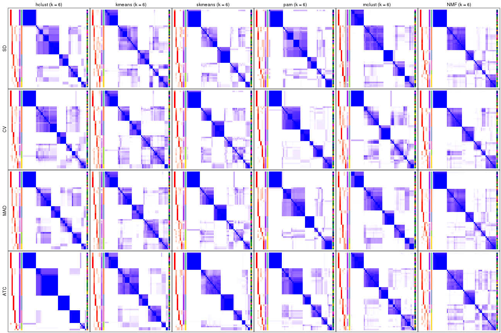
Membership heatmaps for all methods. (What is a membership heatmap?)
collect_plots(res_list, k = 2, fun = membership_heatmap, mc.cores = 4)
collect_plots(res_list, k = 3, fun = membership_heatmap, mc.cores = 4)
collect_plots(res_list, k = 4, fun = membership_heatmap, mc.cores = 4)

collect_plots(res_list, k = 5, fun = membership_heatmap, mc.cores = 4)
collect_plots(res_list, k = 6, fun = membership_heatmap, mc.cores = 4)
Signature heatmaps for all methods. (What is a signature heatmap?)
Note in following heatmaps, rows are scaled.
collect_plots(res_list, k = 2, fun = get_signatures, mc.cores = 4)
collect_plots(res_list, k = 3, fun = get_signatures, mc.cores = 4)
collect_plots(res_list, k = 4, fun = get_signatures, mc.cores = 4)
collect_plots(res_list, k = 5, fun = get_signatures, mc.cores = 4)
collect_plots(res_list, k = 6, fun = get_signatures, mc.cores = 4)
The statistics used for measuring the stability of consensus partitioning. (How are they defined?)
get_stats(res_list, k = 2)
#> k 1-PAC mean_silhouette concordance area_increased Rand Jaccard
#> SD:NMF 2 0.562 0.872 0.899 0.406 0.628 0.628
#> CV:NMF 2 0.520 0.791 0.906 0.467 0.535 0.535
#> MAD:NMF 2 0.634 0.766 0.907 0.431 0.575 0.575
#> ATC:NMF 2 0.859 0.941 0.971 0.489 0.516 0.516
#> SD:skmeans 2 1.000 0.987 0.993 0.494 0.508 0.508
#> CV:skmeans 2 0.499 0.870 0.907 0.495 0.508 0.508
#> MAD:skmeans 2 1.000 0.998 0.999 0.493 0.508 0.508
#> ATC:skmeans 2 1.000 0.993 0.997 0.486 0.516 0.516
#> SD:mclust 2 0.476 0.690 0.847 0.418 0.648 0.648
#> CV:mclust 2 0.527 0.896 0.928 0.366 0.648 0.648
#> MAD:mclust 2 0.523 0.898 0.938 0.356 0.669 0.669
#> ATC:mclust 2 0.788 0.856 0.935 0.432 0.535 0.535
#> SD:kmeans 2 0.342 0.735 0.839 0.393 0.516 0.516
#> CV:kmeans 2 0.293 0.472 0.686 0.406 0.628 0.628
#> MAD:kmeans 2 0.353 0.457 0.716 0.414 0.628 0.628
#> ATC:kmeans 2 0.484 0.750 0.820 0.348 0.693 0.693
#> SD:pam 2 1.000 0.968 0.988 0.467 0.535 0.535
#> CV:pam 2 0.744 0.802 0.929 0.415 0.591 0.591
#> MAD:pam 2 0.762 0.942 0.972 0.457 0.535 0.535
#> ATC:pam 2 1.000 0.993 0.997 0.349 0.648 0.648
#> SD:hclust 2 0.560 0.741 0.898 0.398 0.648 0.648
#> CV:hclust 2 0.627 0.790 0.905 0.357 0.693 0.693
#> MAD:hclust 2 0.325 0.688 0.864 0.415 0.648 0.648
#> ATC:hclust 2 1.000 1.000 1.000 0.308 0.693 0.693
get_stats(res_list, k = 3)
#> k 1-PAC mean_silhouette concordance area_increased Rand Jaccard
#> SD:NMF 3 0.971 0.928 0.975 0.511 0.718 0.564
#> CV:NMF 3 0.998 0.960 0.983 0.363 0.701 0.501
#> MAD:NMF 3 0.970 0.957 0.981 0.444 0.743 0.574
#> ATC:NMF 3 0.941 0.937 0.974 0.283 0.653 0.438
#> SD:skmeans 3 0.970 0.939 0.977 0.318 0.715 0.499
#> CV:skmeans 3 1.000 0.971 0.988 0.304 0.757 0.561
#> MAD:skmeans 3 0.999 0.959 0.983 0.319 0.715 0.499
#> ATC:skmeans 3 1.000 0.959 0.982 0.365 0.795 0.614
#> SD:mclust 3 1.000 0.981 0.990 0.280 0.778 0.670
#> CV:mclust 3 0.791 0.902 0.947 0.538 0.778 0.670
#> MAD:mclust 3 1.000 0.951 0.980 0.525 0.804 0.708
#> ATC:mclust 3 1.000 0.989 0.994 0.366 0.835 0.703
#> SD:kmeans 3 0.915 0.957 0.982 0.465 0.893 0.796
#> CV:kmeans 3 0.861 0.910 0.959 0.464 0.753 0.620
#> MAD:kmeans 3 0.997 0.938 0.968 0.402 0.725 0.590
#> ATC:kmeans 3 1.000 1.000 1.000 0.657 0.732 0.613
#> SD:pam 3 0.915 0.941 0.975 0.334 0.770 0.596
#> CV:pam 3 0.835 0.891 0.957 0.474 0.709 0.541
#> MAD:pam 3 0.866 0.891 0.958 0.333 0.770 0.596
#> ATC:pam 3 1.000 0.991 0.997 0.643 0.776 0.655
#> SD:hclust 3 0.484 0.569 0.785 0.486 0.665 0.512
#> CV:hclust 3 0.427 0.457 0.733 0.584 0.622 0.480
#> MAD:hclust 3 0.536 0.702 0.824 0.464 0.762 0.632
#> ATC:hclust 3 1.000 0.981 0.993 0.841 0.746 0.634
get_stats(res_list, k = 4)
#> k 1-PAC mean_silhouette concordance area_increased Rand Jaccard
#> SD:NMF 4 0.896 0.905 0.946 0.213 0.825 0.569
#> CV:NMF 4 0.916 0.894 0.949 0.178 0.841 0.588
#> MAD:NMF 4 0.931 0.898 0.947 0.201 0.830 0.570
#> ATC:NMF 4 0.854 0.865 0.934 0.197 0.837 0.582
#> SD:skmeans 4 0.943 0.928 0.965 0.132 0.887 0.688
#> CV:skmeans 4 0.900 0.865 0.944 0.148 0.888 0.694
#> MAD:skmeans 4 0.973 0.945 0.972 0.141 0.871 0.646
#> ATC:skmeans 4 0.941 0.921 0.964 0.106 0.931 0.797
#> SD:mclust 4 0.767 0.877 0.915 0.325 0.807 0.593
#> CV:mclust 4 0.710 0.795 0.855 0.297 0.767 0.519
#> MAD:mclust 4 0.819 0.780 0.890 0.323 0.795 0.566
#> ATC:mclust 4 0.752 0.808 0.876 0.140 0.901 0.769
#> SD:kmeans 4 0.798 0.899 0.927 0.261 0.811 0.568
#> CV:kmeans 4 0.698 0.812 0.869 0.220 0.806 0.558
#> MAD:kmeans 4 0.798 0.905 0.920 0.251 0.818 0.586
#> ATC:kmeans 4 0.780 0.918 0.932 0.255 0.806 0.558
#> SD:pam 4 0.765 0.801 0.885 0.141 0.901 0.745
#> CV:pam 4 0.780 0.825 0.915 0.194 0.868 0.662
#> MAD:pam 4 0.892 0.902 0.944 0.185 0.865 0.658
#> ATC:pam 4 0.909 0.918 0.964 0.236 0.798 0.555
#> SD:hclust 4 0.747 0.789 0.897 0.229 0.758 0.469
#> CV:hclust 4 0.695 0.792 0.883 0.272 0.729 0.421
#> MAD:hclust 4 0.821 0.792 0.913 0.201 0.810 0.554
#> ATC:hclust 4 0.803 0.916 0.931 0.262 0.839 0.634
get_stats(res_list, k = 5)
#> k 1-PAC mean_silhouette concordance area_increased Rand Jaccard
#> SD:NMF 5 0.817 0.790 0.876 0.0575 0.929 0.732
#> CV:NMF 5 0.852 0.809 0.897 0.0548 0.944 0.786
#> MAD:NMF 5 0.842 0.752 0.885 0.0566 0.941 0.769
#> ATC:NMF 5 0.746 0.692 0.836 0.0455 0.952 0.811
#> SD:skmeans 5 0.797 0.668 0.810 0.0841 0.943 0.787
#> CV:skmeans 5 0.798 0.655 0.846 0.0840 0.908 0.666
#> MAD:skmeans 5 0.821 0.728 0.861 0.0792 0.914 0.681
#> ATC:skmeans 5 0.881 0.838 0.861 0.0701 0.950 0.814
#> SD:mclust 5 0.728 0.741 0.859 0.1006 0.903 0.661
#> CV:mclust 5 0.748 0.799 0.852 0.0704 0.895 0.627
#> MAD:mclust 5 0.749 0.714 0.844 0.0717 0.905 0.674
#> ATC:mclust 5 0.758 0.819 0.881 0.1521 0.824 0.530
#> SD:kmeans 5 0.763 0.641 0.824 0.0764 0.964 0.871
#> CV:kmeans 5 0.729 0.593 0.780 0.0831 0.923 0.712
#> MAD:kmeans 5 0.777 0.691 0.840 0.0858 0.929 0.734
#> ATC:kmeans 5 0.795 0.722 0.878 0.0714 0.987 0.948
#> SD:pam 5 0.772 0.677 0.821 0.0937 0.877 0.607
#> CV:pam 5 0.857 0.880 0.915 0.0895 0.899 0.645
#> MAD:pam 5 0.830 0.735 0.878 0.0855 0.864 0.560
#> ATC:pam 5 0.784 0.804 0.888 0.0790 0.917 0.717
#> SD:hclust 5 0.728 0.698 0.769 0.0515 0.943 0.819
#> CV:hclust 5 0.712 0.723 0.826 0.0683 0.958 0.851
#> MAD:hclust 5 0.828 0.731 0.811 0.0753 0.969 0.880
#> ATC:hclust 5 0.961 0.947 0.976 0.0834 0.947 0.809
get_stats(res_list, k = 6)
#> k 1-PAC mean_silhouette concordance area_increased Rand Jaccard
#> SD:NMF 6 0.819 0.754 0.859 0.03522 0.959 0.811
#> CV:NMF 6 0.836 0.733 0.861 0.04348 0.945 0.753
#> MAD:NMF 6 0.805 0.792 0.864 0.03409 0.964 0.829
#> ATC:NMF 6 0.758 0.627 0.779 0.03116 0.922 0.683
#> SD:skmeans 6 0.802 0.665 0.813 0.04075 0.939 0.730
#> CV:skmeans 6 0.788 0.651 0.816 0.03459 0.909 0.595
#> MAD:skmeans 6 0.826 0.671 0.820 0.03575 0.924 0.652
#> ATC:skmeans 6 0.868 0.772 0.866 0.03746 0.973 0.879
#> SD:mclust 6 0.783 0.790 0.864 0.02895 0.955 0.796
#> CV:mclust 6 0.751 0.510 0.740 0.05019 0.886 0.529
#> MAD:mclust 6 0.818 0.784 0.812 0.04888 0.929 0.702
#> ATC:mclust 6 0.785 0.737 0.877 0.06281 0.889 0.560
#> SD:kmeans 6 0.712 0.486 0.746 0.04605 0.933 0.740
#> CV:kmeans 6 0.733 0.639 0.725 0.04426 0.912 0.615
#> MAD:kmeans 6 0.766 0.673 0.783 0.04695 0.945 0.759
#> ATC:kmeans 6 0.766 0.762 0.851 0.03997 0.915 0.685
#> SD:pam 6 0.775 0.669 0.833 0.02975 0.857 0.504
#> CV:pam 6 0.905 0.887 0.931 0.03131 0.976 0.884
#> MAD:pam 6 0.844 0.704 0.856 0.03060 0.897 0.607
#> ATC:pam 6 0.749 0.770 0.870 0.04482 0.926 0.700
#> SD:hclust 6 0.800 0.702 0.848 0.04603 0.890 0.643
#> CV:hclust 6 0.727 0.653 0.819 0.03981 0.946 0.779
#> MAD:hclust 6 0.809 0.659 0.778 0.04471 0.909 0.626
#> ATC:hclust 6 0.925 0.913 0.963 0.00707 0.994 0.972
Following heatmap plots the partition for each combination of methods and the lightness correspond to the silhouette scores for samples in each method. On top the consensus subgroup is inferred from all methods by taking the mean silhouette scores as weight.
collect_stats(res_list, k = 2)
collect_stats(res_list, k = 3)
collect_stats(res_list, k = 4)
collect_stats(res_list, k = 5)
collect_stats(res_list, k = 6)
Collect partitions from all methods:
collect_classes(res_list, k = 2)
collect_classes(res_list, k = 3)
collect_classes(res_list, k = 4)
collect_classes(res_list, k = 5)
collect_classes(res_list, k = 6)
Overlap of top rows from different top-row methods:
top_rows_overlap(res_list, top_n = 1000, method = "euler")
top_rows_overlap(res_list, top_n = 2000, method = "euler")
top_rows_overlap(res_list, top_n = 3000, method = "euler")
top_rows_overlap(res_list, top_n = 4000, method = "euler")
top_rows_overlap(res_list, top_n = 5000, method = "euler")
Also visualize the correspondance of rankings between different top-row methods:
top_rows_overlap(res_list, top_n = 1000, method = "correspondance")
top_rows_overlap(res_list, top_n = 2000, method = "correspondance")
top_rows_overlap(res_list, top_n = 3000, method = "correspondance")
top_rows_overlap(res_list, top_n = 4000, method = "correspondance")
top_rows_overlap(res_list, top_n = 5000, method = "correspondance")
Heatmaps of the top rows:
top_rows_heatmap(res_list, top_n = 1000)
top_rows_heatmap(res_list, top_n = 2000)
top_rows_heatmap(res_list, top_n = 3000)
top_rows_heatmap(res_list, top_n = 4000)
top_rows_heatmap(res_list, top_n = 5000)
Test correlation between subgroups and known annotations. If the known annotation is numeric, one-way ANOVA test is applied, and if the known annotation is discrete, chi-squared contingency table test is applied.
test_to_known_factors(res_list, k = 2)
#> n tissue(p) k
#> SD:NMF 54 0.398 2
#> CV:NMF 48 0.432 2
#> MAD:NMF 49 0.393 2
#> ATC:NMF 53 0.397 2
#> SD:skmeans 54 0.398 2
#> CV:skmeans 54 0.398 2
#> MAD:skmeans 54 0.398 2
#> ATC:skmeans 54 0.398 2
#> SD:mclust 39 0.425 2
#> CV:mclust 53 0.397 2
#> MAD:mclust 54 0.398 2
#> ATC:mclust 53 0.397 2
#> SD:kmeans 41 0.383 2
#> CV:kmeans 35 0.373 2
#> MAD:kmeans 38 0.378 2
#> ATC:kmeans 54 0.398 2
#> SD:pam 53 0.397 2
#> CV:pam 47 0.391 2
#> MAD:pam 53 0.397 2
#> ATC:pam 54 0.398 2
#> SD:hclust 45 0.388 2
#> CV:hclust 47 0.391 2
#> MAD:hclust 46 0.389 2
#> ATC:hclust 54 0.398 2
test_to_known_factors(res_list, k = 3)
#> n tissue(p) k
#> SD:NMF 52 0.372 3
#> CV:NMF 54 0.374 3
#> MAD:NMF 54 0.374 3
#> ATC:NMF 53 0.373 3
#> SD:skmeans 52 0.372 3
#> CV:skmeans 53 0.373 3
#> MAD:skmeans 54 0.374 3
#> ATC:skmeans 53 0.373 3
#> SD:mclust 54 0.374 3
#> CV:mclust 53 0.373 3
#> MAD:mclust 52 0.372 3
#> ATC:mclust 54 0.374 3
#> SD:kmeans 53 0.373 3
#> CV:kmeans 52 0.372 3
#> MAD:kmeans 52 0.372 3
#> ATC:kmeans 54 0.374 3
#> SD:pam 52 0.372 3
#> CV:pam 52 0.372 3
#> MAD:pam 49 0.368 3
#> ATC:pam 54 0.374 3
#> SD:hclust 29 0.401 3
#> CV:hclust 19 0.392 3
#> MAD:hclust 46 0.364 3
#> ATC:hclust 53 0.373 3
test_to_known_factors(res_list, k = 4)
#> n tissue(p) k
#> SD:NMF 52 0.352 4
#> CV:NMF 51 0.350 4
#> MAD:NMF 52 0.352 4
#> ATC:NMF 52 0.352 4
#> SD:skmeans 54 0.355 4
#> CV:skmeans 49 0.415 4
#> MAD:skmeans 53 0.353 4
#> ATC:skmeans 53 0.353 4
#> SD:mclust 54 0.355 4
#> CV:mclust 49 0.348 4
#> MAD:mclust 51 0.350 4
#> ATC:mclust 50 0.349 4
#> SD:kmeans 52 0.417 4
#> CV:kmeans 50 0.416 4
#> MAD:kmeans 53 0.353 4
#> ATC:kmeans 53 0.353 4
#> SD:pam 49 0.348 4
#> CV:pam 48 0.346 4
#> MAD:pam 53 0.353 4
#> ATC:pam 51 0.350 4
#> SD:hclust 45 0.411 4
#> CV:hclust 50 0.349 4
#> MAD:hclust 48 0.346 4
#> ATC:hclust 53 0.353 4
test_to_known_factors(res_list, k = 5)
#> n tissue(p) k
#> SD:NMF 48 0.476 5
#> CV:NMF 50 0.525 5
#> MAD:NMF 44 0.410 5
#> ATC:NMF 43 0.338 5
#> SD:skmeans 39 0.405 5
#> CV:skmeans 40 0.397 5
#> MAD:skmeans 43 0.319 5
#> ATC:skmeans 49 0.406 5
#> SD:mclust 45 0.419 5
#> CV:mclust 50 0.434 5
#> MAD:mclust 43 0.487 5
#> ATC:mclust 52 0.334 5
#> SD:kmeans 39 0.405 5
#> CV:kmeans 38 0.404 5
#> MAD:kmeans 44 0.321 5
#> ATC:kmeans 46 0.343 5
#> SD:pam 38 0.394 5
#> CV:pam 52 0.334 5
#> MAD:pam 46 0.324 5
#> ATC:pam 51 0.457 5
#> SD:hclust 44 0.401 5
#> CV:hclust 44 0.401 5
#> MAD:hclust 48 0.328 5
#> ATC:hclust 53 0.336 5
test_to_known_factors(res_list, k = 6)
#> n tissue(p) k
#> SD:NMF 47 0.438 6
#> CV:NMF 46 0.455 6
#> MAD:NMF 51 0.452 6
#> ATC:NMF 38 0.308 6
#> SD:skmeans 41 0.389 6
#> CV:skmeans 38 0.394 6
#> MAD:skmeans 39 0.293 6
#> ATC:skmeans 46 0.403 6
#> SD:mclust 49 0.426 6
#> CV:mclust 26 0.384 6
#> MAD:mclust 48 0.398 6
#> ATC:mclust 47 0.458 6
#> SD:kmeans 25 0.394 6
#> CV:kmeans 44 0.393 6
#> MAD:kmeans 44 0.321 6
#> ATC:kmeans 50 0.315 6
#> SD:pam 41 0.389 6
#> CV:pam 53 0.320 6
#> MAD:pam 43 0.392 6
#> ATC:pam 51 0.426 6
#> SD:hclust 42 0.391 6
#> CV:hclust 44 0.393 6
#> MAD:hclust 45 0.394 6
#> ATC:hclust 51 0.333 6
The object with results only for a single top-value method and a single partition method can be extracted as:
res = res_list["SD", "hclust"]
# you can also extract it by
# res = res_list["SD:hclust"]
A summary of res and all the functions that can be applied to it:
res
#> A 'ConsensusPartition' object with k = 2, 3, 4, 5, 6.
#> On a matrix with 21452 rows and 54 columns.
#> Top rows (1000, 2000, 3000, 4000, 5000) are extracted by 'SD' method.
#> Subgroups are detected by 'hclust' method.
#> Performed in total 1250 partitions by row resampling.
#> Best k for subgroups seems to be 4.
#>
#> Following methods can be applied to this 'ConsensusPartition' object:
#> [1] "cola_report" "collect_classes" "collect_plots"
#> [4] "collect_stats" "colnames" "compare_signatures"
#> [7] "consensus_heatmap" "dimension_reduction" "functional_enrichment"
#> [10] "get_anno_col" "get_anno" "get_classes"
#> [13] "get_consensus" "get_matrix" "get_membership"
#> [16] "get_param" "get_signatures" "get_stats"
#> [19] "is_best_k" "is_stable_k" "membership_heatmap"
#> [22] "ncol" "nrow" "plot_ecdf"
#> [25] "rownames" "select_partition_number" "show"
#> [28] "suggest_best_k" "test_to_known_factors"
collect_plots() function collects all the plots made from res for all k (number of partitions)
into one single page to provide an easy and fast comparison between different k.
collect_plots(res)
The plots are:
k and the heatmap of
predicted classes for each k.k.k.k.All the plots in panels can be made by individual functions and they are plotted later in this section.
select_partition_number() produces several plots showing different
statistics for choosing “optimized” k. There are following statistics:
k;k, the area increased is defined as \(A_k - A_{k-1}\).The detailed explanations of these statistics can be found in the cola vignette.
Generally speaking, lower PAC score, higher mean silhouette score or higher
concordance corresponds to better partition. Rand index and Jaccard index
measure how similar the current partition is compared to partition with k-1.
If they are too similar, we won't accept k is better than k-1.
select_partition_number(res)

The numeric values for all these statistics can be obtained by get_stats().
get_stats(res)
#> k 1-PAC mean_silhouette concordance area_increased Rand Jaccard
#> 2 2 0.560 0.741 0.898 0.3979 0.648 0.648
#> 3 3 0.484 0.569 0.785 0.4861 0.665 0.512
#> 4 4 0.747 0.789 0.897 0.2293 0.758 0.469
#> 5 5 0.728 0.698 0.769 0.0515 0.943 0.819
#> 6 6 0.800 0.702 0.848 0.0460 0.890 0.643
suggest_best_k() suggests the best \(k\) based on these statistics. The rules are as follows:
NA.suggest_best_k(res)
#> [1] 4
Following shows the table of the partitions (You need to click the show/hide
code output link to see it). The membership matrix (columns with name p*)
is inferred by
clue::cl_consensus()
function with the SE method. Basically the value in the membership matrix
represents the probability to belong to a certain group. The finall class
label for an item is determined with the group with highest probability it
belongs to.
In get_classes() function, the entropy is calculated from the membership
matrix and the silhouette score is calculated from the consensus matrix.
cbind(get_classes(res, k = 2), get_membership(res, k = 2))
#> class entropy silhouette p1 p2
#> GSM28710 2 0.808 0.645 0.248 0.752
#> GSM28711 2 0.808 0.645 0.248 0.752
#> GSM28712 2 0.000 0.868 0.000 1.000
#> GSM11222 1 0.388 0.851 0.924 0.076
#> GSM28720 2 0.000 0.868 0.000 1.000
#> GSM11217 2 0.000 0.868 0.000 1.000
#> GSM28723 2 0.000 0.868 0.000 1.000
#> GSM11241 2 0.000 0.868 0.000 1.000
#> GSM28703 2 0.000 0.868 0.000 1.000
#> GSM11227 2 0.000 0.868 0.000 1.000
#> GSM28706 2 0.000 0.868 0.000 1.000
#> GSM11229 2 0.000 0.868 0.000 1.000
#> GSM11235 2 0.000 0.868 0.000 1.000
#> GSM28707 2 0.000 0.868 0.000 1.000
#> GSM11240 2 0.000 0.868 0.000 1.000
#> GSM28714 2 0.000 0.868 0.000 1.000
#> GSM11216 1 0.000 0.899 1.000 0.000
#> GSM28715 2 0.000 0.868 0.000 1.000
#> GSM11234 2 0.000 0.868 0.000 1.000
#> GSM28699 2 0.000 0.868 0.000 1.000
#> GSM11233 2 0.000 0.868 0.000 1.000
#> GSM28718 2 0.000 0.868 0.000 1.000
#> GSM11231 2 0.430 0.806 0.088 0.912
#> GSM11237 2 0.000 0.868 0.000 1.000
#> GSM11228 2 1.000 0.115 0.496 0.504
#> GSM28697 2 1.000 0.115 0.496 0.504
#> GSM28698 1 0.000 0.899 1.000 0.000
#> GSM11238 1 0.000 0.899 1.000 0.000
#> GSM11242 1 0.000 0.899 1.000 0.000
#> GSM28719 2 1.000 0.115 0.496 0.504
#> GSM28708 2 1.000 0.115 0.496 0.504
#> GSM28722 2 0.697 0.719 0.188 0.812
#> GSM11232 2 0.814 0.642 0.252 0.748
#> GSM28709 1 0.000 0.899 1.000 0.000
#> GSM11226 1 0.946 0.342 0.636 0.364
#> GSM11239 1 0.000 0.899 1.000 0.000
#> GSM11225 1 0.000 0.899 1.000 0.000
#> GSM11220 1 0.000 0.899 1.000 0.000
#> GSM28701 2 0.827 0.629 0.260 0.740
#> GSM28721 2 1.000 0.115 0.496 0.504
#> GSM28713 2 0.000 0.868 0.000 1.000
#> GSM28716 2 0.000 0.868 0.000 1.000
#> GSM11221 2 0.000 0.868 0.000 1.000
#> GSM28717 2 0.000 0.868 0.000 1.000
#> GSM11223 2 0.000 0.868 0.000 1.000
#> GSM11218 1 0.946 0.342 0.636 0.364
#> GSM11219 2 0.000 0.868 0.000 1.000
#> GSM11236 2 0.929 0.492 0.344 0.656
#> GSM28702 1 0.388 0.851 0.924 0.076
#> GSM28705 2 1.000 0.115 0.496 0.504
#> GSM11230 2 0.000 0.868 0.000 1.000
#> GSM28704 2 0.000 0.868 0.000 1.000
#> GSM28700 2 0.000 0.868 0.000 1.000
#> GSM11224 2 0.000 0.868 0.000 1.000
cbind(get_classes(res, k = 3), get_membership(res, k = 3))
#> class entropy silhouette p1 p2 p3
#> GSM28710 2 0.397 0.585 0.132 0.860 0.008
#> GSM28711 2 0.397 0.585 0.132 0.860 0.008
#> GSM28712 2 0.631 0.323 0.492 0.508 0.000
#> GSM11222 3 0.625 0.527 0.000 0.444 0.556
#> GSM28720 1 0.000 0.819 1.000 0.000 0.000
#> GSM11217 1 0.000 0.819 1.000 0.000 0.000
#> GSM28723 1 0.000 0.819 1.000 0.000 0.000
#> GSM11241 1 0.000 0.819 1.000 0.000 0.000
#> GSM28703 1 0.000 0.819 1.000 0.000 0.000
#> GSM11227 1 0.000 0.819 1.000 0.000 0.000
#> GSM28706 1 0.000 0.819 1.000 0.000 0.000
#> GSM11229 1 0.000 0.819 1.000 0.000 0.000
#> GSM11235 1 0.000 0.819 1.000 0.000 0.000
#> GSM28707 1 0.000 0.819 1.000 0.000 0.000
#> GSM11240 2 0.615 0.493 0.408 0.592 0.000
#> GSM28714 2 0.615 0.493 0.408 0.592 0.000
#> GSM11216 3 0.000 0.908 0.000 0.000 1.000
#> GSM28715 2 0.614 0.497 0.404 0.596 0.000
#> GSM11234 2 0.631 0.323 0.492 0.508 0.000
#> GSM28699 1 0.624 -0.148 0.560 0.440 0.000
#> GSM11233 1 0.624 -0.148 0.560 0.440 0.000
#> GSM28718 2 0.615 0.493 0.408 0.592 0.000
#> GSM11231 2 0.568 0.525 0.316 0.684 0.000
#> GSM11237 2 0.615 0.493 0.408 0.592 0.000
#> GSM11228 2 0.341 0.475 0.000 0.876 0.124
#> GSM28697 2 0.341 0.475 0.000 0.876 0.124
#> GSM28698 3 0.000 0.908 0.000 0.000 1.000
#> GSM11238 3 0.000 0.908 0.000 0.000 1.000
#> GSM11242 3 0.000 0.908 0.000 0.000 1.000
#> GSM28719 2 0.341 0.475 0.000 0.876 0.124
#> GSM28708 2 0.341 0.475 0.000 0.876 0.124
#> GSM28722 2 0.435 0.577 0.184 0.816 0.000
#> GSM11232 2 0.530 0.577 0.156 0.808 0.036
#> GSM28709 3 0.000 0.908 0.000 0.000 1.000
#> GSM11226 2 0.525 0.235 0.000 0.736 0.264
#> GSM11239 3 0.000 0.908 0.000 0.000 1.000
#> GSM11225 3 0.000 0.908 0.000 0.000 1.000
#> GSM11220 3 0.000 0.908 0.000 0.000 1.000
#> GSM28701 2 0.375 0.584 0.120 0.872 0.008
#> GSM28721 2 0.341 0.475 0.000 0.876 0.124
#> GSM28713 2 0.630 0.364 0.472 0.528 0.000
#> GSM28716 1 0.529 0.393 0.732 0.268 0.000
#> GSM11221 2 0.614 0.497 0.404 0.596 0.000
#> GSM28717 1 0.624 -0.148 0.560 0.440 0.000
#> GSM11223 1 0.000 0.819 1.000 0.000 0.000
#> GSM11218 2 0.525 0.235 0.000 0.736 0.264
#> GSM11219 2 0.614 0.497 0.404 0.596 0.000
#> GSM11236 2 0.376 0.571 0.068 0.892 0.040
#> GSM28702 3 0.625 0.527 0.000 0.444 0.556
#> GSM28705 2 0.341 0.475 0.000 0.876 0.124
#> GSM11230 2 0.615 0.493 0.408 0.592 0.000
#> GSM28704 2 0.610 0.505 0.392 0.608 0.000
#> GSM28700 2 0.631 0.323 0.492 0.508 0.000
#> GSM11224 2 0.631 0.323 0.492 0.508 0.000
cbind(get_classes(res, k = 4), get_membership(res, k = 4))
#> class entropy silhouette p1 p2 p3 p4
#> GSM28710 2 0.4907 0.392 0.000 0.580 0.000 0.420
#> GSM28711 2 0.4907 0.392 0.000 0.580 0.000 0.420
#> GSM28712 2 0.0000 0.819 0.000 1.000 0.000 0.000
#> GSM11222 4 0.4972 0.231 0.000 0.000 0.456 0.544
#> GSM28720 1 0.0000 1.000 1.000 0.000 0.000 0.000
#> GSM11217 1 0.0000 1.000 1.000 0.000 0.000 0.000
#> GSM28723 1 0.0000 1.000 1.000 0.000 0.000 0.000
#> GSM11241 1 0.0000 1.000 1.000 0.000 0.000 0.000
#> GSM28703 1 0.0000 1.000 1.000 0.000 0.000 0.000
#> GSM11227 1 0.0000 1.000 1.000 0.000 0.000 0.000
#> GSM28706 1 0.0000 1.000 1.000 0.000 0.000 0.000
#> GSM11229 1 0.0000 1.000 1.000 0.000 0.000 0.000
#> GSM11235 1 0.0000 1.000 1.000 0.000 0.000 0.000
#> GSM28707 1 0.0000 1.000 1.000 0.000 0.000 0.000
#> GSM11240 2 0.2081 0.832 0.000 0.916 0.000 0.084
#> GSM28714 2 0.2081 0.832 0.000 0.916 0.000 0.084
#> GSM11216 3 0.0000 1.000 0.000 0.000 1.000 0.000
#> GSM28715 2 0.2149 0.830 0.000 0.912 0.000 0.088
#> GSM11234 2 0.0000 0.819 0.000 1.000 0.000 0.000
#> GSM28699 2 0.2124 0.783 0.040 0.932 0.000 0.028
#> GSM11233 2 0.2124 0.783 0.040 0.932 0.000 0.028
#> GSM28718 2 0.2081 0.832 0.000 0.916 0.000 0.084
#> GSM11231 2 0.4961 0.274 0.000 0.552 0.000 0.448
#> GSM11237 2 0.2081 0.832 0.000 0.916 0.000 0.084
#> GSM11228 4 0.1302 0.794 0.000 0.044 0.000 0.956
#> GSM28697 4 0.1302 0.794 0.000 0.044 0.000 0.956
#> GSM28698 3 0.0000 1.000 0.000 0.000 1.000 0.000
#> GSM11238 3 0.0000 1.000 0.000 0.000 1.000 0.000
#> GSM11242 3 0.0000 1.000 0.000 0.000 1.000 0.000
#> GSM28719 4 0.0921 0.794 0.000 0.028 0.000 0.972
#> GSM28708 4 0.0921 0.794 0.000 0.028 0.000 0.972
#> GSM28722 2 0.4888 0.402 0.000 0.588 0.000 0.412
#> GSM11232 4 0.4730 0.275 0.000 0.364 0.000 0.636
#> GSM28709 3 0.0000 1.000 0.000 0.000 1.000 0.000
#> GSM11226 4 0.2921 0.701 0.000 0.000 0.140 0.860
#> GSM11239 3 0.0000 1.000 0.000 0.000 1.000 0.000
#> GSM11225 3 0.0000 1.000 0.000 0.000 1.000 0.000
#> GSM11220 3 0.0000 1.000 0.000 0.000 1.000 0.000
#> GSM28701 2 0.4933 0.361 0.000 0.568 0.000 0.432
#> GSM28721 4 0.1792 0.783 0.000 0.068 0.000 0.932
#> GSM28713 2 0.1022 0.820 0.000 0.968 0.000 0.032
#> GSM28716 2 0.4304 0.530 0.284 0.716 0.000 0.000
#> GSM11221 2 0.2149 0.830 0.000 0.912 0.000 0.088
#> GSM28717 2 0.2124 0.783 0.040 0.932 0.000 0.028
#> GSM11223 1 0.0000 1.000 1.000 0.000 0.000 0.000
#> GSM11218 4 0.2921 0.701 0.000 0.000 0.140 0.860
#> GSM11219 2 0.2149 0.830 0.000 0.912 0.000 0.088
#> GSM11236 4 0.4331 0.465 0.000 0.288 0.000 0.712
#> GSM28702 4 0.4972 0.231 0.000 0.000 0.456 0.544
#> GSM28705 4 0.1792 0.783 0.000 0.068 0.000 0.932
#> GSM11230 2 0.2081 0.832 0.000 0.916 0.000 0.084
#> GSM28704 2 0.2530 0.818 0.000 0.888 0.000 0.112
#> GSM28700 2 0.0000 0.819 0.000 1.000 0.000 0.000
#> GSM11224 2 0.0000 0.819 0.000 1.000 0.000 0.000
cbind(get_classes(res, k = 5), get_membership(res, k = 5))
#> class entropy silhouette p1 p2 p3 p4 p5
#> GSM28710 2 0.4384 0.408 0.000 0.660 0.000 0.016 0.324
#> GSM28711 2 0.4384 0.408 0.000 0.660 0.000 0.016 0.324
#> GSM28712 2 0.3366 0.674 0.000 0.768 0.232 0.000 0.000
#> GSM11222 4 0.5222 0.115 0.000 0.000 0.196 0.680 0.124
#> GSM28720 1 0.0000 1.000 1.000 0.000 0.000 0.000 0.000
#> GSM11217 1 0.0000 1.000 1.000 0.000 0.000 0.000 0.000
#> GSM28723 1 0.0000 1.000 1.000 0.000 0.000 0.000 0.000
#> GSM11241 1 0.0000 1.000 1.000 0.000 0.000 0.000 0.000
#> GSM28703 1 0.0000 1.000 1.000 0.000 0.000 0.000 0.000
#> GSM11227 1 0.0000 1.000 1.000 0.000 0.000 0.000 0.000
#> GSM28706 1 0.0000 1.000 1.000 0.000 0.000 0.000 0.000
#> GSM11229 1 0.0000 1.000 1.000 0.000 0.000 0.000 0.000
#> GSM11235 1 0.0000 1.000 1.000 0.000 0.000 0.000 0.000
#> GSM28707 1 0.0000 1.000 1.000 0.000 0.000 0.000 0.000
#> GSM11240 2 0.0000 0.718 0.000 1.000 0.000 0.000 0.000
#> GSM28714 2 0.0000 0.718 0.000 1.000 0.000 0.000 0.000
#> GSM11216 5 0.4182 1.000 0.000 0.000 0.400 0.000 0.600
#> GSM28715 2 0.0162 0.718 0.000 0.996 0.000 0.000 0.004
#> GSM11234 2 0.3366 0.674 0.000 0.768 0.232 0.000 0.000
#> GSM28699 2 0.4235 0.558 0.000 0.576 0.424 0.000 0.000
#> GSM11233 2 0.4235 0.558 0.000 0.576 0.424 0.000 0.000
#> GSM28718 2 0.0000 0.718 0.000 1.000 0.000 0.000 0.000
#> GSM11231 2 0.5345 0.311 0.000 0.632 0.000 0.280 0.088
#> GSM11237 2 0.0000 0.718 0.000 1.000 0.000 0.000 0.000
#> GSM11228 4 0.6072 0.682 0.000 0.124 0.000 0.484 0.392
#> GSM28697 4 0.6072 0.682 0.000 0.124 0.000 0.484 0.392
#> GSM28698 3 0.4235 1.000 0.000 0.000 0.576 0.000 0.424
#> GSM11238 3 0.4235 1.000 0.000 0.000 0.576 0.000 0.424
#> GSM11242 3 0.4235 1.000 0.000 0.000 0.576 0.000 0.424
#> GSM28719 4 0.5889 0.688 0.000 0.104 0.000 0.504 0.392
#> GSM28708 4 0.5876 0.689 0.000 0.104 0.000 0.512 0.384
#> GSM28722 2 0.5223 0.420 0.000 0.672 0.000 0.108 0.220
#> GSM11232 2 0.6645 -0.170 0.000 0.448 0.000 0.292 0.260
#> GSM28709 5 0.4182 1.000 0.000 0.000 0.400 0.000 0.600
#> GSM11226 4 0.0162 0.520 0.000 0.000 0.000 0.996 0.004
#> GSM11239 3 0.4235 1.000 0.000 0.000 0.576 0.000 0.424
#> GSM11225 3 0.4235 1.000 0.000 0.000 0.576 0.000 0.424
#> GSM11220 5 0.4182 1.000 0.000 0.000 0.400 0.000 0.600
#> GSM28701 2 0.4435 0.387 0.000 0.648 0.000 0.016 0.336
#> GSM28721 4 0.6232 0.659 0.000 0.148 0.000 0.480 0.372
#> GSM28713 2 0.3897 0.683 0.000 0.768 0.204 0.000 0.028
#> GSM28716 2 0.6510 0.409 0.284 0.484 0.232 0.000 0.000
#> GSM11221 2 0.0162 0.718 0.000 0.996 0.000 0.000 0.004
#> GSM28717 2 0.4235 0.558 0.000 0.576 0.424 0.000 0.000
#> GSM11223 1 0.0000 1.000 1.000 0.000 0.000 0.000 0.000
#> GSM11218 4 0.0162 0.520 0.000 0.000 0.000 0.996 0.004
#> GSM11219 2 0.0162 0.718 0.000 0.996 0.000 0.000 0.004
#> GSM11236 2 0.6756 -0.327 0.000 0.368 0.000 0.264 0.368
#> GSM28702 4 0.5222 0.115 0.000 0.000 0.196 0.680 0.124
#> GSM28705 4 0.6243 0.657 0.000 0.148 0.000 0.472 0.380
#> GSM11230 2 0.0000 0.718 0.000 1.000 0.000 0.000 0.000
#> GSM28704 2 0.0794 0.708 0.000 0.972 0.000 0.000 0.028
#> GSM28700 2 0.3366 0.674 0.000 0.768 0.232 0.000 0.000
#> GSM11224 2 0.3336 0.675 0.000 0.772 0.228 0.000 0.000
cbind(get_classes(res, k = 6), get_membership(res, k = 6))
#> class entropy silhouette p1 p2 p3 p4 p5 p6
#> GSM28710 2 0.4004 0.255 0.000 0.620 0.000 0.368 0.012 0.000
#> GSM28711 2 0.4004 0.255 0.000 0.620 0.000 0.368 0.012 0.000
#> GSM28712 2 0.3409 0.429 0.000 0.700 0.000 0.000 0.300 0.000
#> GSM11222 6 0.2219 0.692 0.000 0.000 0.136 0.000 0.000 0.864
#> GSM28720 1 0.0000 1.000 1.000 0.000 0.000 0.000 0.000 0.000
#> GSM11217 1 0.0000 1.000 1.000 0.000 0.000 0.000 0.000 0.000
#> GSM28723 1 0.0000 1.000 1.000 0.000 0.000 0.000 0.000 0.000
#> GSM11241 1 0.0000 1.000 1.000 0.000 0.000 0.000 0.000 0.000
#> GSM28703 1 0.0000 1.000 1.000 0.000 0.000 0.000 0.000 0.000
#> GSM11227 1 0.0000 1.000 1.000 0.000 0.000 0.000 0.000 0.000
#> GSM28706 1 0.0000 1.000 1.000 0.000 0.000 0.000 0.000 0.000
#> GSM11229 1 0.0000 1.000 1.000 0.000 0.000 0.000 0.000 0.000
#> GSM11235 1 0.0000 1.000 1.000 0.000 0.000 0.000 0.000 0.000
#> GSM28707 1 0.0000 1.000 1.000 0.000 0.000 0.000 0.000 0.000
#> GSM11240 2 0.0146 0.699 0.000 0.996 0.000 0.000 0.004 0.000
#> GSM28714 2 0.0146 0.699 0.000 0.996 0.000 0.000 0.004 0.000
#> GSM11216 3 0.2219 0.741 0.000 0.000 0.864 0.000 0.136 0.000
#> GSM28715 2 0.0000 0.699 0.000 1.000 0.000 0.000 0.000 0.000
#> GSM11234 2 0.3409 0.429 0.000 0.700 0.000 0.000 0.300 0.000
#> GSM28699 5 0.2597 1.000 0.000 0.176 0.000 0.000 0.824 0.000
#> GSM11233 5 0.2597 1.000 0.000 0.176 0.000 0.000 0.824 0.000
#> GSM28718 2 0.0146 0.699 0.000 0.996 0.000 0.000 0.004 0.000
#> GSM11231 2 0.4212 0.136 0.000 0.560 0.000 0.424 0.016 0.000
#> GSM11237 2 0.0146 0.699 0.000 0.996 0.000 0.000 0.004 0.000
#> GSM11228 4 0.1003 0.761 0.000 0.020 0.000 0.964 0.000 0.016
#> GSM28697 4 0.1003 0.761 0.000 0.020 0.000 0.964 0.000 0.016
#> GSM28698 3 0.2631 0.841 0.000 0.000 0.820 0.000 0.000 0.180
#> GSM11238 3 0.2631 0.841 0.000 0.000 0.820 0.000 0.000 0.180
#> GSM11242 3 0.2631 0.841 0.000 0.000 0.820 0.000 0.000 0.180
#> GSM28719 4 0.0458 0.745 0.000 0.000 0.000 0.984 0.016 0.000
#> GSM28708 4 0.0717 0.745 0.000 0.000 0.000 0.976 0.016 0.008
#> GSM28722 2 0.4628 0.392 0.000 0.672 0.000 0.268 0.024 0.036
#> GSM11232 4 0.5235 0.178 0.000 0.448 0.000 0.484 0.024 0.044
#> GSM28709 3 0.2219 0.741 0.000 0.000 0.864 0.000 0.136 0.000
#> GSM11226 6 0.2631 0.697 0.000 0.000 0.000 0.180 0.000 0.820
#> GSM11239 3 0.2631 0.841 0.000 0.000 0.820 0.000 0.000 0.180
#> GSM11225 3 0.2631 0.841 0.000 0.000 0.820 0.000 0.000 0.180
#> GSM11220 3 0.2219 0.741 0.000 0.000 0.864 0.000 0.136 0.000
#> GSM28701 2 0.4037 0.223 0.000 0.608 0.000 0.380 0.012 0.000
#> GSM28721 4 0.3946 0.697 0.000 0.044 0.000 0.780 0.024 0.152
#> GSM28713 2 0.3175 0.511 0.000 0.744 0.000 0.000 0.256 0.000
#> GSM28716 2 0.6047 -0.166 0.284 0.416 0.000 0.000 0.300 0.000
#> GSM11221 2 0.0000 0.699 0.000 1.000 0.000 0.000 0.000 0.000
#> GSM28717 5 0.2597 1.000 0.000 0.176 0.000 0.000 0.824 0.000
#> GSM11223 1 0.0000 1.000 1.000 0.000 0.000 0.000 0.000 0.000
#> GSM11218 6 0.2631 0.697 0.000 0.000 0.000 0.180 0.000 0.820
#> GSM11219 2 0.0000 0.699 0.000 1.000 0.000 0.000 0.000 0.000
#> GSM11236 4 0.4335 0.475 0.000 0.324 0.000 0.644 0.024 0.008
#> GSM28702 6 0.2219 0.692 0.000 0.000 0.136 0.000 0.000 0.864
#> GSM28705 4 0.3795 0.709 0.000 0.044 0.000 0.796 0.024 0.136
#> GSM11230 2 0.0146 0.699 0.000 0.996 0.000 0.000 0.004 0.000
#> GSM28704 2 0.0632 0.689 0.000 0.976 0.000 0.000 0.024 0.000
#> GSM28700 2 0.3409 0.429 0.000 0.700 0.000 0.000 0.300 0.000
#> GSM11224 2 0.3390 0.435 0.000 0.704 0.000 0.000 0.296 0.000
Heatmaps for the consensus matrix. It visualizes the probability of two samples to be in a same group.
consensus_heatmap(res, k = 2)
consensus_heatmap(res, k = 3)
consensus_heatmap(res, k = 4)
consensus_heatmap(res, k = 5)
consensus_heatmap(res, k = 6)
Heatmaps for the membership of samples in all partitions to see how consistent they are:
membership_heatmap(res, k = 2)
membership_heatmap(res, k = 3)
membership_heatmap(res, k = 4)
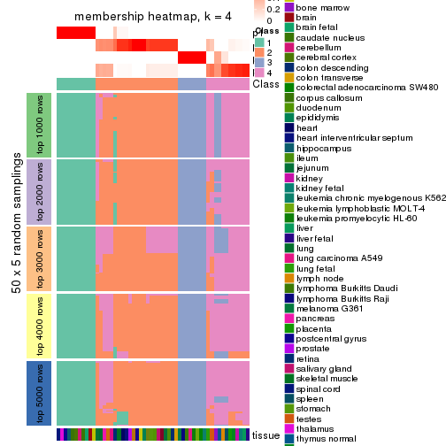
membership_heatmap(res, k = 5)
membership_heatmap(res, k = 6)
As soon as we have had the classes for columns, we can look for signatures which are significantly different between classes which can be candidate marks for certain classes. Following are the heatmaps for signatures.
Signature heatmaps where rows are scaled:
get_signatures(res, k = 2)
get_signatures(res, k = 3)
get_signatures(res, k = 4)
get_signatures(res, k = 5)
get_signatures(res, k = 6)
Signature heatmaps where rows are not scaled:
get_signatures(res, k = 2, scale_rows = FALSE)
get_signatures(res, k = 3, scale_rows = FALSE)
get_signatures(res, k = 4, scale_rows = FALSE)
get_signatures(res, k = 5, scale_rows = FALSE)
get_signatures(res, k = 6, scale_rows = FALSE)
Compare the overlap of signatures from different k:
compare_signatures(res)
get_signature() returns a data frame invisibly. TO get the list of signatures, the function
call should be assigned to a variable explicitly. In following code, if plot argument is set
to FALSE, no heatmap is plotted while only the differential analysis is performed.
# code only for demonstration
tb = get_signature(res, k = ..., plot = FALSE)
An example of the output of tb is:
#> which_row fdr mean_1 mean_2 scaled_mean_1 scaled_mean_2 km
#> 1 38 0.042760348 8.373488 9.131774 -0.5533452 0.5164555 1
#> 2 40 0.018707592 7.106213 8.469186 -0.6173731 0.5762149 1
#> 3 55 0.019134737 10.221463 11.207825 -0.6159697 0.5749050 1
#> 4 59 0.006059896 5.921854 7.869574 -0.6899429 0.6439467 1
#> 5 60 0.018055526 8.928898 10.211722 -0.6204761 0.5791110 1
#> 6 98 0.009384629 15.714769 14.887706 0.6635654 -0.6193277 2
...
The columns in tb are:
which_row: row indices corresponding to the input matrix.fdr: FDR for the differential test. mean_x: The mean value in group x.scaled_mean_x: The mean value in group x after rows are scaled.km: Row groups if k-means clustering is applied to rows.UMAP plot which shows how samples are separated.
dimension_reduction(res, k = 2, method = "UMAP")
dimension_reduction(res, k = 3, method = "UMAP")
dimension_reduction(res, k = 4, method = "UMAP")
dimension_reduction(res, k = 5, method = "UMAP")
dimension_reduction(res, k = 6, method = "UMAP")
Following heatmap shows how subgroups are split when increasing k:
collect_classes(res)
Test correlation between subgroups and known annotations. If the known annotation is numeric, one-way ANOVA test is applied, and if the known annotation is discrete, chi-squared contingency table test is applied.
test_to_known_factors(res)
#> n tissue(p) k
#> SD:hclust 45 0.388 2
#> SD:hclust 29 0.401 3
#> SD:hclust 45 0.411 4
#> SD:hclust 44 0.401 5
#> SD:hclust 42 0.391 6
If matrix rows can be associated to genes, consider to use GO_Enrichment(res,
...) to perform function enrichment for the signature genes.
The object with results only for a single top-value method and a single partition method can be extracted as:
res = res_list["SD", "kmeans"]
# you can also extract it by
# res = res_list["SD:kmeans"]
A summary of res and all the functions that can be applied to it:
res
#> A 'ConsensusPartition' object with k = 2, 3, 4, 5, 6.
#> On a matrix with 21452 rows and 54 columns.
#> Top rows (1000, 2000, 3000, 4000, 5000) are extracted by 'SD' method.
#> Subgroups are detected by 'kmeans' method.
#> Performed in total 1250 partitions by row resampling.
#> Best k for subgroups seems to be 3.
#>
#> Following methods can be applied to this 'ConsensusPartition' object:
#> [1] "cola_report" "collect_classes" "collect_plots"
#> [4] "collect_stats" "colnames" "compare_signatures"
#> [7] "consensus_heatmap" "dimension_reduction" "functional_enrichment"
#> [10] "get_anno_col" "get_anno" "get_classes"
#> [13] "get_consensus" "get_matrix" "get_membership"
#> [16] "get_param" "get_signatures" "get_stats"
#> [19] "is_best_k" "is_stable_k" "membership_heatmap"
#> [22] "ncol" "nrow" "plot_ecdf"
#> [25] "rownames" "select_partition_number" "show"
#> [28] "suggest_best_k" "test_to_known_factors"
collect_plots() function collects all the plots made from res for all k (number of partitions)
into one single page to provide an easy and fast comparison between different k.
collect_plots(res)
The plots are:
k and the heatmap of
predicted classes for each k.k.k.k.All the plots in panels can be made by individual functions and they are plotted later in this section.
select_partition_number() produces several plots showing different
statistics for choosing “optimized” k. There are following statistics:
k;k, the area increased is defined as \(A_k - A_{k-1}\).The detailed explanations of these statistics can be found in the cola vignette.
Generally speaking, lower PAC score, higher mean silhouette score or higher
concordance corresponds to better partition. Rand index and Jaccard index
measure how similar the current partition is compared to partition with k-1.
If they are too similar, we won't accept k is better than k-1.
select_partition_number(res)
The numeric values for all these statistics can be obtained by get_stats().
get_stats(res)
#> k 1-PAC mean_silhouette concordance area_increased Rand Jaccard
#> 2 2 0.342 0.735 0.839 0.3926 0.516 0.516
#> 3 3 0.915 0.957 0.982 0.4652 0.893 0.796
#> 4 4 0.798 0.899 0.927 0.2605 0.811 0.568
#> 5 5 0.763 0.641 0.824 0.0764 0.964 0.871
#> 6 6 0.712 0.486 0.746 0.0461 0.933 0.740
suggest_best_k() suggests the best \(k\) based on these statistics. The rules are as follows:
NA.suggest_best_k(res)
#> [1] 3
Following shows the table of the partitions (You need to click the show/hide
code output link to see it). The membership matrix (columns with name p*)
is inferred by
clue::cl_consensus()
function with the SE method. Basically the value in the membership matrix
represents the probability to belong to a certain group. The finall class
label for an item is determined with the group with highest probability it
belongs to.
In get_classes() function, the entropy is calculated from the membership
matrix and the silhouette score is calculated from the consensus matrix.
cbind(get_classes(res, k = 2), get_membership(res, k = 2))
#> class entropy silhouette p1 p2
#> GSM28710 2 0.000 0.928 0.000 1.000
#> GSM28711 2 0.000 0.928 0.000 1.000
#> GSM28712 2 0.000 0.928 0.000 1.000
#> GSM11222 1 0.795 0.583 0.760 0.240
#> GSM28720 1 0.993 0.498 0.548 0.452
#> GSM11217 1 0.993 0.498 0.548 0.452
#> GSM28723 1 0.993 0.498 0.548 0.452
#> GSM11241 1 0.993 0.498 0.548 0.452
#> GSM28703 1 0.993 0.498 0.548 0.452
#> GSM11227 1 0.993 0.498 0.548 0.452
#> GSM28706 1 0.993 0.498 0.548 0.452
#> GSM11229 1 0.993 0.498 0.548 0.452
#> GSM11235 1 0.993 0.498 0.548 0.452
#> GSM28707 1 0.993 0.498 0.548 0.452
#> GSM11240 2 0.000 0.928 0.000 1.000
#> GSM28714 2 0.000 0.928 0.000 1.000
#> GSM11216 1 0.795 0.583 0.760 0.240
#> GSM28715 2 0.000 0.928 0.000 1.000
#> GSM11234 2 0.000 0.928 0.000 1.000
#> GSM28699 2 0.000 0.928 0.000 1.000
#> GSM11233 2 0.000 0.928 0.000 1.000
#> GSM28718 2 0.000 0.928 0.000 1.000
#> GSM11231 2 0.000 0.928 0.000 1.000
#> GSM11237 2 0.000 0.928 0.000 1.000
#> GSM11228 2 0.224 0.890 0.036 0.964
#> GSM28697 2 0.000 0.928 0.000 1.000
#> GSM28698 1 0.795 0.583 0.760 0.240
#> GSM11238 1 0.795 0.583 0.760 0.240
#> GSM11242 1 0.795 0.583 0.760 0.240
#> GSM28719 2 0.000 0.928 0.000 1.000
#> GSM28708 2 0.697 0.649 0.188 0.812
#> GSM28722 2 0.000 0.928 0.000 1.000
#> GSM11232 2 0.000 0.928 0.000 1.000
#> GSM28709 1 0.795 0.583 0.760 0.240
#> GSM11226 2 0.730 0.618 0.204 0.796
#> GSM11239 1 0.795 0.583 0.760 0.240
#> GSM11225 1 0.795 0.583 0.760 0.240
#> GSM11220 1 0.795 0.583 0.760 0.240
#> GSM28701 2 0.000 0.928 0.000 1.000
#> GSM28721 2 0.760 0.584 0.220 0.780
#> GSM28713 2 0.000 0.928 0.000 1.000
#> GSM28716 2 0.795 0.447 0.240 0.760
#> GSM11221 2 0.000 0.928 0.000 1.000
#> GSM28717 2 0.000 0.928 0.000 1.000
#> GSM11223 1 0.993 0.498 0.548 0.452
#> GSM11218 2 0.827 0.493 0.260 0.740
#> GSM11219 2 0.000 0.928 0.000 1.000
#> GSM11236 2 0.644 0.618 0.164 0.836
#> GSM28702 1 0.795 0.583 0.760 0.240
#> GSM28705 2 0.224 0.890 0.036 0.964
#> GSM11230 2 0.000 0.928 0.000 1.000
#> GSM28704 2 0.000 0.928 0.000 1.000
#> GSM28700 2 0.000 0.928 0.000 1.000
#> GSM11224 2 0.000 0.928 0.000 1.000
cbind(get_classes(res, k = 3), get_membership(res, k = 3))
#> class entropy silhouette p1 p2 p3
#> GSM28710 2 0.0000 0.985 0.000 1.000 0.000
#> GSM28711 2 0.0000 0.985 0.000 1.000 0.000
#> GSM28712 2 0.0000 0.985 0.000 1.000 0.000
#> GSM11222 3 0.0424 1.000 0.008 0.000 0.992
#> GSM28720 1 0.0000 0.943 1.000 0.000 0.000
#> GSM11217 1 0.0000 0.943 1.000 0.000 0.000
#> GSM28723 1 0.0000 0.943 1.000 0.000 0.000
#> GSM11241 1 0.0000 0.943 1.000 0.000 0.000
#> GSM28703 1 0.0000 0.943 1.000 0.000 0.000
#> GSM11227 1 0.0000 0.943 1.000 0.000 0.000
#> GSM28706 1 0.0000 0.943 1.000 0.000 0.000
#> GSM11229 1 0.0000 0.943 1.000 0.000 0.000
#> GSM11235 1 0.0000 0.943 1.000 0.000 0.000
#> GSM28707 1 0.0000 0.943 1.000 0.000 0.000
#> GSM11240 2 0.0000 0.985 0.000 1.000 0.000
#> GSM28714 2 0.0000 0.985 0.000 1.000 0.000
#> GSM11216 3 0.0424 1.000 0.008 0.000 0.992
#> GSM28715 2 0.0000 0.985 0.000 1.000 0.000
#> GSM11234 2 0.0000 0.985 0.000 1.000 0.000
#> GSM28699 2 0.0424 0.981 0.000 0.992 0.008
#> GSM11233 2 0.0424 0.981 0.000 0.992 0.008
#> GSM28718 2 0.0000 0.985 0.000 1.000 0.000
#> GSM11231 2 0.0000 0.985 0.000 1.000 0.000
#> GSM11237 2 0.0000 0.985 0.000 1.000 0.000
#> GSM11228 2 0.0747 0.975 0.000 0.984 0.016
#> GSM28697 2 0.0000 0.985 0.000 1.000 0.000
#> GSM28698 3 0.0424 1.000 0.008 0.000 0.992
#> GSM11238 3 0.0424 1.000 0.008 0.000 0.992
#> GSM11242 3 0.0424 1.000 0.008 0.000 0.992
#> GSM28719 2 0.0000 0.985 0.000 1.000 0.000
#> GSM28708 2 0.3412 0.873 0.000 0.876 0.124
#> GSM28722 2 0.0000 0.985 0.000 1.000 0.000
#> GSM11232 2 0.0000 0.985 0.000 1.000 0.000
#> GSM28709 3 0.0424 1.000 0.008 0.000 0.992
#> GSM11226 2 0.0747 0.975 0.000 0.984 0.016
#> GSM11239 3 0.0424 1.000 0.008 0.000 0.992
#> GSM11225 3 0.0424 1.000 0.008 0.000 0.992
#> GSM11220 3 0.0424 1.000 0.008 0.000 0.992
#> GSM28701 2 0.0000 0.985 0.000 1.000 0.000
#> GSM28721 2 0.3412 0.873 0.000 0.876 0.124
#> GSM28713 2 0.0000 0.985 0.000 1.000 0.000
#> GSM28716 1 0.6617 0.202 0.556 0.436 0.008
#> GSM11221 2 0.0000 0.985 0.000 1.000 0.000
#> GSM28717 2 0.0424 0.981 0.000 0.992 0.008
#> GSM11223 1 0.0000 0.943 1.000 0.000 0.000
#> GSM11218 2 0.3412 0.873 0.000 0.876 0.124
#> GSM11219 2 0.0000 0.985 0.000 1.000 0.000
#> GSM11236 2 0.1170 0.970 0.008 0.976 0.016
#> GSM28702 3 0.0424 1.000 0.008 0.000 0.992
#> GSM28705 2 0.0747 0.975 0.000 0.984 0.016
#> GSM11230 2 0.0000 0.985 0.000 1.000 0.000
#> GSM28704 2 0.0000 0.985 0.000 1.000 0.000
#> GSM28700 2 0.0000 0.985 0.000 1.000 0.000
#> GSM11224 2 0.0000 0.985 0.000 1.000 0.000
cbind(get_classes(res, k = 4), get_membership(res, k = 4))
#> class entropy silhouette p1 p2 p3 p4
#> GSM28710 2 0.2647 0.861 0.000 0.880 0.000 0.120
#> GSM28711 2 0.4925 0.311 0.000 0.572 0.000 0.428
#> GSM28712 2 0.0000 0.880 0.000 1.000 0.000 0.000
#> GSM11222 3 0.0000 0.975 0.000 0.000 1.000 0.000
#> GSM28720 1 0.0000 0.999 1.000 0.000 0.000 0.000
#> GSM11217 1 0.0000 0.999 1.000 0.000 0.000 0.000
#> GSM28723 1 0.0000 0.999 1.000 0.000 0.000 0.000
#> GSM11241 1 0.0188 0.998 0.996 0.000 0.000 0.004
#> GSM28703 1 0.0000 0.999 1.000 0.000 0.000 0.000
#> GSM11227 1 0.0000 0.999 1.000 0.000 0.000 0.000
#> GSM28706 1 0.0188 0.998 0.996 0.000 0.000 0.004
#> GSM11229 1 0.0000 0.999 1.000 0.000 0.000 0.000
#> GSM11235 1 0.0000 0.999 1.000 0.000 0.000 0.000
#> GSM28707 1 0.0188 0.998 0.996 0.000 0.000 0.004
#> GSM11240 2 0.1716 0.891 0.000 0.936 0.000 0.064
#> GSM28714 2 0.1716 0.891 0.000 0.936 0.000 0.064
#> GSM11216 3 0.1118 0.973 0.000 0.000 0.964 0.036
#> GSM28715 2 0.1792 0.890 0.000 0.932 0.000 0.068
#> GSM11234 2 0.2530 0.863 0.000 0.888 0.000 0.112
#> GSM28699 2 0.0921 0.870 0.000 0.972 0.000 0.028
#> GSM11233 2 0.0817 0.869 0.000 0.976 0.000 0.024
#> GSM28718 2 0.1716 0.891 0.000 0.936 0.000 0.064
#> GSM11231 4 0.4999 0.153 0.000 0.492 0.000 0.508
#> GSM11237 2 0.1716 0.891 0.000 0.936 0.000 0.064
#> GSM11228 4 0.2149 0.936 0.000 0.088 0.000 0.912
#> GSM28697 4 0.2149 0.936 0.000 0.088 0.000 0.912
#> GSM28698 3 0.0921 0.974 0.000 0.000 0.972 0.028
#> GSM11238 3 0.0000 0.975 0.000 0.000 1.000 0.000
#> GSM11242 3 0.0817 0.972 0.000 0.000 0.976 0.024
#> GSM28719 4 0.2011 0.933 0.000 0.080 0.000 0.920
#> GSM28708 4 0.2197 0.932 0.000 0.080 0.004 0.916
#> GSM28722 2 0.3688 0.801 0.000 0.792 0.000 0.208
#> GSM11232 4 0.2149 0.936 0.000 0.088 0.000 0.912
#> GSM28709 3 0.1118 0.973 0.000 0.000 0.964 0.036
#> GSM11226 4 0.2149 0.936 0.000 0.088 0.000 0.912
#> GSM11239 3 0.0817 0.972 0.000 0.000 0.976 0.024
#> GSM11225 3 0.0817 0.972 0.000 0.000 0.976 0.024
#> GSM11220 3 0.1118 0.973 0.000 0.000 0.964 0.036
#> GSM28701 4 0.3444 0.816 0.000 0.184 0.000 0.816
#> GSM28721 4 0.2334 0.934 0.000 0.088 0.004 0.908
#> GSM28713 2 0.2530 0.863 0.000 0.888 0.000 0.112
#> GSM28716 2 0.3215 0.789 0.092 0.876 0.000 0.032
#> GSM11221 2 0.3266 0.842 0.000 0.832 0.000 0.168
#> GSM28717 2 0.0921 0.870 0.000 0.972 0.000 0.028
#> GSM11223 1 0.0188 0.998 0.996 0.000 0.000 0.004
#> GSM11218 4 0.2644 0.906 0.000 0.060 0.032 0.908
#> GSM11219 2 0.1716 0.891 0.000 0.936 0.000 0.064
#> GSM11236 4 0.2011 0.933 0.000 0.080 0.000 0.920
#> GSM28702 3 0.2011 0.914 0.000 0.000 0.920 0.080
#> GSM28705 4 0.2149 0.936 0.000 0.088 0.000 0.912
#> GSM11230 2 0.3266 0.841 0.000 0.832 0.000 0.168
#> GSM28704 2 0.3311 0.839 0.000 0.828 0.000 0.172
#> GSM28700 2 0.0188 0.881 0.000 0.996 0.000 0.004
#> GSM11224 2 0.0469 0.884 0.000 0.988 0.000 0.012
cbind(get_classes(res, k = 5), get_membership(res, k = 5))
#> class entropy silhouette p1 p2 p3 p4 p5
#> GSM28710 2 0.5458 0.0836 0.000 0.552 0.000 0.068 0.380
#> GSM28711 2 0.6482 0.1216 0.000 0.468 0.000 0.332 0.200
#> GSM28712 2 0.2516 0.4445 0.000 0.860 0.000 0.000 0.140
#> GSM11222 3 0.2612 0.8432 0.000 0.000 0.868 0.008 0.124
#> GSM28720 1 0.0000 0.9769 1.000 0.000 0.000 0.000 0.000
#> GSM11217 1 0.0000 0.9769 1.000 0.000 0.000 0.000 0.000
#> GSM28723 1 0.0000 0.9769 1.000 0.000 0.000 0.000 0.000
#> GSM11241 1 0.1341 0.9592 0.944 0.000 0.000 0.000 0.056
#> GSM28703 1 0.0000 0.9769 1.000 0.000 0.000 0.000 0.000
#> GSM11227 1 0.0000 0.9769 1.000 0.000 0.000 0.000 0.000
#> GSM28706 1 0.1671 0.9466 0.924 0.000 0.000 0.000 0.076
#> GSM11229 1 0.0000 0.9769 1.000 0.000 0.000 0.000 0.000
#> GSM11235 1 0.0000 0.9769 1.000 0.000 0.000 0.000 0.000
#> GSM28707 1 0.1341 0.9592 0.944 0.000 0.000 0.000 0.056
#> GSM11240 2 0.1117 0.5199 0.000 0.964 0.000 0.016 0.020
#> GSM28714 2 0.1117 0.5199 0.000 0.964 0.000 0.016 0.020
#> GSM11216 3 0.3053 0.8791 0.000 0.000 0.828 0.008 0.164
#> GSM28715 2 0.1830 0.5398 0.000 0.932 0.000 0.028 0.040
#> GSM11234 2 0.5376 0.3007 0.000 0.612 0.000 0.080 0.308
#> GSM28699 2 0.4415 -0.5701 0.000 0.552 0.000 0.004 0.444
#> GSM11233 2 0.4276 -0.5013 0.000 0.616 0.000 0.004 0.380
#> GSM28718 2 0.1117 0.5199 0.000 0.964 0.000 0.016 0.020
#> GSM11231 2 0.4640 0.0963 0.000 0.584 0.000 0.400 0.016
#> GSM11237 2 0.1117 0.5199 0.000 0.964 0.000 0.016 0.020
#> GSM11228 4 0.0693 0.9046 0.000 0.012 0.000 0.980 0.008
#> GSM28697 4 0.0898 0.9022 0.000 0.020 0.000 0.972 0.008
#> GSM28698 3 0.2233 0.8936 0.000 0.000 0.892 0.004 0.104
#> GSM11238 3 0.0000 0.9003 0.000 0.000 1.000 0.000 0.000
#> GSM11242 3 0.0880 0.9000 0.000 0.000 0.968 0.000 0.032
#> GSM28719 4 0.1386 0.8954 0.000 0.016 0.000 0.952 0.032
#> GSM28708 4 0.1251 0.8976 0.000 0.008 0.000 0.956 0.036
#> GSM28722 2 0.4890 0.4727 0.000 0.720 0.000 0.140 0.140
#> GSM11232 4 0.1648 0.9018 0.000 0.020 0.000 0.940 0.040
#> GSM28709 3 0.3053 0.8791 0.000 0.000 0.828 0.008 0.164
#> GSM11226 4 0.3163 0.8740 0.000 0.012 0.000 0.824 0.164
#> GSM11239 3 0.0880 0.9000 0.000 0.000 0.968 0.000 0.032
#> GSM11225 3 0.0880 0.9000 0.000 0.000 0.968 0.000 0.032
#> GSM11220 3 0.3053 0.8791 0.000 0.000 0.828 0.008 0.164
#> GSM28701 4 0.4349 0.6777 0.000 0.068 0.000 0.756 0.176
#> GSM28721 4 0.3203 0.8730 0.000 0.012 0.000 0.820 0.168
#> GSM28713 2 0.4618 0.4742 0.000 0.724 0.000 0.068 0.208
#> GSM28716 5 0.4995 0.0000 0.024 0.420 0.000 0.004 0.552
#> GSM11221 2 0.4871 0.4833 0.000 0.704 0.000 0.084 0.212
#> GSM28717 2 0.4415 -0.5701 0.000 0.552 0.000 0.004 0.444
#> GSM11223 1 0.2074 0.9316 0.896 0.000 0.000 0.000 0.104
#> GSM11218 4 0.3163 0.8740 0.000 0.012 0.000 0.824 0.164
#> GSM11219 2 0.1549 0.5392 0.000 0.944 0.000 0.016 0.040
#> GSM11236 4 0.1211 0.8979 0.000 0.016 0.000 0.960 0.024
#> GSM28702 3 0.4094 0.7723 0.000 0.000 0.788 0.084 0.128
#> GSM28705 4 0.2818 0.8864 0.000 0.012 0.000 0.856 0.132
#> GSM11230 2 0.3301 0.5231 0.000 0.848 0.000 0.080 0.072
#> GSM28704 2 0.4610 0.4990 0.000 0.740 0.000 0.092 0.168
#> GSM28700 2 0.3636 0.1804 0.000 0.728 0.000 0.000 0.272
#> GSM11224 2 0.2843 0.4680 0.000 0.848 0.000 0.008 0.144
cbind(get_classes(res, k = 6), get_membership(res, k = 6))
#> class entropy silhouette p1 p2 p3 p4 p5 p6
#> GSM28710 5 0.7060 0.0906 0.000 0.344 0.000 0.200 0.372 0.084
#> GSM28711 2 0.7454 0.1215 0.000 0.364 0.000 0.228 0.144 0.264
#> GSM28712 2 0.4684 0.1638 0.000 0.656 0.000 0.088 0.256 0.000
#> GSM11222 3 0.3840 0.6578 0.000 0.000 0.696 0.000 0.020 0.284
#> GSM28720 1 0.0000 0.9454 1.000 0.000 0.000 0.000 0.000 0.000
#> GSM11217 1 0.0000 0.9454 1.000 0.000 0.000 0.000 0.000 0.000
#> GSM28723 1 0.0000 0.9454 1.000 0.000 0.000 0.000 0.000 0.000
#> GSM11241 1 0.2376 0.9087 0.888 0.000 0.000 0.068 0.044 0.000
#> GSM28703 1 0.0000 0.9454 1.000 0.000 0.000 0.000 0.000 0.000
#> GSM11227 1 0.0000 0.9454 1.000 0.000 0.000 0.000 0.000 0.000
#> GSM28706 1 0.3566 0.8474 0.800 0.000 0.000 0.096 0.104 0.000
#> GSM11229 1 0.0000 0.9454 1.000 0.000 0.000 0.000 0.000 0.000
#> GSM11235 1 0.0000 0.9454 1.000 0.000 0.000 0.000 0.000 0.000
#> GSM28707 1 0.2318 0.9101 0.892 0.000 0.000 0.064 0.044 0.000
#> GSM11240 2 0.1141 0.4329 0.000 0.948 0.000 0.000 0.052 0.000
#> GSM28714 2 0.1141 0.4329 0.000 0.948 0.000 0.000 0.052 0.000
#> GSM11216 3 0.3876 0.8143 0.000 0.000 0.772 0.108 0.120 0.000
#> GSM28715 2 0.0790 0.4569 0.000 0.968 0.000 0.032 0.000 0.000
#> GSM11234 2 0.7273 -0.1307 0.000 0.368 0.000 0.208 0.312 0.112
#> GSM28699 5 0.3634 0.6754 0.000 0.296 0.000 0.008 0.696 0.000
#> GSM11233 5 0.3830 0.5822 0.000 0.376 0.000 0.004 0.620 0.000
#> GSM28718 2 0.1141 0.4329 0.000 0.948 0.000 0.000 0.052 0.000
#> GSM11231 2 0.5458 -0.0254 0.000 0.532 0.000 0.368 0.016 0.084
#> GSM11237 2 0.1141 0.4329 0.000 0.948 0.000 0.000 0.052 0.000
#> GSM11228 6 0.4141 -0.3704 0.000 0.000 0.000 0.432 0.012 0.556
#> GSM28697 6 0.4152 -0.3869 0.000 0.000 0.000 0.440 0.012 0.548
#> GSM28698 3 0.2897 0.8302 0.000 0.000 0.852 0.060 0.088 0.000
#> GSM11238 3 0.0547 0.8366 0.000 0.000 0.980 0.000 0.020 0.000
#> GSM11242 3 0.1219 0.8357 0.000 0.000 0.948 0.048 0.004 0.000
#> GSM28719 4 0.4091 0.3953 0.000 0.000 0.000 0.520 0.008 0.472
#> GSM28708 4 0.4098 0.3633 0.000 0.000 0.000 0.496 0.008 0.496
#> GSM28722 2 0.6758 0.2932 0.000 0.480 0.000 0.208 0.072 0.240
#> GSM11232 6 0.3699 -0.0419 0.000 0.004 0.000 0.336 0.000 0.660
#> GSM28709 3 0.3876 0.8143 0.000 0.000 0.772 0.108 0.120 0.000
#> GSM11226 6 0.0146 0.4746 0.000 0.000 0.000 0.004 0.000 0.996
#> GSM11239 3 0.1219 0.8357 0.000 0.000 0.948 0.048 0.004 0.000
#> GSM11225 3 0.1219 0.8357 0.000 0.000 0.948 0.048 0.004 0.000
#> GSM11220 3 0.3921 0.8137 0.000 0.000 0.768 0.116 0.116 0.000
#> GSM28701 4 0.5853 0.2497 0.000 0.044 0.000 0.572 0.104 0.280
#> GSM28721 6 0.0000 0.4738 0.000 0.000 0.000 0.000 0.000 1.000
#> GSM28713 2 0.6881 0.2246 0.000 0.496 0.000 0.208 0.180 0.116
#> GSM28716 5 0.5651 0.5061 0.028 0.168 0.000 0.188 0.616 0.000
#> GSM11221 2 0.6939 0.2692 0.000 0.492 0.000 0.212 0.152 0.144
#> GSM28717 5 0.3634 0.6754 0.000 0.296 0.000 0.008 0.696 0.000
#> GSM11223 1 0.4318 0.8012 0.728 0.000 0.000 0.140 0.132 0.000
#> GSM11218 6 0.0146 0.4746 0.000 0.000 0.000 0.004 0.000 0.996
#> GSM11219 2 0.0458 0.4543 0.000 0.984 0.000 0.016 0.000 0.000
#> GSM11236 6 0.4098 -0.5430 0.000 0.000 0.000 0.496 0.008 0.496
#> GSM28702 3 0.4209 0.5329 0.000 0.000 0.596 0.000 0.020 0.384
#> GSM28705 6 0.2163 0.4212 0.000 0.004 0.000 0.096 0.008 0.892
#> GSM11230 2 0.3790 0.4121 0.000 0.772 0.000 0.072 0.000 0.156
#> GSM28704 2 0.6493 0.3334 0.000 0.540 0.000 0.212 0.080 0.168
#> GSM28700 2 0.5430 -0.2231 0.000 0.512 0.000 0.108 0.376 0.004
#> GSM11224 2 0.4896 0.2218 0.000 0.664 0.000 0.120 0.212 0.004
Heatmaps for the consensus matrix. It visualizes the probability of two samples to be in a same group.
consensus_heatmap(res, k = 2)
consensus_heatmap(res, k = 3)
consensus_heatmap(res, k = 4)
consensus_heatmap(res, k = 5)
consensus_heatmap(res, k = 6)
Heatmaps for the membership of samples in all partitions to see how consistent they are:
membership_heatmap(res, k = 2)
membership_heatmap(res, k = 3)
membership_heatmap(res, k = 4)
membership_heatmap(res, k = 5)
membership_heatmap(res, k = 6)
As soon as we have had the classes for columns, we can look for signatures which are significantly different between classes which can be candidate marks for certain classes. Following are the heatmaps for signatures.
Signature heatmaps where rows are scaled:
get_signatures(res, k = 2)
get_signatures(res, k = 3)

get_signatures(res, k = 4)

get_signatures(res, k = 5)
get_signatures(res, k = 6)
Signature heatmaps where rows are not scaled:
get_signatures(res, k = 2, scale_rows = FALSE)
get_signatures(res, k = 3, scale_rows = FALSE)
get_signatures(res, k = 4, scale_rows = FALSE)
get_signatures(res, k = 5, scale_rows = FALSE)
get_signatures(res, k = 6, scale_rows = FALSE)
Compare the overlap of signatures from different k:
compare_signatures(res)
get_signature() returns a data frame invisibly. TO get the list of signatures, the function
call should be assigned to a variable explicitly. In following code, if plot argument is set
to FALSE, no heatmap is plotted while only the differential analysis is performed.
# code only for demonstration
tb = get_signature(res, k = ..., plot = FALSE)
An example of the output of tb is:
#> which_row fdr mean_1 mean_2 scaled_mean_1 scaled_mean_2 km
#> 1 38 0.042760348 8.373488 9.131774 -0.5533452 0.5164555 1
#> 2 40 0.018707592 7.106213 8.469186 -0.6173731 0.5762149 1
#> 3 55 0.019134737 10.221463 11.207825 -0.6159697 0.5749050 1
#> 4 59 0.006059896 5.921854 7.869574 -0.6899429 0.6439467 1
#> 5 60 0.018055526 8.928898 10.211722 -0.6204761 0.5791110 1
#> 6 98 0.009384629 15.714769 14.887706 0.6635654 -0.6193277 2
...
The columns in tb are:
which_row: row indices corresponding to the input matrix.fdr: FDR for the differential test. mean_x: The mean value in group x.scaled_mean_x: The mean value in group x after rows are scaled.km: Row groups if k-means clustering is applied to rows.UMAP plot which shows how samples are separated.
dimension_reduction(res, k = 2, method = "UMAP")
dimension_reduction(res, k = 3, method = "UMAP")
dimension_reduction(res, k = 4, method = "UMAP")
dimension_reduction(res, k = 5, method = "UMAP")
dimension_reduction(res, k = 6, method = "UMAP")
Following heatmap shows how subgroups are split when increasing k:
collect_classes(res)
Test correlation between subgroups and known annotations. If the known annotation is numeric, one-way ANOVA test is applied, and if the known annotation is discrete, chi-squared contingency table test is applied.
test_to_known_factors(res)
#> n tissue(p) k
#> SD:kmeans 41 0.383 2
#> SD:kmeans 53 0.373 3
#> SD:kmeans 52 0.417 4
#> SD:kmeans 39 0.405 5
#> SD:kmeans 25 0.394 6
If matrix rows can be associated to genes, consider to use GO_Enrichment(res,
...) to perform function enrichment for the signature genes.
The object with results only for a single top-value method and a single partition method can be extracted as:
res = res_list["SD", "skmeans"]
# you can also extract it by
# res = res_list["SD:skmeans"]
A summary of res and all the functions that can be applied to it:
res
#> A 'ConsensusPartition' object with k = 2, 3, 4, 5, 6.
#> On a matrix with 21452 rows and 54 columns.
#> Top rows (1000, 2000, 3000, 4000, 5000) are extracted by 'SD' method.
#> Subgroups are detected by 'skmeans' method.
#> Performed in total 1250 partitions by row resampling.
#> Best k for subgroups seems to be 4.
#>
#> Following methods can be applied to this 'ConsensusPartition' object:
#> [1] "cola_report" "collect_classes" "collect_plots"
#> [4] "collect_stats" "colnames" "compare_signatures"
#> [7] "consensus_heatmap" "dimension_reduction" "functional_enrichment"
#> [10] "get_anno_col" "get_anno" "get_classes"
#> [13] "get_consensus" "get_matrix" "get_membership"
#> [16] "get_param" "get_signatures" "get_stats"
#> [19] "is_best_k" "is_stable_k" "membership_heatmap"
#> [22] "ncol" "nrow" "plot_ecdf"
#> [25] "rownames" "select_partition_number" "show"
#> [28] "suggest_best_k" "test_to_known_factors"
collect_plots() function collects all the plots made from res for all k (number of partitions)
into one single page to provide an easy and fast comparison between different k.
collect_plots(res)
The plots are:
k and the heatmap of
predicted classes for each k.k.k.k.All the plots in panels can be made by individual functions and they are plotted later in this section.
select_partition_number() produces several plots showing different
statistics for choosing “optimized” k. There are following statistics:
k;k, the area increased is defined as \(A_k - A_{k-1}\).The detailed explanations of these statistics can be found in the cola vignette.
Generally speaking, lower PAC score, higher mean silhouette score or higher
concordance corresponds to better partition. Rand index and Jaccard index
measure how similar the current partition is compared to partition with k-1.
If they are too similar, we won't accept k is better than k-1.
select_partition_number(res)
The numeric values for all these statistics can be obtained by get_stats().
get_stats(res)
#> k 1-PAC mean_silhouette concordance area_increased Rand Jaccard
#> 2 2 1.000 0.987 0.993 0.4937 0.508 0.508
#> 3 3 0.970 0.939 0.977 0.3180 0.715 0.499
#> 4 4 0.943 0.928 0.965 0.1317 0.887 0.688
#> 5 5 0.797 0.668 0.810 0.0841 0.943 0.787
#> 6 6 0.802 0.665 0.813 0.0408 0.939 0.730
suggest_best_k() suggests the best \(k\) based on these statistics. The rules are as follows:
NA.suggest_best_k(res)
#> [1] 4
#> attr(,"optional")
#> [1] 2 3
There is also optional best \(k\) = 2 3 that is worth to check.
Following shows the table of the partitions (You need to click the show/hide
code output link to see it). The membership matrix (columns with name p*)
is inferred by
clue::cl_consensus()
function with the SE method. Basically the value in the membership matrix
represents the probability to belong to a certain group. The finall class
label for an item is determined with the group with highest probability it
belongs to.
In get_classes() function, the entropy is calculated from the membership
matrix and the silhouette score is calculated from the consensus matrix.
cbind(get_classes(res, k = 2), get_membership(res, k = 2))
#> class entropy silhouette p1 p2
#> GSM28710 2 0.0000 0.991 0.000 1.000
#> GSM28711 2 0.0000 0.991 0.000 1.000
#> GSM28712 2 0.0000 0.991 0.000 1.000
#> GSM11222 1 0.0000 0.996 1.000 0.000
#> GSM28720 1 0.0672 0.996 0.992 0.008
#> GSM11217 1 0.0672 0.996 0.992 0.008
#> GSM28723 1 0.0672 0.996 0.992 0.008
#> GSM11241 1 0.0672 0.996 0.992 0.008
#> GSM28703 1 0.0672 0.996 0.992 0.008
#> GSM11227 1 0.0672 0.996 0.992 0.008
#> GSM28706 1 0.0672 0.996 0.992 0.008
#> GSM11229 1 0.0672 0.996 0.992 0.008
#> GSM11235 1 0.0672 0.996 0.992 0.008
#> GSM28707 1 0.0672 0.996 0.992 0.008
#> GSM11240 2 0.0000 0.991 0.000 1.000
#> GSM28714 2 0.0000 0.991 0.000 1.000
#> GSM11216 1 0.0000 0.996 1.000 0.000
#> GSM28715 2 0.0000 0.991 0.000 1.000
#> GSM11234 2 0.0000 0.991 0.000 1.000
#> GSM28699 2 0.0000 0.991 0.000 1.000
#> GSM11233 2 0.0000 0.991 0.000 1.000
#> GSM28718 2 0.0000 0.991 0.000 1.000
#> GSM11231 2 0.0000 0.991 0.000 1.000
#> GSM11237 2 0.0000 0.991 0.000 1.000
#> GSM11228 2 0.0672 0.987 0.008 0.992
#> GSM28697 2 0.0672 0.987 0.008 0.992
#> GSM28698 1 0.0000 0.996 1.000 0.000
#> GSM11238 1 0.0000 0.996 1.000 0.000
#> GSM11242 1 0.0000 0.996 1.000 0.000
#> GSM28719 2 0.0672 0.987 0.008 0.992
#> GSM28708 2 0.7376 0.746 0.208 0.792
#> GSM28722 2 0.0000 0.991 0.000 1.000
#> GSM11232 2 0.0672 0.987 0.008 0.992
#> GSM28709 1 0.0000 0.996 1.000 0.000
#> GSM11226 2 0.0672 0.987 0.008 0.992
#> GSM11239 1 0.0000 0.996 1.000 0.000
#> GSM11225 1 0.0000 0.996 1.000 0.000
#> GSM11220 1 0.0000 0.996 1.000 0.000
#> GSM28701 2 0.0672 0.987 0.008 0.992
#> GSM28721 2 0.0672 0.987 0.008 0.992
#> GSM28713 2 0.0000 0.991 0.000 1.000
#> GSM28716 2 0.0000 0.991 0.000 1.000
#> GSM11221 2 0.0000 0.991 0.000 1.000
#> GSM28717 2 0.0000 0.991 0.000 1.000
#> GSM11223 1 0.0672 0.996 0.992 0.008
#> GSM11218 2 0.1414 0.979 0.020 0.980
#> GSM11219 2 0.0000 0.991 0.000 1.000
#> GSM11236 1 0.0376 0.994 0.996 0.004
#> GSM28702 1 0.0000 0.996 1.000 0.000
#> GSM28705 2 0.0672 0.987 0.008 0.992
#> GSM11230 2 0.0000 0.991 0.000 1.000
#> GSM28704 2 0.0000 0.991 0.000 1.000
#> GSM28700 2 0.0000 0.991 0.000 1.000
#> GSM11224 2 0.0000 0.991 0.000 1.000
cbind(get_classes(res, k = 3), get_membership(res, k = 3))
#> class entropy silhouette p1 p2 p3
#> GSM28710 2 0.000 0.982 0 1.000 0.000
#> GSM28711 2 0.000 0.982 0 1.000 0.000
#> GSM28712 2 0.000 0.982 0 1.000 0.000
#> GSM11222 3 0.000 0.939 0 0.000 1.000
#> GSM28720 1 0.000 1.000 1 0.000 0.000
#> GSM11217 1 0.000 1.000 1 0.000 0.000
#> GSM28723 1 0.000 1.000 1 0.000 0.000
#> GSM11241 1 0.000 1.000 1 0.000 0.000
#> GSM28703 1 0.000 1.000 1 0.000 0.000
#> GSM11227 1 0.000 1.000 1 0.000 0.000
#> GSM28706 1 0.000 1.000 1 0.000 0.000
#> GSM11229 1 0.000 1.000 1 0.000 0.000
#> GSM11235 1 0.000 1.000 1 0.000 0.000
#> GSM28707 1 0.000 1.000 1 0.000 0.000
#> GSM11240 2 0.000 0.982 0 1.000 0.000
#> GSM28714 2 0.000 0.982 0 1.000 0.000
#> GSM11216 3 0.000 0.939 0 0.000 1.000
#> GSM28715 2 0.000 0.982 0 1.000 0.000
#> GSM11234 2 0.000 0.982 0 1.000 0.000
#> GSM28699 2 0.000 0.982 0 1.000 0.000
#> GSM11233 2 0.000 0.982 0 1.000 0.000
#> GSM28718 2 0.000 0.982 0 1.000 0.000
#> GSM11231 2 0.000 0.982 0 1.000 0.000
#> GSM11237 2 0.000 0.982 0 1.000 0.000
#> GSM11228 3 0.506 0.685 0 0.244 0.756
#> GSM28697 2 0.604 0.317 0 0.620 0.380
#> GSM28698 3 0.000 0.939 0 0.000 1.000
#> GSM11238 3 0.000 0.939 0 0.000 1.000
#> GSM11242 3 0.000 0.939 0 0.000 1.000
#> GSM28719 3 0.623 0.261 0 0.436 0.564
#> GSM28708 3 0.000 0.939 0 0.000 1.000
#> GSM28722 2 0.000 0.982 0 1.000 0.000
#> GSM11232 2 0.000 0.982 0 1.000 0.000
#> GSM28709 3 0.000 0.939 0 0.000 1.000
#> GSM11226 3 0.000 0.939 0 0.000 1.000
#> GSM11239 3 0.000 0.939 0 0.000 1.000
#> GSM11225 3 0.000 0.939 0 0.000 1.000
#> GSM11220 3 0.000 0.939 0 0.000 1.000
#> GSM28701 2 0.000 0.982 0 1.000 0.000
#> GSM28721 3 0.000 0.939 0 0.000 1.000
#> GSM28713 2 0.000 0.982 0 1.000 0.000
#> GSM28716 1 0.000 1.000 1 0.000 0.000
#> GSM11221 2 0.000 0.982 0 1.000 0.000
#> GSM28717 2 0.000 0.982 0 1.000 0.000
#> GSM11223 1 0.000 1.000 1 0.000 0.000
#> GSM11218 3 0.000 0.939 0 0.000 1.000
#> GSM11219 2 0.000 0.982 0 1.000 0.000
#> GSM11236 3 0.000 0.939 0 0.000 1.000
#> GSM28702 3 0.000 0.939 0 0.000 1.000
#> GSM28705 3 0.440 0.764 0 0.188 0.812
#> GSM11230 2 0.000 0.982 0 1.000 0.000
#> GSM28704 2 0.000 0.982 0 1.000 0.000
#> GSM28700 2 0.000 0.982 0 1.000 0.000
#> GSM11224 2 0.000 0.982 0 1.000 0.000
cbind(get_classes(res, k = 4), get_membership(res, k = 4))
#> class entropy silhouette p1 p2 p3 p4
#> GSM28710 2 0.0188 0.980 0 0.996 0.000 0.004
#> GSM28711 2 0.0336 0.975 0 0.992 0.000 0.008
#> GSM28712 2 0.0188 0.980 0 0.996 0.000 0.004
#> GSM11222 3 0.0000 0.979 0 0.000 1.000 0.000
#> GSM28720 1 0.0000 1.000 1 0.000 0.000 0.000
#> GSM11217 1 0.0000 1.000 1 0.000 0.000 0.000
#> GSM28723 1 0.0000 1.000 1 0.000 0.000 0.000
#> GSM11241 1 0.0000 1.000 1 0.000 0.000 0.000
#> GSM28703 1 0.0000 1.000 1 0.000 0.000 0.000
#> GSM11227 1 0.0000 1.000 1 0.000 0.000 0.000
#> GSM28706 1 0.0000 1.000 1 0.000 0.000 0.000
#> GSM11229 1 0.0000 1.000 1 0.000 0.000 0.000
#> GSM11235 1 0.0000 1.000 1 0.000 0.000 0.000
#> GSM28707 1 0.0000 1.000 1 0.000 0.000 0.000
#> GSM11240 2 0.0000 0.980 0 1.000 0.000 0.000
#> GSM28714 2 0.0000 0.980 0 1.000 0.000 0.000
#> GSM11216 3 0.0000 0.979 0 0.000 1.000 0.000
#> GSM28715 2 0.0000 0.980 0 1.000 0.000 0.000
#> GSM11234 2 0.0592 0.972 0 0.984 0.000 0.016
#> GSM28699 2 0.0188 0.980 0 0.996 0.000 0.004
#> GSM11233 2 0.0188 0.980 0 0.996 0.000 0.004
#> GSM28718 2 0.0000 0.980 0 1.000 0.000 0.000
#> GSM11231 2 0.4331 0.600 0 0.712 0.000 0.288
#> GSM11237 2 0.0000 0.980 0 1.000 0.000 0.000
#> GSM11228 4 0.0188 0.837 0 0.000 0.004 0.996
#> GSM28697 4 0.0000 0.836 0 0.000 0.000 1.000
#> GSM28698 3 0.0000 0.979 0 0.000 1.000 0.000
#> GSM11238 3 0.0000 0.979 0 0.000 1.000 0.000
#> GSM11242 3 0.0000 0.979 0 0.000 1.000 0.000
#> GSM28719 4 0.0188 0.837 0 0.000 0.004 0.996
#> GSM28708 4 0.0188 0.837 0 0.000 0.004 0.996
#> GSM28722 2 0.1302 0.942 0 0.956 0.000 0.044
#> GSM11232 4 0.0188 0.835 0 0.004 0.000 0.996
#> GSM28709 3 0.0000 0.979 0 0.000 1.000 0.000
#> GSM11226 4 0.4761 0.526 0 0.000 0.372 0.628
#> GSM11239 3 0.0000 0.979 0 0.000 1.000 0.000
#> GSM11225 3 0.0000 0.979 0 0.000 1.000 0.000
#> GSM11220 3 0.0000 0.979 0 0.000 1.000 0.000
#> GSM28701 4 0.3975 0.613 0 0.240 0.000 0.760
#> GSM28721 4 0.3266 0.772 0 0.000 0.168 0.832
#> GSM28713 2 0.0188 0.980 0 0.996 0.000 0.004
#> GSM28716 1 0.0000 1.000 1 0.000 0.000 0.000
#> GSM11221 2 0.0000 0.980 0 1.000 0.000 0.000
#> GSM28717 2 0.0188 0.980 0 0.996 0.000 0.004
#> GSM11223 1 0.0000 1.000 1 0.000 0.000 0.000
#> GSM11218 4 0.4761 0.526 0 0.000 0.372 0.628
#> GSM11219 2 0.0000 0.980 0 1.000 0.000 0.000
#> GSM11236 3 0.3400 0.754 0 0.000 0.820 0.180
#> GSM28702 3 0.0000 0.979 0 0.000 1.000 0.000
#> GSM28705 4 0.3024 0.786 0 0.000 0.148 0.852
#> GSM11230 2 0.0000 0.980 0 1.000 0.000 0.000
#> GSM28704 2 0.0000 0.980 0 1.000 0.000 0.000
#> GSM28700 2 0.0188 0.980 0 0.996 0.000 0.004
#> GSM11224 2 0.0188 0.980 0 0.996 0.000 0.004
cbind(get_classes(res, k = 5), get_membership(res, k = 5))
#> class entropy silhouette p1 p2 p3 p4 p5
#> GSM28710 5 0.407 0.4450 0.00 0.324 0.000 0.004 0.672
#> GSM28711 2 0.622 0.0453 0.00 0.448 0.000 0.140 0.412
#> GSM28712 2 0.359 0.2283 0.00 0.736 0.000 0.000 0.264
#> GSM11222 3 0.088 0.9498 0.00 0.000 0.968 0.032 0.000
#> GSM28720 1 0.000 0.9797 1.00 0.000 0.000 0.000 0.000
#> GSM11217 1 0.000 0.9797 1.00 0.000 0.000 0.000 0.000
#> GSM28723 1 0.000 0.9797 1.00 0.000 0.000 0.000 0.000
#> GSM11241 1 0.000 0.9797 1.00 0.000 0.000 0.000 0.000
#> GSM28703 1 0.000 0.9797 1.00 0.000 0.000 0.000 0.000
#> GSM11227 1 0.000 0.9797 1.00 0.000 0.000 0.000 0.000
#> GSM28706 1 0.000 0.9797 1.00 0.000 0.000 0.000 0.000
#> GSM11229 1 0.000 0.9797 1.00 0.000 0.000 0.000 0.000
#> GSM11235 1 0.000 0.9797 1.00 0.000 0.000 0.000 0.000
#> GSM28707 1 0.000 0.9797 1.00 0.000 0.000 0.000 0.000
#> GSM11240 2 0.000 0.5839 0.00 1.000 0.000 0.000 0.000
#> GSM28714 2 0.000 0.5839 0.00 1.000 0.000 0.000 0.000
#> GSM11216 3 0.000 0.9694 0.00 0.000 1.000 0.000 0.000
#> GSM28715 2 0.191 0.5907 0.00 0.908 0.000 0.000 0.092
#> GSM11234 5 0.492 0.1061 0.00 0.420 0.000 0.028 0.552
#> GSM28699 5 0.428 0.4399 0.00 0.456 0.000 0.000 0.544
#> GSM11233 2 0.427 -0.3935 0.00 0.552 0.000 0.000 0.448
#> GSM28718 2 0.000 0.5839 0.00 1.000 0.000 0.000 0.000
#> GSM11231 2 0.441 0.2817 0.00 0.724 0.000 0.044 0.232
#> GSM11237 2 0.000 0.5839 0.00 1.000 0.000 0.000 0.000
#> GSM11228 4 0.353 0.8019 0.00 0.000 0.000 0.744 0.256
#> GSM28697 4 0.361 0.7979 0.00 0.000 0.000 0.732 0.268
#> GSM28698 3 0.000 0.9694 0.00 0.000 1.000 0.000 0.000
#> GSM11238 3 0.000 0.9694 0.00 0.000 1.000 0.000 0.000
#> GSM11242 3 0.000 0.9694 0.00 0.000 1.000 0.000 0.000
#> GSM28719 4 0.361 0.7976 0.00 0.000 0.000 0.732 0.268
#> GSM28708 4 0.353 0.8016 0.00 0.000 0.000 0.744 0.256
#> GSM28722 2 0.554 0.4441 0.00 0.648 0.000 0.164 0.188
#> GSM11232 4 0.314 0.7932 0.00 0.000 0.000 0.796 0.204
#> GSM28709 3 0.000 0.9694 0.00 0.000 1.000 0.000 0.000
#> GSM11226 4 0.297 0.6833 0.00 0.000 0.184 0.816 0.000
#> GSM11239 3 0.000 0.9694 0.00 0.000 1.000 0.000 0.000
#> GSM11225 3 0.000 0.9694 0.00 0.000 1.000 0.000 0.000
#> GSM11220 3 0.000 0.9694 0.00 0.000 1.000 0.000 0.000
#> GSM28701 5 0.477 -0.1232 0.00 0.068 0.000 0.228 0.704
#> GSM28721 4 0.148 0.7599 0.00 0.000 0.048 0.944 0.008
#> GSM28713 2 0.491 0.3340 0.00 0.588 0.000 0.032 0.380
#> GSM28716 1 0.327 0.7294 0.78 0.000 0.000 0.000 0.220
#> GSM11221 2 0.499 0.4306 0.00 0.628 0.000 0.048 0.324
#> GSM28717 5 0.428 0.4399 0.00 0.456 0.000 0.000 0.544
#> GSM11223 1 0.000 0.9797 1.00 0.000 0.000 0.000 0.000
#> GSM11218 4 0.342 0.6204 0.00 0.000 0.240 0.760 0.000
#> GSM11219 2 0.185 0.5913 0.00 0.912 0.000 0.000 0.088
#> GSM11236 3 0.343 0.8029 0.00 0.000 0.836 0.056 0.108
#> GSM28702 3 0.207 0.8903 0.00 0.000 0.896 0.104 0.000
#> GSM28705 4 0.140 0.7596 0.00 0.000 0.024 0.952 0.024
#> GSM11230 2 0.380 0.5486 0.00 0.804 0.000 0.056 0.140
#> GSM28704 2 0.478 0.4894 0.00 0.692 0.000 0.060 0.248
#> GSM28700 2 0.420 -0.1890 0.00 0.592 0.000 0.000 0.408
#> GSM11224 2 0.364 0.2935 0.00 0.728 0.000 0.000 0.272
cbind(get_classes(res, k = 6), get_membership(res, k = 6))
#> class entropy silhouette p1 p2 p3 p4 p5 p6
#> GSM28710 5 0.4130 0.5909 0.00 0.092 0.000 0.032 0.784 0.092
#> GSM28711 2 0.6817 0.0152 0.00 0.372 0.000 0.044 0.320 0.264
#> GSM28712 2 0.4704 -0.1533 0.00 0.488 0.000 0.000 0.468 0.044
#> GSM11222 3 0.2092 0.8296 0.00 0.000 0.876 0.000 0.000 0.124
#> GSM28720 1 0.0000 0.9677 1.00 0.000 0.000 0.000 0.000 0.000
#> GSM11217 1 0.0000 0.9677 1.00 0.000 0.000 0.000 0.000 0.000
#> GSM28723 1 0.0000 0.9677 1.00 0.000 0.000 0.000 0.000 0.000
#> GSM11241 1 0.0000 0.9677 1.00 0.000 0.000 0.000 0.000 0.000
#> GSM28703 1 0.0000 0.9677 1.00 0.000 0.000 0.000 0.000 0.000
#> GSM11227 1 0.0000 0.9677 1.00 0.000 0.000 0.000 0.000 0.000
#> GSM28706 1 0.0000 0.9677 1.00 0.000 0.000 0.000 0.000 0.000
#> GSM11229 1 0.0000 0.9677 1.00 0.000 0.000 0.000 0.000 0.000
#> GSM11235 1 0.0000 0.9677 1.00 0.000 0.000 0.000 0.000 0.000
#> GSM28707 1 0.0000 0.9677 1.00 0.000 0.000 0.000 0.000 0.000
#> GSM11240 2 0.2092 0.5393 0.00 0.876 0.000 0.000 0.124 0.000
#> GSM28714 2 0.2092 0.5393 0.00 0.876 0.000 0.000 0.124 0.000
#> GSM11216 3 0.0000 0.9278 0.00 0.000 1.000 0.000 0.000 0.000
#> GSM28715 2 0.0508 0.5647 0.00 0.984 0.000 0.004 0.012 0.000
#> GSM11234 5 0.6082 0.2339 0.00 0.264 0.000 0.024 0.528 0.184
#> GSM28699 5 0.1957 0.6750 0.00 0.112 0.000 0.000 0.888 0.000
#> GSM11233 5 0.3198 0.5662 0.00 0.260 0.000 0.000 0.740 0.000
#> GSM28718 2 0.2092 0.5393 0.00 0.876 0.000 0.000 0.124 0.000
#> GSM11231 4 0.4591 0.1178 0.00 0.464 0.000 0.500 0.036 0.000
#> GSM11237 2 0.2092 0.5393 0.00 0.876 0.000 0.000 0.124 0.000
#> GSM11228 4 0.2436 0.6239 0.00 0.000 0.000 0.880 0.032 0.088
#> GSM28697 4 0.2164 0.6427 0.00 0.000 0.000 0.900 0.032 0.068
#> GSM28698 3 0.0000 0.9278 0.00 0.000 1.000 0.000 0.000 0.000
#> GSM11238 3 0.0000 0.9278 0.00 0.000 1.000 0.000 0.000 0.000
#> GSM11242 3 0.0000 0.9278 0.00 0.000 1.000 0.000 0.000 0.000
#> GSM28719 4 0.0260 0.6664 0.00 0.000 0.000 0.992 0.000 0.008
#> GSM28708 4 0.0713 0.6612 0.00 0.000 0.000 0.972 0.000 0.028
#> GSM28722 2 0.5957 0.3496 0.00 0.508 0.000 0.024 0.132 0.336
#> GSM11232 4 0.4361 0.4706 0.00 0.040 0.000 0.736 0.032 0.192
#> GSM28709 3 0.0000 0.9278 0.00 0.000 1.000 0.000 0.000 0.000
#> GSM11226 6 0.4281 0.9103 0.00 0.000 0.072 0.220 0.000 0.708
#> GSM11239 3 0.0000 0.9278 0.00 0.000 1.000 0.000 0.000 0.000
#> GSM11225 3 0.0000 0.9278 0.00 0.000 1.000 0.000 0.000 0.000
#> GSM11220 3 0.0000 0.9278 0.00 0.000 1.000 0.000 0.000 0.000
#> GSM28701 4 0.5876 0.4659 0.00 0.056 0.000 0.616 0.164 0.164
#> GSM28721 6 0.3688 0.9055 0.00 0.000 0.020 0.256 0.000 0.724
#> GSM28713 2 0.6061 0.1443 0.00 0.448 0.000 0.004 0.312 0.236
#> GSM28716 1 0.3578 0.4965 0.66 0.000 0.000 0.000 0.340 0.000
#> GSM11221 2 0.5648 0.3470 0.00 0.536 0.000 0.000 0.224 0.240
#> GSM28717 5 0.2003 0.6757 0.00 0.116 0.000 0.000 0.884 0.000
#> GSM11223 1 0.0000 0.9677 1.00 0.000 0.000 0.000 0.000 0.000
#> GSM11218 6 0.4428 0.8973 0.00 0.000 0.084 0.220 0.000 0.696
#> GSM11219 2 0.1261 0.5663 0.00 0.952 0.000 0.000 0.024 0.024
#> GSM11236 3 0.3519 0.6755 0.00 0.000 0.752 0.232 0.008 0.008
#> GSM28702 3 0.3428 0.5896 0.00 0.000 0.696 0.000 0.000 0.304
#> GSM28705 6 0.3650 0.8722 0.00 0.000 0.004 0.272 0.008 0.716
#> GSM11230 2 0.3130 0.5306 0.00 0.828 0.000 0.000 0.048 0.124
#> GSM28704 2 0.5183 0.4244 0.00 0.604 0.000 0.000 0.140 0.256
#> GSM28700 5 0.5104 0.3647 0.00 0.304 0.000 0.000 0.588 0.108
#> GSM11224 2 0.5442 -0.0385 0.00 0.468 0.000 0.000 0.412 0.120
Heatmaps for the consensus matrix. It visualizes the probability of two samples to be in a same group.
consensus_heatmap(res, k = 2)
consensus_heatmap(res, k = 3)
consensus_heatmap(res, k = 4)
consensus_heatmap(res, k = 5)
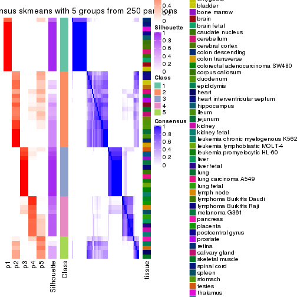
consensus_heatmap(res, k = 6)
Heatmaps for the membership of samples in all partitions to see how consistent they are:
membership_heatmap(res, k = 2)
membership_heatmap(res, k = 3)
membership_heatmap(res, k = 4)
membership_heatmap(res, k = 5)
membership_heatmap(res, k = 6)
As soon as we have had the classes for columns, we can look for signatures which are significantly different between classes which can be candidate marks for certain classes. Following are the heatmaps for signatures.
Signature heatmaps where rows are scaled:
get_signatures(res, k = 2)
get_signatures(res, k = 3)
get_signatures(res, k = 4)
get_signatures(res, k = 5)
get_signatures(res, k = 6)
Signature heatmaps where rows are not scaled:
get_signatures(res, k = 2, scale_rows = FALSE)
get_signatures(res, k = 3, scale_rows = FALSE)
get_signatures(res, k = 4, scale_rows = FALSE)
get_signatures(res, k = 5, scale_rows = FALSE)
get_signatures(res, k = 6, scale_rows = FALSE)
Compare the overlap of signatures from different k:
compare_signatures(res)
get_signature() returns a data frame invisibly. TO get the list of signatures, the function
call should be assigned to a variable explicitly. In following code, if plot argument is set
to FALSE, no heatmap is plotted while only the differential analysis is performed.
# code only for demonstration
tb = get_signature(res, k = ..., plot = FALSE)
An example of the output of tb is:
#> which_row fdr mean_1 mean_2 scaled_mean_1 scaled_mean_2 km
#> 1 38 0.042760348 8.373488 9.131774 -0.5533452 0.5164555 1
#> 2 40 0.018707592 7.106213 8.469186 -0.6173731 0.5762149 1
#> 3 55 0.019134737 10.221463 11.207825 -0.6159697 0.5749050 1
#> 4 59 0.006059896 5.921854 7.869574 -0.6899429 0.6439467 1
#> 5 60 0.018055526 8.928898 10.211722 -0.6204761 0.5791110 1
#> 6 98 0.009384629 15.714769 14.887706 0.6635654 -0.6193277 2
...
The columns in tb are:
which_row: row indices corresponding to the input matrix.fdr: FDR for the differential test. mean_x: The mean value in group x.scaled_mean_x: The mean value in group x after rows are scaled.km: Row groups if k-means clustering is applied to rows.UMAP plot which shows how samples are separated.
dimension_reduction(res, k = 2, method = "UMAP")
dimension_reduction(res, k = 3, method = "UMAP")
dimension_reduction(res, k = 4, method = "UMAP")
dimension_reduction(res, k = 5, method = "UMAP")
dimension_reduction(res, k = 6, method = "UMAP")
Following heatmap shows how subgroups are split when increasing k:
collect_classes(res)
Test correlation between subgroups and known annotations. If the known annotation is numeric, one-way ANOVA test is applied, and if the known annotation is discrete, chi-squared contingency table test is applied.
test_to_known_factors(res)
#> n tissue(p) k
#> SD:skmeans 54 0.398 2
#> SD:skmeans 52 0.372 3
#> SD:skmeans 54 0.355 4
#> SD:skmeans 39 0.405 5
#> SD:skmeans 41 0.389 6
If matrix rows can be associated to genes, consider to use GO_Enrichment(res,
...) to perform function enrichment for the signature genes.
The object with results only for a single top-value method and a single partition method can be extracted as:
res = res_list["SD", "pam"]
# you can also extract it by
# res = res_list["SD:pam"]
A summary of res and all the functions that can be applied to it:
res
#> A 'ConsensusPartition' object with k = 2, 3, 4, 5, 6.
#> On a matrix with 21452 rows and 54 columns.
#> Top rows (1000, 2000, 3000, 4000, 5000) are extracted by 'SD' method.
#> Subgroups are detected by 'pam' method.
#> Performed in total 1250 partitions by row resampling.
#> Best k for subgroups seems to be 3.
#>
#> Following methods can be applied to this 'ConsensusPartition' object:
#> [1] "cola_report" "collect_classes" "collect_plots"
#> [4] "collect_stats" "colnames" "compare_signatures"
#> [7] "consensus_heatmap" "dimension_reduction" "functional_enrichment"
#> [10] "get_anno_col" "get_anno" "get_classes"
#> [13] "get_consensus" "get_matrix" "get_membership"
#> [16] "get_param" "get_signatures" "get_stats"
#> [19] "is_best_k" "is_stable_k" "membership_heatmap"
#> [22] "ncol" "nrow" "plot_ecdf"
#> [25] "rownames" "select_partition_number" "show"
#> [28] "suggest_best_k" "test_to_known_factors"
collect_plots() function collects all the plots made from res for all k (number of partitions)
into one single page to provide an easy and fast comparison between different k.
collect_plots(res)
The plots are:
k and the heatmap of
predicted classes for each k.k.k.k.All the plots in panels can be made by individual functions and they are plotted later in this section.
select_partition_number() produces several plots showing different
statistics for choosing “optimized” k. There are following statistics:
k;k, the area increased is defined as \(A_k - A_{k-1}\).The detailed explanations of these statistics can be found in the cola vignette.
Generally speaking, lower PAC score, higher mean silhouette score or higher
concordance corresponds to better partition. Rand index and Jaccard index
measure how similar the current partition is compared to partition with k-1.
If they are too similar, we won't accept k is better than k-1.
select_partition_number(res)
The numeric values for all these statistics can be obtained by get_stats().
get_stats(res)
#> k 1-PAC mean_silhouette concordance area_increased Rand Jaccard
#> 2 2 1.000 0.968 0.988 0.4675 0.535 0.535
#> 3 3 0.915 0.941 0.975 0.3338 0.770 0.596
#> 4 4 0.765 0.801 0.885 0.1409 0.901 0.745
#> 5 5 0.772 0.677 0.821 0.0937 0.877 0.607
#> 6 6 0.775 0.669 0.833 0.0297 0.857 0.504
suggest_best_k() suggests the best \(k\) based on these statistics. The rules are as follows:
NA.suggest_best_k(res)
#> [1] 3
#> attr(,"optional")
#> [1] 2
There is also optional best \(k\) = 2 that is worth to check.
Following shows the table of the partitions (You need to click the show/hide
code output link to see it). The membership matrix (columns with name p*)
is inferred by
clue::cl_consensus()
function with the SE method. Basically the value in the membership matrix
represents the probability to belong to a certain group. The finall class
label for an item is determined with the group with highest probability it
belongs to.
In get_classes() function, the entropy is calculated from the membership
matrix and the silhouette score is calculated from the consensus matrix.
cbind(get_classes(res, k = 2), get_membership(res, k = 2))
#> class entropy silhouette p1 p2
#> GSM28710 2 0.0000 0.987 0.000 1.000
#> GSM28711 2 0.0000 0.987 0.000 1.000
#> GSM28712 2 0.0000 0.987 0.000 1.000
#> GSM11222 2 0.0000 0.987 0.000 1.000
#> GSM28720 1 0.0000 0.988 1.000 0.000
#> GSM11217 1 0.0000 0.988 1.000 0.000
#> GSM28723 1 0.0000 0.988 1.000 0.000
#> GSM11241 1 0.0000 0.988 1.000 0.000
#> GSM28703 1 0.0000 0.988 1.000 0.000
#> GSM11227 1 0.0000 0.988 1.000 0.000
#> GSM28706 1 0.0000 0.988 1.000 0.000
#> GSM11229 1 0.0000 0.988 1.000 0.000
#> GSM11235 1 0.0000 0.988 1.000 0.000
#> GSM28707 1 0.0000 0.988 1.000 0.000
#> GSM11240 2 0.0000 0.987 0.000 1.000
#> GSM28714 2 0.0000 0.987 0.000 1.000
#> GSM11216 1 0.0000 0.988 1.000 0.000
#> GSM28715 2 0.0000 0.987 0.000 1.000
#> GSM11234 2 0.0000 0.987 0.000 1.000
#> GSM28699 2 0.0000 0.987 0.000 1.000
#> GSM11233 2 0.0000 0.987 0.000 1.000
#> GSM28718 2 0.0000 0.987 0.000 1.000
#> GSM11231 2 0.0000 0.987 0.000 1.000
#> GSM11237 2 0.0000 0.987 0.000 1.000
#> GSM11228 2 0.0000 0.987 0.000 1.000
#> GSM28697 2 0.0000 0.987 0.000 1.000
#> GSM28698 1 0.0000 0.988 1.000 0.000
#> GSM11238 1 0.0376 0.985 0.996 0.004
#> GSM11242 1 0.7056 0.757 0.808 0.192
#> GSM28719 2 0.0000 0.987 0.000 1.000
#> GSM28708 2 0.0000 0.987 0.000 1.000
#> GSM28722 2 0.0000 0.987 0.000 1.000
#> GSM11232 2 0.0000 0.987 0.000 1.000
#> GSM28709 2 0.9896 0.193 0.440 0.560
#> GSM11226 2 0.0000 0.987 0.000 1.000
#> GSM11239 1 0.0000 0.988 1.000 0.000
#> GSM11225 1 0.0000 0.988 1.000 0.000
#> GSM11220 1 0.0000 0.988 1.000 0.000
#> GSM28701 2 0.0000 0.987 0.000 1.000
#> GSM28721 2 0.0000 0.987 0.000 1.000
#> GSM28713 2 0.0000 0.987 0.000 1.000
#> GSM28716 1 0.0672 0.982 0.992 0.008
#> GSM11221 2 0.0000 0.987 0.000 1.000
#> GSM28717 2 0.0000 0.987 0.000 1.000
#> GSM11223 1 0.0000 0.988 1.000 0.000
#> GSM11218 2 0.0000 0.987 0.000 1.000
#> GSM11219 2 0.0000 0.987 0.000 1.000
#> GSM11236 2 0.0000 0.987 0.000 1.000
#> GSM28702 2 0.0000 0.987 0.000 1.000
#> GSM28705 2 0.0000 0.987 0.000 1.000
#> GSM11230 2 0.0000 0.987 0.000 1.000
#> GSM28704 2 0.0000 0.987 0.000 1.000
#> GSM28700 2 0.0000 0.987 0.000 1.000
#> GSM11224 2 0.0000 0.987 0.000 1.000
cbind(get_classes(res, k = 3), get_membership(res, k = 3))
#> class entropy silhouette p1 p2 p3
#> GSM28710 2 0.0000 0.973 0.000 1.000 0.000
#> GSM28711 2 0.0000 0.973 0.000 1.000 0.000
#> GSM28712 2 0.0000 0.973 0.000 1.000 0.000
#> GSM11222 3 0.0000 0.938 0.000 0.000 1.000
#> GSM28720 1 0.0000 0.993 1.000 0.000 0.000
#> GSM11217 1 0.0000 0.993 1.000 0.000 0.000
#> GSM28723 1 0.0000 0.993 1.000 0.000 0.000
#> GSM11241 1 0.0000 0.993 1.000 0.000 0.000
#> GSM28703 1 0.0000 0.993 1.000 0.000 0.000
#> GSM11227 1 0.0000 0.993 1.000 0.000 0.000
#> GSM28706 1 0.0000 0.993 1.000 0.000 0.000
#> GSM11229 1 0.0000 0.993 1.000 0.000 0.000
#> GSM11235 1 0.0000 0.993 1.000 0.000 0.000
#> GSM28707 1 0.0000 0.993 1.000 0.000 0.000
#> GSM11240 2 0.0000 0.973 0.000 1.000 0.000
#> GSM28714 2 0.0000 0.973 0.000 1.000 0.000
#> GSM11216 3 0.0000 0.938 0.000 0.000 1.000
#> GSM28715 2 0.0000 0.973 0.000 1.000 0.000
#> GSM11234 2 0.0000 0.973 0.000 1.000 0.000
#> GSM28699 2 0.0000 0.973 0.000 1.000 0.000
#> GSM11233 2 0.0000 0.973 0.000 1.000 0.000
#> GSM28718 2 0.0000 0.973 0.000 1.000 0.000
#> GSM11231 2 0.0000 0.973 0.000 1.000 0.000
#> GSM11237 2 0.0000 0.973 0.000 1.000 0.000
#> GSM11228 2 0.5733 0.494 0.000 0.676 0.324
#> GSM28697 2 0.0000 0.973 0.000 1.000 0.000
#> GSM28698 3 0.0000 0.938 0.000 0.000 1.000
#> GSM11238 3 0.0000 0.938 0.000 0.000 1.000
#> GSM11242 3 0.0000 0.938 0.000 0.000 1.000
#> GSM28719 2 0.0747 0.958 0.000 0.984 0.016
#> GSM28708 3 0.4291 0.809 0.000 0.180 0.820
#> GSM28722 2 0.0000 0.973 0.000 1.000 0.000
#> GSM11232 2 0.0000 0.973 0.000 1.000 0.000
#> GSM28709 3 0.0000 0.938 0.000 0.000 1.000
#> GSM11226 3 0.3816 0.845 0.000 0.148 0.852
#> GSM11239 3 0.0000 0.938 0.000 0.000 1.000
#> GSM11225 3 0.0000 0.938 0.000 0.000 1.000
#> GSM11220 3 0.0000 0.938 0.000 0.000 1.000
#> GSM28701 2 0.0000 0.973 0.000 1.000 0.000
#> GSM28721 3 0.3816 0.845 0.000 0.148 0.852
#> GSM28713 2 0.0000 0.973 0.000 1.000 0.000
#> GSM28716 1 0.1964 0.923 0.944 0.056 0.000
#> GSM11221 2 0.0000 0.973 0.000 1.000 0.000
#> GSM28717 2 0.0000 0.973 0.000 1.000 0.000
#> GSM11223 1 0.0000 0.993 1.000 0.000 0.000
#> GSM11218 3 0.3816 0.845 0.000 0.148 0.852
#> GSM11219 2 0.0000 0.973 0.000 1.000 0.000
#> GSM11236 2 0.0000 0.973 0.000 1.000 0.000
#> GSM28702 3 0.0000 0.938 0.000 0.000 1.000
#> GSM28705 2 0.5760 0.485 0.000 0.672 0.328
#> GSM11230 2 0.0000 0.973 0.000 1.000 0.000
#> GSM28704 2 0.0000 0.973 0.000 1.000 0.000
#> GSM28700 2 0.0000 0.973 0.000 1.000 0.000
#> GSM11224 2 0.0000 0.973 0.000 1.000 0.000
cbind(get_classes(res, k = 4), get_membership(res, k = 4))
#> class entropy silhouette p1 p2 p3 p4
#> GSM28710 2 0.0000 0.823 0.000 1.000 0.000 0.000
#> GSM28711 2 0.4790 0.550 0.000 0.620 0.000 0.380
#> GSM28712 2 0.0000 0.823 0.000 1.000 0.000 0.000
#> GSM11222 4 0.4999 0.053 0.000 0.000 0.492 0.508
#> GSM28720 1 0.0000 0.966 1.000 0.000 0.000 0.000
#> GSM11217 1 0.0000 0.966 1.000 0.000 0.000 0.000
#> GSM28723 1 0.0000 0.966 1.000 0.000 0.000 0.000
#> GSM11241 1 0.0000 0.966 1.000 0.000 0.000 0.000
#> GSM28703 1 0.0000 0.966 1.000 0.000 0.000 0.000
#> GSM11227 1 0.0000 0.966 1.000 0.000 0.000 0.000
#> GSM28706 1 0.0000 0.966 1.000 0.000 0.000 0.000
#> GSM11229 1 0.0000 0.966 1.000 0.000 0.000 0.000
#> GSM11235 1 0.0000 0.966 1.000 0.000 0.000 0.000
#> GSM28707 1 0.0000 0.966 1.000 0.000 0.000 0.000
#> GSM11240 2 0.4304 0.723 0.000 0.716 0.000 0.284
#> GSM28714 2 0.4304 0.723 0.000 0.716 0.000 0.284
#> GSM11216 3 0.0000 1.000 0.000 0.000 1.000 0.000
#> GSM28715 2 0.4304 0.723 0.000 0.716 0.000 0.284
#> GSM11234 2 0.0000 0.823 0.000 1.000 0.000 0.000
#> GSM28699 2 0.0000 0.823 0.000 1.000 0.000 0.000
#> GSM11233 2 0.4304 0.723 0.000 0.716 0.000 0.284
#> GSM28718 2 0.4304 0.723 0.000 0.716 0.000 0.284
#> GSM11231 2 0.4304 0.723 0.000 0.716 0.000 0.284
#> GSM11237 2 0.4304 0.723 0.000 0.716 0.000 0.284
#> GSM11228 4 0.4304 0.773 0.000 0.284 0.000 0.716
#> GSM28697 2 0.4103 0.425 0.000 0.744 0.000 0.256
#> GSM28698 3 0.0000 1.000 0.000 0.000 1.000 0.000
#> GSM11238 3 0.0000 1.000 0.000 0.000 1.000 0.000
#> GSM11242 3 0.0000 1.000 0.000 0.000 1.000 0.000
#> GSM28719 4 0.4992 0.449 0.000 0.476 0.000 0.524
#> GSM28708 4 0.1022 0.566 0.000 0.000 0.032 0.968
#> GSM28722 2 0.0000 0.823 0.000 1.000 0.000 0.000
#> GSM11232 2 0.0817 0.803 0.000 0.976 0.000 0.024
#> GSM28709 3 0.0000 1.000 0.000 0.000 1.000 0.000
#> GSM11226 4 0.5025 0.790 0.000 0.252 0.032 0.716
#> GSM11239 3 0.0000 1.000 0.000 0.000 1.000 0.000
#> GSM11225 3 0.0000 1.000 0.000 0.000 1.000 0.000
#> GSM11220 3 0.0000 1.000 0.000 0.000 1.000 0.000
#> GSM28701 2 0.0000 0.823 0.000 1.000 0.000 0.000
#> GSM28721 4 0.5025 0.790 0.000 0.252 0.032 0.716
#> GSM28713 2 0.0000 0.823 0.000 1.000 0.000 0.000
#> GSM28716 1 0.4304 0.503 0.716 0.284 0.000 0.000
#> GSM11221 2 0.0000 0.823 0.000 1.000 0.000 0.000
#> GSM28717 2 0.0000 0.823 0.000 1.000 0.000 0.000
#> GSM11223 1 0.0000 0.966 1.000 0.000 0.000 0.000
#> GSM11218 4 0.5025 0.790 0.000 0.252 0.032 0.716
#> GSM11219 2 0.0000 0.823 0.000 1.000 0.000 0.000
#> GSM11236 2 0.4927 0.376 0.000 0.712 0.024 0.264
#> GSM28702 4 0.4304 0.487 0.000 0.000 0.284 0.716
#> GSM28705 4 0.4304 0.773 0.000 0.284 0.000 0.716
#> GSM11230 2 0.4304 0.723 0.000 0.716 0.000 0.284
#> GSM28704 2 0.0000 0.823 0.000 1.000 0.000 0.000
#> GSM28700 2 0.0000 0.823 0.000 1.000 0.000 0.000
#> GSM11224 2 0.0000 0.823 0.000 1.000 0.000 0.000
cbind(get_classes(res, k = 5), get_membership(res, k = 5))
#> class entropy silhouette p1 p2 p3 p4 p5
#> GSM28710 2 0.0162 0.5681 0.000 0.996 0.000 0.000 0.004
#> GSM28711 4 0.6569 -0.0932 0.000 0.304 0.000 0.464 0.232
#> GSM28712 2 0.0000 0.5683 0.000 1.000 0.000 0.000 0.000
#> GSM11222 4 0.3177 0.6096 0.000 0.000 0.208 0.792 0.000
#> GSM28720 1 0.0000 0.9637 1.000 0.000 0.000 0.000 0.000
#> GSM11217 1 0.0000 0.9637 1.000 0.000 0.000 0.000 0.000
#> GSM28723 1 0.0000 0.9637 1.000 0.000 0.000 0.000 0.000
#> GSM11241 1 0.0000 0.9637 1.000 0.000 0.000 0.000 0.000
#> GSM28703 1 0.0000 0.9637 1.000 0.000 0.000 0.000 0.000
#> GSM11227 1 0.0000 0.9637 1.000 0.000 0.000 0.000 0.000
#> GSM28706 1 0.0000 0.9637 1.000 0.000 0.000 0.000 0.000
#> GSM11229 1 0.0000 0.9637 1.000 0.000 0.000 0.000 0.000
#> GSM11235 1 0.0000 0.9637 1.000 0.000 0.000 0.000 0.000
#> GSM28707 1 0.0000 0.9637 1.000 0.000 0.000 0.000 0.000
#> GSM11240 5 0.4294 0.7820 0.000 0.468 0.000 0.000 0.532
#> GSM28714 5 0.4291 0.7827 0.000 0.464 0.000 0.000 0.536
#> GSM11216 3 0.0000 1.0000 0.000 0.000 1.000 0.000 0.000
#> GSM28715 5 0.4294 0.7820 0.000 0.468 0.000 0.000 0.532
#> GSM11234 2 0.0000 0.5683 0.000 1.000 0.000 0.000 0.000
#> GSM28699 2 0.3932 0.2977 0.000 0.672 0.000 0.000 0.328
#> GSM11233 5 0.4101 0.0305 0.000 0.372 0.000 0.000 0.628
#> GSM28718 5 0.4291 0.7827 0.000 0.464 0.000 0.000 0.536
#> GSM11231 2 0.4300 -0.3167 0.000 0.524 0.000 0.000 0.476
#> GSM11237 5 0.4262 0.7389 0.000 0.440 0.000 0.000 0.560
#> GSM11228 4 0.5355 0.5739 0.000 0.220 0.000 0.660 0.120
#> GSM28697 2 0.4805 0.3494 0.000 0.728 0.000 0.144 0.128
#> GSM28698 3 0.0000 1.0000 0.000 0.000 1.000 0.000 0.000
#> GSM11238 3 0.0000 1.0000 0.000 0.000 1.000 0.000 0.000
#> GSM11242 3 0.0000 1.0000 0.000 0.000 1.000 0.000 0.000
#> GSM28719 4 0.6109 0.4720 0.000 0.320 0.000 0.532 0.148
#> GSM28708 4 0.2471 0.7391 0.000 0.000 0.000 0.864 0.136
#> GSM28722 2 0.3242 0.4509 0.000 0.784 0.000 0.000 0.216
#> GSM11232 2 0.4192 0.4140 0.000 0.736 0.000 0.032 0.232
#> GSM28709 3 0.0000 1.0000 0.000 0.000 1.000 0.000 0.000
#> GSM11226 4 0.0000 0.7711 0.000 0.000 0.000 1.000 0.000
#> GSM11239 3 0.0000 1.0000 0.000 0.000 1.000 0.000 0.000
#> GSM11225 3 0.0000 1.0000 0.000 0.000 1.000 0.000 0.000
#> GSM11220 3 0.0000 1.0000 0.000 0.000 1.000 0.000 0.000
#> GSM28701 2 0.3586 0.4356 0.000 0.736 0.000 0.000 0.264
#> GSM28721 4 0.0000 0.7711 0.000 0.000 0.000 1.000 0.000
#> GSM28713 2 0.0000 0.5683 0.000 1.000 0.000 0.000 0.000
#> GSM28716 1 0.4084 0.4898 0.668 0.328 0.000 0.000 0.004
#> GSM11221 2 0.3274 0.4465 0.000 0.780 0.000 0.000 0.220
#> GSM28717 2 0.3949 0.2945 0.000 0.668 0.000 0.000 0.332
#> GSM11223 1 0.0000 0.9637 1.000 0.000 0.000 0.000 0.000
#> GSM11218 4 0.0000 0.7711 0.000 0.000 0.000 1.000 0.000
#> GSM11219 2 0.3366 0.4217 0.000 0.768 0.000 0.000 0.232
#> GSM11236 4 0.5845 0.1271 0.000 0.352 0.000 0.540 0.108
#> GSM28702 4 0.0000 0.7711 0.000 0.000 0.000 1.000 0.000
#> GSM28705 4 0.0000 0.7711 0.000 0.000 0.000 1.000 0.000
#> GSM11230 5 0.4294 0.7820 0.000 0.468 0.000 0.000 0.532
#> GSM28704 2 0.3274 0.4465 0.000 0.780 0.000 0.000 0.220
#> GSM28700 2 0.0162 0.5681 0.000 0.996 0.000 0.000 0.004
#> GSM11224 2 0.3274 0.4465 0.000 0.780 0.000 0.000 0.220
cbind(get_classes(res, k = 6), get_membership(res, k = 6))
#> class entropy silhouette p1 p2 p3 p4 p5 p6
#> GSM28710 2 0.5951 0.4292 0.000 0.456 0.000 0.000 0.268 0.276
#> GSM28711 2 0.5586 0.1286 0.000 0.544 0.000 0.260 0.000 0.196
#> GSM28712 2 0.5951 0.4292 0.000 0.456 0.000 0.000 0.268 0.276
#> GSM11222 6 0.5711 0.6693 0.000 0.000 0.208 0.276 0.000 0.516
#> GSM28720 1 0.0000 0.9608 1.000 0.000 0.000 0.000 0.000 0.000
#> GSM11217 1 0.0000 0.9608 1.000 0.000 0.000 0.000 0.000 0.000
#> GSM28723 1 0.0000 0.9608 1.000 0.000 0.000 0.000 0.000 0.000
#> GSM11241 1 0.0000 0.9608 1.000 0.000 0.000 0.000 0.000 0.000
#> GSM28703 1 0.0000 0.9608 1.000 0.000 0.000 0.000 0.000 0.000
#> GSM11227 1 0.0000 0.9608 1.000 0.000 0.000 0.000 0.000 0.000
#> GSM28706 1 0.0000 0.9608 1.000 0.000 0.000 0.000 0.000 0.000
#> GSM11229 1 0.0000 0.9608 1.000 0.000 0.000 0.000 0.000 0.000
#> GSM11235 1 0.0000 0.9608 1.000 0.000 0.000 0.000 0.000 0.000
#> GSM28707 1 0.0000 0.9608 1.000 0.000 0.000 0.000 0.000 0.000
#> GSM11240 2 0.0000 0.5499 0.000 1.000 0.000 0.000 0.000 0.000
#> GSM28714 2 0.0000 0.5499 0.000 1.000 0.000 0.000 0.000 0.000
#> GSM11216 3 0.4332 0.7881 0.000 0.000 0.672 0.052 0.276 0.000
#> GSM28715 2 0.0000 0.5499 0.000 1.000 0.000 0.000 0.000 0.000
#> GSM11234 2 0.5951 0.4292 0.000 0.456 0.000 0.000 0.268 0.276
#> GSM28699 5 0.3288 0.6598 0.000 0.000 0.000 0.000 0.724 0.276
#> GSM11233 5 0.3409 0.3584 0.000 0.300 0.000 0.000 0.700 0.000
#> GSM28718 2 0.0000 0.5499 0.000 1.000 0.000 0.000 0.000 0.000
#> GSM11231 2 0.4086 -0.1789 0.000 0.528 0.000 0.464 0.008 0.000
#> GSM11237 2 0.2100 0.4867 0.000 0.884 0.000 0.112 0.004 0.000
#> GSM11228 4 0.3607 0.6157 0.000 0.000 0.000 0.652 0.000 0.348
#> GSM28697 4 0.6543 0.2346 0.000 0.080 0.000 0.472 0.116 0.332
#> GSM28698 3 0.0622 0.8737 0.000 0.000 0.980 0.008 0.012 0.000
#> GSM11238 3 0.0000 0.8757 0.000 0.000 1.000 0.000 0.000 0.000
#> GSM11242 3 0.0000 0.8757 0.000 0.000 1.000 0.000 0.000 0.000
#> GSM28719 4 0.3098 0.6433 0.000 0.024 0.000 0.812 0.000 0.164
#> GSM28708 4 0.1141 0.3823 0.000 0.000 0.000 0.948 0.000 0.052
#> GSM28722 2 0.4358 0.6129 0.000 0.680 0.000 0.012 0.032 0.276
#> GSM11232 2 0.5777 0.5608 0.000 0.556 0.000 0.124 0.024 0.296
#> GSM28709 3 0.4332 0.7881 0.000 0.000 0.672 0.052 0.276 0.000
#> GSM11226 6 0.3288 0.9377 0.000 0.000 0.000 0.276 0.000 0.724
#> GSM11239 3 0.0000 0.8757 0.000 0.000 1.000 0.000 0.000 0.000
#> GSM11225 3 0.0000 0.8757 0.000 0.000 1.000 0.000 0.000 0.000
#> GSM11220 3 0.4332 0.7881 0.000 0.000 0.672 0.052 0.276 0.000
#> GSM28701 2 0.5341 0.5616 0.000 0.588 0.000 0.132 0.004 0.276
#> GSM28721 6 0.3288 0.9377 0.000 0.000 0.000 0.276 0.000 0.724
#> GSM28713 2 0.5951 0.4292 0.000 0.456 0.000 0.000 0.268 0.276
#> GSM28716 1 0.4388 0.3807 0.668 0.000 0.000 0.000 0.056 0.276
#> GSM11221 2 0.3950 0.6164 0.000 0.696 0.000 0.000 0.028 0.276
#> GSM28717 5 0.3288 0.6598 0.000 0.000 0.000 0.000 0.724 0.276
#> GSM11223 1 0.0000 0.9608 1.000 0.000 0.000 0.000 0.000 0.000
#> GSM11218 6 0.3288 0.9377 0.000 0.000 0.000 0.276 0.000 0.724
#> GSM11219 2 0.3876 0.6169 0.000 0.700 0.000 0.000 0.024 0.276
#> GSM11236 2 0.5839 -0.0169 0.000 0.408 0.000 0.404 0.000 0.188
#> GSM28702 6 0.3288 0.9377 0.000 0.000 0.000 0.276 0.000 0.724
#> GSM28705 6 0.3288 0.9377 0.000 0.000 0.000 0.276 0.000 0.724
#> GSM11230 2 0.0000 0.5499 0.000 1.000 0.000 0.000 0.000 0.000
#> GSM28704 2 0.3950 0.6164 0.000 0.696 0.000 0.000 0.028 0.276
#> GSM28700 2 0.5951 0.4292 0.000 0.456 0.000 0.000 0.268 0.276
#> GSM11224 2 0.3950 0.6164 0.000 0.696 0.000 0.000 0.028 0.276
Heatmaps for the consensus matrix. It visualizes the probability of two samples to be in a same group.
consensus_heatmap(res, k = 2)
consensus_heatmap(res, k = 3)
consensus_heatmap(res, k = 4)
consensus_heatmap(res, k = 5)

consensus_heatmap(res, k = 6)
Heatmaps for the membership of samples in all partitions to see how consistent they are:
membership_heatmap(res, k = 2)
membership_heatmap(res, k = 3)
membership_heatmap(res, k = 4)
membership_heatmap(res, k = 5)
membership_heatmap(res, k = 6)
As soon as we have had the classes for columns, we can look for signatures which are significantly different between classes which can be candidate marks for certain classes. Following are the heatmaps for signatures.
Signature heatmaps where rows are scaled:
get_signatures(res, k = 2)
get_signatures(res, k = 3)
get_signatures(res, k = 4)
get_signatures(res, k = 5)
get_signatures(res, k = 6)
Signature heatmaps where rows are not scaled:
get_signatures(res, k = 2, scale_rows = FALSE)
get_signatures(res, k = 3, scale_rows = FALSE)
get_signatures(res, k = 4, scale_rows = FALSE)

get_signatures(res, k = 5, scale_rows = FALSE)
get_signatures(res, k = 6, scale_rows = FALSE)

Compare the overlap of signatures from different k:
compare_signatures(res)
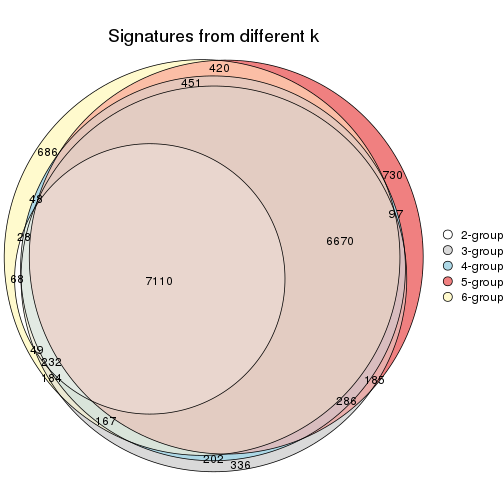
get_signature() returns a data frame invisibly. TO get the list of signatures, the function
call should be assigned to a variable explicitly. In following code, if plot argument is set
to FALSE, no heatmap is plotted while only the differential analysis is performed.
# code only for demonstration
tb = get_signature(res, k = ..., plot = FALSE)
An example of the output of tb is:
#> which_row fdr mean_1 mean_2 scaled_mean_1 scaled_mean_2 km
#> 1 38 0.042760348 8.373488 9.131774 -0.5533452 0.5164555 1
#> 2 40 0.018707592 7.106213 8.469186 -0.6173731 0.5762149 1
#> 3 55 0.019134737 10.221463 11.207825 -0.6159697 0.5749050 1
#> 4 59 0.006059896 5.921854 7.869574 -0.6899429 0.6439467 1
#> 5 60 0.018055526 8.928898 10.211722 -0.6204761 0.5791110 1
#> 6 98 0.009384629 15.714769 14.887706 0.6635654 -0.6193277 2
...
The columns in tb are:
which_row: row indices corresponding to the input matrix.fdr: FDR for the differential test. mean_x: The mean value in group x.scaled_mean_x: The mean value in group x after rows are scaled.km: Row groups if k-means clustering is applied to rows.UMAP plot which shows how samples are separated.
dimension_reduction(res, k = 2, method = "UMAP")
dimension_reduction(res, k = 3, method = "UMAP")
dimension_reduction(res, k = 4, method = "UMAP")
dimension_reduction(res, k = 5, method = "UMAP")
dimension_reduction(res, k = 6, method = "UMAP")
Following heatmap shows how subgroups are split when increasing k:
collect_classes(res)
Test correlation between subgroups and known annotations. If the known annotation is numeric, one-way ANOVA test is applied, and if the known annotation is discrete, chi-squared contingency table test is applied.
test_to_known_factors(res)
#> n tissue(p) k
#> SD:pam 53 0.397 2
#> SD:pam 52 0.372 3
#> SD:pam 49 0.348 4
#> SD:pam 38 0.394 5
#> SD:pam 41 0.389 6
If matrix rows can be associated to genes, consider to use GO_Enrichment(res,
...) to perform function enrichment for the signature genes.
The object with results only for a single top-value method and a single partition method can be extracted as:
res = res_list["SD", "mclust"]
# you can also extract it by
# res = res_list["SD:mclust"]
A summary of res and all the functions that can be applied to it:
res
#> A 'ConsensusPartition' object with k = 2, 3, 4, 5, 6.
#> On a matrix with 21452 rows and 54 columns.
#> Top rows (1000, 2000, 3000, 4000, 5000) are extracted by 'SD' method.
#> Subgroups are detected by 'mclust' method.
#> Performed in total 1250 partitions by row resampling.
#> Best k for subgroups seems to be 3.
#>
#> Following methods can be applied to this 'ConsensusPartition' object:
#> [1] "cola_report" "collect_classes" "collect_plots"
#> [4] "collect_stats" "colnames" "compare_signatures"
#> [7] "consensus_heatmap" "dimension_reduction" "functional_enrichment"
#> [10] "get_anno_col" "get_anno" "get_classes"
#> [13] "get_consensus" "get_matrix" "get_membership"
#> [16] "get_param" "get_signatures" "get_stats"
#> [19] "is_best_k" "is_stable_k" "membership_heatmap"
#> [22] "ncol" "nrow" "plot_ecdf"
#> [25] "rownames" "select_partition_number" "show"
#> [28] "suggest_best_k" "test_to_known_factors"
collect_plots() function collects all the plots made from res for all k (number of partitions)
into one single page to provide an easy and fast comparison between different k.
collect_plots(res)
The plots are:
k and the heatmap of
predicted classes for each k.k.k.k.All the plots in panels can be made by individual functions and they are plotted later in this section.
select_partition_number() produces several plots showing different
statistics for choosing “optimized” k. There are following statistics:
k;k, the area increased is defined as \(A_k - A_{k-1}\).The detailed explanations of these statistics can be found in the cola vignette.
Generally speaking, lower PAC score, higher mean silhouette score or higher
concordance corresponds to better partition. Rand index and Jaccard index
measure how similar the current partition is compared to partition with k-1.
If they are too similar, we won't accept k is better than k-1.
select_partition_number(res)
The numeric values for all these statistics can be obtained by get_stats().
get_stats(res)
#> k 1-PAC mean_silhouette concordance area_increased Rand Jaccard
#> 2 2 0.476 0.690 0.847 0.4180 0.648 0.648
#> 3 3 1.000 0.981 0.990 0.2795 0.778 0.670
#> 4 4 0.767 0.877 0.915 0.3247 0.807 0.593
#> 5 5 0.728 0.741 0.859 0.1006 0.903 0.661
#> 6 6 0.783 0.790 0.864 0.0289 0.955 0.796
suggest_best_k() suggests the best \(k\) based on these statistics. The rules are as follows:
NA.suggest_best_k(res)
#> [1] 3
Following shows the table of the partitions (You need to click the show/hide
code output link to see it). The membership matrix (columns with name p*)
is inferred by
clue::cl_consensus()
function with the SE method. Basically the value in the membership matrix
represents the probability to belong to a certain group. The finall class
label for an item is determined with the group with highest probability it
belongs to.
In get_classes() function, the entropy is calculated from the membership
matrix and the silhouette score is calculated from the consensus matrix.
cbind(get_classes(res, k = 2), get_membership(res, k = 2))
#> class entropy silhouette p1 p2
#> GSM28710 2 0.9988 0.4146 0.480 0.520
#> GSM28711 2 0.0938 0.7633 0.012 0.988
#> GSM28712 2 0.9988 0.4146 0.480 0.520
#> GSM11222 2 0.0000 0.7664 0.000 1.000
#> GSM28720 1 0.0000 0.9517 1.000 0.000
#> GSM11217 1 0.0000 0.9517 1.000 0.000
#> GSM28723 1 0.0000 0.9517 1.000 0.000
#> GSM11241 1 0.0000 0.9517 1.000 0.000
#> GSM28703 1 0.0000 0.9517 1.000 0.000
#> GSM11227 1 0.0000 0.9517 1.000 0.000
#> GSM28706 1 0.0000 0.9517 1.000 0.000
#> GSM11229 1 0.0000 0.9517 1.000 0.000
#> GSM11235 1 0.0000 0.9517 1.000 0.000
#> GSM28707 1 0.0000 0.9517 1.000 0.000
#> GSM11240 2 0.9988 0.4146 0.480 0.520
#> GSM28714 2 0.9988 0.4146 0.480 0.520
#> GSM11216 2 0.0000 0.7664 0.000 1.000
#> GSM28715 2 0.9983 0.4207 0.476 0.524
#> GSM11234 2 0.5178 0.7257 0.116 0.884
#> GSM28699 2 0.9988 0.4146 0.480 0.520
#> GSM11233 2 0.9988 0.4146 0.480 0.520
#> GSM28718 2 0.9988 0.4146 0.480 0.520
#> GSM11231 2 0.9983 0.4207 0.476 0.524
#> GSM11237 2 0.9988 0.4146 0.480 0.520
#> GSM11228 2 0.0000 0.7664 0.000 1.000
#> GSM28697 2 0.0000 0.7664 0.000 1.000
#> GSM28698 2 0.0000 0.7664 0.000 1.000
#> GSM11238 2 0.0000 0.7664 0.000 1.000
#> GSM11242 2 0.0000 0.7664 0.000 1.000
#> GSM28719 2 0.0000 0.7664 0.000 1.000
#> GSM28708 2 0.0000 0.7664 0.000 1.000
#> GSM28722 2 0.0000 0.7664 0.000 1.000
#> GSM11232 2 0.0000 0.7664 0.000 1.000
#> GSM28709 2 0.0000 0.7664 0.000 1.000
#> GSM11226 2 0.0000 0.7664 0.000 1.000
#> GSM11239 2 0.0000 0.7664 0.000 1.000
#> GSM11225 2 0.0000 0.7664 0.000 1.000
#> GSM11220 2 0.0000 0.7664 0.000 1.000
#> GSM28701 2 0.4022 0.7391 0.080 0.920
#> GSM28721 2 0.0000 0.7664 0.000 1.000
#> GSM28713 2 0.7815 0.6596 0.232 0.768
#> GSM28716 1 0.9491 0.0412 0.632 0.368
#> GSM11221 2 0.9922 0.4563 0.448 0.552
#> GSM28717 2 0.9988 0.4146 0.480 0.520
#> GSM11223 1 0.0000 0.9517 1.000 0.000
#> GSM11218 2 0.0000 0.7664 0.000 1.000
#> GSM11219 2 0.9988 0.4146 0.480 0.520
#> GSM11236 2 0.0000 0.7664 0.000 1.000
#> GSM28702 2 0.0000 0.7664 0.000 1.000
#> GSM28705 2 0.0000 0.7664 0.000 1.000
#> GSM11230 2 0.9977 0.4262 0.472 0.528
#> GSM28704 2 0.6247 0.7060 0.156 0.844
#> GSM28700 2 0.9393 0.5554 0.356 0.644
#> GSM11224 2 0.8608 0.6207 0.284 0.716
cbind(get_classes(res, k = 3), get_membership(res, k = 3))
#> class entropy silhouette p1 p2 p3
#> GSM28710 2 0.0000 0.984 0.000 1.000 0.000
#> GSM28711 2 0.0237 0.984 0.000 0.996 0.004
#> GSM28712 2 0.0000 0.984 0.000 1.000 0.000
#> GSM11222 2 0.4002 0.819 0.000 0.840 0.160
#> GSM28720 1 0.0000 1.000 1.000 0.000 0.000
#> GSM11217 1 0.0000 1.000 1.000 0.000 0.000
#> GSM28723 1 0.0000 1.000 1.000 0.000 0.000
#> GSM11241 1 0.0000 1.000 1.000 0.000 0.000
#> GSM28703 1 0.0000 1.000 1.000 0.000 0.000
#> GSM11227 1 0.0000 1.000 1.000 0.000 0.000
#> GSM28706 1 0.0000 1.000 1.000 0.000 0.000
#> GSM11229 1 0.0000 1.000 1.000 0.000 0.000
#> GSM11235 1 0.0000 1.000 1.000 0.000 0.000
#> GSM28707 1 0.0000 1.000 1.000 0.000 0.000
#> GSM11240 2 0.0000 0.984 0.000 1.000 0.000
#> GSM28714 2 0.0000 0.984 0.000 1.000 0.000
#> GSM11216 3 0.0000 1.000 0.000 0.000 1.000
#> GSM28715 2 0.0000 0.984 0.000 1.000 0.000
#> GSM11234 2 0.0000 0.984 0.000 1.000 0.000
#> GSM28699 2 0.0000 0.984 0.000 1.000 0.000
#> GSM11233 2 0.0000 0.984 0.000 1.000 0.000
#> GSM28718 2 0.0000 0.984 0.000 1.000 0.000
#> GSM11231 2 0.0000 0.984 0.000 1.000 0.000
#> GSM11237 2 0.0000 0.984 0.000 1.000 0.000
#> GSM11228 2 0.0237 0.984 0.000 0.996 0.004
#> GSM28697 2 0.0237 0.984 0.000 0.996 0.004
#> GSM28698 3 0.0000 1.000 0.000 0.000 1.000
#> GSM11238 3 0.0000 1.000 0.000 0.000 1.000
#> GSM11242 3 0.0000 1.000 0.000 0.000 1.000
#> GSM28719 2 0.0237 0.984 0.000 0.996 0.004
#> GSM28708 2 0.0237 0.984 0.000 0.996 0.004
#> GSM28722 2 0.0237 0.984 0.000 0.996 0.004
#> GSM11232 2 0.0237 0.984 0.000 0.996 0.004
#> GSM28709 3 0.0000 1.000 0.000 0.000 1.000
#> GSM11226 2 0.0237 0.984 0.000 0.996 0.004
#> GSM11239 3 0.0000 1.000 0.000 0.000 1.000
#> GSM11225 3 0.0000 1.000 0.000 0.000 1.000
#> GSM11220 3 0.0000 1.000 0.000 0.000 1.000
#> GSM28701 2 0.0237 0.984 0.000 0.996 0.004
#> GSM28721 2 0.0237 0.984 0.000 0.996 0.004
#> GSM28713 2 0.0000 0.984 0.000 1.000 0.000
#> GSM28716 2 0.3816 0.826 0.148 0.852 0.000
#> GSM11221 2 0.0000 0.984 0.000 1.000 0.000
#> GSM28717 2 0.0000 0.984 0.000 1.000 0.000
#> GSM11223 1 0.0000 1.000 1.000 0.000 0.000
#> GSM11218 2 0.0237 0.984 0.000 0.996 0.004
#> GSM11219 2 0.0000 0.984 0.000 1.000 0.000
#> GSM11236 2 0.0237 0.984 0.000 0.996 0.004
#> GSM28702 2 0.4002 0.819 0.000 0.840 0.160
#> GSM28705 2 0.0237 0.984 0.000 0.996 0.004
#> GSM11230 2 0.0000 0.984 0.000 1.000 0.000
#> GSM28704 2 0.0000 0.984 0.000 1.000 0.000
#> GSM28700 2 0.0000 0.984 0.000 1.000 0.000
#> GSM11224 2 0.0000 0.984 0.000 1.000 0.000
cbind(get_classes(res, k = 4), get_membership(res, k = 4))
#> class entropy silhouette p1 p2 p3 p4
#> GSM28710 2 0.4040 0.815 0.000 0.752 0.000 0.248
#> GSM28711 2 0.4250 0.799 0.000 0.724 0.000 0.276
#> GSM28712 2 0.0469 0.805 0.000 0.988 0.000 0.012
#> GSM11222 4 0.3528 0.758 0.000 0.000 0.192 0.808
#> GSM28720 1 0.0000 1.000 1.000 0.000 0.000 0.000
#> GSM11217 1 0.0000 1.000 1.000 0.000 0.000 0.000
#> GSM28723 1 0.0000 1.000 1.000 0.000 0.000 0.000
#> GSM11241 1 0.0000 1.000 1.000 0.000 0.000 0.000
#> GSM28703 1 0.0000 1.000 1.000 0.000 0.000 0.000
#> GSM11227 1 0.0000 1.000 1.000 0.000 0.000 0.000
#> GSM28706 1 0.0000 1.000 1.000 0.000 0.000 0.000
#> GSM11229 1 0.0000 1.000 1.000 0.000 0.000 0.000
#> GSM11235 1 0.0000 1.000 1.000 0.000 0.000 0.000
#> GSM28707 1 0.0000 1.000 1.000 0.000 0.000 0.000
#> GSM11240 2 0.0000 0.799 0.000 1.000 0.000 0.000
#> GSM28714 2 0.0000 0.799 0.000 1.000 0.000 0.000
#> GSM11216 3 0.0000 1.000 0.000 0.000 1.000 0.000
#> GSM28715 2 0.3486 0.821 0.000 0.812 0.000 0.188
#> GSM11234 2 0.4250 0.799 0.000 0.724 0.000 0.276
#> GSM28699 2 0.1637 0.818 0.000 0.940 0.000 0.060
#> GSM11233 2 0.0336 0.803 0.000 0.992 0.000 0.008
#> GSM28718 2 0.0000 0.799 0.000 1.000 0.000 0.000
#> GSM11231 2 0.3975 0.817 0.000 0.760 0.000 0.240
#> GSM11237 2 0.0000 0.799 0.000 1.000 0.000 0.000
#> GSM11228 4 0.0000 0.890 0.000 0.000 0.000 1.000
#> GSM28697 4 0.3528 0.756 0.000 0.192 0.000 0.808
#> GSM28698 3 0.0000 1.000 0.000 0.000 1.000 0.000
#> GSM11238 3 0.0000 1.000 0.000 0.000 1.000 0.000
#> GSM11242 3 0.0000 1.000 0.000 0.000 1.000 0.000
#> GSM28719 4 0.3486 0.763 0.000 0.188 0.000 0.812
#> GSM28708 4 0.0469 0.888 0.000 0.012 0.000 0.988
#> GSM28722 2 0.4304 0.790 0.000 0.716 0.000 0.284
#> GSM11232 4 0.3356 0.780 0.000 0.176 0.000 0.824
#> GSM28709 3 0.0000 1.000 0.000 0.000 1.000 0.000
#> GSM11226 4 0.0000 0.890 0.000 0.000 0.000 1.000
#> GSM11239 3 0.0000 1.000 0.000 0.000 1.000 0.000
#> GSM11225 3 0.0000 1.000 0.000 0.000 1.000 0.000
#> GSM11220 3 0.0000 1.000 0.000 0.000 1.000 0.000
#> GSM28701 2 0.4933 0.501 0.000 0.568 0.000 0.432
#> GSM28721 4 0.0000 0.890 0.000 0.000 0.000 1.000
#> GSM28713 2 0.4193 0.805 0.000 0.732 0.000 0.268
#> GSM28716 2 0.1970 0.815 0.008 0.932 0.000 0.060
#> GSM11221 2 0.4164 0.807 0.000 0.736 0.000 0.264
#> GSM28717 2 0.1637 0.818 0.000 0.940 0.000 0.060
#> GSM11223 1 0.0000 1.000 1.000 0.000 0.000 0.000
#> GSM11218 4 0.0000 0.890 0.000 0.000 0.000 1.000
#> GSM11219 2 0.3172 0.825 0.000 0.840 0.000 0.160
#> GSM11236 4 0.3266 0.788 0.000 0.168 0.000 0.832
#> GSM28702 4 0.0921 0.874 0.000 0.000 0.028 0.972
#> GSM28705 4 0.0000 0.890 0.000 0.000 0.000 1.000
#> GSM11230 2 0.3528 0.821 0.000 0.808 0.000 0.192
#> GSM28704 2 0.4250 0.799 0.000 0.724 0.000 0.276
#> GSM28700 2 0.1637 0.818 0.000 0.940 0.000 0.060
#> GSM11224 2 0.4040 0.815 0.000 0.752 0.000 0.248
cbind(get_classes(res, k = 5), get_membership(res, k = 5))
#> class entropy silhouette p1 p2 p3 p4 p5
#> GSM28710 2 0.1668 0.776 0.000 0.940 0.000 0.032 0.028
#> GSM28711 2 0.1568 0.773 0.000 0.944 0.000 0.036 0.020
#> GSM28712 5 0.3837 0.738 0.000 0.308 0.000 0.000 0.692
#> GSM11222 3 0.4415 0.387 0.000 0.000 0.552 0.444 0.004
#> GSM28720 1 0.0000 0.999 1.000 0.000 0.000 0.000 0.000
#> GSM11217 1 0.0000 0.999 1.000 0.000 0.000 0.000 0.000
#> GSM28723 1 0.0000 0.999 1.000 0.000 0.000 0.000 0.000
#> GSM11241 1 0.0162 0.998 0.996 0.000 0.000 0.000 0.004
#> GSM28703 1 0.0000 0.999 1.000 0.000 0.000 0.000 0.000
#> GSM11227 1 0.0000 0.999 1.000 0.000 0.000 0.000 0.000
#> GSM28706 1 0.0000 0.999 1.000 0.000 0.000 0.000 0.000
#> GSM11229 1 0.0000 0.999 1.000 0.000 0.000 0.000 0.000
#> GSM11235 1 0.0000 0.999 1.000 0.000 0.000 0.000 0.000
#> GSM28707 1 0.0162 0.998 0.996 0.000 0.000 0.000 0.004
#> GSM11240 5 0.1908 0.812 0.000 0.092 0.000 0.000 0.908
#> GSM28714 5 0.1908 0.812 0.000 0.092 0.000 0.000 0.908
#> GSM11216 3 0.0000 0.947 0.000 0.000 1.000 0.000 0.000
#> GSM28715 2 0.3999 0.374 0.000 0.656 0.000 0.000 0.344
#> GSM11234 2 0.1831 0.754 0.000 0.920 0.000 0.004 0.076
#> GSM28699 5 0.4642 0.717 0.000 0.308 0.000 0.032 0.660
#> GSM11233 5 0.3707 0.746 0.000 0.284 0.000 0.000 0.716
#> GSM28718 5 0.1908 0.812 0.000 0.092 0.000 0.000 0.908
#> GSM11231 2 0.1478 0.772 0.000 0.936 0.000 0.000 0.064
#> GSM11237 5 0.1908 0.812 0.000 0.092 0.000 0.000 0.908
#> GSM11228 4 0.2280 0.763 0.000 0.120 0.000 0.880 0.000
#> GSM28697 4 0.4953 0.373 0.000 0.440 0.000 0.532 0.028
#> GSM28698 3 0.0000 0.947 0.000 0.000 1.000 0.000 0.000
#> GSM11238 3 0.0000 0.947 0.000 0.000 1.000 0.000 0.000
#> GSM11242 3 0.0000 0.947 0.000 0.000 1.000 0.000 0.000
#> GSM28719 4 0.4527 0.639 0.000 0.272 0.000 0.692 0.036
#> GSM28708 4 0.2989 0.756 0.000 0.132 0.008 0.852 0.008
#> GSM28722 2 0.0451 0.783 0.000 0.988 0.000 0.004 0.008
#> GSM11232 4 0.5157 0.357 0.000 0.440 0.000 0.520 0.040
#> GSM28709 3 0.0000 0.947 0.000 0.000 1.000 0.000 0.000
#> GSM11226 4 0.2280 0.763 0.000 0.120 0.000 0.880 0.000
#> GSM11239 3 0.0000 0.947 0.000 0.000 1.000 0.000 0.000
#> GSM11225 3 0.0000 0.947 0.000 0.000 1.000 0.000 0.000
#> GSM11220 3 0.0000 0.947 0.000 0.000 1.000 0.000 0.000
#> GSM28701 2 0.4996 -0.153 0.000 0.548 0.000 0.420 0.032
#> GSM28721 4 0.2280 0.763 0.000 0.120 0.000 0.880 0.000
#> GSM28713 2 0.1952 0.755 0.000 0.912 0.000 0.004 0.084
#> GSM28716 2 0.3681 0.735 0.044 0.848 0.000 0.056 0.052
#> GSM11221 2 0.0771 0.783 0.000 0.976 0.000 0.004 0.020
#> GSM28717 5 0.4679 0.714 0.000 0.316 0.000 0.032 0.652
#> GSM11223 1 0.0162 0.998 0.996 0.000 0.000 0.000 0.004
#> GSM11218 4 0.2280 0.763 0.000 0.120 0.000 0.880 0.000
#> GSM11219 2 0.4306 -0.181 0.000 0.508 0.000 0.000 0.492
#> GSM11236 4 0.5044 0.436 0.000 0.408 0.000 0.556 0.036
#> GSM28702 4 0.4403 -0.271 0.000 0.000 0.436 0.560 0.004
#> GSM28705 4 0.2280 0.763 0.000 0.120 0.000 0.880 0.000
#> GSM11230 2 0.3895 0.415 0.000 0.680 0.000 0.000 0.320
#> GSM28704 2 0.0671 0.782 0.000 0.980 0.000 0.004 0.016
#> GSM28700 2 0.2561 0.670 0.000 0.856 0.000 0.000 0.144
#> GSM11224 2 0.1792 0.761 0.000 0.916 0.000 0.000 0.084
cbind(get_classes(res, k = 6), get_membership(res, k = 6))
#> class entropy silhouette p1 p2 p3 p4 p5 p6
#> GSM28710 2 0.2034 0.823 0.000 0.912 0.000 0.060 0.024 NA
#> GSM28711 2 0.3089 0.816 0.000 0.856 0.000 0.080 0.024 NA
#> GSM28712 5 0.3966 0.146 0.000 0.444 0.000 0.004 0.552 NA
#> GSM11222 4 0.6001 0.336 0.000 0.000 0.268 0.436 0.000 NA
#> GSM28720 1 0.0000 0.968 1.000 0.000 0.000 0.000 0.000 NA
#> GSM11217 1 0.0291 0.968 0.992 0.000 0.000 0.000 0.004 NA
#> GSM28723 1 0.0363 0.966 0.988 0.000 0.000 0.000 0.000 NA
#> GSM11241 1 0.2092 0.915 0.876 0.000 0.000 0.000 0.000 NA
#> GSM28703 1 0.0291 0.968 0.992 0.000 0.000 0.000 0.004 NA
#> GSM11227 1 0.0291 0.968 0.992 0.000 0.000 0.000 0.004 NA
#> GSM28706 1 0.0363 0.966 0.988 0.000 0.000 0.000 0.000 NA
#> GSM11229 1 0.0291 0.968 0.992 0.000 0.000 0.000 0.004 NA
#> GSM11235 1 0.0291 0.968 0.992 0.000 0.000 0.000 0.004 NA
#> GSM28707 1 0.1663 0.935 0.912 0.000 0.000 0.000 0.000 NA
#> GSM11240 5 0.0458 0.736 0.000 0.016 0.000 0.000 0.984 NA
#> GSM28714 5 0.0458 0.736 0.000 0.016 0.000 0.000 0.984 NA
#> GSM11216 3 0.0000 1.000 0.000 0.000 1.000 0.000 0.000 NA
#> GSM28715 2 0.2738 0.763 0.000 0.820 0.000 0.000 0.176 NA
#> GSM11234 2 0.1563 0.809 0.000 0.932 0.000 0.000 0.012 NA
#> GSM28699 5 0.6852 0.560 0.000 0.204 0.000 0.060 0.388 NA
#> GSM11233 5 0.5419 0.666 0.000 0.132 0.000 0.004 0.568 NA
#> GSM28718 5 0.0458 0.736 0.000 0.016 0.000 0.000 0.984 NA
#> GSM11231 2 0.2431 0.797 0.000 0.860 0.000 0.000 0.132 NA
#> GSM11237 5 0.0458 0.736 0.000 0.016 0.000 0.000 0.984 NA
#> GSM11228 4 0.0260 0.789 0.000 0.000 0.000 0.992 0.000 NA
#> GSM28697 2 0.4936 0.401 0.000 0.552 0.000 0.396 0.024 NA
#> GSM28698 3 0.0000 1.000 0.000 0.000 1.000 0.000 0.000 NA
#> GSM11238 3 0.0000 1.000 0.000 0.000 1.000 0.000 0.000 NA
#> GSM11242 3 0.0000 1.000 0.000 0.000 1.000 0.000 0.000 NA
#> GSM28719 4 0.4961 0.288 0.000 0.332 0.000 0.604 0.024 NA
#> GSM28708 4 0.1116 0.779 0.000 0.008 0.000 0.960 0.004 NA
#> GSM28722 2 0.1225 0.822 0.000 0.952 0.000 0.012 0.000 NA
#> GSM11232 2 0.4252 0.729 0.000 0.728 0.000 0.216 0.024 NA
#> GSM28709 3 0.0000 1.000 0.000 0.000 1.000 0.000 0.000 NA
#> GSM11226 4 0.0000 0.790 0.000 0.000 0.000 1.000 0.000 NA
#> GSM11239 3 0.0000 1.000 0.000 0.000 1.000 0.000 0.000 NA
#> GSM11225 3 0.0000 1.000 0.000 0.000 1.000 0.000 0.000 NA
#> GSM11220 3 0.0000 1.000 0.000 0.000 1.000 0.000 0.000 NA
#> GSM28701 2 0.4153 0.743 0.000 0.752 0.000 0.184 0.024 NA
#> GSM28721 4 0.0000 0.790 0.000 0.000 0.000 1.000 0.000 NA
#> GSM28713 2 0.0993 0.810 0.000 0.964 0.000 0.000 0.012 NA
#> GSM28716 2 0.4897 0.696 0.008 0.692 0.000 0.056 0.024 NA
#> GSM11221 2 0.1668 0.825 0.000 0.928 0.000 0.060 0.008 NA
#> GSM28717 5 0.6488 0.626 0.000 0.140 0.000 0.060 0.476 NA
#> GSM11223 1 0.2178 0.910 0.868 0.000 0.000 0.000 0.000 NA
#> GSM11218 4 0.0000 0.790 0.000 0.000 0.000 1.000 0.000 NA
#> GSM11219 2 0.3468 0.620 0.000 0.712 0.000 0.000 0.284 NA
#> GSM11236 4 0.4984 0.445 0.000 0.280 0.000 0.640 0.024 NA
#> GSM28702 4 0.5074 0.560 0.000 0.000 0.108 0.596 0.000 NA
#> GSM28705 4 0.0260 0.789 0.000 0.000 0.000 0.992 0.000 NA
#> GSM11230 2 0.2971 0.785 0.000 0.832 0.000 0.020 0.144 NA
#> GSM28704 2 0.1124 0.819 0.000 0.956 0.000 0.000 0.008 NA
#> GSM28700 2 0.2006 0.771 0.000 0.892 0.000 0.000 0.104 NA
#> GSM11224 2 0.1074 0.809 0.000 0.960 0.000 0.000 0.012 NA
Heatmaps for the consensus matrix. It visualizes the probability of two samples to be in a same group.
consensus_heatmap(res, k = 2)
consensus_heatmap(res, k = 3)
consensus_heatmap(res, k = 4)
consensus_heatmap(res, k = 5)
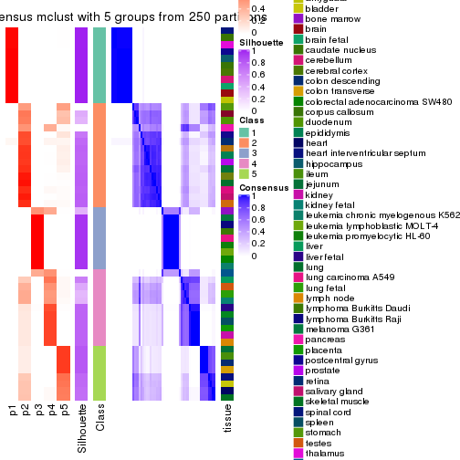
consensus_heatmap(res, k = 6)
Heatmaps for the membership of samples in all partitions to see how consistent they are:
membership_heatmap(res, k = 2)
membership_heatmap(res, k = 3)
membership_heatmap(res, k = 4)
membership_heatmap(res, k = 5)
membership_heatmap(res, k = 6)
As soon as we have had the classes for columns, we can look for signatures which are significantly different between classes which can be candidate marks for certain classes. Following are the heatmaps for signatures.
Signature heatmaps where rows are scaled:
get_signatures(res, k = 2)
get_signatures(res, k = 3)
get_signatures(res, k = 4)
get_signatures(res, k = 5)

get_signatures(res, k = 6)
Signature heatmaps where rows are not scaled:
get_signatures(res, k = 2, scale_rows = FALSE)
get_signatures(res, k = 3, scale_rows = FALSE)
get_signatures(res, k = 4, scale_rows = FALSE)
get_signatures(res, k = 5, scale_rows = FALSE)
get_signatures(res, k = 6, scale_rows = FALSE)
Compare the overlap of signatures from different k:
compare_signatures(res)
get_signature() returns a data frame invisibly. TO get the list of signatures, the function
call should be assigned to a variable explicitly. In following code, if plot argument is set
to FALSE, no heatmap is plotted while only the differential analysis is performed.
# code only for demonstration
tb = get_signature(res, k = ..., plot = FALSE)
An example of the output of tb is:
#> which_row fdr mean_1 mean_2 scaled_mean_1 scaled_mean_2 km
#> 1 38 0.042760348 8.373488 9.131774 -0.5533452 0.5164555 1
#> 2 40 0.018707592 7.106213 8.469186 -0.6173731 0.5762149 1
#> 3 55 0.019134737 10.221463 11.207825 -0.6159697 0.5749050 1
#> 4 59 0.006059896 5.921854 7.869574 -0.6899429 0.6439467 1
#> 5 60 0.018055526 8.928898 10.211722 -0.6204761 0.5791110 1
#> 6 98 0.009384629 15.714769 14.887706 0.6635654 -0.6193277 2
...
The columns in tb are:
which_row: row indices corresponding to the input matrix.fdr: FDR for the differential test. mean_x: The mean value in group x.scaled_mean_x: The mean value in group x after rows are scaled.km: Row groups if k-means clustering is applied to rows.UMAP plot which shows how samples are separated.
dimension_reduction(res, k = 2, method = "UMAP")
dimension_reduction(res, k = 3, method = "UMAP")

dimension_reduction(res, k = 4, method = "UMAP")
dimension_reduction(res, k = 5, method = "UMAP")
dimension_reduction(res, k = 6, method = "UMAP")
Following heatmap shows how subgroups are split when increasing k:
collect_classes(res)
Test correlation between subgroups and known annotations. If the known annotation is numeric, one-way ANOVA test is applied, and if the known annotation is discrete, chi-squared contingency table test is applied.
test_to_known_factors(res)
#> n tissue(p) k
#> SD:mclust 39 0.425 2
#> SD:mclust 54 0.374 3
#> SD:mclust 54 0.355 4
#> SD:mclust 45 0.419 5
#> SD:mclust 49 0.426 6
If matrix rows can be associated to genes, consider to use GO_Enrichment(res,
...) to perform function enrichment for the signature genes.
The object with results only for a single top-value method and a single partition method can be extracted as:
res = res_list["SD", "NMF"]
# you can also extract it by
# res = res_list["SD:NMF"]
A summary of res and all the functions that can be applied to it:
res
#> A 'ConsensusPartition' object with k = 2, 3, 4, 5, 6.
#> On a matrix with 21452 rows and 54 columns.
#> Top rows (1000, 2000, 3000, 4000, 5000) are extracted by 'SD' method.
#> Subgroups are detected by 'NMF' method.
#> Performed in total 1250 partitions by row resampling.
#> Best k for subgroups seems to be 3.
#>
#> Following methods can be applied to this 'ConsensusPartition' object:
#> [1] "cola_report" "collect_classes" "collect_plots"
#> [4] "collect_stats" "colnames" "compare_signatures"
#> [7] "consensus_heatmap" "dimension_reduction" "functional_enrichment"
#> [10] "get_anno_col" "get_anno" "get_classes"
#> [13] "get_consensus" "get_matrix" "get_membership"
#> [16] "get_param" "get_signatures" "get_stats"
#> [19] "is_best_k" "is_stable_k" "membership_heatmap"
#> [22] "ncol" "nrow" "plot_ecdf"
#> [25] "rownames" "select_partition_number" "show"
#> [28] "suggest_best_k" "test_to_known_factors"
collect_plots() function collects all the plots made from res for all k (number of partitions)
into one single page to provide an easy and fast comparison between different k.
collect_plots(res)
The plots are:
k and the heatmap of
predicted classes for each k.k.k.k.All the plots in panels can be made by individual functions and they are plotted later in this section.
select_partition_number() produces several plots showing different
statistics for choosing “optimized” k. There are following statistics:
k;k, the area increased is defined as \(A_k - A_{k-1}\).The detailed explanations of these statistics can be found in the cola vignette.
Generally speaking, lower PAC score, higher mean silhouette score or higher
concordance corresponds to better partition. Rand index and Jaccard index
measure how similar the current partition is compared to partition with k-1.
If they are too similar, we won't accept k is better than k-1.
select_partition_number(res)
The numeric values for all these statistics can be obtained by get_stats().
get_stats(res)
#> k 1-PAC mean_silhouette concordance area_increased Rand Jaccard
#> 2 2 0.562 0.872 0.899 0.4062 0.628 0.628
#> 3 3 0.971 0.928 0.975 0.5108 0.718 0.564
#> 4 4 0.896 0.905 0.946 0.2133 0.825 0.569
#> 5 5 0.817 0.790 0.876 0.0575 0.929 0.732
#> 6 6 0.819 0.754 0.859 0.0352 0.959 0.811
suggest_best_k() suggests the best \(k\) based on these statistics. The rules are as follows:
NA.suggest_best_k(res)
#> [1] 3
Following shows the table of the partitions (You need to click the show/hide
code output link to see it). The membership matrix (columns with name p*)
is inferred by
clue::cl_consensus()
function with the SE method. Basically the value in the membership matrix
represents the probability to belong to a certain group. The finall class
label for an item is determined with the group with highest probability it
belongs to.
In get_classes() function, the entropy is calculated from the membership
matrix and the silhouette score is calculated from the consensus matrix.
cbind(get_classes(res, k = 2), get_membership(res, k = 2))
#> class entropy silhouette p1 p2
#> GSM28710 2 0.5059 0.881 0.112 0.888
#> GSM28711 2 0.4298 0.894 0.088 0.912
#> GSM28712 2 0.4562 0.890 0.096 0.904
#> GSM11222 2 0.6801 0.789 0.180 0.820
#> GSM28720 1 0.0672 0.958 0.992 0.008
#> GSM11217 1 0.0672 0.958 0.992 0.008
#> GSM28723 1 0.0672 0.958 0.992 0.008
#> GSM11241 1 0.0672 0.958 0.992 0.008
#> GSM28703 1 0.0672 0.958 0.992 0.008
#> GSM11227 1 0.0672 0.958 0.992 0.008
#> GSM28706 1 0.0672 0.958 0.992 0.008
#> GSM11229 1 0.0672 0.958 0.992 0.008
#> GSM11235 1 0.0672 0.958 0.992 0.008
#> GSM28707 1 0.0672 0.958 0.992 0.008
#> GSM11240 2 0.3879 0.897 0.076 0.924
#> GSM28714 2 0.3879 0.897 0.076 0.924
#> GSM11216 2 0.7674 0.744 0.224 0.776
#> GSM28715 2 0.3431 0.898 0.064 0.936
#> GSM11234 2 0.4298 0.894 0.088 0.912
#> GSM28699 1 0.8499 0.634 0.724 0.276
#> GSM11233 2 0.4690 0.888 0.100 0.900
#> GSM28718 2 0.3879 0.897 0.076 0.924
#> GSM11231 2 0.3274 0.898 0.060 0.940
#> GSM11237 2 0.3879 0.897 0.076 0.924
#> GSM11228 2 0.1414 0.890 0.020 0.980
#> GSM28697 2 0.3274 0.898 0.060 0.940
#> GSM28698 2 0.6887 0.786 0.184 0.816
#> GSM11238 2 0.6801 0.789 0.180 0.820
#> GSM11242 2 0.6801 0.789 0.180 0.820
#> GSM28719 2 0.1184 0.889 0.016 0.984
#> GSM28708 2 0.3879 0.857 0.076 0.924
#> GSM28722 2 0.3733 0.898 0.072 0.928
#> GSM11232 2 0.2043 0.894 0.032 0.968
#> GSM28709 2 0.6801 0.789 0.180 0.820
#> GSM11226 2 0.0376 0.880 0.004 0.996
#> GSM11239 2 0.6801 0.789 0.180 0.820
#> GSM11225 2 0.6801 0.789 0.180 0.820
#> GSM11220 2 0.7883 0.729 0.236 0.764
#> GSM28701 2 0.5408 0.872 0.124 0.876
#> GSM28721 2 0.0672 0.878 0.008 0.992
#> GSM28713 2 0.4298 0.894 0.088 0.912
#> GSM28716 1 0.6712 0.775 0.824 0.176
#> GSM11221 2 0.4690 0.888 0.100 0.900
#> GSM28717 2 0.8267 0.701 0.260 0.740
#> GSM11223 1 0.0938 0.954 0.988 0.012
#> GSM11218 2 0.0938 0.878 0.012 0.988
#> GSM11219 2 0.3879 0.897 0.076 0.924
#> GSM11236 2 0.5629 0.840 0.132 0.868
#> GSM28702 2 0.6801 0.789 0.180 0.820
#> GSM28705 2 0.2423 0.895 0.040 0.960
#> GSM11230 2 0.2043 0.894 0.032 0.968
#> GSM28704 2 0.3733 0.898 0.072 0.928
#> GSM28700 2 0.4690 0.888 0.100 0.900
#> GSM11224 2 0.4298 0.894 0.088 0.912
cbind(get_classes(res, k = 3), get_membership(res, k = 3))
#> class entropy silhouette p1 p2 p3
#> GSM28710 2 0.0000 0.9774 0.000 1.000 0.000
#> GSM28711 2 0.0000 0.9774 0.000 1.000 0.000
#> GSM28712 2 0.0000 0.9774 0.000 1.000 0.000
#> GSM11222 3 0.0000 0.9217 0.000 0.000 1.000
#> GSM28720 1 0.0000 0.9986 1.000 0.000 0.000
#> GSM11217 1 0.0000 0.9986 1.000 0.000 0.000
#> GSM28723 1 0.0000 0.9986 1.000 0.000 0.000
#> GSM11241 1 0.0000 0.9986 1.000 0.000 0.000
#> GSM28703 1 0.0000 0.9986 1.000 0.000 0.000
#> GSM11227 1 0.0000 0.9986 1.000 0.000 0.000
#> GSM28706 1 0.0000 0.9986 1.000 0.000 0.000
#> GSM11229 1 0.0000 0.9986 1.000 0.000 0.000
#> GSM11235 1 0.0000 0.9986 1.000 0.000 0.000
#> GSM28707 1 0.0000 0.9986 1.000 0.000 0.000
#> GSM11240 2 0.0000 0.9774 0.000 1.000 0.000
#> GSM28714 2 0.0000 0.9774 0.000 1.000 0.000
#> GSM11216 3 0.0000 0.9217 0.000 0.000 1.000
#> GSM28715 2 0.0000 0.9774 0.000 1.000 0.000
#> GSM11234 2 0.0000 0.9774 0.000 1.000 0.000
#> GSM28699 2 0.1860 0.9252 0.052 0.948 0.000
#> GSM11233 2 0.0000 0.9774 0.000 1.000 0.000
#> GSM28718 2 0.0000 0.9774 0.000 1.000 0.000
#> GSM11231 2 0.0000 0.9774 0.000 1.000 0.000
#> GSM11237 2 0.0000 0.9774 0.000 1.000 0.000
#> GSM11228 2 0.0000 0.9774 0.000 1.000 0.000
#> GSM28697 2 0.0000 0.9774 0.000 1.000 0.000
#> GSM28698 3 0.0000 0.9217 0.000 0.000 1.000
#> GSM11238 3 0.0000 0.9217 0.000 0.000 1.000
#> GSM11242 3 0.0000 0.9217 0.000 0.000 1.000
#> GSM28719 2 0.0000 0.9774 0.000 1.000 0.000
#> GSM28708 3 0.3686 0.7954 0.000 0.140 0.860
#> GSM28722 2 0.0000 0.9774 0.000 1.000 0.000
#> GSM11232 2 0.0000 0.9774 0.000 1.000 0.000
#> GSM28709 3 0.0000 0.9217 0.000 0.000 1.000
#> GSM11226 2 0.1411 0.9415 0.000 0.964 0.036
#> GSM11239 3 0.0000 0.9217 0.000 0.000 1.000
#> GSM11225 3 0.0000 0.9217 0.000 0.000 1.000
#> GSM11220 3 0.0000 0.9217 0.000 0.000 1.000
#> GSM28701 2 0.0000 0.9774 0.000 1.000 0.000
#> GSM28721 2 0.6309 -0.0965 0.000 0.500 0.500
#> GSM28713 2 0.0000 0.9774 0.000 1.000 0.000
#> GSM28716 1 0.0592 0.9840 0.988 0.012 0.000
#> GSM11221 2 0.0000 0.9774 0.000 1.000 0.000
#> GSM28717 2 0.0000 0.9774 0.000 1.000 0.000
#> GSM11223 1 0.0000 0.9986 1.000 0.000 0.000
#> GSM11218 3 0.6299 0.1045 0.000 0.476 0.524
#> GSM11219 2 0.0000 0.9774 0.000 1.000 0.000
#> GSM11236 3 0.3192 0.8265 0.000 0.112 0.888
#> GSM28702 3 0.0000 0.9217 0.000 0.000 1.000
#> GSM28705 2 0.0000 0.9774 0.000 1.000 0.000
#> GSM11230 2 0.0000 0.9774 0.000 1.000 0.000
#> GSM28704 2 0.0000 0.9774 0.000 1.000 0.000
#> GSM28700 2 0.0000 0.9774 0.000 1.000 0.000
#> GSM11224 2 0.0000 0.9774 0.000 1.000 0.000
cbind(get_classes(res, k = 4), get_membership(res, k = 4))
#> class entropy silhouette p1 p2 p3 p4
#> GSM28710 2 0.0336 0.9321 0.000 0.992 0.000 0.008
#> GSM28711 2 0.2281 0.8886 0.000 0.904 0.000 0.096
#> GSM28712 2 0.0336 0.9321 0.000 0.992 0.000 0.008
#> GSM11222 3 0.0469 0.9921 0.000 0.000 0.988 0.012
#> GSM28720 1 0.0000 0.9994 1.000 0.000 0.000 0.000
#> GSM11217 1 0.0000 0.9994 1.000 0.000 0.000 0.000
#> GSM28723 1 0.0000 0.9994 1.000 0.000 0.000 0.000
#> GSM11241 1 0.0000 0.9994 1.000 0.000 0.000 0.000
#> GSM28703 1 0.0000 0.9994 1.000 0.000 0.000 0.000
#> GSM11227 1 0.0000 0.9994 1.000 0.000 0.000 0.000
#> GSM28706 1 0.0000 0.9994 1.000 0.000 0.000 0.000
#> GSM11229 1 0.0000 0.9994 1.000 0.000 0.000 0.000
#> GSM11235 1 0.0000 0.9994 1.000 0.000 0.000 0.000
#> GSM28707 1 0.0000 0.9994 1.000 0.000 0.000 0.000
#> GSM11240 2 0.0188 0.9317 0.000 0.996 0.000 0.004
#> GSM28714 2 0.0000 0.9307 0.000 1.000 0.000 0.000
#> GSM11216 3 0.0000 0.9944 0.000 0.000 1.000 0.000
#> GSM28715 2 0.1022 0.9286 0.000 0.968 0.000 0.032
#> GSM11234 4 0.1557 0.8903 0.000 0.056 0.000 0.944
#> GSM28699 2 0.1022 0.9125 0.000 0.968 0.000 0.032
#> GSM11233 2 0.1022 0.9131 0.000 0.968 0.000 0.032
#> GSM28718 2 0.0000 0.9307 0.000 1.000 0.000 0.000
#> GSM11231 2 0.2408 0.8781 0.000 0.896 0.000 0.104
#> GSM11237 2 0.0336 0.9309 0.000 0.992 0.000 0.008
#> GSM11228 4 0.1211 0.8915 0.000 0.040 0.000 0.960
#> GSM28697 4 0.3088 0.8466 0.000 0.128 0.008 0.864
#> GSM28698 3 0.0000 0.9944 0.000 0.000 1.000 0.000
#> GSM11238 3 0.0188 0.9944 0.000 0.000 0.996 0.004
#> GSM11242 3 0.0336 0.9943 0.000 0.000 0.992 0.008
#> GSM28719 4 0.3975 0.7250 0.000 0.240 0.000 0.760
#> GSM28708 4 0.3606 0.7978 0.000 0.024 0.132 0.844
#> GSM28722 4 0.1716 0.8877 0.000 0.064 0.000 0.936
#> GSM11232 4 0.1389 0.8915 0.000 0.048 0.000 0.952
#> GSM28709 3 0.0000 0.9944 0.000 0.000 1.000 0.000
#> GSM11226 4 0.1211 0.8915 0.000 0.040 0.000 0.960
#> GSM11239 3 0.0336 0.9943 0.000 0.000 0.992 0.008
#> GSM11225 3 0.0336 0.9943 0.000 0.000 0.992 0.008
#> GSM11220 3 0.0188 0.9929 0.000 0.000 0.996 0.004
#> GSM28701 2 0.4679 0.4357 0.000 0.648 0.000 0.352
#> GSM28721 4 0.1356 0.8876 0.000 0.032 0.008 0.960
#> GSM28713 2 0.4193 0.6599 0.000 0.732 0.000 0.268
#> GSM28716 1 0.0336 0.9936 0.992 0.000 0.000 0.008
#> GSM11221 2 0.1211 0.9253 0.000 0.960 0.000 0.040
#> GSM28717 2 0.1022 0.9125 0.000 0.968 0.000 0.032
#> GSM11223 1 0.0000 0.9994 1.000 0.000 0.000 0.000
#> GSM11218 4 0.1209 0.8877 0.000 0.032 0.004 0.964
#> GSM11219 2 0.0707 0.9317 0.000 0.980 0.000 0.020
#> GSM11236 3 0.0469 0.9839 0.000 0.012 0.988 0.000
#> GSM28702 4 0.4992 0.0955 0.000 0.000 0.476 0.524
#> GSM28705 4 0.1211 0.8915 0.000 0.040 0.000 0.960
#> GSM11230 2 0.0817 0.9309 0.000 0.976 0.000 0.024
#> GSM28704 4 0.4250 0.6373 0.000 0.276 0.000 0.724
#> GSM28700 2 0.0707 0.9319 0.000 0.980 0.000 0.020
#> GSM11224 2 0.2281 0.8891 0.000 0.904 0.000 0.096
cbind(get_classes(res, k = 5), get_membership(res, k = 5))
#> class entropy silhouette p1 p2 p3 p4 p5
#> GSM28710 2 0.1041 0.899644 0.000 0.964 0.000 0.004 0.032
#> GSM28711 2 0.3163 0.810363 0.000 0.824 0.000 0.164 0.012
#> GSM28712 2 0.0451 0.908641 0.000 0.988 0.000 0.008 0.004
#> GSM11222 3 0.0794 0.810247 0.000 0.000 0.972 0.000 0.028
#> GSM28720 1 0.0000 0.999138 1.000 0.000 0.000 0.000 0.000
#> GSM11217 1 0.0000 0.999138 1.000 0.000 0.000 0.000 0.000
#> GSM28723 1 0.0000 0.999138 1.000 0.000 0.000 0.000 0.000
#> GSM11241 1 0.0000 0.999138 1.000 0.000 0.000 0.000 0.000
#> GSM28703 1 0.0000 0.999138 1.000 0.000 0.000 0.000 0.000
#> GSM11227 1 0.0000 0.999138 1.000 0.000 0.000 0.000 0.000
#> GSM28706 1 0.0000 0.999138 1.000 0.000 0.000 0.000 0.000
#> GSM11229 1 0.0000 0.999138 1.000 0.000 0.000 0.000 0.000
#> GSM11235 1 0.0000 0.999138 1.000 0.000 0.000 0.000 0.000
#> GSM28707 1 0.0000 0.999138 1.000 0.000 0.000 0.000 0.000
#> GSM11240 2 0.0798 0.910389 0.000 0.976 0.000 0.016 0.008
#> GSM28714 2 0.0807 0.910248 0.000 0.976 0.000 0.012 0.012
#> GSM11216 3 0.3913 0.646480 0.000 0.000 0.676 0.000 0.324
#> GSM28715 2 0.2046 0.892820 0.000 0.916 0.000 0.068 0.016
#> GSM11234 4 0.2793 0.761249 0.000 0.036 0.000 0.876 0.088
#> GSM28699 2 0.1571 0.880123 0.000 0.936 0.000 0.004 0.060
#> GSM11233 2 0.1502 0.882503 0.000 0.940 0.000 0.004 0.056
#> GSM28718 2 0.0807 0.910346 0.000 0.976 0.000 0.012 0.012
#> GSM11231 5 0.5382 0.540515 0.000 0.260 0.000 0.100 0.640
#> GSM11237 2 0.0794 0.905705 0.000 0.972 0.000 0.000 0.028
#> GSM11228 4 0.4142 0.353964 0.000 0.004 0.004 0.684 0.308
#> GSM28697 5 0.5723 0.345581 0.000 0.088 0.000 0.392 0.520
#> GSM28698 3 0.1197 0.799780 0.000 0.000 0.952 0.000 0.048
#> GSM11238 3 0.0000 0.809565 0.000 0.000 1.000 0.000 0.000
#> GSM11242 3 0.1124 0.808653 0.000 0.000 0.960 0.004 0.036
#> GSM28719 5 0.4323 0.611985 0.000 0.024 0.020 0.196 0.760
#> GSM28708 5 0.5040 0.540731 0.000 0.000 0.068 0.272 0.660
#> GSM28722 4 0.0963 0.817539 0.000 0.036 0.000 0.964 0.000
#> GSM11232 4 0.2843 0.697460 0.000 0.008 0.000 0.848 0.144
#> GSM28709 3 0.3966 0.619820 0.000 0.000 0.664 0.000 0.336
#> GSM11226 4 0.0798 0.826137 0.000 0.016 0.008 0.976 0.000
#> GSM11239 3 0.1041 0.809728 0.000 0.000 0.964 0.004 0.032
#> GSM11225 3 0.1205 0.807686 0.000 0.000 0.956 0.004 0.040
#> GSM11220 3 0.3816 0.660640 0.000 0.000 0.696 0.000 0.304
#> GSM28701 5 0.4666 0.593436 0.000 0.180 0.000 0.088 0.732
#> GSM28721 4 0.0290 0.827387 0.000 0.008 0.000 0.992 0.000
#> GSM28713 2 0.4574 0.358395 0.000 0.576 0.000 0.412 0.012
#> GSM28716 1 0.0290 0.990470 0.992 0.008 0.000 0.000 0.000
#> GSM11221 2 0.2020 0.878224 0.000 0.900 0.000 0.100 0.000
#> GSM28717 2 0.1638 0.877745 0.000 0.932 0.000 0.004 0.064
#> GSM11223 1 0.0000 0.999138 1.000 0.000 0.000 0.000 0.000
#> GSM11218 4 0.0833 0.822105 0.000 0.004 0.016 0.976 0.004
#> GSM11219 2 0.1041 0.909237 0.000 0.964 0.000 0.032 0.004
#> GSM11236 5 0.4686 -0.000263 0.000 0.012 0.396 0.004 0.588
#> GSM28702 3 0.4331 0.313753 0.000 0.000 0.596 0.400 0.004
#> GSM28705 4 0.0451 0.827000 0.000 0.008 0.000 0.988 0.004
#> GSM11230 2 0.1704 0.896875 0.000 0.928 0.000 0.068 0.004
#> GSM28704 4 0.4292 0.446601 0.000 0.272 0.000 0.704 0.024
#> GSM28700 2 0.0992 0.910426 0.000 0.968 0.000 0.024 0.008
#> GSM11224 2 0.2890 0.824999 0.000 0.836 0.000 0.160 0.004
cbind(get_classes(res, k = 6), get_membership(res, k = 6))
#> class entropy silhouette p1 p2 p3 p4 p5 p6
#> GSM28710 2 0.3316 0.793 0.000 0.812 0.000 0.052 0.136 0.000
#> GSM28711 2 0.2773 0.789 0.000 0.836 0.000 0.008 0.004 0.152
#> GSM28712 2 0.0713 0.856 0.000 0.972 0.000 0.000 0.028 0.000
#> GSM11222 3 0.0993 0.791 0.000 0.000 0.964 0.012 0.024 0.000
#> GSM28720 1 0.0000 0.999 1.000 0.000 0.000 0.000 0.000 0.000
#> GSM11217 1 0.0000 0.999 1.000 0.000 0.000 0.000 0.000 0.000
#> GSM28723 1 0.0000 0.999 1.000 0.000 0.000 0.000 0.000 0.000
#> GSM11241 1 0.0000 0.999 1.000 0.000 0.000 0.000 0.000 0.000
#> GSM28703 1 0.0000 0.999 1.000 0.000 0.000 0.000 0.000 0.000
#> GSM11227 1 0.0000 0.999 1.000 0.000 0.000 0.000 0.000 0.000
#> GSM28706 1 0.0000 0.999 1.000 0.000 0.000 0.000 0.000 0.000
#> GSM11229 1 0.0000 0.999 1.000 0.000 0.000 0.000 0.000 0.000
#> GSM11235 1 0.0000 0.999 1.000 0.000 0.000 0.000 0.000 0.000
#> GSM28707 1 0.0000 0.999 1.000 0.000 0.000 0.000 0.000 0.000
#> GSM11240 2 0.0858 0.860 0.000 0.968 0.000 0.004 0.000 0.028
#> GSM28714 2 0.1149 0.859 0.000 0.960 0.000 0.008 0.008 0.024
#> GSM11216 5 0.4234 0.825 0.000 0.000 0.280 0.044 0.676 0.000
#> GSM28715 2 0.1882 0.848 0.000 0.920 0.000 0.012 0.008 0.060
#> GSM11234 6 0.4361 0.580 0.000 0.040 0.000 0.020 0.224 0.716
#> GSM28699 2 0.4411 0.739 0.000 0.736 0.000 0.076 0.172 0.016
#> GSM11233 2 0.3979 0.765 0.000 0.772 0.000 0.052 0.160 0.016
#> GSM28718 2 0.0820 0.859 0.000 0.972 0.000 0.012 0.000 0.016
#> GSM11231 4 0.2383 0.664 0.000 0.096 0.000 0.880 0.000 0.024
#> GSM11237 2 0.0603 0.857 0.000 0.980 0.000 0.016 0.004 0.000
#> GSM11228 4 0.4129 0.340 0.000 0.000 0.000 0.564 0.012 0.424
#> GSM28697 4 0.5990 0.473 0.000 0.020 0.004 0.532 0.304 0.140
#> GSM28698 3 0.2854 0.534 0.000 0.000 0.792 0.000 0.208 0.000
#> GSM11238 3 0.1643 0.761 0.000 0.000 0.924 0.008 0.068 0.000
#> GSM11242 3 0.0146 0.796 0.000 0.000 0.996 0.000 0.004 0.000
#> GSM28719 4 0.1586 0.689 0.000 0.012 0.004 0.940 0.004 0.040
#> GSM28708 4 0.2322 0.684 0.000 0.000 0.036 0.896 0.004 0.064
#> GSM28722 6 0.1471 0.751 0.000 0.064 0.000 0.004 0.000 0.932
#> GSM11232 6 0.3690 0.371 0.000 0.008 0.000 0.308 0.000 0.684
#> GSM28709 5 0.4866 0.736 0.000 0.000 0.364 0.068 0.568 0.000
#> GSM11226 6 0.1511 0.755 0.000 0.044 0.012 0.004 0.000 0.940
#> GSM11239 3 0.0458 0.795 0.000 0.000 0.984 0.000 0.016 0.000
#> GSM11225 3 0.1082 0.776 0.000 0.000 0.956 0.004 0.040 0.000
#> GSM11220 5 0.3640 0.765 0.000 0.000 0.204 0.028 0.764 0.004
#> GSM28701 4 0.3785 0.645 0.000 0.040 0.000 0.804 0.120 0.036
#> GSM28721 6 0.1251 0.747 0.000 0.024 0.000 0.012 0.008 0.956
#> GSM28713 6 0.4135 0.304 0.000 0.404 0.000 0.004 0.008 0.584
#> GSM28716 1 0.0260 0.992 0.992 0.000 0.000 0.000 0.008 0.000
#> GSM11221 2 0.3272 0.799 0.000 0.820 0.000 0.016 0.020 0.144
#> GSM28717 2 0.5052 0.628 0.000 0.632 0.000 0.084 0.272 0.012
#> GSM11223 1 0.0000 0.999 1.000 0.000 0.000 0.000 0.000 0.000
#> GSM11218 6 0.2039 0.731 0.000 0.020 0.052 0.012 0.000 0.916
#> GSM11219 2 0.1049 0.859 0.000 0.960 0.000 0.008 0.000 0.032
#> GSM11236 4 0.5859 -0.194 0.000 0.012 0.136 0.452 0.400 0.000
#> GSM28702 3 0.4621 0.290 0.000 0.000 0.604 0.016 0.024 0.356
#> GSM28705 6 0.0891 0.751 0.000 0.024 0.000 0.008 0.000 0.968
#> GSM11230 2 0.2431 0.814 0.000 0.872 0.004 0.004 0.004 0.116
#> GSM28704 6 0.3607 0.485 0.000 0.348 0.000 0.000 0.000 0.652
#> GSM28700 2 0.3256 0.826 0.000 0.836 0.000 0.020 0.112 0.032
#> GSM11224 2 0.2838 0.749 0.000 0.808 0.000 0.000 0.004 0.188
Heatmaps for the consensus matrix. It visualizes the probability of two samples to be in a same group.
consensus_heatmap(res, k = 2)
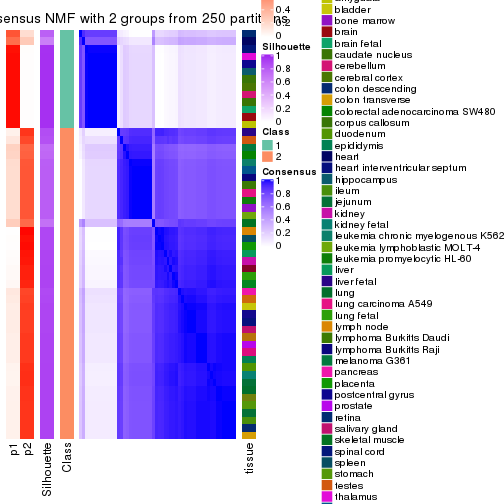
consensus_heatmap(res, k = 3)
consensus_heatmap(res, k = 4)
consensus_heatmap(res, k = 5)
consensus_heatmap(res, k = 6)

Heatmaps for the membership of samples in all partitions to see how consistent they are:
membership_heatmap(res, k = 2)
membership_heatmap(res, k = 3)

membership_heatmap(res, k = 4)
membership_heatmap(res, k = 5)
membership_heatmap(res, k = 6)
As soon as we have had the classes for columns, we can look for signatures which are significantly different between classes which can be candidate marks for certain classes. Following are the heatmaps for signatures.
Signature heatmaps where rows are scaled:
get_signatures(res, k = 2)
get_signatures(res, k = 3)
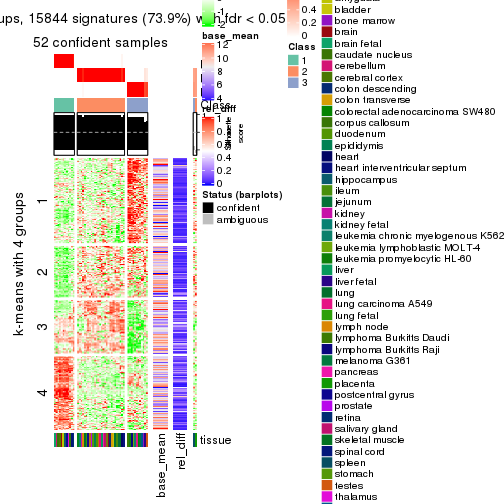
get_signatures(res, k = 4)
get_signatures(res, k = 5)
get_signatures(res, k = 6)
Signature heatmaps where rows are not scaled:
get_signatures(res, k = 2, scale_rows = FALSE)
get_signatures(res, k = 3, scale_rows = FALSE)
get_signatures(res, k = 4, scale_rows = FALSE)
get_signatures(res, k = 5, scale_rows = FALSE)

get_signatures(res, k = 6, scale_rows = FALSE)
Compare the overlap of signatures from different k:
compare_signatures(res)
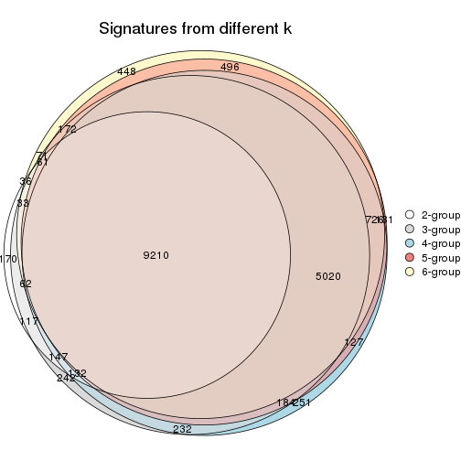
get_signature() returns a data frame invisibly. TO get the list of signatures, the function
call should be assigned to a variable explicitly. In following code, if plot argument is set
to FALSE, no heatmap is plotted while only the differential analysis is performed.
# code only for demonstration
tb = get_signature(res, k = ..., plot = FALSE)
An example of the output of tb is:
#> which_row fdr mean_1 mean_2 scaled_mean_1 scaled_mean_2 km
#> 1 38 0.042760348 8.373488 9.131774 -0.5533452 0.5164555 1
#> 2 40 0.018707592 7.106213 8.469186 -0.6173731 0.5762149 1
#> 3 55 0.019134737 10.221463 11.207825 -0.6159697 0.5749050 1
#> 4 59 0.006059896 5.921854 7.869574 -0.6899429 0.6439467 1
#> 5 60 0.018055526 8.928898 10.211722 -0.6204761 0.5791110 1
#> 6 98 0.009384629 15.714769 14.887706 0.6635654 -0.6193277 2
...
The columns in tb are:
which_row: row indices corresponding to the input matrix.fdr: FDR for the differential test. mean_x: The mean value in group x.scaled_mean_x: The mean value in group x after rows are scaled.km: Row groups if k-means clustering is applied to rows.UMAP plot which shows how samples are separated.
dimension_reduction(res, k = 2, method = "UMAP")
dimension_reduction(res, k = 3, method = "UMAP")
dimension_reduction(res, k = 4, method = "UMAP")
dimension_reduction(res, k = 5, method = "UMAP")
dimension_reduction(res, k = 6, method = "UMAP")
Following heatmap shows how subgroups are split when increasing k:
collect_classes(res)
Test correlation between subgroups and known annotations. If the known annotation is numeric, one-way ANOVA test is applied, and if the known annotation is discrete, chi-squared contingency table test is applied.
test_to_known_factors(res)
#> n tissue(p) k
#> SD:NMF 54 0.398 2
#> SD:NMF 52 0.372 3
#> SD:NMF 52 0.352 4
#> SD:NMF 48 0.476 5
#> SD:NMF 47 0.438 6
If matrix rows can be associated to genes, consider to use GO_Enrichment(res,
...) to perform function enrichment for the signature genes.
The object with results only for a single top-value method and a single partition method can be extracted as:
res = res_list["CV", "hclust"]
# you can also extract it by
# res = res_list["CV:hclust"]
A summary of res and all the functions that can be applied to it:
res
#> A 'ConsensusPartition' object with k = 2, 3, 4, 5, 6.
#> On a matrix with 21452 rows and 54 columns.
#> Top rows (1000, 2000, 3000, 4000, 5000) are extracted by 'CV' method.
#> Subgroups are detected by 'hclust' method.
#> Performed in total 1250 partitions by row resampling.
#> Best k for subgroups seems to be 4.
#>
#> Following methods can be applied to this 'ConsensusPartition' object:
#> [1] "cola_report" "collect_classes" "collect_plots"
#> [4] "collect_stats" "colnames" "compare_signatures"
#> [7] "consensus_heatmap" "dimension_reduction" "functional_enrichment"
#> [10] "get_anno_col" "get_anno" "get_classes"
#> [13] "get_consensus" "get_matrix" "get_membership"
#> [16] "get_param" "get_signatures" "get_stats"
#> [19] "is_best_k" "is_stable_k" "membership_heatmap"
#> [22] "ncol" "nrow" "plot_ecdf"
#> [25] "rownames" "select_partition_number" "show"
#> [28] "suggest_best_k" "test_to_known_factors"
collect_plots() function collects all the plots made from res for all k (number of partitions)
into one single page to provide an easy and fast comparison between different k.
collect_plots(res)
The plots are:
k and the heatmap of
predicted classes for each k.k.k.k.All the plots in panels can be made by individual functions and they are plotted later in this section.
select_partition_number() produces several plots showing different
statistics for choosing “optimized” k. There are following statistics:
k;k, the area increased is defined as \(A_k - A_{k-1}\).The detailed explanations of these statistics can be found in the cola vignette.
Generally speaking, lower PAC score, higher mean silhouette score or higher
concordance corresponds to better partition. Rand index and Jaccard index
measure how similar the current partition is compared to partition with k-1.
If they are too similar, we won't accept k is better than k-1.
select_partition_number(res)
The numeric values for all these statistics can be obtained by get_stats().
get_stats(res)
#> k 1-PAC mean_silhouette concordance area_increased Rand Jaccard
#> 2 2 0.627 0.790 0.905 0.3568 0.693 0.693
#> 3 3 0.427 0.457 0.733 0.5841 0.622 0.480
#> 4 4 0.695 0.792 0.883 0.2724 0.729 0.421
#> 5 5 0.712 0.723 0.826 0.0683 0.958 0.851
#> 6 6 0.727 0.653 0.819 0.0398 0.946 0.779
suggest_best_k() suggests the best \(k\) based on these statistics. The rules are as follows:
NA.suggest_best_k(res)
#> [1] 4
Following shows the table of the partitions (You need to click the show/hide
code output link to see it). The membership matrix (columns with name p*)
is inferred by
clue::cl_consensus()
function with the SE method. Basically the value in the membership matrix
represents the probability to belong to a certain group. The finall class
label for an item is determined with the group with highest probability it
belongs to.
In get_classes() function, the entropy is calculated from the membership
matrix and the silhouette score is calculated from the consensus matrix.
cbind(get_classes(res, k = 2), get_membership(res, k = 2))
#> class entropy silhouette p1 p2
#> GSM28710 2 0.295 0.877 0.052 0.948
#> GSM28711 2 0.295 0.877 0.052 0.948
#> GSM28712 2 0.184 0.886 0.028 0.972
#> GSM11222 1 0.936 0.356 0.648 0.352
#> GSM28720 2 0.000 0.885 0.000 1.000
#> GSM11217 2 0.000 0.885 0.000 1.000
#> GSM28723 2 0.000 0.885 0.000 1.000
#> GSM11241 2 0.000 0.885 0.000 1.000
#> GSM28703 2 0.000 0.885 0.000 1.000
#> GSM11227 2 0.000 0.885 0.000 1.000
#> GSM28706 2 0.000 0.885 0.000 1.000
#> GSM11229 2 0.000 0.885 0.000 1.000
#> GSM11235 2 0.000 0.885 0.000 1.000
#> GSM28707 2 0.000 0.885 0.000 1.000
#> GSM11240 2 0.184 0.886 0.028 0.972
#> GSM28714 2 0.184 0.886 0.028 0.972
#> GSM11216 1 0.000 0.902 1.000 0.000
#> GSM28715 2 0.184 0.886 0.028 0.972
#> GSM11234 2 0.000 0.885 0.000 1.000
#> GSM28699 2 0.000 0.885 0.000 1.000
#> GSM11233 2 0.000 0.885 0.000 1.000
#> GSM28718 2 0.184 0.886 0.028 0.972
#> GSM11231 2 0.671 0.776 0.176 0.824
#> GSM11237 2 0.184 0.886 0.028 0.972
#> GSM11228 2 0.871 0.642 0.292 0.708
#> GSM28697 2 0.871 0.642 0.292 0.708
#> GSM28698 1 0.000 0.902 1.000 0.000
#> GSM11238 1 0.000 0.902 1.000 0.000
#> GSM11242 1 0.000 0.902 1.000 0.000
#> GSM28719 2 0.955 0.490 0.376 0.624
#> GSM28708 2 0.955 0.490 0.376 0.624
#> GSM28722 2 0.327 0.873 0.060 0.940
#> GSM11232 2 0.745 0.742 0.212 0.788
#> GSM28709 1 0.000 0.902 1.000 0.000
#> GSM11226 2 1.000 0.163 0.492 0.508
#> GSM11239 1 0.000 0.902 1.000 0.000
#> GSM11225 1 0.000 0.902 1.000 0.000
#> GSM11220 1 0.000 0.902 1.000 0.000
#> GSM28701 2 0.552 0.824 0.128 0.872
#> GSM28721 2 0.993 0.296 0.452 0.548
#> GSM28713 2 0.224 0.884 0.036 0.964
#> GSM28716 2 0.000 0.885 0.000 1.000
#> GSM11221 2 0.224 0.884 0.036 0.964
#> GSM28717 2 0.000 0.885 0.000 1.000
#> GSM11223 2 0.000 0.885 0.000 1.000
#> GSM11218 2 1.000 0.163 0.492 0.508
#> GSM11219 2 0.204 0.885 0.032 0.968
#> GSM11236 2 0.909 0.588 0.324 0.676
#> GSM28702 1 0.936 0.356 0.648 0.352
#> GSM28705 2 0.886 0.624 0.304 0.696
#> GSM11230 2 0.184 0.886 0.028 0.972
#> GSM28704 2 0.224 0.884 0.036 0.964
#> GSM28700 2 0.000 0.885 0.000 1.000
#> GSM11224 2 0.184 0.886 0.028 0.972
cbind(get_classes(res, k = 3), get_membership(res, k = 3))
#> class entropy silhouette p1 p2 p3
#> GSM28710 2 0.614 0.3536 0.404 0.596 0.000
#> GSM28711 2 0.614 0.3536 0.404 0.596 0.000
#> GSM28712 1 0.630 -0.1638 0.528 0.472 0.000
#> GSM11222 2 0.626 -0.2167 0.000 0.552 0.448
#> GSM28720 1 0.000 0.7147 1.000 0.000 0.000
#> GSM11217 1 0.000 0.7147 1.000 0.000 0.000
#> GSM28723 1 0.000 0.7147 1.000 0.000 0.000
#> GSM11241 1 0.000 0.7147 1.000 0.000 0.000
#> GSM28703 1 0.000 0.7147 1.000 0.000 0.000
#> GSM11227 1 0.000 0.7147 1.000 0.000 0.000
#> GSM28706 1 0.000 0.7147 1.000 0.000 0.000
#> GSM11229 1 0.000 0.7147 1.000 0.000 0.000
#> GSM11235 1 0.000 0.7147 1.000 0.000 0.000
#> GSM28707 1 0.000 0.7147 1.000 0.000 0.000
#> GSM11240 2 0.631 0.2136 0.488 0.512 0.000
#> GSM28714 2 0.631 0.2136 0.488 0.512 0.000
#> GSM11216 3 0.000 1.0000 0.000 0.000 1.000
#> GSM28715 2 0.631 0.2136 0.488 0.512 0.000
#> GSM11234 1 0.625 -0.0613 0.556 0.444 0.000
#> GSM28699 1 0.536 0.4489 0.724 0.276 0.000
#> GSM11233 1 0.536 0.4489 0.724 0.276 0.000
#> GSM28718 2 0.631 0.2136 0.488 0.512 0.000
#> GSM11231 2 0.757 0.3564 0.376 0.576 0.048
#> GSM11237 2 0.631 0.2136 0.488 0.512 0.000
#> GSM11228 2 0.474 0.4814 0.104 0.848 0.048
#> GSM28697 2 0.474 0.4814 0.104 0.848 0.048
#> GSM28698 3 0.000 1.0000 0.000 0.000 1.000
#> GSM11238 3 0.000 1.0000 0.000 0.000 1.000
#> GSM11242 3 0.000 1.0000 0.000 0.000 1.000
#> GSM28719 2 0.175 0.4592 0.000 0.952 0.048
#> GSM28708 2 0.175 0.4592 0.000 0.952 0.048
#> GSM28722 2 0.597 0.3917 0.364 0.636 0.000
#> GSM11232 2 0.683 0.4528 0.260 0.692 0.048
#> GSM28709 3 0.000 1.0000 0.000 0.000 1.000
#> GSM11226 2 0.550 0.2343 0.000 0.708 0.292
#> GSM11239 3 0.000 1.0000 0.000 0.000 1.000
#> GSM11225 3 0.000 1.0000 0.000 0.000 1.000
#> GSM11220 3 0.000 1.0000 0.000 0.000 1.000
#> GSM28701 2 0.628 0.4325 0.304 0.680 0.016
#> GSM28721 2 0.558 0.3093 0.008 0.736 0.256
#> GSM28713 2 0.630 0.2472 0.476 0.524 0.000
#> GSM28716 1 0.579 0.2828 0.668 0.332 0.000
#> GSM11221 2 0.631 0.2121 0.492 0.508 0.000
#> GSM28717 1 0.536 0.4489 0.724 0.276 0.000
#> GSM11223 1 0.000 0.7147 1.000 0.000 0.000
#> GSM11218 2 0.550 0.2343 0.000 0.708 0.292
#> GSM11219 2 0.631 0.2117 0.492 0.508 0.000
#> GSM11236 2 0.653 0.4672 0.152 0.756 0.092
#> GSM28702 2 0.626 -0.2167 0.000 0.552 0.448
#> GSM28705 2 0.839 0.4551 0.176 0.624 0.200
#> GSM11230 2 0.631 0.2136 0.488 0.512 0.000
#> GSM28704 2 0.630 0.2549 0.472 0.528 0.000
#> GSM28700 1 0.625 -0.0671 0.556 0.444 0.000
#> GSM11224 1 0.630 -0.2075 0.516 0.484 0.000
cbind(get_classes(res, k = 4), get_membership(res, k = 4))
#> class entropy silhouette p1 p2 p3 p4
#> GSM28710 2 0.3024 0.7758 0.000 0.852 0.000 0.148
#> GSM28711 2 0.3024 0.7758 0.000 0.852 0.000 0.148
#> GSM28712 2 0.0779 0.8568 0.016 0.980 0.000 0.004
#> GSM11222 4 0.4955 0.3038 0.000 0.000 0.444 0.556
#> GSM28720 1 0.0000 1.0000 1.000 0.000 0.000 0.000
#> GSM11217 1 0.0000 1.0000 1.000 0.000 0.000 0.000
#> GSM28723 1 0.0000 1.0000 1.000 0.000 0.000 0.000
#> GSM11241 1 0.0000 1.0000 1.000 0.000 0.000 0.000
#> GSM28703 1 0.0000 1.0000 1.000 0.000 0.000 0.000
#> GSM11227 1 0.0000 1.0000 1.000 0.000 0.000 0.000
#> GSM28706 1 0.0000 1.0000 1.000 0.000 0.000 0.000
#> GSM11229 1 0.0000 1.0000 1.000 0.000 0.000 0.000
#> GSM11235 1 0.0000 1.0000 1.000 0.000 0.000 0.000
#> GSM28707 1 0.0000 1.0000 1.000 0.000 0.000 0.000
#> GSM11240 2 0.1557 0.8583 0.000 0.944 0.000 0.056
#> GSM28714 2 0.1557 0.8583 0.000 0.944 0.000 0.056
#> GSM11216 3 0.0000 1.0000 0.000 0.000 1.000 0.000
#> GSM28715 2 0.1557 0.8583 0.000 0.944 0.000 0.056
#> GSM11234 2 0.2227 0.8438 0.036 0.928 0.000 0.036
#> GSM28699 2 0.4464 0.7041 0.208 0.768 0.000 0.024
#> GSM11233 2 0.4464 0.7041 0.208 0.768 0.000 0.024
#> GSM28718 2 0.1557 0.8583 0.000 0.944 0.000 0.056
#> GSM11231 2 0.4543 0.5635 0.000 0.676 0.000 0.324
#> GSM11237 2 0.1557 0.8583 0.000 0.944 0.000 0.056
#> GSM11228 4 0.3801 0.6101 0.000 0.220 0.000 0.780
#> GSM28697 4 0.3801 0.6101 0.000 0.220 0.000 0.780
#> GSM28698 3 0.0000 1.0000 0.000 0.000 1.000 0.000
#> GSM11238 3 0.0000 1.0000 0.000 0.000 1.000 0.000
#> GSM11242 3 0.0000 1.0000 0.000 0.000 1.000 0.000
#> GSM28719 4 0.0817 0.6350 0.000 0.024 0.000 0.976
#> GSM28708 4 0.0817 0.6350 0.000 0.024 0.000 0.976
#> GSM28722 2 0.3569 0.7077 0.000 0.804 0.000 0.196
#> GSM11232 4 0.4981 0.0753 0.000 0.464 0.000 0.536
#> GSM28709 3 0.0000 1.0000 0.000 0.000 1.000 0.000
#> GSM11226 4 0.4304 0.5431 0.000 0.000 0.284 0.716
#> GSM11239 3 0.0000 1.0000 0.000 0.000 1.000 0.000
#> GSM11225 3 0.0000 1.0000 0.000 0.000 1.000 0.000
#> GSM11220 3 0.0000 1.0000 0.000 0.000 1.000 0.000
#> GSM28701 2 0.4222 0.5692 0.000 0.728 0.000 0.272
#> GSM28721 4 0.5249 0.5867 0.000 0.044 0.248 0.708
#> GSM28713 2 0.1022 0.8514 0.000 0.968 0.000 0.032
#> GSM28716 2 0.4426 0.6974 0.204 0.772 0.000 0.024
#> GSM11221 2 0.0592 0.8558 0.000 0.984 0.000 0.016
#> GSM28717 2 0.4464 0.7041 0.208 0.768 0.000 0.024
#> GSM11223 1 0.0000 1.0000 1.000 0.000 0.000 0.000
#> GSM11218 4 0.4304 0.5431 0.000 0.000 0.284 0.716
#> GSM11219 2 0.1302 0.8601 0.000 0.956 0.000 0.044
#> GSM11236 4 0.6094 0.2240 0.000 0.416 0.048 0.536
#> GSM28702 4 0.4955 0.3038 0.000 0.000 0.444 0.556
#> GSM28705 4 0.7373 0.5507 0.000 0.300 0.192 0.508
#> GSM11230 2 0.1557 0.8583 0.000 0.944 0.000 0.056
#> GSM28704 2 0.1389 0.8463 0.000 0.952 0.000 0.048
#> GSM28700 2 0.1489 0.8484 0.044 0.952 0.000 0.004
#> GSM11224 2 0.0376 0.8566 0.004 0.992 0.000 0.004
cbind(get_classes(res, k = 5), get_membership(res, k = 5))
#> class entropy silhouette p1 p2 p3 p4 p5
#> GSM28710 2 0.3962 0.68696 0.000 0.800 0.000 0.112 0.088
#> GSM28711 2 0.3849 0.69069 0.000 0.808 0.000 0.112 0.080
#> GSM28712 2 0.3143 0.53801 0.000 0.796 0.000 0.000 0.204
#> GSM11222 4 0.5538 0.31656 0.000 0.000 0.428 0.504 0.068
#> GSM28720 1 0.0000 1.00000 1.000 0.000 0.000 0.000 0.000
#> GSM11217 1 0.0000 1.00000 1.000 0.000 0.000 0.000 0.000
#> GSM28723 1 0.0000 1.00000 1.000 0.000 0.000 0.000 0.000
#> GSM11241 1 0.0000 1.00000 1.000 0.000 0.000 0.000 0.000
#> GSM28703 1 0.0000 1.00000 1.000 0.000 0.000 0.000 0.000
#> GSM11227 1 0.0000 1.00000 1.000 0.000 0.000 0.000 0.000
#> GSM28706 1 0.0000 1.00000 1.000 0.000 0.000 0.000 0.000
#> GSM11229 1 0.0000 1.00000 1.000 0.000 0.000 0.000 0.000
#> GSM11235 1 0.0000 1.00000 1.000 0.000 0.000 0.000 0.000
#> GSM28707 1 0.0000 1.00000 1.000 0.000 0.000 0.000 0.000
#> GSM11240 2 0.1845 0.75130 0.000 0.928 0.000 0.056 0.016
#> GSM28714 2 0.1845 0.75130 0.000 0.928 0.000 0.056 0.016
#> GSM11216 3 0.2516 0.88087 0.000 0.000 0.860 0.000 0.140
#> GSM28715 2 0.1845 0.75130 0.000 0.928 0.000 0.056 0.016
#> GSM11234 2 0.3966 0.33274 0.000 0.664 0.000 0.000 0.336
#> GSM28699 5 0.3949 1.00000 0.000 0.332 0.000 0.000 0.668
#> GSM11233 5 0.3949 1.00000 0.000 0.332 0.000 0.000 0.668
#> GSM28718 2 0.1845 0.75130 0.000 0.928 0.000 0.056 0.016
#> GSM11231 2 0.4165 0.48414 0.000 0.672 0.000 0.320 0.008
#> GSM11237 2 0.1845 0.75130 0.000 0.928 0.000 0.056 0.016
#> GSM11228 4 0.4168 0.53460 0.000 0.184 0.000 0.764 0.052
#> GSM28697 4 0.4168 0.53460 0.000 0.184 0.000 0.764 0.052
#> GSM28698 3 0.0000 0.92724 0.000 0.000 1.000 0.000 0.000
#> GSM11238 3 0.0000 0.92724 0.000 0.000 1.000 0.000 0.000
#> GSM11242 3 0.0000 0.92724 0.000 0.000 1.000 0.000 0.000
#> GSM28719 4 0.0451 0.59093 0.000 0.004 0.000 0.988 0.008
#> GSM28708 4 0.0451 0.59093 0.000 0.004 0.000 0.988 0.008
#> GSM28722 2 0.4294 0.63179 0.000 0.768 0.000 0.152 0.080
#> GSM11232 4 0.5850 -0.00915 0.000 0.428 0.000 0.476 0.096
#> GSM28709 3 0.2516 0.88087 0.000 0.000 0.860 0.000 0.140
#> GSM11226 4 0.5353 0.52729 0.000 0.000 0.272 0.636 0.092
#> GSM11239 3 0.0000 0.92724 0.000 0.000 1.000 0.000 0.000
#> GSM11225 3 0.0000 0.92724 0.000 0.000 1.000 0.000 0.000
#> GSM11220 3 0.2516 0.88087 0.000 0.000 0.860 0.000 0.140
#> GSM28701 2 0.5508 0.49125 0.000 0.636 0.000 0.244 0.120
#> GSM28721 4 0.5972 0.56459 0.000 0.016 0.244 0.620 0.120
#> GSM28713 2 0.1478 0.74532 0.000 0.936 0.000 0.000 0.064
#> GSM28716 2 0.6062 0.03461 0.168 0.564 0.000 0.000 0.268
#> GSM11221 2 0.0703 0.75112 0.000 0.976 0.000 0.000 0.024
#> GSM28717 5 0.3949 1.00000 0.000 0.332 0.000 0.000 0.668
#> GSM11223 1 0.0000 1.00000 1.000 0.000 0.000 0.000 0.000
#> GSM11218 4 0.5353 0.52729 0.000 0.000 0.272 0.636 0.092
#> GSM11219 2 0.1668 0.75528 0.000 0.940 0.000 0.032 0.028
#> GSM11236 4 0.6768 0.22370 0.000 0.352 0.040 0.496 0.112
#> GSM28702 4 0.5538 0.31656 0.000 0.000 0.428 0.504 0.068
#> GSM28705 4 0.7773 0.49802 0.000 0.260 0.192 0.452 0.096
#> GSM11230 2 0.1943 0.75189 0.000 0.924 0.000 0.056 0.020
#> GSM28704 2 0.1892 0.73922 0.000 0.916 0.000 0.004 0.080
#> GSM28700 2 0.3508 0.43331 0.000 0.748 0.000 0.000 0.252
#> GSM11224 2 0.1792 0.69888 0.000 0.916 0.000 0.000 0.084
cbind(get_classes(res, k = 6), get_membership(res, k = 6))
#> class entropy silhouette p1 p2 p3 p4 p5 p6
#> GSM28710 2 0.573 0.5236 0.000 0.624 0.000 0.120 0.204 0.052
#> GSM28711 2 0.556 0.5422 0.000 0.644 0.000 0.108 0.196 0.052
#> GSM28712 2 0.413 0.2237 0.000 0.600 0.000 0.016 0.384 0.000
#> GSM11222 6 0.242 0.5199 0.000 0.000 0.156 0.000 0.000 0.844
#> GSM28720 1 0.000 1.0000 1.000 0.000 0.000 0.000 0.000 0.000
#> GSM11217 1 0.000 1.0000 1.000 0.000 0.000 0.000 0.000 0.000
#> GSM28723 1 0.000 1.0000 1.000 0.000 0.000 0.000 0.000 0.000
#> GSM11241 1 0.000 1.0000 1.000 0.000 0.000 0.000 0.000 0.000
#> GSM28703 1 0.000 1.0000 1.000 0.000 0.000 0.000 0.000 0.000
#> GSM11227 1 0.000 1.0000 1.000 0.000 0.000 0.000 0.000 0.000
#> GSM28706 1 0.000 1.0000 1.000 0.000 0.000 0.000 0.000 0.000
#> GSM11229 1 0.000 1.0000 1.000 0.000 0.000 0.000 0.000 0.000
#> GSM11235 1 0.000 1.0000 1.000 0.000 0.000 0.000 0.000 0.000
#> GSM28707 1 0.000 1.0000 1.000 0.000 0.000 0.000 0.000 0.000
#> GSM11240 2 0.159 0.6963 0.000 0.932 0.000 0.052 0.016 0.000
#> GSM28714 2 0.159 0.6963 0.000 0.932 0.000 0.052 0.016 0.000
#> GSM11216 3 0.000 0.8219 0.000 0.000 1.000 0.000 0.000 0.000
#> GSM28715 2 0.159 0.6963 0.000 0.932 0.000 0.052 0.016 0.000
#> GSM11234 5 0.479 0.0906 0.000 0.416 0.000 0.044 0.536 0.004
#> GSM28699 5 0.196 0.6986 0.000 0.112 0.000 0.000 0.888 0.000
#> GSM11233 5 0.196 0.6986 0.000 0.112 0.000 0.000 0.888 0.000
#> GSM28718 2 0.159 0.6963 0.000 0.932 0.000 0.052 0.016 0.000
#> GSM11231 2 0.384 0.4622 0.000 0.668 0.000 0.320 0.012 0.000
#> GSM11237 2 0.159 0.6963 0.000 0.932 0.000 0.052 0.016 0.000
#> GSM11228 4 0.427 0.6546 0.000 0.164 0.000 0.752 0.064 0.020
#> GSM28697 4 0.427 0.6546 0.000 0.164 0.000 0.752 0.064 0.020
#> GSM28698 3 0.273 0.8869 0.000 0.000 0.808 0.000 0.000 0.192
#> GSM11238 3 0.273 0.8869 0.000 0.000 0.808 0.000 0.000 0.192
#> GSM11242 3 0.273 0.8869 0.000 0.000 0.808 0.000 0.000 0.192
#> GSM28719 4 0.144 0.5785 0.000 0.004 0.000 0.944 0.012 0.040
#> GSM28708 4 0.144 0.5785 0.000 0.004 0.000 0.944 0.012 0.040
#> GSM28722 2 0.524 0.5647 0.000 0.664 0.000 0.176 0.136 0.024
#> GSM11232 4 0.585 0.1270 0.000 0.412 0.000 0.472 0.048 0.068
#> GSM28709 3 0.000 0.8219 0.000 0.000 1.000 0.000 0.000 0.000
#> GSM11226 6 0.107 0.6121 0.000 0.000 0.000 0.048 0.000 0.952
#> GSM11239 3 0.273 0.8869 0.000 0.000 0.808 0.000 0.000 0.192
#> GSM11225 3 0.273 0.8869 0.000 0.000 0.808 0.000 0.000 0.192
#> GSM11220 3 0.000 0.8219 0.000 0.000 1.000 0.000 0.000 0.000
#> GSM28701 2 0.674 0.2487 0.000 0.464 0.000 0.240 0.236 0.060
#> GSM28721 6 0.413 0.4533 0.000 0.020 0.000 0.244 0.020 0.716
#> GSM28713 2 0.266 0.6822 0.000 0.848 0.000 0.016 0.136 0.000
#> GSM28716 5 0.646 0.2658 0.168 0.352 0.000 0.040 0.440 0.000
#> GSM11221 2 0.217 0.6882 0.000 0.888 0.000 0.012 0.100 0.000
#> GSM28717 5 0.196 0.6986 0.000 0.112 0.000 0.000 0.888 0.000
#> GSM11223 1 0.000 1.0000 1.000 0.000 0.000 0.000 0.000 0.000
#> GSM11218 6 0.107 0.6121 0.000 0.000 0.000 0.048 0.000 0.952
#> GSM11219 2 0.263 0.6957 0.000 0.864 0.000 0.032 0.104 0.000
#> GSM11236 6 0.725 -0.2441 0.000 0.304 0.000 0.300 0.088 0.308
#> GSM28702 6 0.242 0.5199 0.000 0.000 0.156 0.000 0.000 0.844
#> GSM28705 6 0.663 -0.1694 0.000 0.240 0.000 0.344 0.032 0.384
#> GSM11230 2 0.168 0.6962 0.000 0.928 0.000 0.052 0.020 0.000
#> GSM28704 2 0.311 0.6775 0.000 0.832 0.000 0.016 0.136 0.016
#> GSM28700 2 0.425 -0.0399 0.000 0.528 0.000 0.016 0.456 0.000
#> GSM11224 2 0.351 0.5458 0.000 0.744 0.000 0.016 0.240 0.000
Heatmaps for the consensus matrix. It visualizes the probability of two samples to be in a same group.
consensus_heatmap(res, k = 2)
consensus_heatmap(res, k = 3)
consensus_heatmap(res, k = 4)
consensus_heatmap(res, k = 5)
consensus_heatmap(res, k = 6)
Heatmaps for the membership of samples in all partitions to see how consistent they are:
membership_heatmap(res, k = 2)
membership_heatmap(res, k = 3)
membership_heatmap(res, k = 4)
membership_heatmap(res, k = 5)
membership_heatmap(res, k = 6)
As soon as we have had the classes for columns, we can look for signatures which are significantly different between classes which can be candidate marks for certain classes. Following are the heatmaps for signatures.
Signature heatmaps where rows are scaled:
get_signatures(res, k = 2)
get_signatures(res, k = 3)
get_signatures(res, k = 4)
get_signatures(res, k = 5)

get_signatures(res, k = 6)
Signature heatmaps where rows are not scaled:
get_signatures(res, k = 2, scale_rows = FALSE)

get_signatures(res, k = 3, scale_rows = FALSE)
get_signatures(res, k = 4, scale_rows = FALSE)
get_signatures(res, k = 5, scale_rows = FALSE)
get_signatures(res, k = 6, scale_rows = FALSE)
Compare the overlap of signatures from different k:
compare_signatures(res)
get_signature() returns a data frame invisibly. TO get the list of signatures, the function
call should be assigned to a variable explicitly. In following code, if plot argument is set
to FALSE, no heatmap is plotted while only the differential analysis is performed.
# code only for demonstration
tb = get_signature(res, k = ..., plot = FALSE)
An example of the output of tb is:
#> which_row fdr mean_1 mean_2 scaled_mean_1 scaled_mean_2 km
#> 1 38 0.042760348 8.373488 9.131774 -0.5533452 0.5164555 1
#> 2 40 0.018707592 7.106213 8.469186 -0.6173731 0.5762149 1
#> 3 55 0.019134737 10.221463 11.207825 -0.6159697 0.5749050 1
#> 4 59 0.006059896 5.921854 7.869574 -0.6899429 0.6439467 1
#> 5 60 0.018055526 8.928898 10.211722 -0.6204761 0.5791110 1
#> 6 98 0.009384629 15.714769 14.887706 0.6635654 -0.6193277 2
...
The columns in tb are:
which_row: row indices corresponding to the input matrix.fdr: FDR for the differential test. mean_x: The mean value in group x.scaled_mean_x: The mean value in group x after rows are scaled.km: Row groups if k-means clustering is applied to rows.UMAP plot which shows how samples are separated.
dimension_reduction(res, k = 2, method = "UMAP")
dimension_reduction(res, k = 3, method = "UMAP")
dimension_reduction(res, k = 4, method = "UMAP")

dimension_reduction(res, k = 5, method = "UMAP")
dimension_reduction(res, k = 6, method = "UMAP")
Following heatmap shows how subgroups are split when increasing k:
collect_classes(res)
Test correlation between subgroups and known annotations. If the known annotation is numeric, one-way ANOVA test is applied, and if the known annotation is discrete, chi-squared contingency table test is applied.
test_to_known_factors(res)
#> n tissue(p) k
#> CV:hclust 47 0.391 2
#> CV:hclust 19 0.392 3
#> CV:hclust 50 0.349 4
#> CV:hclust 44 0.401 5
#> CV:hclust 44 0.393 6
If matrix rows can be associated to genes, consider to use GO_Enrichment(res,
...) to perform function enrichment for the signature genes.
The object with results only for a single top-value method and a single partition method can be extracted as:
res = res_list["CV", "kmeans"]
# you can also extract it by
# res = res_list["CV:kmeans"]
A summary of res and all the functions that can be applied to it:
res
#> A 'ConsensusPartition' object with k = 2, 3, 4, 5, 6.
#> On a matrix with 21452 rows and 54 columns.
#> Top rows (1000, 2000, 3000, 4000, 5000) are extracted by 'CV' method.
#> Subgroups are detected by 'kmeans' method.
#> Performed in total 1250 partitions by row resampling.
#> Best k for subgroups seems to be 3.
#>
#> Following methods can be applied to this 'ConsensusPartition' object:
#> [1] "cola_report" "collect_classes" "collect_plots"
#> [4] "collect_stats" "colnames" "compare_signatures"
#> [7] "consensus_heatmap" "dimension_reduction" "functional_enrichment"
#> [10] "get_anno_col" "get_anno" "get_classes"
#> [13] "get_consensus" "get_matrix" "get_membership"
#> [16] "get_param" "get_signatures" "get_stats"
#> [19] "is_best_k" "is_stable_k" "membership_heatmap"
#> [22] "ncol" "nrow" "plot_ecdf"
#> [25] "rownames" "select_partition_number" "show"
#> [28] "suggest_best_k" "test_to_known_factors"
collect_plots() function collects all the plots made from res for all k (number of partitions)
into one single page to provide an easy and fast comparison between different k.
collect_plots(res)

The plots are:
k and the heatmap of
predicted classes for each k.k.k.k.All the plots in panels can be made by individual functions and they are plotted later in this section.
select_partition_number() produces several plots showing different
statistics for choosing “optimized” k. There are following statistics:
k;k, the area increased is defined as \(A_k - A_{k-1}\).The detailed explanations of these statistics can be found in the cola vignette.
Generally speaking, lower PAC score, higher mean silhouette score or higher
concordance corresponds to better partition. Rand index and Jaccard index
measure how similar the current partition is compared to partition with k-1.
If they are too similar, we won't accept k is better than k-1.
select_partition_number(res)
The numeric values for all these statistics can be obtained by get_stats().
get_stats(res)
#> k 1-PAC mean_silhouette concordance area_increased Rand Jaccard
#> 2 2 0.293 0.472 0.686 0.4060 0.628 0.628
#> 3 3 0.861 0.910 0.959 0.4635 0.753 0.620
#> 4 4 0.698 0.812 0.869 0.2198 0.806 0.558
#> 5 5 0.729 0.593 0.780 0.0831 0.923 0.712
#> 6 6 0.733 0.639 0.725 0.0443 0.912 0.615
suggest_best_k() suggests the best \(k\) based on these statistics. The rules are as follows:
NA.suggest_best_k(res)
#> [1] 3
Following shows the table of the partitions (You need to click the show/hide
code output link to see it). The membership matrix (columns with name p*)
is inferred by
clue::cl_consensus()
function with the SE method. Basically the value in the membership matrix
represents the probability to belong to a certain group. The finall class
label for an item is determined with the group with highest probability it
belongs to.
In get_classes() function, the entropy is calculated from the membership
matrix and the silhouette score is calculated from the consensus matrix.
cbind(get_classes(res, k = 2), get_membership(res, k = 2))
#> class entropy silhouette p1 p2
#> GSM28710 2 1.000 0.5108 0.488 0.512
#> GSM28711 2 1.000 0.5108 0.488 0.512
#> GSM28712 2 1.000 0.5108 0.488 0.512
#> GSM11222 2 0.866 0.0749 0.288 0.712
#> GSM28720 1 0.000 0.8970 1.000 0.000
#> GSM11217 1 0.000 0.8970 1.000 0.000
#> GSM28723 1 0.000 0.8970 1.000 0.000
#> GSM11241 1 0.000 0.8970 1.000 0.000
#> GSM28703 1 0.000 0.8970 1.000 0.000
#> GSM11227 1 0.000 0.8970 1.000 0.000
#> GSM28706 1 0.000 0.8970 1.000 0.000
#> GSM11229 1 0.000 0.8970 1.000 0.000
#> GSM11235 1 0.000 0.8970 1.000 0.000
#> GSM28707 1 0.000 0.8970 1.000 0.000
#> GSM11240 2 1.000 0.5108 0.488 0.512
#> GSM28714 2 1.000 0.5108 0.488 0.512
#> GSM11216 2 0.866 0.0749 0.288 0.712
#> GSM28715 2 0.999 0.5107 0.484 0.516
#> GSM11234 2 1.000 0.5108 0.488 0.512
#> GSM28699 2 1.000 0.5108 0.488 0.512
#> GSM11233 2 1.000 0.5108 0.488 0.512
#> GSM28718 2 1.000 0.5108 0.488 0.512
#> GSM11231 2 0.999 0.5107 0.484 0.516
#> GSM11237 2 1.000 0.5108 0.488 0.512
#> GSM11228 2 0.969 0.4254 0.396 0.604
#> GSM28697 2 0.999 0.5107 0.484 0.516
#> GSM28698 2 0.866 0.0749 0.288 0.712
#> GSM11238 2 0.866 0.0749 0.288 0.712
#> GSM11242 2 0.866 0.0749 0.288 0.712
#> GSM28719 2 0.999 0.5085 0.480 0.520
#> GSM28708 2 0.900 0.3413 0.316 0.684
#> GSM28722 2 0.999 0.5107 0.484 0.516
#> GSM11232 2 0.958 0.4414 0.380 0.620
#> GSM28709 2 0.866 0.0749 0.288 0.712
#> GSM11226 2 0.900 0.3413 0.316 0.684
#> GSM11239 2 0.866 0.0749 0.288 0.712
#> GSM11225 2 0.866 0.0749 0.288 0.712
#> GSM11220 2 0.866 0.0749 0.288 0.712
#> GSM28701 2 1.000 0.5108 0.488 0.512
#> GSM28721 2 0.518 0.2428 0.116 0.884
#> GSM28713 2 1.000 0.5108 0.488 0.512
#> GSM28716 1 0.866 0.1751 0.712 0.288
#> GSM11221 2 1.000 0.5108 0.488 0.512
#> GSM28717 2 1.000 0.5108 0.488 0.512
#> GSM11223 1 0.000 0.8970 1.000 0.000
#> GSM11218 2 0.260 0.2220 0.044 0.956
#> GSM11219 2 1.000 0.5108 0.488 0.512
#> GSM11236 1 0.966 0.0416 0.608 0.392
#> GSM28702 2 0.866 0.0749 0.288 0.712
#> GSM28705 2 0.975 0.4027 0.408 0.592
#> GSM11230 2 0.999 0.5107 0.484 0.516
#> GSM28704 2 1.000 0.5108 0.488 0.512
#> GSM28700 2 1.000 0.5108 0.488 0.512
#> GSM11224 2 1.000 0.5108 0.488 0.512
cbind(get_classes(res, k = 3), get_membership(res, k = 3))
#> class entropy silhouette p1 p2 p3
#> GSM28710 2 0.0237 0.936 0.000 0.996 0.004
#> GSM28711 2 0.0000 0.937 0.000 1.000 0.000
#> GSM28712 2 0.0237 0.936 0.000 0.996 0.004
#> GSM11222 3 0.0237 1.000 0.004 0.000 0.996
#> GSM28720 1 0.0000 0.964 1.000 0.000 0.000
#> GSM11217 1 0.0000 0.964 1.000 0.000 0.000
#> GSM28723 1 0.0000 0.964 1.000 0.000 0.000
#> GSM11241 1 0.0000 0.964 1.000 0.000 0.000
#> GSM28703 1 0.0000 0.964 1.000 0.000 0.000
#> GSM11227 1 0.0000 0.964 1.000 0.000 0.000
#> GSM28706 1 0.0000 0.964 1.000 0.000 0.000
#> GSM11229 1 0.0000 0.964 1.000 0.000 0.000
#> GSM11235 1 0.0000 0.964 1.000 0.000 0.000
#> GSM28707 1 0.0000 0.964 1.000 0.000 0.000
#> GSM11240 2 0.0000 0.937 0.000 1.000 0.000
#> GSM28714 2 0.0000 0.937 0.000 1.000 0.000
#> GSM11216 3 0.0237 1.000 0.004 0.000 0.996
#> GSM28715 2 0.0000 0.937 0.000 1.000 0.000
#> GSM11234 2 0.0237 0.936 0.000 0.996 0.004
#> GSM28699 2 0.0237 0.936 0.000 0.996 0.004
#> GSM11233 2 0.0237 0.936 0.000 0.996 0.004
#> GSM28718 2 0.0000 0.937 0.000 1.000 0.000
#> GSM11231 2 0.0000 0.937 0.000 1.000 0.000
#> GSM11237 2 0.0000 0.937 0.000 1.000 0.000
#> GSM11228 2 0.3482 0.840 0.000 0.872 0.128
#> GSM28697 2 0.0000 0.937 0.000 1.000 0.000
#> GSM28698 3 0.0237 1.000 0.004 0.000 0.996
#> GSM11238 3 0.0237 1.000 0.004 0.000 0.996
#> GSM11242 3 0.0237 1.000 0.004 0.000 0.996
#> GSM28719 2 0.0000 0.937 0.000 1.000 0.000
#> GSM28708 2 0.4931 0.733 0.000 0.768 0.232
#> GSM28722 2 0.0000 0.937 0.000 1.000 0.000
#> GSM11232 2 0.0000 0.937 0.000 1.000 0.000
#> GSM28709 3 0.0237 1.000 0.004 0.000 0.996
#> GSM11226 2 0.4887 0.738 0.000 0.772 0.228
#> GSM11239 3 0.0237 1.000 0.004 0.000 0.996
#> GSM11225 3 0.0237 1.000 0.004 0.000 0.996
#> GSM11220 3 0.0237 1.000 0.004 0.000 0.996
#> GSM28701 2 0.0000 0.937 0.000 1.000 0.000
#> GSM28721 2 0.6225 0.355 0.000 0.568 0.432
#> GSM28713 2 0.0237 0.936 0.000 0.996 0.004
#> GSM28716 1 0.5690 0.571 0.708 0.288 0.004
#> GSM11221 2 0.0000 0.937 0.000 1.000 0.000
#> GSM28717 2 0.0237 0.936 0.000 0.996 0.004
#> GSM11223 1 0.0000 0.964 1.000 0.000 0.000
#> GSM11218 2 0.6225 0.355 0.000 0.568 0.432
#> GSM11219 2 0.0000 0.937 0.000 1.000 0.000
#> GSM11236 2 0.4931 0.754 0.004 0.784 0.212
#> GSM28702 3 0.0237 1.000 0.004 0.000 0.996
#> GSM28705 2 0.4605 0.766 0.000 0.796 0.204
#> GSM11230 2 0.0000 0.937 0.000 1.000 0.000
#> GSM28704 2 0.0000 0.937 0.000 1.000 0.000
#> GSM28700 2 0.0237 0.936 0.000 0.996 0.004
#> GSM11224 2 0.0237 0.936 0.000 0.996 0.004
cbind(get_classes(res, k = 4), get_membership(res, k = 4))
#> class entropy silhouette p1 p2 p3 p4
#> GSM28710 2 0.2973 0.7429 0.000 0.856 0.000 0.144
#> GSM28711 2 0.4356 0.6926 0.000 0.708 0.000 0.292
#> GSM28712 2 0.0000 0.7764 0.000 1.000 0.000 0.000
#> GSM11222 3 0.0592 0.9809 0.000 0.000 0.984 0.016
#> GSM28720 1 0.0000 0.9982 1.000 0.000 0.000 0.000
#> GSM11217 1 0.0000 0.9982 1.000 0.000 0.000 0.000
#> GSM28723 1 0.0000 0.9982 1.000 0.000 0.000 0.000
#> GSM11241 1 0.0000 0.9982 1.000 0.000 0.000 0.000
#> GSM28703 1 0.0000 0.9982 1.000 0.000 0.000 0.000
#> GSM11227 1 0.0000 0.9982 1.000 0.000 0.000 0.000
#> GSM28706 1 0.0469 0.9917 0.988 0.000 0.000 0.012
#> GSM11229 1 0.0000 0.9982 1.000 0.000 0.000 0.000
#> GSM11235 1 0.0000 0.9982 1.000 0.000 0.000 0.000
#> GSM28707 1 0.0000 0.9982 1.000 0.000 0.000 0.000
#> GSM11240 2 0.3266 0.7718 0.000 0.832 0.000 0.168
#> GSM28714 2 0.3266 0.7718 0.000 0.832 0.000 0.168
#> GSM11216 3 0.0921 0.9767 0.000 0.000 0.972 0.028
#> GSM28715 2 0.3266 0.7718 0.000 0.832 0.000 0.168
#> GSM11234 2 0.3975 0.6039 0.000 0.760 0.000 0.240
#> GSM28699 2 0.2469 0.7470 0.000 0.892 0.000 0.108
#> GSM11233 2 0.1867 0.7417 0.000 0.928 0.000 0.072
#> GSM28718 2 0.3266 0.7718 0.000 0.832 0.000 0.168
#> GSM11231 4 0.4972 0.2505 0.000 0.456 0.000 0.544
#> GSM11237 2 0.3356 0.7698 0.000 0.824 0.000 0.176
#> GSM11228 4 0.2773 0.7918 0.000 0.116 0.004 0.880
#> GSM28697 4 0.2868 0.7836 0.000 0.136 0.000 0.864
#> GSM28698 3 0.0817 0.9775 0.000 0.000 0.976 0.024
#> GSM11238 3 0.0188 0.9809 0.000 0.000 0.996 0.004
#> GSM11242 3 0.0921 0.9792 0.000 0.000 0.972 0.028
#> GSM28719 4 0.2760 0.7828 0.000 0.128 0.000 0.872
#> GSM28708 4 0.4093 0.7974 0.000 0.096 0.072 0.832
#> GSM28722 4 0.4998 -0.0525 0.000 0.488 0.000 0.512
#> GSM11232 4 0.2973 0.7839 0.000 0.144 0.000 0.856
#> GSM28709 3 0.0921 0.9767 0.000 0.000 0.972 0.028
#> GSM11226 4 0.5452 0.7738 0.000 0.108 0.156 0.736
#> GSM11239 3 0.0921 0.9792 0.000 0.000 0.972 0.028
#> GSM11225 3 0.0921 0.9792 0.000 0.000 0.972 0.028
#> GSM11220 3 0.0921 0.9767 0.000 0.000 0.972 0.028
#> GSM28701 4 0.4624 0.4667 0.000 0.340 0.000 0.660
#> GSM28721 4 0.5633 0.7574 0.000 0.100 0.184 0.716
#> GSM28713 2 0.3266 0.7482 0.000 0.832 0.000 0.168
#> GSM28716 2 0.5720 0.4621 0.296 0.652 0.000 0.052
#> GSM11221 2 0.3764 0.7380 0.000 0.784 0.000 0.216
#> GSM28717 2 0.2469 0.7470 0.000 0.892 0.000 0.108
#> GSM11223 1 0.0469 0.9917 0.988 0.000 0.000 0.012
#> GSM11218 4 0.5279 0.7468 0.000 0.072 0.192 0.736
#> GSM11219 2 0.3219 0.7732 0.000 0.836 0.000 0.164
#> GSM11236 4 0.4163 0.7981 0.000 0.096 0.076 0.828
#> GSM28702 3 0.0592 0.9809 0.000 0.000 0.984 0.016
#> GSM28705 4 0.4956 0.7904 0.000 0.108 0.116 0.776
#> GSM11230 2 0.3219 0.7732 0.000 0.836 0.000 0.164
#> GSM28704 2 0.4406 0.6613 0.000 0.700 0.000 0.300
#> GSM28700 2 0.1389 0.7773 0.000 0.952 0.000 0.048
#> GSM11224 2 0.2011 0.7882 0.000 0.920 0.000 0.080
cbind(get_classes(res, k = 5), get_membership(res, k = 5))
#> class entropy silhouette p1 p2 p3 p4 p5
#> GSM28710 5 0.5495 0.4983 0.000 0.436 0.000 0.064 0.500
#> GSM28711 5 0.6497 0.3393 0.000 0.392 0.000 0.188 0.420
#> GSM28712 2 0.3177 0.2399 0.000 0.792 0.000 0.000 0.208
#> GSM11222 3 0.2573 0.8667 0.000 0.000 0.880 0.016 0.104
#> GSM28720 1 0.0000 0.9775 1.000 0.000 0.000 0.000 0.000
#> GSM11217 1 0.0000 0.9775 1.000 0.000 0.000 0.000 0.000
#> GSM28723 1 0.0000 0.9775 1.000 0.000 0.000 0.000 0.000
#> GSM11241 1 0.1124 0.9651 0.960 0.000 0.000 0.004 0.036
#> GSM28703 1 0.0000 0.9775 1.000 0.000 0.000 0.000 0.000
#> GSM11227 1 0.0000 0.9775 1.000 0.000 0.000 0.000 0.000
#> GSM28706 1 0.2470 0.9234 0.884 0.000 0.000 0.012 0.104
#> GSM11229 1 0.0000 0.9775 1.000 0.000 0.000 0.000 0.000
#> GSM11235 1 0.0000 0.9775 1.000 0.000 0.000 0.000 0.000
#> GSM28707 1 0.0794 0.9695 0.972 0.000 0.000 0.000 0.028
#> GSM11240 2 0.1121 0.5616 0.000 0.956 0.000 0.044 0.000
#> GSM28714 2 0.1121 0.5616 0.000 0.956 0.000 0.044 0.000
#> GSM11216 3 0.2723 0.9018 0.000 0.000 0.864 0.012 0.124
#> GSM28715 2 0.1907 0.5579 0.000 0.928 0.000 0.044 0.028
#> GSM11234 5 0.6547 0.4546 0.000 0.296 0.000 0.232 0.472
#> GSM28699 5 0.4291 0.4817 0.000 0.464 0.000 0.000 0.536
#> GSM11233 2 0.3932 0.0263 0.000 0.672 0.000 0.000 0.328
#> GSM28718 2 0.1121 0.5616 0.000 0.956 0.000 0.044 0.000
#> GSM11231 2 0.4384 0.2812 0.000 0.660 0.000 0.324 0.016
#> GSM11237 2 0.1121 0.5616 0.000 0.956 0.000 0.044 0.000
#> GSM11228 4 0.1386 0.7773 0.000 0.016 0.000 0.952 0.032
#> GSM28697 4 0.1469 0.7760 0.000 0.016 0.000 0.948 0.036
#> GSM28698 3 0.2077 0.9127 0.000 0.000 0.908 0.008 0.084
#> GSM11238 3 0.0000 0.9193 0.000 0.000 1.000 0.000 0.000
#> GSM11242 3 0.1124 0.9177 0.000 0.000 0.960 0.004 0.036
#> GSM28719 4 0.2104 0.7680 0.000 0.024 0.000 0.916 0.060
#> GSM28708 4 0.2130 0.7728 0.000 0.016 0.016 0.924 0.044
#> GSM28722 4 0.6349 -0.1252 0.000 0.360 0.000 0.472 0.168
#> GSM11232 4 0.1836 0.7738 0.000 0.036 0.000 0.932 0.032
#> GSM28709 3 0.2723 0.9018 0.000 0.000 0.864 0.012 0.124
#> GSM11226 4 0.5386 0.7017 0.000 0.012 0.140 0.696 0.152
#> GSM11239 3 0.1124 0.9177 0.000 0.000 0.960 0.004 0.036
#> GSM11225 3 0.1124 0.9177 0.000 0.000 0.960 0.004 0.036
#> GSM11220 3 0.2723 0.9018 0.000 0.000 0.864 0.012 0.124
#> GSM28701 4 0.5981 -0.1053 0.000 0.112 0.000 0.484 0.404
#> GSM28721 4 0.5388 0.6968 0.000 0.012 0.148 0.696 0.144
#> GSM28713 2 0.6064 -0.4734 0.000 0.460 0.000 0.120 0.420
#> GSM28716 5 0.6628 0.3555 0.212 0.232 0.000 0.016 0.540
#> GSM11221 2 0.6003 -0.4812 0.000 0.448 0.000 0.112 0.440
#> GSM28717 5 0.4291 0.4817 0.000 0.464 0.000 0.000 0.536
#> GSM11223 1 0.2470 0.9234 0.884 0.000 0.000 0.012 0.104
#> GSM11218 4 0.5278 0.6855 0.000 0.004 0.156 0.692 0.148
#> GSM11219 2 0.1981 0.5569 0.000 0.924 0.000 0.048 0.028
#> GSM11236 4 0.2086 0.7759 0.000 0.020 0.008 0.924 0.048
#> GSM28702 3 0.2573 0.8667 0.000 0.000 0.880 0.016 0.104
#> GSM28705 4 0.3980 0.7533 0.000 0.012 0.080 0.816 0.092
#> GSM11230 2 0.2304 0.5469 0.000 0.908 0.000 0.048 0.044
#> GSM28704 2 0.6348 -0.2049 0.000 0.496 0.000 0.180 0.324
#> GSM28700 2 0.4882 -0.4756 0.000 0.532 0.000 0.024 0.444
#> GSM11224 2 0.5002 -0.2810 0.000 0.596 0.000 0.040 0.364
cbind(get_classes(res, k = 6), get_membership(res, k = 6))
#> class entropy silhouette p1 p2 p3 p4 p5 p6
#> GSM28710 5 0.455 0.61673 0.000 0.220 0.000 0.060 0.704 0.016
#> GSM28711 5 0.657 0.54075 0.000 0.272 0.000 0.112 0.512 0.104
#> GSM28712 2 0.374 -0.04028 0.000 0.648 0.000 0.000 0.348 0.004
#> GSM11222 3 0.355 0.69255 0.000 0.000 0.668 0.000 0.000 0.332
#> GSM28720 1 0.000 0.94139 1.000 0.000 0.000 0.000 0.000 0.000
#> GSM11217 1 0.000 0.94139 1.000 0.000 0.000 0.000 0.000 0.000
#> GSM28723 1 0.000 0.94139 1.000 0.000 0.000 0.000 0.000 0.000
#> GSM11241 1 0.221 0.90574 0.892 0.000 0.000 0.004 0.012 0.092
#> GSM28703 1 0.000 0.94139 1.000 0.000 0.000 0.000 0.000 0.000
#> GSM11227 1 0.000 0.94139 1.000 0.000 0.000 0.000 0.000 0.000
#> GSM28706 1 0.409 0.80875 0.736 0.000 0.000 0.004 0.056 0.204
#> GSM11229 1 0.000 0.94139 1.000 0.000 0.000 0.000 0.000 0.000
#> GSM11235 1 0.000 0.94139 1.000 0.000 0.000 0.000 0.000 0.000
#> GSM28707 1 0.181 0.91200 0.908 0.000 0.000 0.004 0.000 0.088
#> GSM11240 2 0.000 0.72977 0.000 1.000 0.000 0.000 0.000 0.000
#> GSM28714 2 0.000 0.72977 0.000 1.000 0.000 0.000 0.000 0.000
#> GSM11216 3 0.158 0.83188 0.000 0.000 0.940 0.012 0.012 0.036
#> GSM28715 2 0.137 0.71550 0.000 0.944 0.000 0.000 0.044 0.012
#> GSM11234 5 0.528 0.56218 0.000 0.092 0.000 0.120 0.696 0.092
#> GSM28699 5 0.492 0.51984 0.000 0.264 0.000 0.008 0.644 0.084
#> GSM11233 5 0.525 0.30617 0.000 0.404 0.000 0.004 0.508 0.084
#> GSM28718 2 0.000 0.72977 0.000 1.000 0.000 0.000 0.000 0.000
#> GSM11231 2 0.418 0.31050 0.000 0.600 0.000 0.384 0.004 0.012
#> GSM11237 2 0.000 0.72977 0.000 1.000 0.000 0.000 0.000 0.000
#> GSM11228 4 0.240 0.54909 0.000 0.016 0.000 0.896 0.024 0.064
#> GSM28697 4 0.252 0.55695 0.000 0.020 0.000 0.892 0.032 0.056
#> GSM28698 3 0.026 0.84558 0.000 0.000 0.992 0.008 0.000 0.000
#> GSM11238 3 0.275 0.85636 0.000 0.000 0.856 0.000 0.036 0.108
#> GSM11242 3 0.304 0.85535 0.000 0.000 0.832 0.000 0.040 0.128
#> GSM28719 4 0.143 0.55465 0.000 0.016 0.000 0.948 0.008 0.028
#> GSM28708 4 0.214 0.50696 0.000 0.012 0.008 0.912 0.008 0.060
#> GSM28722 5 0.757 0.27823 0.000 0.276 0.000 0.200 0.340 0.184
#> GSM11232 4 0.399 0.41707 0.000 0.016 0.000 0.784 0.084 0.116
#> GSM28709 3 0.158 0.83188 0.000 0.000 0.940 0.012 0.012 0.036
#> GSM11226 6 0.632 0.98579 0.000 0.008 0.088 0.416 0.052 0.436
#> GSM11239 3 0.304 0.85535 0.000 0.000 0.832 0.000 0.040 0.128
#> GSM11225 3 0.304 0.85535 0.000 0.000 0.832 0.000 0.040 0.128
#> GSM11220 3 0.158 0.83188 0.000 0.000 0.940 0.012 0.012 0.036
#> GSM28701 4 0.631 0.00389 0.000 0.044 0.000 0.432 0.396 0.128
#> GSM28721 6 0.631 0.98840 0.000 0.008 0.092 0.416 0.048 0.436
#> GSM28713 5 0.592 0.55242 0.000 0.292 0.000 0.064 0.564 0.080
#> GSM28716 5 0.601 0.45479 0.128 0.104 0.000 0.008 0.640 0.120
#> GSM11221 5 0.587 0.54595 0.000 0.304 0.000 0.060 0.560 0.076
#> GSM28717 5 0.492 0.51984 0.000 0.264 0.000 0.008 0.644 0.084
#> GSM11223 1 0.409 0.80875 0.736 0.000 0.000 0.004 0.056 0.204
#> GSM11218 6 0.636 0.99048 0.000 0.008 0.092 0.416 0.052 0.432
#> GSM11219 2 0.155 0.71165 0.000 0.936 0.000 0.000 0.044 0.020
#> GSM11236 4 0.381 0.50285 0.000 0.016 0.000 0.800 0.096 0.088
#> GSM28702 3 0.355 0.69255 0.000 0.000 0.668 0.000 0.000 0.332
#> GSM28705 4 0.613 -0.48533 0.000 0.012 0.044 0.544 0.088 0.312
#> GSM11230 2 0.272 0.64204 0.000 0.864 0.000 0.000 0.084 0.052
#> GSM28704 2 0.650 -0.39331 0.000 0.408 0.000 0.068 0.408 0.116
#> GSM28700 5 0.400 0.56548 0.000 0.328 0.000 0.012 0.656 0.004
#> GSM11224 5 0.527 0.43046 0.000 0.444 0.000 0.020 0.484 0.052
Heatmaps for the consensus matrix. It visualizes the probability of two samples to be in a same group.
consensus_heatmap(res, k = 2)
consensus_heatmap(res, k = 3)
consensus_heatmap(res, k = 4)
consensus_heatmap(res, k = 5)
consensus_heatmap(res, k = 6)
Heatmaps for the membership of samples in all partitions to see how consistent they are:
membership_heatmap(res, k = 2)
membership_heatmap(res, k = 3)
membership_heatmap(res, k = 4)
membership_heatmap(res, k = 5)
membership_heatmap(res, k = 6)
As soon as we have had the classes for columns, we can look for signatures which are significantly different between classes which can be candidate marks for certain classes. Following are the heatmaps for signatures.
Signature heatmaps where rows are scaled:
get_signatures(res, k = 2)
get_signatures(res, k = 3)
get_signatures(res, k = 4)
get_signatures(res, k = 5)
get_signatures(res, k = 6)
Signature heatmaps where rows are not scaled:
get_signatures(res, k = 2, scale_rows = FALSE)
get_signatures(res, k = 3, scale_rows = FALSE)
get_signatures(res, k = 4, scale_rows = FALSE)
get_signatures(res, k = 5, scale_rows = FALSE)
get_signatures(res, k = 6, scale_rows = FALSE)
Compare the overlap of signatures from different k:
compare_signatures(res)
get_signature() returns a data frame invisibly. TO get the list of signatures, the function
call should be assigned to a variable explicitly. In following code, if plot argument is set
to FALSE, no heatmap is plotted while only the differential analysis is performed.
# code only for demonstration
tb = get_signature(res, k = ..., plot = FALSE)
An example of the output of tb is:
#> which_row fdr mean_1 mean_2 scaled_mean_1 scaled_mean_2 km
#> 1 38 0.042760348 8.373488 9.131774 -0.5533452 0.5164555 1
#> 2 40 0.018707592 7.106213 8.469186 -0.6173731 0.5762149 1
#> 3 55 0.019134737 10.221463 11.207825 -0.6159697 0.5749050 1
#> 4 59 0.006059896 5.921854 7.869574 -0.6899429 0.6439467 1
#> 5 60 0.018055526 8.928898 10.211722 -0.6204761 0.5791110 1
#> 6 98 0.009384629 15.714769 14.887706 0.6635654 -0.6193277 2
...
The columns in tb are:
which_row: row indices corresponding to the input matrix.fdr: FDR for the differential test. mean_x: The mean value in group x.scaled_mean_x: The mean value in group x after rows are scaled.km: Row groups if k-means clustering is applied to rows.UMAP plot which shows how samples are separated.
dimension_reduction(res, k = 2, method = "UMAP")
dimension_reduction(res, k = 3, method = "UMAP")

dimension_reduction(res, k = 4, method = "UMAP")
dimension_reduction(res, k = 5, method = "UMAP")
dimension_reduction(res, k = 6, method = "UMAP")
Following heatmap shows how subgroups are split when increasing k:
collect_classes(res)
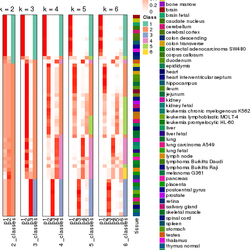
Test correlation between subgroups and known annotations. If the known annotation is numeric, one-way ANOVA test is applied, and if the known annotation is discrete, chi-squared contingency table test is applied.
test_to_known_factors(res)
#> n tissue(p) k
#> CV:kmeans 35 0.373 2
#> CV:kmeans 52 0.372 3
#> CV:kmeans 50 0.416 4
#> CV:kmeans 38 0.404 5
#> CV:kmeans 44 0.393 6
If matrix rows can be associated to genes, consider to use GO_Enrichment(res,
...) to perform function enrichment for the signature genes.
The object with results only for a single top-value method and a single partition method can be extracted as:
res = res_list["CV", "skmeans"]
# you can also extract it by
# res = res_list["CV:skmeans"]
A summary of res and all the functions that can be applied to it:
res
#> A 'ConsensusPartition' object with k = 2, 3, 4, 5, 6.
#> On a matrix with 21452 rows and 54 columns.
#> Top rows (1000, 2000, 3000, 4000, 5000) are extracted by 'CV' method.
#> Subgroups are detected by 'skmeans' method.
#> Performed in total 1250 partitions by row resampling.
#> Best k for subgroups seems to be 4.
#>
#> Following methods can be applied to this 'ConsensusPartition' object:
#> [1] "cola_report" "collect_classes" "collect_plots"
#> [4] "collect_stats" "colnames" "compare_signatures"
#> [7] "consensus_heatmap" "dimension_reduction" "functional_enrichment"
#> [10] "get_anno_col" "get_anno" "get_classes"
#> [13] "get_consensus" "get_matrix" "get_membership"
#> [16] "get_param" "get_signatures" "get_stats"
#> [19] "is_best_k" "is_stable_k" "membership_heatmap"
#> [22] "ncol" "nrow" "plot_ecdf"
#> [25] "rownames" "select_partition_number" "show"
#> [28] "suggest_best_k" "test_to_known_factors"
collect_plots() function collects all the plots made from res for all k (number of partitions)
into one single page to provide an easy and fast comparison between different k.
collect_plots(res)
The plots are:
k and the heatmap of
predicted classes for each k.k.k.k.All the plots in panels can be made by individual functions and they are plotted later in this section.
select_partition_number() produces several plots showing different
statistics for choosing “optimized” k. There are following statistics:
k;k, the area increased is defined as \(A_k - A_{k-1}\).The detailed explanations of these statistics can be found in the cola vignette.
Generally speaking, lower PAC score, higher mean silhouette score or higher
concordance corresponds to better partition. Rand index and Jaccard index
measure how similar the current partition is compared to partition with k-1.
If they are too similar, we won't accept k is better than k-1.
select_partition_number(res)
The numeric values for all these statistics can be obtained by get_stats().
get_stats(res)
#> k 1-PAC mean_silhouette concordance area_increased Rand Jaccard
#> 2 2 0.499 0.870 0.907 0.4953 0.508 0.508
#> 3 3 1.000 0.971 0.988 0.3042 0.757 0.561
#> 4 4 0.900 0.865 0.944 0.1481 0.888 0.694
#> 5 5 0.798 0.655 0.846 0.0840 0.908 0.666
#> 6 6 0.788 0.651 0.816 0.0346 0.909 0.595
suggest_best_k() suggests the best \(k\) based on these statistics. The rules are as follows:
NA.suggest_best_k(res)
#> [1] 4
#> attr(,"optional")
#> [1] 3
There is also optional best \(k\) = 3 that is worth to check.
Following shows the table of the partitions (You need to click the show/hide
code output link to see it). The membership matrix (columns with name p*)
is inferred by
clue::cl_consensus()
function with the SE method. Basically the value in the membership matrix
represents the probability to belong to a certain group. The finall class
label for an item is determined with the group with highest probability it
belongs to.
In get_classes() function, the entropy is calculated from the membership
matrix and the silhouette score is calculated from the consensus matrix.
cbind(get_classes(res, k = 2), get_membership(res, k = 2))
#> class entropy silhouette p1 p2
#> GSM28710 2 0.7139 0.894 0.196 0.804
#> GSM28711 2 0.6623 0.892 0.172 0.828
#> GSM28712 2 0.7139 0.894 0.196 0.804
#> GSM11222 1 0.7139 0.871 0.804 0.196
#> GSM28720 1 0.0672 0.867 0.992 0.008
#> GSM11217 1 0.0672 0.867 0.992 0.008
#> GSM28723 1 0.0672 0.867 0.992 0.008
#> GSM11241 1 0.0672 0.867 0.992 0.008
#> GSM28703 1 0.0672 0.867 0.992 0.008
#> GSM11227 1 0.0672 0.867 0.992 0.008
#> GSM28706 1 0.0672 0.867 0.992 0.008
#> GSM11229 1 0.0672 0.867 0.992 0.008
#> GSM11235 1 0.0672 0.867 0.992 0.008
#> GSM28707 1 0.0672 0.867 0.992 0.008
#> GSM11240 2 0.7139 0.894 0.196 0.804
#> GSM28714 2 0.7139 0.894 0.196 0.804
#> GSM11216 1 0.7139 0.871 0.804 0.196
#> GSM28715 2 0.0000 0.846 0.000 1.000
#> GSM11234 2 0.7139 0.894 0.196 0.804
#> GSM28699 2 0.7139 0.894 0.196 0.804
#> GSM11233 2 0.7139 0.894 0.196 0.804
#> GSM28718 2 0.7139 0.894 0.196 0.804
#> GSM11231 2 0.0000 0.846 0.000 1.000
#> GSM11237 2 0.7139 0.894 0.196 0.804
#> GSM11228 2 0.0672 0.841 0.008 0.992
#> GSM28697 2 0.0672 0.841 0.008 0.992
#> GSM28698 1 0.7139 0.871 0.804 0.196
#> GSM11238 1 0.7139 0.871 0.804 0.196
#> GSM11242 1 0.7139 0.871 0.804 0.196
#> GSM28719 2 0.0672 0.841 0.008 0.992
#> GSM28708 2 0.1184 0.838 0.016 0.984
#> GSM28722 2 0.0000 0.846 0.000 1.000
#> GSM11232 2 0.0672 0.841 0.008 0.992
#> GSM28709 1 0.7139 0.871 0.804 0.196
#> GSM11226 2 0.1184 0.838 0.016 0.984
#> GSM11239 1 0.7139 0.871 0.804 0.196
#> GSM11225 1 0.7139 0.871 0.804 0.196
#> GSM11220 1 0.7139 0.871 0.804 0.196
#> GSM28701 2 0.7299 0.893 0.204 0.796
#> GSM28721 2 0.1184 0.838 0.016 0.984
#> GSM28713 2 0.7139 0.894 0.196 0.804
#> GSM28716 2 0.7139 0.894 0.196 0.804
#> GSM11221 2 0.7139 0.894 0.196 0.804
#> GSM28717 2 0.7139 0.894 0.196 0.804
#> GSM11223 1 0.0672 0.867 0.992 0.008
#> GSM11218 2 0.3879 0.781 0.076 0.924
#> GSM11219 2 0.7139 0.894 0.196 0.804
#> GSM11236 1 0.7139 0.871 0.804 0.196
#> GSM28702 1 0.7139 0.871 0.804 0.196
#> GSM28705 2 0.1184 0.838 0.016 0.984
#> GSM11230 2 0.0000 0.846 0.000 1.000
#> GSM28704 2 0.6712 0.892 0.176 0.824
#> GSM28700 2 0.7139 0.894 0.196 0.804
#> GSM11224 2 0.7139 0.894 0.196 0.804
cbind(get_classes(res, k = 3), get_membership(res, k = 3))
#> class entropy silhouette p1 p2 p3
#> GSM28710 2 0.000 0.977 0 1.000 0.000
#> GSM28711 2 0.000 0.977 0 1.000 0.000
#> GSM28712 2 0.000 0.977 0 1.000 0.000
#> GSM11222 3 0.000 0.994 0 0.000 1.000
#> GSM28720 1 0.000 1.000 1 0.000 0.000
#> GSM11217 1 0.000 1.000 1 0.000 0.000
#> GSM28723 1 0.000 1.000 1 0.000 0.000
#> GSM11241 1 0.000 1.000 1 0.000 0.000
#> GSM28703 1 0.000 1.000 1 0.000 0.000
#> GSM11227 1 0.000 1.000 1 0.000 0.000
#> GSM28706 1 0.000 1.000 1 0.000 0.000
#> GSM11229 1 0.000 1.000 1 0.000 0.000
#> GSM11235 1 0.000 1.000 1 0.000 0.000
#> GSM28707 1 0.000 1.000 1 0.000 0.000
#> GSM11240 2 0.000 0.977 0 1.000 0.000
#> GSM28714 2 0.000 0.977 0 1.000 0.000
#> GSM11216 3 0.000 0.994 0 0.000 1.000
#> GSM28715 2 0.000 0.977 0 1.000 0.000
#> GSM11234 2 0.000 0.977 0 1.000 0.000
#> GSM28699 2 0.000 0.977 0 1.000 0.000
#> GSM11233 2 0.000 0.977 0 1.000 0.000
#> GSM28718 2 0.000 0.977 0 1.000 0.000
#> GSM11231 2 0.000 0.977 0 1.000 0.000
#> GSM11237 2 0.000 0.977 0 1.000 0.000
#> GSM11228 2 0.595 0.450 0 0.640 0.360
#> GSM28697 2 0.000 0.977 0 1.000 0.000
#> GSM28698 3 0.000 0.994 0 0.000 1.000
#> GSM11238 3 0.000 0.994 0 0.000 1.000
#> GSM11242 3 0.000 0.994 0 0.000 1.000
#> GSM28719 2 0.000 0.977 0 1.000 0.000
#> GSM28708 3 0.000 0.994 0 0.000 1.000
#> GSM28722 2 0.000 0.977 0 1.000 0.000
#> GSM11232 2 0.450 0.753 0 0.804 0.196
#> GSM28709 3 0.000 0.994 0 0.000 1.000
#> GSM11226 3 0.000 0.994 0 0.000 1.000
#> GSM11239 3 0.000 0.994 0 0.000 1.000
#> GSM11225 3 0.000 0.994 0 0.000 1.000
#> GSM11220 3 0.000 0.994 0 0.000 1.000
#> GSM28701 2 0.000 0.977 0 1.000 0.000
#> GSM28721 3 0.000 0.994 0 0.000 1.000
#> GSM28713 2 0.000 0.977 0 1.000 0.000
#> GSM28716 1 0.000 1.000 1 0.000 0.000
#> GSM11221 2 0.000 0.977 0 1.000 0.000
#> GSM28717 2 0.000 0.977 0 1.000 0.000
#> GSM11223 1 0.000 1.000 1 0.000 0.000
#> GSM11218 3 0.000 0.994 0 0.000 1.000
#> GSM11219 2 0.000 0.977 0 1.000 0.000
#> GSM11236 3 0.000 0.994 0 0.000 1.000
#> GSM28702 3 0.000 0.994 0 0.000 1.000
#> GSM28705 3 0.245 0.904 0 0.076 0.924
#> GSM11230 2 0.000 0.977 0 1.000 0.000
#> GSM28704 2 0.000 0.977 0 1.000 0.000
#> GSM28700 2 0.000 0.977 0 1.000 0.000
#> GSM11224 2 0.000 0.977 0 1.000 0.000
cbind(get_classes(res, k = 4), get_membership(res, k = 4))
#> class entropy silhouette p1 p2 p3 p4
#> GSM28710 2 0.0336 0.951 0 0.992 0.000 0.008
#> GSM28711 2 0.0188 0.952 0 0.996 0.000 0.004
#> GSM28712 2 0.0469 0.953 0 0.988 0.000 0.012
#> GSM11222 3 0.0000 0.891 0 0.000 1.000 0.000
#> GSM28720 1 0.0000 1.000 1 0.000 0.000 0.000
#> GSM11217 1 0.0000 1.000 1 0.000 0.000 0.000
#> GSM28723 1 0.0000 1.000 1 0.000 0.000 0.000
#> GSM11241 1 0.0000 1.000 1 0.000 0.000 0.000
#> GSM28703 1 0.0000 1.000 1 0.000 0.000 0.000
#> GSM11227 1 0.0000 1.000 1 0.000 0.000 0.000
#> GSM28706 1 0.0000 1.000 1 0.000 0.000 0.000
#> GSM11229 1 0.0000 1.000 1 0.000 0.000 0.000
#> GSM11235 1 0.0000 1.000 1 0.000 0.000 0.000
#> GSM28707 1 0.0000 1.000 1 0.000 0.000 0.000
#> GSM11240 2 0.0469 0.953 0 0.988 0.000 0.012
#> GSM28714 2 0.0469 0.953 0 0.988 0.000 0.012
#> GSM11216 3 0.0000 0.891 0 0.000 1.000 0.000
#> GSM28715 2 0.0469 0.953 0 0.988 0.000 0.012
#> GSM11234 2 0.3907 0.690 0 0.768 0.000 0.232
#> GSM28699 2 0.0336 0.951 0 0.992 0.000 0.008
#> GSM11233 2 0.0707 0.951 0 0.980 0.000 0.020
#> GSM28718 2 0.0469 0.953 0 0.988 0.000 0.012
#> GSM11231 4 0.4843 0.315 0 0.396 0.000 0.604
#> GSM11237 2 0.0469 0.953 0 0.988 0.000 0.012
#> GSM11228 4 0.0592 0.826 0 0.000 0.016 0.984
#> GSM28697 4 0.0469 0.827 0 0.012 0.000 0.988
#> GSM28698 3 0.0000 0.891 0 0.000 1.000 0.000
#> GSM11238 3 0.0000 0.891 0 0.000 1.000 0.000
#> GSM11242 3 0.0000 0.891 0 0.000 1.000 0.000
#> GSM28719 4 0.0000 0.829 0 0.000 0.000 1.000
#> GSM28708 4 0.0707 0.823 0 0.000 0.020 0.980
#> GSM28722 2 0.4697 0.428 0 0.644 0.000 0.356
#> GSM11232 4 0.0336 0.828 0 0.008 0.000 0.992
#> GSM28709 3 0.0000 0.891 0 0.000 1.000 0.000
#> GSM11226 3 0.4072 0.663 0 0.000 0.748 0.252
#> GSM11239 3 0.0000 0.891 0 0.000 1.000 0.000
#> GSM11225 3 0.0000 0.891 0 0.000 1.000 0.000
#> GSM11220 3 0.0000 0.891 0 0.000 1.000 0.000
#> GSM28701 4 0.2814 0.754 0 0.132 0.000 0.868
#> GSM28721 3 0.4817 0.406 0 0.000 0.612 0.388
#> GSM28713 2 0.0469 0.947 0 0.988 0.000 0.012
#> GSM28716 1 0.0000 1.000 1 0.000 0.000 0.000
#> GSM11221 2 0.0188 0.951 0 0.996 0.000 0.004
#> GSM28717 2 0.0336 0.951 0 0.992 0.000 0.008
#> GSM11223 1 0.0000 1.000 1 0.000 0.000 0.000
#> GSM11218 3 0.3975 0.679 0 0.000 0.760 0.240
#> GSM11219 2 0.0469 0.953 0 0.988 0.000 0.012
#> GSM11236 3 0.4679 0.399 0 0.000 0.648 0.352
#> GSM28702 3 0.0000 0.891 0 0.000 1.000 0.000
#> GSM28705 4 0.4679 0.291 0 0.000 0.352 0.648
#> GSM11230 2 0.0469 0.953 0 0.988 0.000 0.012
#> GSM28704 2 0.2081 0.879 0 0.916 0.000 0.084
#> GSM28700 2 0.0336 0.951 0 0.992 0.000 0.008
#> GSM11224 2 0.0000 0.952 0 1.000 0.000 0.000
cbind(get_classes(res, k = 5), get_membership(res, k = 5))
#> class entropy silhouette p1 p2 p3 p4 p5
#> GSM28710 5 0.3081 0.5856 0.000 0.156 0.000 0.012 0.832
#> GSM28711 5 0.5039 0.1562 0.000 0.456 0.000 0.032 0.512
#> GSM28712 2 0.3707 0.2495 0.000 0.716 0.000 0.000 0.284
#> GSM11222 3 0.0324 0.8494 0.000 0.000 0.992 0.004 0.004
#> GSM28720 1 0.0000 0.9857 1.000 0.000 0.000 0.000 0.000
#> GSM11217 1 0.0000 0.9857 1.000 0.000 0.000 0.000 0.000
#> GSM28723 1 0.0000 0.9857 1.000 0.000 0.000 0.000 0.000
#> GSM11241 1 0.0000 0.9857 1.000 0.000 0.000 0.000 0.000
#> GSM28703 1 0.0000 0.9857 1.000 0.000 0.000 0.000 0.000
#> GSM11227 1 0.0000 0.9857 1.000 0.000 0.000 0.000 0.000
#> GSM28706 1 0.0000 0.9857 1.000 0.000 0.000 0.000 0.000
#> GSM11229 1 0.0000 0.9857 1.000 0.000 0.000 0.000 0.000
#> GSM11235 1 0.0000 0.9857 1.000 0.000 0.000 0.000 0.000
#> GSM28707 1 0.0000 0.9857 1.000 0.000 0.000 0.000 0.000
#> GSM11240 2 0.0000 0.6764 0.000 1.000 0.000 0.000 0.000
#> GSM28714 2 0.0000 0.6764 0.000 1.000 0.000 0.000 0.000
#> GSM11216 3 0.0162 0.8510 0.000 0.000 0.996 0.000 0.004
#> GSM28715 2 0.1197 0.6666 0.000 0.952 0.000 0.000 0.048
#> GSM11234 5 0.3037 0.5687 0.000 0.100 0.000 0.040 0.860
#> GSM28699 5 0.3612 0.5430 0.000 0.268 0.000 0.000 0.732
#> GSM11233 2 0.4273 -0.1340 0.000 0.552 0.000 0.000 0.448
#> GSM28718 2 0.0000 0.6764 0.000 1.000 0.000 0.000 0.000
#> GSM11231 2 0.4114 0.2761 0.000 0.624 0.000 0.376 0.000
#> GSM11237 2 0.0000 0.6764 0.000 1.000 0.000 0.000 0.000
#> GSM11228 4 0.0290 0.8869 0.000 0.000 0.000 0.992 0.008
#> GSM28697 4 0.0290 0.8869 0.000 0.000 0.000 0.992 0.008
#> GSM28698 3 0.0000 0.8520 0.000 0.000 1.000 0.000 0.000
#> GSM11238 3 0.0000 0.8520 0.000 0.000 1.000 0.000 0.000
#> GSM11242 3 0.0000 0.8520 0.000 0.000 1.000 0.000 0.000
#> GSM28719 4 0.0566 0.8827 0.000 0.004 0.000 0.984 0.012
#> GSM28708 4 0.0324 0.8840 0.000 0.004 0.000 0.992 0.004
#> GSM28722 2 0.6386 0.0237 0.000 0.460 0.000 0.172 0.368
#> GSM11232 4 0.2020 0.8355 0.000 0.000 0.000 0.900 0.100
#> GSM28709 3 0.0162 0.8510 0.000 0.000 0.996 0.000 0.004
#> GSM11226 3 0.5264 0.2774 0.000 0.000 0.556 0.392 0.052
#> GSM11239 3 0.0000 0.8520 0.000 0.000 1.000 0.000 0.000
#> GSM11225 3 0.0000 0.8520 0.000 0.000 1.000 0.000 0.000
#> GSM11220 3 0.0162 0.8510 0.000 0.000 0.996 0.000 0.004
#> GSM28701 5 0.5351 0.0346 0.000 0.052 0.000 0.464 0.484
#> GSM28721 3 0.5344 0.1137 0.000 0.000 0.500 0.448 0.052
#> GSM28713 5 0.4040 0.4702 0.000 0.276 0.000 0.012 0.712
#> GSM28716 1 0.2648 0.8206 0.848 0.000 0.000 0.000 0.152
#> GSM11221 5 0.4537 0.2802 0.000 0.396 0.000 0.012 0.592
#> GSM28717 5 0.3636 0.5394 0.000 0.272 0.000 0.000 0.728
#> GSM11223 1 0.0000 0.9857 1.000 0.000 0.000 0.000 0.000
#> GSM11218 3 0.5037 0.3365 0.000 0.000 0.584 0.376 0.040
#> GSM11219 2 0.1792 0.6470 0.000 0.916 0.000 0.000 0.084
#> GSM11236 3 0.3838 0.5150 0.000 0.000 0.716 0.280 0.004
#> GSM28702 3 0.0324 0.8494 0.000 0.000 0.992 0.004 0.004
#> GSM28705 4 0.5639 0.4477 0.000 0.000 0.260 0.616 0.124
#> GSM11230 2 0.1908 0.6379 0.000 0.908 0.000 0.000 0.092
#> GSM28704 2 0.4590 0.1207 0.000 0.568 0.000 0.012 0.420
#> GSM28700 5 0.3949 0.5433 0.000 0.300 0.000 0.004 0.696
#> GSM11224 5 0.4450 0.2139 0.000 0.488 0.000 0.004 0.508
cbind(get_classes(res, k = 6), get_membership(res, k = 6))
#> class entropy silhouette p1 p2 p3 p4 p5 p6
#> GSM28710 5 0.2842 0.588 0.00 0.076 0.000 0.012 0.868 0.044
#> GSM28711 5 0.6560 0.243 0.00 0.300 0.000 0.040 0.452 0.208
#> GSM28712 2 0.4535 0.243 0.00 0.644 0.000 0.000 0.296 0.060
#> GSM11222 3 0.2320 0.816 0.00 0.000 0.864 0.004 0.000 0.132
#> GSM28720 1 0.0000 0.977 1.00 0.000 0.000 0.000 0.000 0.000
#> GSM11217 1 0.0000 0.977 1.00 0.000 0.000 0.000 0.000 0.000
#> GSM28723 1 0.0000 0.977 1.00 0.000 0.000 0.000 0.000 0.000
#> GSM11241 1 0.0000 0.977 1.00 0.000 0.000 0.000 0.000 0.000
#> GSM28703 1 0.0000 0.977 1.00 0.000 0.000 0.000 0.000 0.000
#> GSM11227 1 0.0000 0.977 1.00 0.000 0.000 0.000 0.000 0.000
#> GSM28706 1 0.0000 0.977 1.00 0.000 0.000 0.000 0.000 0.000
#> GSM11229 1 0.0000 0.977 1.00 0.000 0.000 0.000 0.000 0.000
#> GSM11235 1 0.0000 0.977 1.00 0.000 0.000 0.000 0.000 0.000
#> GSM28707 1 0.0000 0.977 1.00 0.000 0.000 0.000 0.000 0.000
#> GSM11240 2 0.0000 0.781 0.00 1.000 0.000 0.000 0.000 0.000
#> GSM28714 2 0.0000 0.781 0.00 1.000 0.000 0.000 0.000 0.000
#> GSM11216 3 0.0146 0.924 0.00 0.000 0.996 0.000 0.000 0.004
#> GSM28715 2 0.1382 0.763 0.00 0.948 0.000 0.008 0.036 0.008
#> GSM11234 5 0.4790 0.491 0.00 0.032 0.000 0.036 0.660 0.272
#> GSM28699 5 0.2597 0.567 0.00 0.176 0.000 0.000 0.824 0.000
#> GSM11233 5 0.3765 0.300 0.00 0.404 0.000 0.000 0.596 0.000
#> GSM28718 2 0.0000 0.781 0.00 1.000 0.000 0.000 0.000 0.000
#> GSM11231 4 0.4096 0.086 0.00 0.484 0.000 0.508 0.008 0.000
#> GSM11237 2 0.0000 0.781 0.00 1.000 0.000 0.000 0.000 0.000
#> GSM11228 4 0.1245 0.700 0.00 0.000 0.000 0.952 0.016 0.032
#> GSM28697 4 0.1745 0.697 0.00 0.000 0.000 0.924 0.020 0.056
#> GSM28698 3 0.0000 0.925 0.00 0.000 1.000 0.000 0.000 0.000
#> GSM11238 3 0.0260 0.925 0.00 0.000 0.992 0.000 0.000 0.008
#> GSM11242 3 0.0260 0.925 0.00 0.000 0.992 0.000 0.000 0.008
#> GSM28719 4 0.0520 0.702 0.00 0.000 0.000 0.984 0.008 0.008
#> GSM28708 4 0.0632 0.697 0.00 0.000 0.000 0.976 0.000 0.024
#> GSM28722 6 0.6184 -0.105 0.00 0.212 0.000 0.048 0.180 0.560
#> GSM11232 4 0.5201 0.380 0.00 0.012 0.000 0.604 0.088 0.296
#> GSM28709 3 0.0146 0.924 0.00 0.000 0.996 0.000 0.000 0.004
#> GSM11226 6 0.5340 0.495 0.00 0.000 0.284 0.128 0.004 0.584
#> GSM11239 3 0.0260 0.925 0.00 0.000 0.992 0.000 0.000 0.008
#> GSM11225 3 0.0260 0.925 0.00 0.000 0.992 0.000 0.000 0.008
#> GSM11220 3 0.0146 0.924 0.00 0.000 0.996 0.000 0.000 0.004
#> GSM28701 4 0.5931 0.262 0.00 0.012 0.000 0.508 0.308 0.172
#> GSM28721 6 0.5377 0.493 0.00 0.000 0.272 0.156 0.000 0.572
#> GSM28713 5 0.6141 0.352 0.00 0.184 0.000 0.016 0.464 0.336
#> GSM28716 1 0.3189 0.683 0.76 0.000 0.000 0.000 0.236 0.004
#> GSM11221 5 0.6376 0.278 0.00 0.252 0.000 0.016 0.416 0.316
#> GSM28717 5 0.2562 0.569 0.00 0.172 0.000 0.000 0.828 0.000
#> GSM11223 1 0.0000 0.977 1.00 0.000 0.000 0.000 0.000 0.000
#> GSM11218 6 0.5192 0.462 0.00 0.000 0.308 0.116 0.000 0.576
#> GSM11219 2 0.2258 0.733 0.00 0.896 0.000 0.000 0.060 0.044
#> GSM11236 3 0.4200 0.541 0.00 0.000 0.696 0.264 0.008 0.032
#> GSM28702 3 0.2320 0.816 0.00 0.000 0.864 0.004 0.000 0.132
#> GSM28705 6 0.4817 0.372 0.00 0.000 0.112 0.196 0.008 0.684
#> GSM11230 2 0.3644 0.625 0.00 0.792 0.000 0.000 0.088 0.120
#> GSM28704 6 0.6327 -0.287 0.00 0.364 0.000 0.016 0.220 0.400
#> GSM28700 5 0.5126 0.501 0.00 0.216 0.000 0.000 0.624 0.160
#> GSM11224 2 0.6000 -0.199 0.00 0.440 0.000 0.004 0.352 0.204
Heatmaps for the consensus matrix. It visualizes the probability of two samples to be in a same group.
consensus_heatmap(res, k = 2)
consensus_heatmap(res, k = 3)
consensus_heatmap(res, k = 4)
consensus_heatmap(res, k = 5)
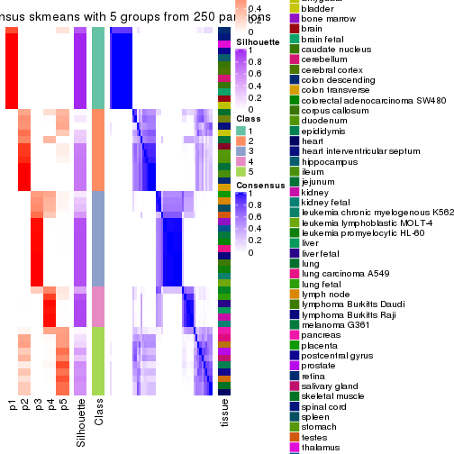
consensus_heatmap(res, k = 6)
Heatmaps for the membership of samples in all partitions to see how consistent they are:
membership_heatmap(res, k = 2)
membership_heatmap(res, k = 3)
membership_heatmap(res, k = 4)
membership_heatmap(res, k = 5)
membership_heatmap(res, k = 6)
As soon as we have had the classes for columns, we can look for signatures which are significantly different between classes which can be candidate marks for certain classes. Following are the heatmaps for signatures.
Signature heatmaps where rows are scaled:
get_signatures(res, k = 2)
get_signatures(res, k = 3)
get_signatures(res, k = 4)
get_signatures(res, k = 5)
get_signatures(res, k = 6)
Signature heatmaps where rows are not scaled:
get_signatures(res, k = 2, scale_rows = FALSE)
get_signatures(res, k = 3, scale_rows = FALSE)
get_signatures(res, k = 4, scale_rows = FALSE)
get_signatures(res, k = 5, scale_rows = FALSE)
get_signatures(res, k = 6, scale_rows = FALSE)
Compare the overlap of signatures from different k:
compare_signatures(res)
get_signature() returns a data frame invisibly. TO get the list of signatures, the function
call should be assigned to a variable explicitly. In following code, if plot argument is set
to FALSE, no heatmap is plotted while only the differential analysis is performed.
# code only for demonstration
tb = get_signature(res, k = ..., plot = FALSE)
An example of the output of tb is:
#> which_row fdr mean_1 mean_2 scaled_mean_1 scaled_mean_2 km
#> 1 38 0.042760348 8.373488 9.131774 -0.5533452 0.5164555 1
#> 2 40 0.018707592 7.106213 8.469186 -0.6173731 0.5762149 1
#> 3 55 0.019134737 10.221463 11.207825 -0.6159697 0.5749050 1
#> 4 59 0.006059896 5.921854 7.869574 -0.6899429 0.6439467 1
#> 5 60 0.018055526 8.928898 10.211722 -0.6204761 0.5791110 1
#> 6 98 0.009384629 15.714769 14.887706 0.6635654 -0.6193277 2
...
The columns in tb are:
which_row: row indices corresponding to the input matrix.fdr: FDR for the differential test. mean_x: The mean value in group x.scaled_mean_x: The mean value in group x after rows are scaled.km: Row groups if k-means clustering is applied to rows.UMAP plot which shows how samples are separated.
dimension_reduction(res, k = 2, method = "UMAP")
dimension_reduction(res, k = 3, method = "UMAP")
dimension_reduction(res, k = 4, method = "UMAP")
dimension_reduction(res, k = 5, method = "UMAP")
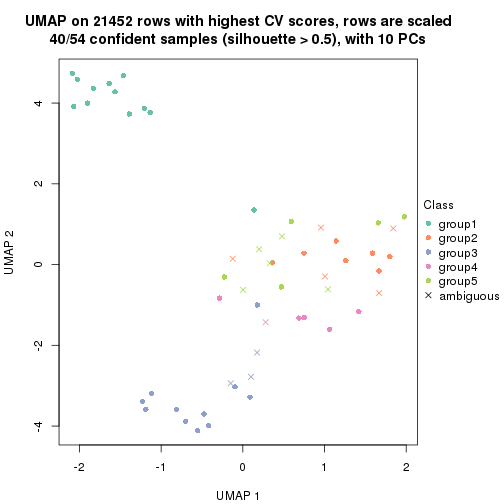
dimension_reduction(res, k = 6, method = "UMAP")

Following heatmap shows how subgroups are split when increasing k:
collect_classes(res)
Test correlation between subgroups and known annotations. If the known annotation is numeric, one-way ANOVA test is applied, and if the known annotation is discrete, chi-squared contingency table test is applied.
test_to_known_factors(res)
#> n tissue(p) k
#> CV:skmeans 54 0.398 2
#> CV:skmeans 53 0.373 3
#> CV:skmeans 49 0.415 4
#> CV:skmeans 40 0.397 5
#> CV:skmeans 38 0.394 6
If matrix rows can be associated to genes, consider to use GO_Enrichment(res,
...) to perform function enrichment for the signature genes.
The object with results only for a single top-value method and a single partition method can be extracted as:
res = res_list["CV", "pam"]
# you can also extract it by
# res = res_list["CV:pam"]
A summary of res and all the functions that can be applied to it:
res
#> A 'ConsensusPartition' object with k = 2, 3, 4, 5, 6.
#> On a matrix with 21452 rows and 54 columns.
#> Top rows (1000, 2000, 3000, 4000, 5000) are extracted by 'CV' method.
#> Subgroups are detected by 'pam' method.
#> Performed in total 1250 partitions by row resampling.
#> Best k for subgroups seems to be 6.
#>
#> Following methods can be applied to this 'ConsensusPartition' object:
#> [1] "cola_report" "collect_classes" "collect_plots"
#> [4] "collect_stats" "colnames" "compare_signatures"
#> [7] "consensus_heatmap" "dimension_reduction" "functional_enrichment"
#> [10] "get_anno_col" "get_anno" "get_classes"
#> [13] "get_consensus" "get_matrix" "get_membership"
#> [16] "get_param" "get_signatures" "get_stats"
#> [19] "is_best_k" "is_stable_k" "membership_heatmap"
#> [22] "ncol" "nrow" "plot_ecdf"
#> [25] "rownames" "select_partition_number" "show"
#> [28] "suggest_best_k" "test_to_known_factors"
collect_plots() function collects all the plots made from res for all k (number of partitions)
into one single page to provide an easy and fast comparison between different k.
collect_plots(res)
The plots are:
k and the heatmap of
predicted classes for each k.k.k.k.All the plots in panels can be made by individual functions and they are plotted later in this section.
select_partition_number() produces several plots showing different
statistics for choosing “optimized” k. There are following statistics:
k;k, the area increased is defined as \(A_k - A_{k-1}\).The detailed explanations of these statistics can be found in the cola vignette.
Generally speaking, lower PAC score, higher mean silhouette score or higher
concordance corresponds to better partition. Rand index and Jaccard index
measure how similar the current partition is compared to partition with k-1.
If they are too similar, we won't accept k is better than k-1.
select_partition_number(res)
The numeric values for all these statistics can be obtained by get_stats().
get_stats(res)
#> k 1-PAC mean_silhouette concordance area_increased Rand Jaccard
#> 2 2 0.744 0.802 0.929 0.4147 0.591 0.591
#> 3 3 0.835 0.891 0.957 0.4740 0.709 0.541
#> 4 4 0.780 0.825 0.915 0.1942 0.868 0.662
#> 5 5 0.857 0.880 0.915 0.0895 0.899 0.645
#> 6 6 0.905 0.887 0.931 0.0313 0.976 0.884
suggest_best_k() suggests the best \(k\) based on these statistics. The rules are as follows:
NA.suggest_best_k(res)
#> [1] 6
Following shows the table of the partitions (You need to click the show/hide
code output link to see it). The membership matrix (columns with name p*)
is inferred by
clue::cl_consensus()
function with the SE method. Basically the value in the membership matrix
represents the probability to belong to a certain group. The finall class
label for an item is determined with the group with highest probability it
belongs to.
In get_classes() function, the entropy is calculated from the membership
matrix and the silhouette score is calculated from the consensus matrix.
cbind(get_classes(res, k = 2), get_membership(res, k = 2))
#> class entropy silhouette p1 p2
#> GSM28710 2 0.000 0.9291 0.000 1.000
#> GSM28711 2 0.000 0.9291 0.000 1.000
#> GSM28712 2 0.000 0.9291 0.000 1.000
#> GSM11222 2 0.000 0.9291 0.000 1.000
#> GSM28720 1 0.000 0.8701 1.000 0.000
#> GSM11217 1 0.000 0.8701 1.000 0.000
#> GSM28723 1 0.000 0.8701 1.000 0.000
#> GSM11241 1 0.000 0.8701 1.000 0.000
#> GSM28703 1 0.000 0.8701 1.000 0.000
#> GSM11227 1 0.000 0.8701 1.000 0.000
#> GSM28706 1 0.000 0.8701 1.000 0.000
#> GSM11229 1 0.000 0.8701 1.000 0.000
#> GSM11235 1 0.000 0.8701 1.000 0.000
#> GSM28707 1 0.000 0.8701 1.000 0.000
#> GSM11240 2 0.000 0.9291 0.000 1.000
#> GSM28714 2 0.000 0.9291 0.000 1.000
#> GSM11216 1 0.978 0.3103 0.588 0.412
#> GSM28715 2 0.000 0.9291 0.000 1.000
#> GSM11234 2 0.000 0.9291 0.000 1.000
#> GSM28699 2 0.760 0.6382 0.220 0.780
#> GSM11233 2 0.000 0.9291 0.000 1.000
#> GSM28718 2 0.000 0.9291 0.000 1.000
#> GSM11231 2 0.000 0.9291 0.000 1.000
#> GSM11237 2 0.000 0.9291 0.000 1.000
#> GSM11228 2 0.000 0.9291 0.000 1.000
#> GSM28697 2 0.000 0.9291 0.000 1.000
#> GSM28698 1 0.987 0.2530 0.568 0.432
#> GSM11238 2 0.990 0.1391 0.440 0.560
#> GSM11242 2 0.814 0.5966 0.252 0.748
#> GSM28719 2 0.000 0.9291 0.000 1.000
#> GSM28708 2 0.000 0.9291 0.000 1.000
#> GSM28722 2 0.000 0.9291 0.000 1.000
#> GSM11232 2 0.000 0.9291 0.000 1.000
#> GSM28709 2 0.993 0.0972 0.452 0.548
#> GSM11226 2 0.000 0.9291 0.000 1.000
#> GSM11239 2 0.983 0.1894 0.424 0.576
#> GSM11225 2 0.991 0.1256 0.444 0.556
#> GSM11220 1 0.891 0.5317 0.692 0.308
#> GSM28701 2 0.000 0.9291 0.000 1.000
#> GSM28721 2 0.000 0.9291 0.000 1.000
#> GSM28713 2 0.000 0.9291 0.000 1.000
#> GSM28716 1 0.990 0.1980 0.560 0.440
#> GSM11221 2 0.000 0.9291 0.000 1.000
#> GSM28717 2 0.000 0.9291 0.000 1.000
#> GSM11223 1 0.000 0.8701 1.000 0.000
#> GSM11218 2 0.000 0.9291 0.000 1.000
#> GSM11219 2 0.000 0.9291 0.000 1.000
#> GSM11236 2 0.000 0.9291 0.000 1.000
#> GSM28702 2 0.000 0.9291 0.000 1.000
#> GSM28705 2 0.000 0.9291 0.000 1.000
#> GSM11230 2 0.000 0.9291 0.000 1.000
#> GSM28704 2 0.000 0.9291 0.000 1.000
#> GSM28700 2 0.000 0.9291 0.000 1.000
#> GSM11224 2 0.000 0.9291 0.000 1.000
cbind(get_classes(res, k = 3), get_membership(res, k = 3))
#> class entropy silhouette p1 p2 p3
#> GSM28710 2 0.000 0.9528 0.0 1.000 0.000
#> GSM28711 2 0.000 0.9528 0.0 1.000 0.000
#> GSM28712 2 0.000 0.9528 0.0 1.000 0.000
#> GSM11222 3 0.000 0.8801 0.0 0.000 1.000
#> GSM28720 1 0.000 1.0000 1.0 0.000 0.000
#> GSM11217 1 0.000 1.0000 1.0 0.000 0.000
#> GSM28723 1 0.000 1.0000 1.0 0.000 0.000
#> GSM11241 1 0.000 1.0000 1.0 0.000 0.000
#> GSM28703 1 0.000 1.0000 1.0 0.000 0.000
#> GSM11227 1 0.000 1.0000 1.0 0.000 0.000
#> GSM28706 1 0.000 1.0000 1.0 0.000 0.000
#> GSM11229 1 0.000 1.0000 1.0 0.000 0.000
#> GSM11235 1 0.000 1.0000 1.0 0.000 0.000
#> GSM28707 1 0.000 1.0000 1.0 0.000 0.000
#> GSM11240 2 0.000 0.9528 0.0 1.000 0.000
#> GSM28714 2 0.000 0.9528 0.0 1.000 0.000
#> GSM11216 3 0.000 0.8801 0.0 0.000 1.000
#> GSM28715 2 0.000 0.9528 0.0 1.000 0.000
#> GSM11234 2 0.000 0.9528 0.0 1.000 0.000
#> GSM28699 2 0.000 0.9528 0.0 1.000 0.000
#> GSM11233 2 0.000 0.9528 0.0 1.000 0.000
#> GSM28718 2 0.000 0.9528 0.0 1.000 0.000
#> GSM11231 2 0.000 0.9528 0.0 1.000 0.000
#> GSM11237 2 0.000 0.9528 0.0 1.000 0.000
#> GSM11228 2 0.382 0.7858 0.0 0.852 0.148
#> GSM28697 2 0.000 0.9528 0.0 1.000 0.000
#> GSM28698 3 0.000 0.8801 0.0 0.000 1.000
#> GSM11238 3 0.000 0.8801 0.0 0.000 1.000
#> GSM11242 3 0.000 0.8801 0.0 0.000 1.000
#> GSM28719 2 0.000 0.9528 0.0 1.000 0.000
#> GSM28708 3 0.546 0.6632 0.0 0.288 0.712
#> GSM28722 2 0.000 0.9528 0.0 1.000 0.000
#> GSM11232 2 0.000 0.9528 0.0 1.000 0.000
#> GSM28709 3 0.000 0.8801 0.0 0.000 1.000
#> GSM11226 3 0.546 0.6632 0.0 0.288 0.712
#> GSM11239 3 0.000 0.8801 0.0 0.000 1.000
#> GSM11225 3 0.000 0.8801 0.0 0.000 1.000
#> GSM11220 3 0.000 0.8801 0.0 0.000 1.000
#> GSM28701 2 0.000 0.9528 0.0 1.000 0.000
#> GSM28721 3 0.546 0.6632 0.0 0.288 0.712
#> GSM28713 2 0.000 0.9528 0.0 1.000 0.000
#> GSM28716 2 0.631 0.0495 0.5 0.500 0.000
#> GSM11221 2 0.000 0.9528 0.0 1.000 0.000
#> GSM28717 2 0.000 0.9528 0.0 1.000 0.000
#> GSM11223 1 0.000 1.0000 1.0 0.000 0.000
#> GSM11218 3 0.546 0.6632 0.0 0.288 0.712
#> GSM11219 2 0.000 0.9528 0.0 1.000 0.000
#> GSM11236 2 0.341 0.8182 0.0 0.876 0.124
#> GSM28702 3 0.000 0.8801 0.0 0.000 1.000
#> GSM28705 2 0.615 0.1994 0.0 0.592 0.408
#> GSM11230 2 0.000 0.9528 0.0 1.000 0.000
#> GSM28704 2 0.000 0.9528 0.0 1.000 0.000
#> GSM28700 2 0.000 0.9528 0.0 1.000 0.000
#> GSM11224 2 0.000 0.9528 0.0 1.000 0.000
cbind(get_classes(res, k = 4), get_membership(res, k = 4))
#> class entropy silhouette p1 p2 p3 p4
#> GSM28710 4 0.0000 0.891 0.000 0.000 0.000 1.000
#> GSM28711 4 0.4730 0.253 0.000 0.364 0.000 0.636
#> GSM28712 4 0.0336 0.887 0.000 0.008 0.000 0.992
#> GSM11222 3 0.0000 0.870 0.000 0.000 1.000 0.000
#> GSM28720 1 0.0000 1.000 1.000 0.000 0.000 0.000
#> GSM11217 1 0.0000 1.000 1.000 0.000 0.000 0.000
#> GSM28723 1 0.0000 1.000 1.000 0.000 0.000 0.000
#> GSM11241 1 0.0000 1.000 1.000 0.000 0.000 0.000
#> GSM28703 1 0.0000 1.000 1.000 0.000 0.000 0.000
#> GSM11227 1 0.0000 1.000 1.000 0.000 0.000 0.000
#> GSM28706 1 0.0000 1.000 1.000 0.000 0.000 0.000
#> GSM11229 1 0.0000 1.000 1.000 0.000 0.000 0.000
#> GSM11235 1 0.0000 1.000 1.000 0.000 0.000 0.000
#> GSM28707 1 0.0000 1.000 1.000 0.000 0.000 0.000
#> GSM11240 2 0.3266 0.864 0.000 0.832 0.000 0.168
#> GSM28714 2 0.3266 0.864 0.000 0.832 0.000 0.168
#> GSM11216 3 0.0000 0.870 0.000 0.000 1.000 0.000
#> GSM28715 2 0.2149 0.849 0.000 0.912 0.000 0.088
#> GSM11234 4 0.0000 0.891 0.000 0.000 0.000 1.000
#> GSM28699 4 0.0000 0.891 0.000 0.000 0.000 1.000
#> GSM11233 2 0.3688 0.830 0.000 0.792 0.000 0.208
#> GSM28718 2 0.3266 0.864 0.000 0.832 0.000 0.168
#> GSM11231 2 0.0817 0.805 0.000 0.976 0.000 0.024
#> GSM11237 2 0.1637 0.834 0.000 0.940 0.000 0.060
#> GSM11228 4 0.4149 0.782 0.000 0.168 0.028 0.804
#> GSM28697 4 0.1022 0.879 0.000 0.032 0.000 0.968
#> GSM28698 3 0.0000 0.870 0.000 0.000 1.000 0.000
#> GSM11238 3 0.0000 0.870 0.000 0.000 1.000 0.000
#> GSM11242 3 0.0000 0.870 0.000 0.000 1.000 0.000
#> GSM28719 4 0.3569 0.783 0.000 0.196 0.000 0.804
#> GSM28708 2 0.4994 -0.131 0.000 0.520 0.480 0.000
#> GSM28722 4 0.0000 0.891 0.000 0.000 0.000 1.000
#> GSM11232 4 0.3024 0.810 0.000 0.148 0.000 0.852
#> GSM28709 3 0.0000 0.870 0.000 0.000 1.000 0.000
#> GSM11226 3 0.5159 0.451 0.000 0.012 0.624 0.364
#> GSM11239 3 0.0000 0.870 0.000 0.000 1.000 0.000
#> GSM11225 3 0.0000 0.870 0.000 0.000 1.000 0.000
#> GSM11220 3 0.0000 0.870 0.000 0.000 1.000 0.000
#> GSM28701 4 0.0000 0.891 0.000 0.000 0.000 1.000
#> GSM28721 3 0.5159 0.451 0.000 0.012 0.624 0.364
#> GSM28713 4 0.0000 0.891 0.000 0.000 0.000 1.000
#> GSM28716 4 0.3837 0.702 0.224 0.000 0.000 0.776
#> GSM11221 4 0.0000 0.891 0.000 0.000 0.000 1.000
#> GSM28717 4 0.0817 0.878 0.000 0.024 0.000 0.976
#> GSM11223 1 0.0000 1.000 1.000 0.000 0.000 0.000
#> GSM11218 3 0.5159 0.451 0.000 0.012 0.624 0.364
#> GSM11219 4 0.2216 0.828 0.000 0.092 0.000 0.908
#> GSM11236 4 0.6922 0.422 0.000 0.168 0.248 0.584
#> GSM28702 3 0.0000 0.870 0.000 0.000 1.000 0.000
#> GSM28705 4 0.4267 0.708 0.000 0.024 0.188 0.788
#> GSM11230 2 0.3266 0.864 0.000 0.832 0.000 0.168
#> GSM28704 4 0.0000 0.891 0.000 0.000 0.000 1.000
#> GSM28700 4 0.0000 0.891 0.000 0.000 0.000 1.000
#> GSM11224 4 0.0000 0.891 0.000 0.000 0.000 1.000
cbind(get_classes(res, k = 5), get_membership(res, k = 5))
#> class entropy silhouette p1 p2 p3 p4 p5
#> GSM28710 2 0.1732 0.892 0.000 0.920 0.000 0.000 0.080
#> GSM28711 4 0.6204 0.396 0.000 0.176 0.000 0.536 0.288
#> GSM28712 2 0.2690 0.851 0.000 0.844 0.000 0.000 0.156
#> GSM11222 4 0.3305 0.797 0.000 0.000 0.224 0.776 0.000
#> GSM28720 1 0.0000 1.000 1.000 0.000 0.000 0.000 0.000
#> GSM11217 1 0.0000 1.000 1.000 0.000 0.000 0.000 0.000
#> GSM28723 1 0.0000 1.000 1.000 0.000 0.000 0.000 0.000
#> GSM11241 1 0.0000 1.000 1.000 0.000 0.000 0.000 0.000
#> GSM28703 1 0.0000 1.000 1.000 0.000 0.000 0.000 0.000
#> GSM11227 1 0.0000 1.000 1.000 0.000 0.000 0.000 0.000
#> GSM28706 1 0.0000 1.000 1.000 0.000 0.000 0.000 0.000
#> GSM11229 1 0.0000 1.000 1.000 0.000 0.000 0.000 0.000
#> GSM11235 1 0.0000 1.000 1.000 0.000 0.000 0.000 0.000
#> GSM28707 1 0.0000 1.000 1.000 0.000 0.000 0.000 0.000
#> GSM11240 5 0.0000 0.942 0.000 0.000 0.000 0.000 1.000
#> GSM28714 5 0.0000 0.942 0.000 0.000 0.000 0.000 1.000
#> GSM11216 3 0.0000 1.000 0.000 0.000 1.000 0.000 0.000
#> GSM28715 5 0.0000 0.942 0.000 0.000 0.000 0.000 1.000
#> GSM11234 2 0.0000 0.873 0.000 1.000 0.000 0.000 0.000
#> GSM28699 2 0.0000 0.873 0.000 1.000 0.000 0.000 0.000
#> GSM11233 5 0.2966 0.814 0.000 0.184 0.000 0.000 0.816
#> GSM28718 5 0.0000 0.942 0.000 0.000 0.000 0.000 1.000
#> GSM11231 5 0.2648 0.841 0.000 0.000 0.000 0.152 0.848
#> GSM11237 5 0.1197 0.915 0.000 0.000 0.000 0.048 0.952
#> GSM11228 2 0.3837 0.668 0.000 0.692 0.000 0.308 0.000
#> GSM28697 2 0.2036 0.891 0.000 0.920 0.000 0.024 0.056
#> GSM28698 3 0.0000 1.000 0.000 0.000 1.000 0.000 0.000
#> GSM11238 3 0.0000 1.000 0.000 0.000 1.000 0.000 0.000
#> GSM11242 3 0.0000 1.000 0.000 0.000 1.000 0.000 0.000
#> GSM28719 4 0.3427 0.608 0.000 0.192 0.000 0.796 0.012
#> GSM28708 4 0.0000 0.756 0.000 0.000 0.000 1.000 0.000
#> GSM28722 2 0.2450 0.888 0.000 0.896 0.000 0.028 0.076
#> GSM11232 2 0.4291 0.335 0.000 0.536 0.000 0.464 0.000
#> GSM28709 3 0.0000 1.000 0.000 0.000 1.000 0.000 0.000
#> GSM11226 4 0.3109 0.811 0.000 0.000 0.200 0.800 0.000
#> GSM11239 3 0.0000 1.000 0.000 0.000 1.000 0.000 0.000
#> GSM11225 3 0.0000 1.000 0.000 0.000 1.000 0.000 0.000
#> GSM11220 3 0.0000 1.000 0.000 0.000 1.000 0.000 0.000
#> GSM28701 2 0.2423 0.889 0.000 0.896 0.000 0.024 0.080
#> GSM28721 4 0.3109 0.811 0.000 0.000 0.200 0.800 0.000
#> GSM28713 2 0.1732 0.892 0.000 0.920 0.000 0.000 0.080
#> GSM28716 2 0.2891 0.736 0.176 0.824 0.000 0.000 0.000
#> GSM11221 2 0.1732 0.892 0.000 0.920 0.000 0.000 0.080
#> GSM28717 2 0.0404 0.872 0.000 0.988 0.000 0.000 0.012
#> GSM11223 1 0.0000 1.000 1.000 0.000 0.000 0.000 0.000
#> GSM11218 4 0.3109 0.811 0.000 0.000 0.200 0.800 0.000
#> GSM11219 2 0.3837 0.690 0.000 0.692 0.000 0.000 0.308
#> GSM11236 4 0.3036 0.774 0.000 0.064 0.028 0.880 0.028
#> GSM28702 4 0.3305 0.797 0.000 0.000 0.224 0.776 0.000
#> GSM28705 4 0.4226 0.790 0.000 0.084 0.140 0.776 0.000
#> GSM11230 5 0.0404 0.936 0.000 0.000 0.000 0.012 0.988
#> GSM28704 2 0.1732 0.892 0.000 0.920 0.000 0.000 0.080
#> GSM28700 2 0.0000 0.873 0.000 1.000 0.000 0.000 0.000
#> GSM11224 2 0.1732 0.892 0.000 0.920 0.000 0.000 0.080
cbind(get_classes(res, k = 6), get_membership(res, k = 6))
#> class entropy silhouette p1 p2 p3 p4 p5 p6
#> GSM28710 2 0.1610 0.885 0.000 0.916 0.000 0.000 0.084 0.000
#> GSM28711 6 0.4255 0.598 0.000 0.068 0.000 0.000 0.224 0.708
#> GSM28712 2 0.2697 0.825 0.000 0.812 0.000 0.000 0.188 0.000
#> GSM11222 6 0.2300 0.795 0.000 0.000 0.144 0.000 0.000 0.856
#> GSM28720 1 0.0000 1.000 1.000 0.000 0.000 0.000 0.000 0.000
#> GSM11217 1 0.0000 1.000 1.000 0.000 0.000 0.000 0.000 0.000
#> GSM28723 1 0.0000 1.000 1.000 0.000 0.000 0.000 0.000 0.000
#> GSM11241 1 0.0000 1.000 1.000 0.000 0.000 0.000 0.000 0.000
#> GSM28703 1 0.0000 1.000 1.000 0.000 0.000 0.000 0.000 0.000
#> GSM11227 1 0.0000 1.000 1.000 0.000 0.000 0.000 0.000 0.000
#> GSM28706 1 0.0000 1.000 1.000 0.000 0.000 0.000 0.000 0.000
#> GSM11229 1 0.0000 1.000 1.000 0.000 0.000 0.000 0.000 0.000
#> GSM11235 1 0.0000 1.000 1.000 0.000 0.000 0.000 0.000 0.000
#> GSM28707 1 0.0000 1.000 1.000 0.000 0.000 0.000 0.000 0.000
#> GSM11240 5 0.0146 0.924 0.000 0.004 0.000 0.000 0.996 0.000
#> GSM28714 5 0.0146 0.924 0.000 0.004 0.000 0.000 0.996 0.000
#> GSM11216 3 0.0717 0.981 0.000 0.000 0.976 0.008 0.000 0.016
#> GSM28715 5 0.0146 0.924 0.000 0.004 0.000 0.000 0.996 0.000
#> GSM11234 2 0.0000 0.864 0.000 1.000 0.000 0.000 0.000 0.000
#> GSM28699 2 0.0146 0.861 0.000 0.996 0.000 0.000 0.004 0.000
#> GSM11233 5 0.2562 0.792 0.000 0.172 0.000 0.000 0.828 0.000
#> GSM28718 5 0.0146 0.924 0.000 0.004 0.000 0.000 0.996 0.000
#> GSM11231 5 0.2854 0.743 0.000 0.000 0.000 0.208 0.792 0.000
#> GSM11237 5 0.1588 0.873 0.000 0.004 0.000 0.072 0.924 0.000
#> GSM11228 4 0.2404 0.881 0.000 0.036 0.000 0.884 0.000 0.080
#> GSM28697 2 0.2052 0.881 0.000 0.912 0.000 0.028 0.056 0.004
#> GSM28698 3 0.0260 0.987 0.000 0.000 0.992 0.000 0.000 0.008
#> GSM11238 3 0.0458 0.986 0.000 0.000 0.984 0.000 0.000 0.016
#> GSM11242 3 0.0260 0.987 0.000 0.000 0.992 0.000 0.000 0.008
#> GSM28719 4 0.0260 0.943 0.000 0.000 0.000 0.992 0.000 0.008
#> GSM28708 4 0.0260 0.943 0.000 0.000 0.000 0.992 0.000 0.008
#> GSM28722 2 0.2122 0.884 0.000 0.900 0.000 0.008 0.084 0.008
#> GSM11232 2 0.5654 0.331 0.000 0.524 0.000 0.192 0.000 0.284
#> GSM28709 3 0.0717 0.981 0.000 0.000 0.976 0.008 0.000 0.016
#> GSM11226 6 0.0363 0.848 0.000 0.000 0.012 0.000 0.000 0.988
#> GSM11239 3 0.0260 0.987 0.000 0.000 0.992 0.000 0.000 0.008
#> GSM11225 3 0.0260 0.987 0.000 0.000 0.992 0.000 0.000 0.008
#> GSM11220 3 0.0717 0.981 0.000 0.000 0.976 0.008 0.000 0.016
#> GSM28701 2 0.3757 0.811 0.000 0.780 0.000 0.136 0.084 0.000
#> GSM28721 6 0.0363 0.848 0.000 0.000 0.012 0.000 0.000 0.988
#> GSM28713 2 0.1753 0.885 0.000 0.912 0.000 0.000 0.084 0.004
#> GSM28716 2 0.2664 0.699 0.184 0.816 0.000 0.000 0.000 0.000
#> GSM11221 2 0.1753 0.885 0.000 0.912 0.000 0.000 0.084 0.004
#> GSM28717 2 0.0363 0.860 0.000 0.988 0.000 0.000 0.012 0.000
#> GSM11223 1 0.0000 1.000 1.000 0.000 0.000 0.000 0.000 0.000
#> GSM11218 6 0.0363 0.848 0.000 0.000 0.012 0.000 0.000 0.988
#> GSM11219 2 0.3499 0.682 0.000 0.680 0.000 0.000 0.320 0.000
#> GSM11236 6 0.4142 0.718 0.000 0.076 0.004 0.136 0.012 0.772
#> GSM28702 6 0.2491 0.779 0.000 0.000 0.164 0.000 0.000 0.836
#> GSM28705 6 0.1411 0.815 0.000 0.060 0.004 0.000 0.000 0.936
#> GSM11230 5 0.0291 0.923 0.000 0.004 0.000 0.000 0.992 0.004
#> GSM28704 2 0.1866 0.885 0.000 0.908 0.000 0.000 0.084 0.008
#> GSM28700 2 0.0000 0.864 0.000 1.000 0.000 0.000 0.000 0.000
#> GSM11224 2 0.1610 0.885 0.000 0.916 0.000 0.000 0.084 0.000
Heatmaps for the consensus matrix. It visualizes the probability of two samples to be in a same group.
consensus_heatmap(res, k = 2)
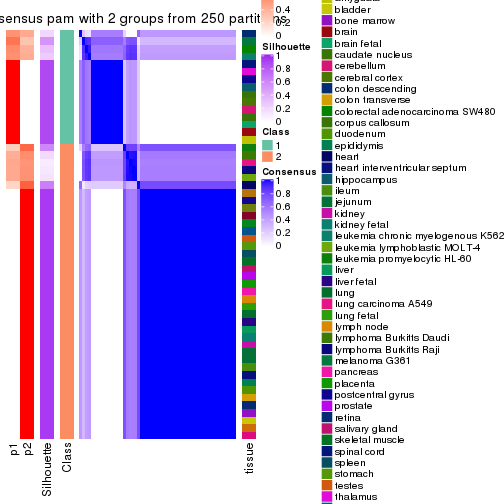
consensus_heatmap(res, k = 3)
consensus_heatmap(res, k = 4)
consensus_heatmap(res, k = 5)
consensus_heatmap(res, k = 6)
Heatmaps for the membership of samples in all partitions to see how consistent they are:
membership_heatmap(res, k = 2)
membership_heatmap(res, k = 3)
membership_heatmap(res, k = 4)
membership_heatmap(res, k = 5)
membership_heatmap(res, k = 6)
As soon as we have had the classes for columns, we can look for signatures which are significantly different between classes which can be candidate marks for certain classes. Following are the heatmaps for signatures.
Signature heatmaps where rows are scaled:
get_signatures(res, k = 2)
get_signatures(res, k = 3)
get_signatures(res, k = 4)
get_signatures(res, k = 5)
get_signatures(res, k = 6)
Signature heatmaps where rows are not scaled:
get_signatures(res, k = 2, scale_rows = FALSE)
get_signatures(res, k = 3, scale_rows = FALSE)
get_signatures(res, k = 4, scale_rows = FALSE)
get_signatures(res, k = 5, scale_rows = FALSE)
get_signatures(res, k = 6, scale_rows = FALSE)
Compare the overlap of signatures from different k:
compare_signatures(res)
get_signature() returns a data frame invisibly. TO get the list of signatures, the function
call should be assigned to a variable explicitly. In following code, if plot argument is set
to FALSE, no heatmap is plotted while only the differential analysis is performed.
# code only for demonstration
tb = get_signature(res, k = ..., plot = FALSE)
An example of the output of tb is:
#> which_row fdr mean_1 mean_2 scaled_mean_1 scaled_mean_2 km
#> 1 38 0.042760348 8.373488 9.131774 -0.5533452 0.5164555 1
#> 2 40 0.018707592 7.106213 8.469186 -0.6173731 0.5762149 1
#> 3 55 0.019134737 10.221463 11.207825 -0.6159697 0.5749050 1
#> 4 59 0.006059896 5.921854 7.869574 -0.6899429 0.6439467 1
#> 5 60 0.018055526 8.928898 10.211722 -0.6204761 0.5791110 1
#> 6 98 0.009384629 15.714769 14.887706 0.6635654 -0.6193277 2
...
The columns in tb are:
which_row: row indices corresponding to the input matrix.fdr: FDR for the differential test. mean_x: The mean value in group x.scaled_mean_x: The mean value in group x after rows are scaled.km: Row groups if k-means clustering is applied to rows.UMAP plot which shows how samples are separated.
dimension_reduction(res, k = 2, method = "UMAP")
dimension_reduction(res, k = 3, method = "UMAP")
dimension_reduction(res, k = 4, method = "UMAP")
dimension_reduction(res, k = 5, method = "UMAP")
dimension_reduction(res, k = 6, method = "UMAP")
Following heatmap shows how subgroups are split when increasing k:
collect_classes(res)

Test correlation between subgroups and known annotations. If the known annotation is numeric, one-way ANOVA test is applied, and if the known annotation is discrete, chi-squared contingency table test is applied.
test_to_known_factors(res)
#> n tissue(p) k
#> CV:pam 47 0.391 2
#> CV:pam 52 0.372 3
#> CV:pam 48 0.346 4
#> CV:pam 52 0.334 5
#> CV:pam 53 0.320 6
If matrix rows can be associated to genes, consider to use GO_Enrichment(res,
...) to perform function enrichment for the signature genes.
The object with results only for a single top-value method and a single partition method can be extracted as:
res = res_list["CV", "mclust"]
# you can also extract it by
# res = res_list["CV:mclust"]
A summary of res and all the functions that can be applied to it:
res
#> A 'ConsensusPartition' object with k = 2, 3, 4, 5, 6.
#> On a matrix with 21452 rows and 54 columns.
#> Top rows (1000, 2000, 3000, 4000, 5000) are extracted by 'CV' method.
#> Subgroups are detected by 'mclust' method.
#> Performed in total 1250 partitions by row resampling.
#> Best k for subgroups seems to be 3.
#>
#> Following methods can be applied to this 'ConsensusPartition' object:
#> [1] "cola_report" "collect_classes" "collect_plots"
#> [4] "collect_stats" "colnames" "compare_signatures"
#> [7] "consensus_heatmap" "dimension_reduction" "functional_enrichment"
#> [10] "get_anno_col" "get_anno" "get_classes"
#> [13] "get_consensus" "get_matrix" "get_membership"
#> [16] "get_param" "get_signatures" "get_stats"
#> [19] "is_best_k" "is_stable_k" "membership_heatmap"
#> [22] "ncol" "nrow" "plot_ecdf"
#> [25] "rownames" "select_partition_number" "show"
#> [28] "suggest_best_k" "test_to_known_factors"
collect_plots() function collects all the plots made from res for all k (number of partitions)
into one single page to provide an easy and fast comparison between different k.
collect_plots(res)
The plots are:
k and the heatmap of
predicted classes for each k.k.k.k.All the plots in panels can be made by individual functions and they are plotted later in this section.
select_partition_number() produces several plots showing different
statistics for choosing “optimized” k. There are following statistics:
k;k, the area increased is defined as \(A_k - A_{k-1}\).The detailed explanations of these statistics can be found in the cola vignette.
Generally speaking, lower PAC score, higher mean silhouette score or higher
concordance corresponds to better partition. Rand index and Jaccard index
measure how similar the current partition is compared to partition with k-1.
If they are too similar, we won't accept k is better than k-1.
select_partition_number(res)
The numeric values for all these statistics can be obtained by get_stats().
get_stats(res)
#> k 1-PAC mean_silhouette concordance area_increased Rand Jaccard
#> 2 2 0.527 0.896 0.928 0.3659 0.648 0.648
#> 3 3 0.791 0.902 0.947 0.5383 0.778 0.670
#> 4 4 0.710 0.795 0.855 0.2966 0.767 0.519
#> 5 5 0.748 0.799 0.852 0.0704 0.895 0.627
#> 6 6 0.751 0.510 0.740 0.0502 0.886 0.529
suggest_best_k() suggests the best \(k\) based on these statistics. The rules are as follows:
NA.suggest_best_k(res)
#> [1] 3
Following shows the table of the partitions (You need to click the show/hide
code output link to see it). The membership matrix (columns with name p*)
is inferred by
clue::cl_consensus()
function with the SE method. Basically the value in the membership matrix
represents the probability to belong to a certain group. The finall class
label for an item is determined with the group with highest probability it
belongs to.
In get_classes() function, the entropy is calculated from the membership
matrix and the silhouette score is calculated from the consensus matrix.
cbind(get_classes(res, k = 2), get_membership(res, k = 2))
#> class entropy silhouette p1 p2
#> GSM28710 2 0.6438 0.8939 0.164 0.836
#> GSM28711 2 0.5519 0.9065 0.128 0.872
#> GSM28712 2 0.6438 0.8939 0.164 0.836
#> GSM11222 2 0.0376 0.9085 0.004 0.996
#> GSM28720 1 0.0000 0.9529 1.000 0.000
#> GSM11217 1 0.0000 0.9529 1.000 0.000
#> GSM28723 1 0.0000 0.9529 1.000 0.000
#> GSM11241 1 0.0000 0.9529 1.000 0.000
#> GSM28703 1 0.0000 0.9529 1.000 0.000
#> GSM11227 1 0.0000 0.9529 1.000 0.000
#> GSM28706 1 0.0000 0.9529 1.000 0.000
#> GSM11229 1 0.0000 0.9529 1.000 0.000
#> GSM11235 1 0.0000 0.9529 1.000 0.000
#> GSM28707 1 0.0000 0.9529 1.000 0.000
#> GSM11240 2 0.6438 0.8939 0.164 0.836
#> GSM28714 2 0.6438 0.8939 0.164 0.836
#> GSM11216 2 0.0376 0.9085 0.004 0.996
#> GSM28715 2 0.6438 0.8939 0.164 0.836
#> GSM11234 2 0.5294 0.9074 0.120 0.880
#> GSM28699 2 0.6438 0.8939 0.164 0.836
#> GSM11233 2 0.6438 0.8939 0.164 0.836
#> GSM28718 2 0.6438 0.8939 0.164 0.836
#> GSM11231 2 0.5737 0.9033 0.136 0.864
#> GSM11237 2 0.6438 0.8939 0.164 0.836
#> GSM11228 2 0.0000 0.9092 0.000 1.000
#> GSM28697 2 0.0000 0.9092 0.000 1.000
#> GSM28698 2 0.0376 0.9085 0.004 0.996
#> GSM11238 2 0.0376 0.9085 0.004 0.996
#> GSM11242 2 0.0376 0.9085 0.004 0.996
#> GSM28719 2 0.0000 0.9092 0.000 1.000
#> GSM28708 2 0.0000 0.9092 0.000 1.000
#> GSM28722 2 0.3879 0.9102 0.076 0.924
#> GSM11232 2 0.0000 0.9092 0.000 1.000
#> GSM28709 2 0.0376 0.9085 0.004 0.996
#> GSM11226 2 0.0000 0.9092 0.000 1.000
#> GSM11239 2 0.0376 0.9085 0.004 0.996
#> GSM11225 2 0.0376 0.9085 0.004 0.996
#> GSM11220 2 0.0376 0.9085 0.004 0.996
#> GSM28701 2 0.6247 0.8973 0.156 0.844
#> GSM28721 2 0.0000 0.9092 0.000 1.000
#> GSM28713 2 0.5408 0.9070 0.124 0.876
#> GSM28716 1 0.9909 -0.0341 0.556 0.444
#> GSM11221 2 0.6438 0.8939 0.164 0.836
#> GSM28717 2 0.6438 0.8939 0.164 0.836
#> GSM11223 1 0.0000 0.9529 1.000 0.000
#> GSM11218 2 0.0000 0.9092 0.000 1.000
#> GSM11219 2 0.6438 0.8939 0.164 0.836
#> GSM11236 2 0.0000 0.9092 0.000 1.000
#> GSM28702 2 0.0376 0.9085 0.004 0.996
#> GSM28705 2 0.0000 0.9092 0.000 1.000
#> GSM11230 2 0.6438 0.8939 0.164 0.836
#> GSM28704 2 0.5737 0.9044 0.136 0.864
#> GSM28700 2 0.5519 0.9064 0.128 0.872
#> GSM11224 2 0.5408 0.9070 0.124 0.876
cbind(get_classes(res, k = 3), get_membership(res, k = 3))
#> class entropy silhouette p1 p2 p3
#> GSM28710 2 0.0000 0.912 0.000 1.000 0.000
#> GSM28711 2 0.0000 0.912 0.000 1.000 0.000
#> GSM28712 2 0.0000 0.912 0.000 1.000 0.000
#> GSM11222 2 0.6126 0.494 0.000 0.600 0.400
#> GSM28720 1 0.0000 1.000 1.000 0.000 0.000
#> GSM11217 1 0.0000 1.000 1.000 0.000 0.000
#> GSM28723 1 0.0000 1.000 1.000 0.000 0.000
#> GSM11241 1 0.0000 1.000 1.000 0.000 0.000
#> GSM28703 1 0.0000 1.000 1.000 0.000 0.000
#> GSM11227 1 0.0000 1.000 1.000 0.000 0.000
#> GSM28706 1 0.0000 1.000 1.000 0.000 0.000
#> GSM11229 1 0.0000 1.000 1.000 0.000 0.000
#> GSM11235 1 0.0000 1.000 1.000 0.000 0.000
#> GSM28707 1 0.0000 1.000 1.000 0.000 0.000
#> GSM11240 2 0.0000 0.912 0.000 1.000 0.000
#> GSM28714 2 0.0000 0.912 0.000 1.000 0.000
#> GSM11216 3 0.0000 0.994 0.000 0.000 1.000
#> GSM28715 2 0.0000 0.912 0.000 1.000 0.000
#> GSM11234 2 0.0424 0.910 0.008 0.992 0.000
#> GSM28699 2 0.0424 0.910 0.008 0.992 0.000
#> GSM11233 2 0.0000 0.912 0.000 1.000 0.000
#> GSM28718 2 0.0000 0.912 0.000 1.000 0.000
#> GSM11231 2 0.0892 0.907 0.000 0.980 0.020
#> GSM11237 2 0.0000 0.912 0.000 1.000 0.000
#> GSM11228 2 0.3038 0.869 0.000 0.896 0.104
#> GSM28697 2 0.2878 0.873 0.000 0.904 0.096
#> GSM28698 3 0.0000 0.994 0.000 0.000 1.000
#> GSM11238 3 0.0000 0.994 0.000 0.000 1.000
#> GSM11242 3 0.0000 0.994 0.000 0.000 1.000
#> GSM28719 2 0.2878 0.873 0.000 0.904 0.096
#> GSM28708 2 0.4887 0.771 0.000 0.772 0.228
#> GSM28722 2 0.0000 0.912 0.000 1.000 0.000
#> GSM11232 2 0.2959 0.871 0.000 0.900 0.100
#> GSM28709 3 0.0000 0.994 0.000 0.000 1.000
#> GSM11226 2 0.4605 0.792 0.000 0.796 0.204
#> GSM11239 3 0.0000 0.994 0.000 0.000 1.000
#> GSM11225 3 0.0000 0.994 0.000 0.000 1.000
#> GSM11220 3 0.1163 0.958 0.000 0.028 0.972
#> GSM28701 2 0.0237 0.912 0.000 0.996 0.004
#> GSM28721 2 0.5178 0.735 0.000 0.744 0.256
#> GSM28713 2 0.0424 0.910 0.008 0.992 0.000
#> GSM28716 2 0.5621 0.532 0.308 0.692 0.000
#> GSM11221 2 0.0000 0.912 0.000 1.000 0.000
#> GSM28717 2 0.0424 0.910 0.008 0.992 0.000
#> GSM11223 1 0.0000 1.000 1.000 0.000 0.000
#> GSM11218 2 0.5016 0.755 0.000 0.760 0.240
#> GSM11219 2 0.0000 0.912 0.000 1.000 0.000
#> GSM11236 2 0.4452 0.806 0.000 0.808 0.192
#> GSM28702 2 0.6008 0.553 0.000 0.628 0.372
#> GSM28705 2 0.4452 0.804 0.000 0.808 0.192
#> GSM11230 2 0.0000 0.912 0.000 1.000 0.000
#> GSM28704 2 0.0000 0.912 0.000 1.000 0.000
#> GSM28700 2 0.0424 0.910 0.008 0.992 0.000
#> GSM11224 2 0.0424 0.910 0.008 0.992 0.000
cbind(get_classes(res, k = 4), get_membership(res, k = 4))
#> class entropy silhouette p1 p2 p3 p4
#> GSM28710 2 0.3837 0.762 0.00 0.776 0.000 0.224
#> GSM28711 2 0.4103 0.737 0.00 0.744 0.000 0.256
#> GSM28712 2 0.1389 0.810 0.00 0.952 0.000 0.048
#> GSM11222 3 0.4624 0.507 0.00 0.000 0.660 0.340
#> GSM28720 1 0.0000 1.000 1.00 0.000 0.000 0.000
#> GSM11217 1 0.0000 1.000 1.00 0.000 0.000 0.000
#> GSM28723 1 0.0000 1.000 1.00 0.000 0.000 0.000
#> GSM11241 1 0.0000 1.000 1.00 0.000 0.000 0.000
#> GSM28703 1 0.0000 1.000 1.00 0.000 0.000 0.000
#> GSM11227 1 0.0000 1.000 1.00 0.000 0.000 0.000
#> GSM28706 1 0.0000 1.000 1.00 0.000 0.000 0.000
#> GSM11229 1 0.0000 1.000 1.00 0.000 0.000 0.000
#> GSM11235 1 0.0000 1.000 1.00 0.000 0.000 0.000
#> GSM28707 1 0.0000 1.000 1.00 0.000 0.000 0.000
#> GSM11240 2 0.1637 0.788 0.00 0.940 0.000 0.060
#> GSM28714 2 0.1637 0.788 0.00 0.940 0.000 0.060
#> GSM11216 3 0.0000 0.913 0.00 0.000 1.000 0.000
#> GSM28715 2 0.3266 0.804 0.00 0.832 0.000 0.168
#> GSM11234 2 0.4998 0.208 0.00 0.512 0.000 0.488
#> GSM28699 2 0.1792 0.816 0.00 0.932 0.000 0.068
#> GSM11233 2 0.1867 0.793 0.00 0.928 0.000 0.072
#> GSM28718 2 0.1637 0.788 0.00 0.940 0.000 0.060
#> GSM11231 2 0.4103 0.739 0.00 0.744 0.000 0.256
#> GSM11237 2 0.2081 0.776 0.00 0.916 0.000 0.084
#> GSM11228 4 0.2124 0.830 0.00 0.028 0.040 0.932
#> GSM28697 4 0.2345 0.784 0.00 0.100 0.000 0.900
#> GSM28698 3 0.0000 0.913 0.00 0.000 1.000 0.000
#> GSM11238 3 0.0000 0.913 0.00 0.000 1.000 0.000
#> GSM11242 3 0.0000 0.913 0.00 0.000 1.000 0.000
#> GSM28719 4 0.0921 0.810 0.00 0.028 0.000 0.972
#> GSM28708 4 0.2011 0.816 0.00 0.000 0.080 0.920
#> GSM28722 4 0.4564 0.407 0.00 0.328 0.000 0.672
#> GSM11232 4 0.1389 0.813 0.00 0.048 0.000 0.952
#> GSM28709 3 0.0188 0.910 0.00 0.000 0.996 0.004
#> GSM11226 4 0.2921 0.804 0.00 0.000 0.140 0.860
#> GSM11239 3 0.0000 0.913 0.00 0.000 1.000 0.000
#> GSM11225 3 0.0000 0.913 0.00 0.000 1.000 0.000
#> GSM11220 3 0.0336 0.909 0.00 0.000 0.992 0.008
#> GSM28701 4 0.4977 -0.199 0.00 0.460 0.000 0.540
#> GSM28721 4 0.2921 0.804 0.00 0.000 0.140 0.860
#> GSM28713 2 0.4250 0.712 0.00 0.724 0.000 0.276
#> GSM28716 2 0.5855 0.706 0.16 0.704 0.000 0.136
#> GSM11221 2 0.4164 0.727 0.00 0.736 0.000 0.264
#> GSM28717 2 0.1792 0.816 0.00 0.932 0.000 0.068
#> GSM11223 1 0.0000 1.000 1.00 0.000 0.000 0.000
#> GSM11218 4 0.2921 0.804 0.00 0.000 0.140 0.860
#> GSM11219 2 0.2345 0.819 0.00 0.900 0.000 0.100
#> GSM11236 4 0.2329 0.825 0.00 0.012 0.072 0.916
#> GSM28702 3 0.4661 0.489 0.00 0.000 0.652 0.348
#> GSM28705 4 0.3249 0.807 0.00 0.008 0.140 0.852
#> GSM11230 2 0.2868 0.814 0.00 0.864 0.000 0.136
#> GSM28704 2 0.4967 0.330 0.00 0.548 0.000 0.452
#> GSM28700 2 0.2921 0.812 0.00 0.860 0.000 0.140
#> GSM11224 2 0.3074 0.808 0.00 0.848 0.000 0.152
cbind(get_classes(res, k = 5), get_membership(res, k = 5))
#> class entropy silhouette p1 p2 p3 p4 p5
#> GSM28710 2 0.0162 0.808 0.00 0.996 0.000 0.000 0.004
#> GSM28711 2 0.0451 0.807 0.00 0.988 0.000 0.008 0.004
#> GSM28712 5 0.4114 0.709 0.00 0.376 0.000 0.000 0.624
#> GSM11222 3 0.4734 0.741 0.00 0.000 0.704 0.232 0.064
#> GSM28720 1 0.0000 1.000 1.00 0.000 0.000 0.000 0.000
#> GSM11217 1 0.0000 1.000 1.00 0.000 0.000 0.000 0.000
#> GSM28723 1 0.0000 1.000 1.00 0.000 0.000 0.000 0.000
#> GSM11241 1 0.0000 1.000 1.00 0.000 0.000 0.000 0.000
#> GSM28703 1 0.0000 1.000 1.00 0.000 0.000 0.000 0.000
#> GSM11227 1 0.0000 1.000 1.00 0.000 0.000 0.000 0.000
#> GSM28706 1 0.0000 1.000 1.00 0.000 0.000 0.000 0.000
#> GSM11229 1 0.0000 1.000 1.00 0.000 0.000 0.000 0.000
#> GSM11235 1 0.0000 1.000 1.00 0.000 0.000 0.000 0.000
#> GSM28707 1 0.0000 1.000 1.00 0.000 0.000 0.000 0.000
#> GSM11240 5 0.2516 0.807 0.00 0.140 0.000 0.000 0.860
#> GSM28714 5 0.2424 0.807 0.00 0.132 0.000 0.000 0.868
#> GSM11216 3 0.0000 0.940 0.00 0.000 1.000 0.000 0.000
#> GSM28715 2 0.4467 0.377 0.00 0.640 0.000 0.016 0.344
#> GSM11234 2 0.1082 0.796 0.00 0.964 0.000 0.028 0.008
#> GSM28699 5 0.4278 0.591 0.00 0.452 0.000 0.000 0.548
#> GSM11233 5 0.3942 0.771 0.00 0.260 0.000 0.012 0.728
#> GSM28718 5 0.2424 0.807 0.00 0.132 0.000 0.000 0.868
#> GSM11231 2 0.4062 0.651 0.00 0.764 0.000 0.040 0.196
#> GSM11237 5 0.2873 0.795 0.00 0.128 0.000 0.016 0.856
#> GSM11228 4 0.5223 0.777 0.00 0.220 0.000 0.672 0.108
#> GSM28697 4 0.5509 0.634 0.00 0.360 0.000 0.564 0.076
#> GSM28698 3 0.0000 0.940 0.00 0.000 1.000 0.000 0.000
#> GSM11238 3 0.0000 0.940 0.00 0.000 1.000 0.000 0.000
#> GSM11242 3 0.0000 0.940 0.00 0.000 1.000 0.000 0.000
#> GSM28719 4 0.6040 0.716 0.00 0.284 0.000 0.560 0.156
#> GSM28708 4 0.6271 0.773 0.00 0.196 0.060 0.640 0.104
#> GSM28722 2 0.1894 0.750 0.00 0.920 0.000 0.072 0.008
#> GSM11232 4 0.5873 0.706 0.00 0.312 0.000 0.564 0.124
#> GSM28709 3 0.0000 0.940 0.00 0.000 1.000 0.000 0.000
#> GSM11226 4 0.3262 0.746 0.00 0.124 0.036 0.840 0.000
#> GSM11239 3 0.0000 0.940 0.00 0.000 1.000 0.000 0.000
#> GSM11225 3 0.0000 0.940 0.00 0.000 1.000 0.000 0.000
#> GSM11220 3 0.0963 0.915 0.00 0.000 0.964 0.000 0.036
#> GSM28701 2 0.5112 0.364 0.00 0.664 0.000 0.256 0.080
#> GSM28721 4 0.1750 0.679 0.00 0.028 0.036 0.936 0.000
#> GSM28713 2 0.0162 0.808 0.00 0.996 0.000 0.000 0.004
#> GSM28716 2 0.3086 0.619 0.18 0.816 0.000 0.000 0.004
#> GSM11221 2 0.0162 0.808 0.00 0.996 0.000 0.000 0.004
#> GSM28717 5 0.4210 0.664 0.00 0.412 0.000 0.000 0.588
#> GSM11223 1 0.0000 1.000 1.00 0.000 0.000 0.000 0.000
#> GSM11218 4 0.1750 0.679 0.00 0.028 0.036 0.936 0.000
#> GSM11219 2 0.4150 0.285 0.00 0.612 0.000 0.000 0.388
#> GSM11236 4 0.6145 0.750 0.00 0.264 0.040 0.612 0.084
#> GSM28702 3 0.4734 0.741 0.00 0.000 0.704 0.232 0.064
#> GSM28705 4 0.4264 0.767 0.00 0.196 0.036 0.760 0.008
#> GSM11230 2 0.3684 0.490 0.00 0.720 0.000 0.000 0.280
#> GSM28704 2 0.0807 0.804 0.00 0.976 0.000 0.012 0.012
#> GSM28700 2 0.0162 0.808 0.00 0.996 0.000 0.000 0.004
#> GSM11224 2 0.0162 0.808 0.00 0.996 0.000 0.000 0.004
cbind(get_classes(res, k = 6), get_membership(res, k = 6))
#> class entropy silhouette p1 p2 p3 p4 p5 p6
#> GSM28710 2 0.5737 0.2454 0.00 0.440 0.000 0.392 0.168 0.000
#> GSM28711 4 0.5422 -0.3173 0.00 0.436 0.000 0.448 0.116 0.000
#> GSM28712 2 0.3470 0.1378 0.00 0.796 0.000 0.152 0.052 0.000
#> GSM11222 3 0.4865 0.6367 0.00 0.000 0.652 0.004 0.248 0.096
#> GSM28720 1 0.0000 1.0000 1.00 0.000 0.000 0.000 0.000 0.000
#> GSM11217 1 0.0000 1.0000 1.00 0.000 0.000 0.000 0.000 0.000
#> GSM28723 1 0.0000 1.0000 1.00 0.000 0.000 0.000 0.000 0.000
#> GSM11241 1 0.0000 1.0000 1.00 0.000 0.000 0.000 0.000 0.000
#> GSM28703 1 0.0000 1.0000 1.00 0.000 0.000 0.000 0.000 0.000
#> GSM11227 1 0.0000 1.0000 1.00 0.000 0.000 0.000 0.000 0.000
#> GSM28706 1 0.0000 1.0000 1.00 0.000 0.000 0.000 0.000 0.000
#> GSM11229 1 0.0000 1.0000 1.00 0.000 0.000 0.000 0.000 0.000
#> GSM11235 1 0.0000 1.0000 1.00 0.000 0.000 0.000 0.000 0.000
#> GSM28707 1 0.0000 1.0000 1.00 0.000 0.000 0.000 0.000 0.000
#> GSM11240 2 0.2618 -0.1175 0.00 0.860 0.000 0.024 0.116 0.000
#> GSM28714 2 0.3756 -0.4495 0.00 0.600 0.000 0.000 0.400 0.000
#> GSM11216 3 0.0000 0.9161 0.00 0.000 1.000 0.000 0.000 0.000
#> GSM28715 2 0.3499 0.3644 0.00 0.680 0.000 0.320 0.000 0.000
#> GSM11234 4 0.3776 0.4191 0.00 0.052 0.000 0.760 0.188 0.000
#> GSM28699 5 0.4996 0.7379 0.00 0.200 0.000 0.156 0.644 0.000
#> GSM11233 5 0.5586 0.4999 0.00 0.420 0.000 0.140 0.440 0.000
#> GSM28718 2 0.3756 -0.4495 0.00 0.600 0.000 0.000 0.400 0.000
#> GSM11231 2 0.4076 0.3179 0.00 0.564 0.000 0.428 0.004 0.004
#> GSM11237 2 0.4482 -0.4668 0.00 0.580 0.000 0.036 0.384 0.000
#> GSM11228 4 0.4930 -0.2471 0.00 0.004 0.000 0.560 0.060 0.376
#> GSM28697 4 0.3296 0.3342 0.00 0.008 0.000 0.828 0.048 0.116
#> GSM28698 3 0.0000 0.9161 0.00 0.000 1.000 0.000 0.000 0.000
#> GSM11238 3 0.0000 0.9161 0.00 0.000 1.000 0.000 0.000 0.000
#> GSM11242 3 0.0000 0.9161 0.00 0.000 1.000 0.000 0.000 0.000
#> GSM28719 4 0.5557 -0.0913 0.00 0.068 0.000 0.572 0.040 0.320
#> GSM28708 6 0.3821 0.6834 0.00 0.000 0.020 0.188 0.024 0.768
#> GSM28722 4 0.3419 0.4313 0.00 0.040 0.000 0.804 0.152 0.004
#> GSM11232 4 0.4271 0.1151 0.00 0.008 0.000 0.712 0.048 0.232
#> GSM28709 3 0.0000 0.9161 0.00 0.000 1.000 0.000 0.000 0.000
#> GSM11226 6 0.0260 0.7717 0.00 0.000 0.000 0.008 0.000 0.992
#> GSM11239 3 0.0000 0.9161 0.00 0.000 1.000 0.000 0.000 0.000
#> GSM11225 3 0.0000 0.9161 0.00 0.000 1.000 0.000 0.000 0.000
#> GSM11220 3 0.0508 0.9046 0.00 0.000 0.984 0.012 0.004 0.000
#> GSM28701 4 0.1699 0.4587 0.00 0.032 0.000 0.936 0.016 0.016
#> GSM28721 6 0.0260 0.7717 0.00 0.000 0.000 0.008 0.000 0.992
#> GSM28713 4 0.5543 -0.1053 0.00 0.320 0.000 0.524 0.156 0.000
#> GSM28716 4 0.6778 0.0627 0.36 0.048 0.000 0.372 0.220 0.000
#> GSM11221 2 0.5686 0.2635 0.00 0.456 0.000 0.384 0.160 0.000
#> GSM28717 5 0.5008 0.7470 0.00 0.212 0.000 0.148 0.640 0.000
#> GSM11223 1 0.0000 1.0000 1.00 0.000 0.000 0.000 0.000 0.000
#> GSM11218 6 0.0260 0.7717 0.00 0.000 0.000 0.008 0.000 0.992
#> GSM11219 2 0.2527 0.2816 0.00 0.832 0.000 0.168 0.000 0.000
#> GSM11236 6 0.4438 0.4570 0.00 0.004 0.008 0.360 0.016 0.612
#> GSM28702 3 0.5794 0.4469 0.00 0.000 0.528 0.004 0.248 0.220
#> GSM28705 6 0.4534 0.3009 0.00 0.000 0.000 0.380 0.040 0.580
#> GSM11230 2 0.5571 0.3205 0.00 0.532 0.000 0.324 0.140 0.004
#> GSM28704 4 0.3748 0.4102 0.00 0.064 0.000 0.784 0.148 0.004
#> GSM28700 2 0.5791 0.2515 0.00 0.440 0.000 0.380 0.180 0.000
#> GSM11224 2 0.5673 0.2543 0.00 0.448 0.000 0.396 0.156 0.000
Heatmaps for the consensus matrix. It visualizes the probability of two samples to be in a same group.
consensus_heatmap(res, k = 2)
consensus_heatmap(res, k = 3)
consensus_heatmap(res, k = 4)
consensus_heatmap(res, k = 5)
consensus_heatmap(res, k = 6)
Heatmaps for the membership of samples in all partitions to see how consistent they are:
membership_heatmap(res, k = 2)
membership_heatmap(res, k = 3)
membership_heatmap(res, k = 4)

membership_heatmap(res, k = 5)
membership_heatmap(res, k = 6)
As soon as we have had the classes for columns, we can look for signatures which are significantly different between classes which can be candidate marks for certain classes. Following are the heatmaps for signatures.
Signature heatmaps where rows are scaled:
get_signatures(res, k = 2)
get_signatures(res, k = 3)
get_signatures(res, k = 4)
get_signatures(res, k = 5)
get_signatures(res, k = 6)
Signature heatmaps where rows are not scaled:
get_signatures(res, k = 2, scale_rows = FALSE)
get_signatures(res, k = 3, scale_rows = FALSE)
get_signatures(res, k = 4, scale_rows = FALSE)
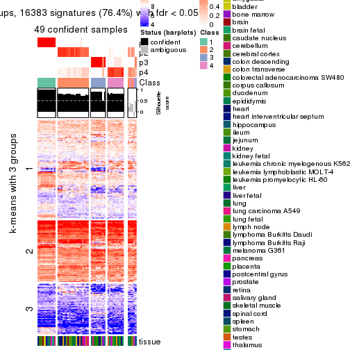
get_signatures(res, k = 5, scale_rows = FALSE)
get_signatures(res, k = 6, scale_rows = FALSE)
Compare the overlap of signatures from different k:
compare_signatures(res)
get_signature() returns a data frame invisibly. TO get the list of signatures, the function
call should be assigned to a variable explicitly. In following code, if plot argument is set
to FALSE, no heatmap is plotted while only the differential analysis is performed.
# code only for demonstration
tb = get_signature(res, k = ..., plot = FALSE)
An example of the output of tb is:
#> which_row fdr mean_1 mean_2 scaled_mean_1 scaled_mean_2 km
#> 1 38 0.042760348 8.373488 9.131774 -0.5533452 0.5164555 1
#> 2 40 0.018707592 7.106213 8.469186 -0.6173731 0.5762149 1
#> 3 55 0.019134737 10.221463 11.207825 -0.6159697 0.5749050 1
#> 4 59 0.006059896 5.921854 7.869574 -0.6899429 0.6439467 1
#> 5 60 0.018055526 8.928898 10.211722 -0.6204761 0.5791110 1
#> 6 98 0.009384629 15.714769 14.887706 0.6635654 -0.6193277 2
...
The columns in tb are:
which_row: row indices corresponding to the input matrix.fdr: FDR for the differential test. mean_x: The mean value in group x.scaled_mean_x: The mean value in group x after rows are scaled.km: Row groups if k-means clustering is applied to rows.UMAP plot which shows how samples are separated.
dimension_reduction(res, k = 2, method = "UMAP")
dimension_reduction(res, k = 3, method = "UMAP")
dimension_reduction(res, k = 4, method = "UMAP")
dimension_reduction(res, k = 5, method = "UMAP")
dimension_reduction(res, k = 6, method = "UMAP")
Following heatmap shows how subgroups are split when increasing k:
collect_classes(res)
Test correlation between subgroups and known annotations. If the known annotation is numeric, one-way ANOVA test is applied, and if the known annotation is discrete, chi-squared contingency table test is applied.
test_to_known_factors(res)
#> n tissue(p) k
#> CV:mclust 53 0.397 2
#> CV:mclust 53 0.373 3
#> CV:mclust 49 0.348 4
#> CV:mclust 50 0.434 5
#> CV:mclust 26 0.384 6
If matrix rows can be associated to genes, consider to use GO_Enrichment(res,
...) to perform function enrichment for the signature genes.
The object with results only for a single top-value method and a single partition method can be extracted as:
res = res_list["CV", "NMF"]
# you can also extract it by
# res = res_list["CV:NMF"]
A summary of res and all the functions that can be applied to it:
res
#> A 'ConsensusPartition' object with k = 2, 3, 4, 5, 6.
#> On a matrix with 21452 rows and 54 columns.
#> Top rows (1000, 2000, 3000, 4000, 5000) are extracted by 'CV' method.
#> Subgroups are detected by 'NMF' method.
#> Performed in total 1250 partitions by row resampling.
#> Best k for subgroups seems to be 4.
#>
#> Following methods can be applied to this 'ConsensusPartition' object:
#> [1] "cola_report" "collect_classes" "collect_plots"
#> [4] "collect_stats" "colnames" "compare_signatures"
#> [7] "consensus_heatmap" "dimension_reduction" "functional_enrichment"
#> [10] "get_anno_col" "get_anno" "get_classes"
#> [13] "get_consensus" "get_matrix" "get_membership"
#> [16] "get_param" "get_signatures" "get_stats"
#> [19] "is_best_k" "is_stable_k" "membership_heatmap"
#> [22] "ncol" "nrow" "plot_ecdf"
#> [25] "rownames" "select_partition_number" "show"
#> [28] "suggest_best_k" "test_to_known_factors"
collect_plots() function collects all the plots made from res for all k (number of partitions)
into one single page to provide an easy and fast comparison between different k.
collect_plots(res)
The plots are:
k and the heatmap of
predicted classes for each k.k.k.k.All the plots in panels can be made by individual functions and they are plotted later in this section.
select_partition_number() produces several plots showing different
statistics for choosing “optimized” k. There are following statistics:
k;k, the area increased is defined as \(A_k - A_{k-1}\).The detailed explanations of these statistics can be found in the cola vignette.
Generally speaking, lower PAC score, higher mean silhouette score or higher
concordance corresponds to better partition. Rand index and Jaccard index
measure how similar the current partition is compared to partition with k-1.
If they are too similar, we won't accept k is better than k-1.
select_partition_number(res)
The numeric values for all these statistics can be obtained by get_stats().
get_stats(res)
#> k 1-PAC mean_silhouette concordance area_increased Rand Jaccard
#> 2 2 0.520 0.791 0.906 0.4667 0.535 0.535
#> 3 3 0.998 0.960 0.983 0.3633 0.701 0.501
#> 4 4 0.916 0.894 0.949 0.1776 0.841 0.588
#> 5 5 0.852 0.809 0.897 0.0548 0.944 0.786
#> 6 6 0.836 0.733 0.861 0.0435 0.945 0.753
suggest_best_k() suggests the best \(k\) based on these statistics. The rules are as follows:
NA.suggest_best_k(res)
#> [1] 4
#> attr(,"optional")
#> [1] 3
There is also optional best \(k\) = 3 that is worth to check.
Following shows the table of the partitions (You need to click the show/hide
code output link to see it). The membership matrix (columns with name p*)
is inferred by
clue::cl_consensus()
function with the SE method. Basically the value in the membership matrix
represents the probability to belong to a certain group. The finall class
label for an item is determined with the group with highest probability it
belongs to.
In get_classes() function, the entropy is calculated from the membership
matrix and the silhouette score is calculated from the consensus matrix.
cbind(get_classes(res, k = 2), get_membership(res, k = 2))
#> class entropy silhouette p1 p2
#> GSM28710 2 0.0376 0.886 0.004 0.996
#> GSM28711 2 0.2423 0.874 0.040 0.960
#> GSM28712 2 0.0376 0.886 0.004 0.996
#> GSM11222 1 0.0000 0.884 1.000 0.000
#> GSM28720 2 0.5519 0.839 0.128 0.872
#> GSM11217 2 0.5519 0.839 0.128 0.872
#> GSM28723 2 0.5519 0.839 0.128 0.872
#> GSM11241 2 0.5519 0.839 0.128 0.872
#> GSM28703 2 0.5519 0.839 0.128 0.872
#> GSM11227 2 0.5519 0.839 0.128 0.872
#> GSM28706 2 0.4161 0.861 0.084 0.916
#> GSM11229 2 0.5519 0.839 0.128 0.872
#> GSM11235 2 0.5519 0.839 0.128 0.872
#> GSM28707 2 0.5519 0.839 0.128 0.872
#> GSM11240 2 0.1633 0.882 0.024 0.976
#> GSM28714 2 0.1843 0.880 0.028 0.972
#> GSM11216 1 0.0000 0.884 1.000 0.000
#> GSM28715 2 0.9710 0.248 0.400 0.600
#> GSM11234 2 0.0376 0.886 0.004 0.996
#> GSM28699 2 0.0000 0.885 0.000 1.000
#> GSM11233 2 0.0376 0.886 0.004 0.996
#> GSM28718 2 0.1633 0.882 0.024 0.976
#> GSM11231 2 0.9460 0.358 0.364 0.636
#> GSM11237 2 0.1184 0.884 0.016 0.984
#> GSM11228 1 0.9996 0.135 0.512 0.488
#> GSM28697 2 0.7056 0.714 0.192 0.808
#> GSM28698 1 0.0000 0.884 1.000 0.000
#> GSM11238 1 0.0000 0.884 1.000 0.000
#> GSM11242 1 0.0000 0.884 1.000 0.000
#> GSM28719 1 0.8608 0.626 0.716 0.284
#> GSM28708 1 0.3431 0.847 0.936 0.064
#> GSM28722 2 0.8267 0.599 0.260 0.740
#> GSM11232 2 0.9732 0.234 0.404 0.596
#> GSM28709 1 0.0000 0.884 1.000 0.000
#> GSM11226 1 0.4431 0.825 0.908 0.092
#> GSM11239 1 0.0000 0.884 1.000 0.000
#> GSM11225 1 0.0000 0.884 1.000 0.000
#> GSM11220 1 0.0000 0.884 1.000 0.000
#> GSM28701 2 0.0672 0.886 0.008 0.992
#> GSM28721 1 0.0376 0.882 0.996 0.004
#> GSM28713 2 0.0376 0.886 0.004 0.996
#> GSM28716 2 0.0000 0.885 0.000 1.000
#> GSM11221 2 0.0376 0.886 0.004 0.996
#> GSM28717 2 0.0376 0.886 0.004 0.996
#> GSM11223 2 0.4562 0.856 0.096 0.904
#> GSM11218 1 0.0000 0.884 1.000 0.000
#> GSM11219 2 0.1414 0.883 0.020 0.980
#> GSM11236 1 0.2948 0.850 0.948 0.052
#> GSM28702 1 0.0000 0.884 1.000 0.000
#> GSM28705 1 0.9922 0.274 0.552 0.448
#> GSM11230 1 0.9850 0.333 0.572 0.428
#> GSM28704 2 0.3274 0.861 0.060 0.940
#> GSM28700 2 0.0376 0.886 0.004 0.996
#> GSM11224 2 0.0376 0.886 0.004 0.996
cbind(get_classes(res, k = 3), get_membership(res, k = 3))
#> class entropy silhouette p1 p2 p3
#> GSM28710 2 0.0000 0.977 0.000 1.000 0.000
#> GSM28711 2 0.0000 0.977 0.000 1.000 0.000
#> GSM28712 2 0.0000 0.977 0.000 1.000 0.000
#> GSM11222 3 0.0000 0.972 0.000 0.000 1.000
#> GSM28720 1 0.0000 0.995 1.000 0.000 0.000
#> GSM11217 1 0.0000 0.995 1.000 0.000 0.000
#> GSM28723 1 0.0000 0.995 1.000 0.000 0.000
#> GSM11241 1 0.0000 0.995 1.000 0.000 0.000
#> GSM28703 1 0.0000 0.995 1.000 0.000 0.000
#> GSM11227 1 0.0000 0.995 1.000 0.000 0.000
#> GSM28706 1 0.0000 0.995 1.000 0.000 0.000
#> GSM11229 1 0.0000 0.995 1.000 0.000 0.000
#> GSM11235 1 0.0000 0.995 1.000 0.000 0.000
#> GSM28707 1 0.0000 0.995 1.000 0.000 0.000
#> GSM11240 2 0.0000 0.977 0.000 1.000 0.000
#> GSM28714 2 0.0000 0.977 0.000 1.000 0.000
#> GSM11216 3 0.0000 0.972 0.000 0.000 1.000
#> GSM28715 2 0.0000 0.977 0.000 1.000 0.000
#> GSM11234 2 0.0000 0.977 0.000 1.000 0.000
#> GSM28699 2 0.2165 0.919 0.064 0.936 0.000
#> GSM11233 2 0.0000 0.977 0.000 1.000 0.000
#> GSM28718 2 0.0000 0.977 0.000 1.000 0.000
#> GSM11231 2 0.0000 0.977 0.000 1.000 0.000
#> GSM11237 2 0.0000 0.977 0.000 1.000 0.000
#> GSM11228 2 0.4555 0.753 0.000 0.800 0.200
#> GSM28697 2 0.0000 0.977 0.000 1.000 0.000
#> GSM28698 3 0.0000 0.972 0.000 0.000 1.000
#> GSM11238 3 0.0000 0.972 0.000 0.000 1.000
#> GSM11242 3 0.0000 0.972 0.000 0.000 1.000
#> GSM28719 2 0.0000 0.977 0.000 1.000 0.000
#> GSM28708 3 0.2796 0.877 0.000 0.092 0.908
#> GSM28722 2 0.0000 0.977 0.000 1.000 0.000
#> GSM11232 2 0.1964 0.928 0.000 0.944 0.056
#> GSM28709 3 0.0000 0.972 0.000 0.000 1.000
#> GSM11226 3 0.4750 0.721 0.000 0.216 0.784
#> GSM11239 3 0.0000 0.972 0.000 0.000 1.000
#> GSM11225 3 0.0000 0.972 0.000 0.000 1.000
#> GSM11220 3 0.0237 0.969 0.004 0.000 0.996
#> GSM28701 2 0.0000 0.977 0.000 1.000 0.000
#> GSM28721 3 0.0000 0.972 0.000 0.000 1.000
#> GSM28713 2 0.0000 0.977 0.000 1.000 0.000
#> GSM28716 1 0.1753 0.941 0.952 0.048 0.000
#> GSM11221 2 0.0000 0.977 0.000 1.000 0.000
#> GSM28717 2 0.0237 0.974 0.004 0.996 0.000
#> GSM11223 1 0.0000 0.995 1.000 0.000 0.000
#> GSM11218 3 0.0000 0.972 0.000 0.000 1.000
#> GSM11219 2 0.0000 0.977 0.000 1.000 0.000
#> GSM11236 3 0.0000 0.972 0.000 0.000 1.000
#> GSM28702 3 0.0000 0.972 0.000 0.000 1.000
#> GSM28705 2 0.5138 0.669 0.000 0.748 0.252
#> GSM11230 2 0.0000 0.977 0.000 1.000 0.000
#> GSM28704 2 0.0000 0.977 0.000 1.000 0.000
#> GSM28700 2 0.0000 0.977 0.000 1.000 0.000
#> GSM11224 2 0.0000 0.977 0.000 1.000 0.000
cbind(get_classes(res, k = 4), get_membership(res, k = 4))
#> class entropy silhouette p1 p2 p3 p4
#> GSM28710 2 0.0592 0.916 0.000 0.984 0.000 0.016
#> GSM28711 2 0.1211 0.911 0.000 0.960 0.000 0.040
#> GSM28712 2 0.0592 0.916 0.000 0.984 0.000 0.016
#> GSM11222 3 0.0188 0.987 0.000 0.000 0.996 0.004
#> GSM28720 1 0.0000 0.998 1.000 0.000 0.000 0.000
#> GSM11217 1 0.0000 0.998 1.000 0.000 0.000 0.000
#> GSM28723 1 0.0000 0.998 1.000 0.000 0.000 0.000
#> GSM11241 1 0.0000 0.998 1.000 0.000 0.000 0.000
#> GSM28703 1 0.0000 0.998 1.000 0.000 0.000 0.000
#> GSM11227 1 0.0000 0.998 1.000 0.000 0.000 0.000
#> GSM28706 1 0.0000 0.998 1.000 0.000 0.000 0.000
#> GSM11229 1 0.0000 0.998 1.000 0.000 0.000 0.000
#> GSM11235 1 0.0000 0.998 1.000 0.000 0.000 0.000
#> GSM28707 1 0.0000 0.998 1.000 0.000 0.000 0.000
#> GSM11240 2 0.0592 0.916 0.000 0.984 0.000 0.016
#> GSM28714 2 0.0469 0.911 0.000 0.988 0.000 0.012
#> GSM11216 3 0.0188 0.987 0.000 0.000 0.996 0.004
#> GSM28715 2 0.1118 0.913 0.000 0.964 0.000 0.036
#> GSM11234 4 0.1302 0.890 0.000 0.044 0.000 0.956
#> GSM28699 2 0.0000 0.913 0.000 1.000 0.000 0.000
#> GSM11233 2 0.0188 0.911 0.000 0.996 0.000 0.004
#> GSM28718 2 0.0188 0.914 0.000 0.996 0.000 0.004
#> GSM11231 2 0.3907 0.707 0.000 0.768 0.000 0.232
#> GSM11237 2 0.0336 0.913 0.000 0.992 0.000 0.008
#> GSM11228 4 0.0469 0.895 0.000 0.012 0.000 0.988
#> GSM28697 4 0.0592 0.896 0.000 0.016 0.000 0.984
#> GSM28698 3 0.0000 0.988 0.000 0.000 1.000 0.000
#> GSM11238 3 0.0000 0.988 0.000 0.000 1.000 0.000
#> GSM11242 3 0.0000 0.988 0.000 0.000 1.000 0.000
#> GSM28719 4 0.3172 0.774 0.000 0.160 0.000 0.840
#> GSM28708 4 0.3528 0.733 0.000 0.000 0.192 0.808
#> GSM28722 4 0.1389 0.888 0.000 0.048 0.000 0.952
#> GSM11232 4 0.0707 0.896 0.000 0.020 0.000 0.980
#> GSM28709 3 0.0336 0.985 0.000 0.000 0.992 0.008
#> GSM11226 4 0.2760 0.829 0.000 0.000 0.128 0.872
#> GSM11239 3 0.0000 0.988 0.000 0.000 1.000 0.000
#> GSM11225 3 0.0000 0.988 0.000 0.000 1.000 0.000
#> GSM11220 3 0.0188 0.987 0.000 0.000 0.996 0.004
#> GSM28701 2 0.4888 0.317 0.000 0.588 0.000 0.412
#> GSM28721 4 0.1792 0.871 0.000 0.000 0.068 0.932
#> GSM28713 2 0.4977 0.160 0.000 0.540 0.000 0.460
#> GSM28716 1 0.0592 0.983 0.984 0.016 0.000 0.000
#> GSM11221 2 0.1302 0.910 0.000 0.956 0.000 0.044
#> GSM28717 2 0.0000 0.913 0.000 1.000 0.000 0.000
#> GSM11223 1 0.0000 0.998 1.000 0.000 0.000 0.000
#> GSM11218 4 0.1302 0.881 0.000 0.000 0.044 0.956
#> GSM11219 2 0.0921 0.915 0.000 0.972 0.000 0.028
#> GSM11236 3 0.1940 0.924 0.000 0.000 0.924 0.076
#> GSM28702 3 0.0817 0.971 0.000 0.000 0.976 0.024
#> GSM28705 4 0.0804 0.896 0.000 0.012 0.008 0.980
#> GSM11230 2 0.1022 0.914 0.000 0.968 0.000 0.032
#> GSM28704 4 0.4761 0.352 0.000 0.372 0.000 0.628
#> GSM28700 2 0.1022 0.915 0.000 0.968 0.000 0.032
#> GSM11224 2 0.2530 0.854 0.000 0.888 0.000 0.112
cbind(get_classes(res, k = 5), get_membership(res, k = 5))
#> class entropy silhouette p1 p2 p3 p4 p5
#> GSM28710 2 0.2286 0.8518 0.000 0.888 0.000 0.004 0.108
#> GSM28711 2 0.1893 0.8711 0.000 0.928 0.000 0.048 0.024
#> GSM28712 2 0.0566 0.8753 0.000 0.984 0.000 0.004 0.012
#> GSM11222 3 0.0963 0.9585 0.000 0.000 0.964 0.000 0.036
#> GSM28720 1 0.0000 0.9976 1.000 0.000 0.000 0.000 0.000
#> GSM11217 1 0.0000 0.9976 1.000 0.000 0.000 0.000 0.000
#> GSM28723 1 0.0000 0.9976 1.000 0.000 0.000 0.000 0.000
#> GSM11241 1 0.0000 0.9976 1.000 0.000 0.000 0.000 0.000
#> GSM28703 1 0.0000 0.9976 1.000 0.000 0.000 0.000 0.000
#> GSM11227 1 0.0000 0.9976 1.000 0.000 0.000 0.000 0.000
#> GSM28706 1 0.0000 0.9976 1.000 0.000 0.000 0.000 0.000
#> GSM11229 1 0.0000 0.9976 1.000 0.000 0.000 0.000 0.000
#> GSM11235 1 0.0000 0.9976 1.000 0.000 0.000 0.000 0.000
#> GSM28707 1 0.0000 0.9976 1.000 0.000 0.000 0.000 0.000
#> GSM11240 2 0.1386 0.8736 0.000 0.952 0.000 0.016 0.032
#> GSM28714 2 0.1502 0.8662 0.000 0.940 0.000 0.004 0.056
#> GSM11216 3 0.1892 0.9198 0.000 0.000 0.916 0.004 0.080
#> GSM28715 2 0.2221 0.8602 0.000 0.912 0.000 0.036 0.052
#> GSM11234 4 0.2727 0.7103 0.000 0.016 0.000 0.868 0.116
#> GSM28699 2 0.2389 0.8464 0.004 0.880 0.000 0.000 0.116
#> GSM11233 2 0.1341 0.8686 0.000 0.944 0.000 0.000 0.056
#> GSM28718 2 0.1124 0.8708 0.000 0.960 0.000 0.004 0.036
#> GSM11231 5 0.4883 0.6094 0.000 0.200 0.000 0.092 0.708
#> GSM11237 2 0.2136 0.8467 0.000 0.904 0.000 0.008 0.088
#> GSM11228 4 0.3607 0.5552 0.000 0.004 0.000 0.752 0.244
#> GSM28697 4 0.4542 0.0707 0.000 0.008 0.000 0.536 0.456
#> GSM28698 3 0.0162 0.9632 0.000 0.000 0.996 0.000 0.004
#> GSM11238 3 0.0000 0.9636 0.000 0.000 1.000 0.000 0.000
#> GSM11242 3 0.0703 0.9636 0.000 0.000 0.976 0.000 0.024
#> GSM28719 5 0.4303 0.6438 0.000 0.056 0.000 0.192 0.752
#> GSM28708 5 0.4886 0.6713 0.000 0.028 0.064 0.160 0.748
#> GSM28722 4 0.0510 0.7598 0.000 0.016 0.000 0.984 0.000
#> GSM11232 4 0.2911 0.6872 0.000 0.008 0.004 0.852 0.136
#> GSM28709 3 0.1197 0.9476 0.000 0.000 0.952 0.000 0.048
#> GSM11226 4 0.1492 0.7566 0.000 0.004 0.040 0.948 0.008
#> GSM11239 3 0.0609 0.9646 0.000 0.000 0.980 0.000 0.020
#> GSM11225 3 0.0880 0.9616 0.000 0.000 0.968 0.000 0.032
#> GSM11220 3 0.1704 0.9298 0.000 0.000 0.928 0.004 0.068
#> GSM28701 2 0.6789 -0.0641 0.000 0.368 0.000 0.284 0.348
#> GSM28721 4 0.1124 0.7563 0.000 0.004 0.036 0.960 0.000
#> GSM28713 4 0.5065 0.1266 0.000 0.420 0.000 0.544 0.036
#> GSM28716 1 0.0807 0.9735 0.976 0.012 0.000 0.000 0.012
#> GSM11221 2 0.2592 0.8612 0.000 0.892 0.000 0.052 0.056
#> GSM28717 2 0.2377 0.8412 0.000 0.872 0.000 0.000 0.128
#> GSM11223 1 0.0000 0.9976 1.000 0.000 0.000 0.000 0.000
#> GSM11218 4 0.1469 0.7519 0.000 0.000 0.036 0.948 0.016
#> GSM11219 2 0.0912 0.8760 0.000 0.972 0.000 0.016 0.012
#> GSM11236 5 0.4798 0.2254 0.000 0.000 0.440 0.020 0.540
#> GSM28702 3 0.0579 0.9639 0.000 0.000 0.984 0.008 0.008
#> GSM28705 4 0.0324 0.7598 0.000 0.004 0.004 0.992 0.000
#> GSM11230 2 0.1800 0.8708 0.000 0.932 0.000 0.048 0.020
#> GSM28704 4 0.3883 0.6121 0.000 0.184 0.000 0.780 0.036
#> GSM28700 2 0.3590 0.8257 0.000 0.828 0.000 0.092 0.080
#> GSM11224 2 0.3561 0.6567 0.000 0.740 0.000 0.260 0.000
cbind(get_classes(res, k = 6), get_membership(res, k = 6))
#> class entropy silhouette p1 p2 p3 p4 p5 p6
#> GSM28710 5 0.3995 0.368 0.000 0.480 0.000 0.004 0.516 0.000
#> GSM28711 2 0.1500 0.743 0.000 0.936 0.000 0.000 0.052 0.012
#> GSM28712 2 0.2389 0.669 0.000 0.864 0.000 0.000 0.128 0.008
#> GSM11222 3 0.0858 0.887 0.000 0.000 0.968 0.000 0.028 0.004
#> GSM28720 1 0.0000 0.999 1.000 0.000 0.000 0.000 0.000 0.000
#> GSM11217 1 0.0000 0.999 1.000 0.000 0.000 0.000 0.000 0.000
#> GSM28723 1 0.0000 0.999 1.000 0.000 0.000 0.000 0.000 0.000
#> GSM11241 1 0.0000 0.999 1.000 0.000 0.000 0.000 0.000 0.000
#> GSM28703 1 0.0000 0.999 1.000 0.000 0.000 0.000 0.000 0.000
#> GSM11227 1 0.0000 0.999 1.000 0.000 0.000 0.000 0.000 0.000
#> GSM28706 1 0.0000 0.999 1.000 0.000 0.000 0.000 0.000 0.000
#> GSM11229 1 0.0000 0.999 1.000 0.000 0.000 0.000 0.000 0.000
#> GSM11235 1 0.0000 0.999 1.000 0.000 0.000 0.000 0.000 0.000
#> GSM28707 1 0.0000 0.999 1.000 0.000 0.000 0.000 0.000 0.000
#> GSM11240 2 0.0551 0.759 0.000 0.984 0.000 0.004 0.004 0.008
#> GSM28714 2 0.1173 0.752 0.000 0.960 0.000 0.016 0.016 0.008
#> GSM11216 3 0.3897 0.740 0.000 0.000 0.684 0.008 0.300 0.008
#> GSM28715 2 0.0862 0.755 0.000 0.972 0.000 0.008 0.004 0.016
#> GSM11234 6 0.3833 0.630 0.000 0.016 0.000 0.004 0.272 0.708
#> GSM28699 5 0.3899 0.552 0.000 0.404 0.000 0.004 0.592 0.000
#> GSM11233 2 0.4062 -0.306 0.000 0.552 0.000 0.008 0.440 0.000
#> GSM28718 2 0.0767 0.757 0.000 0.976 0.000 0.012 0.008 0.004
#> GSM11231 4 0.1010 0.789 0.000 0.036 0.000 0.960 0.000 0.004
#> GSM11237 2 0.1857 0.742 0.000 0.924 0.000 0.044 0.028 0.004
#> GSM11228 4 0.3835 0.495 0.000 0.000 0.000 0.668 0.012 0.320
#> GSM28697 4 0.3686 0.728 0.000 0.000 0.000 0.788 0.124 0.088
#> GSM28698 3 0.1411 0.880 0.000 0.000 0.936 0.004 0.060 0.000
#> GSM11238 3 0.1082 0.886 0.000 0.000 0.956 0.000 0.040 0.004
#> GSM11242 3 0.0777 0.887 0.000 0.000 0.972 0.000 0.024 0.004
#> GSM28719 4 0.0436 0.800 0.000 0.004 0.000 0.988 0.004 0.004
#> GSM28708 4 0.0405 0.800 0.000 0.004 0.000 0.988 0.000 0.008
#> GSM28722 6 0.1500 0.798 0.000 0.052 0.000 0.012 0.000 0.936
#> GSM11232 6 0.3547 0.534 0.000 0.004 0.000 0.300 0.000 0.696
#> GSM28709 3 0.3564 0.806 0.000 0.000 0.772 0.020 0.200 0.008
#> GSM11226 6 0.3766 0.772 0.000 0.080 0.080 0.016 0.008 0.816
#> GSM11239 3 0.0858 0.886 0.000 0.000 0.968 0.000 0.028 0.004
#> GSM11225 3 0.1010 0.886 0.000 0.000 0.960 0.000 0.036 0.004
#> GSM11220 3 0.4120 0.710 0.000 0.004 0.660 0.008 0.320 0.008
#> GSM28701 5 0.5139 0.101 0.000 0.040 0.000 0.220 0.668 0.072
#> GSM28721 6 0.1743 0.787 0.000 0.004 0.024 0.028 0.008 0.936
#> GSM28713 6 0.3658 0.639 0.000 0.216 0.000 0.000 0.032 0.752
#> GSM28716 1 0.0508 0.984 0.984 0.004 0.000 0.000 0.012 0.000
#> GSM11221 2 0.4550 0.360 0.000 0.676 0.000 0.000 0.240 0.084
#> GSM28717 5 0.3756 0.582 0.000 0.352 0.000 0.004 0.644 0.000
#> GSM11223 1 0.0000 0.999 1.000 0.000 0.000 0.000 0.000 0.000
#> GSM11218 6 0.3926 0.744 0.000 0.036 0.112 0.028 0.016 0.808
#> GSM11219 2 0.0520 0.759 0.000 0.984 0.000 0.000 0.008 0.008
#> GSM11236 4 0.5275 0.455 0.000 0.004 0.248 0.620 0.124 0.004
#> GSM28702 3 0.0767 0.889 0.000 0.000 0.976 0.004 0.012 0.008
#> GSM28705 6 0.1257 0.793 0.000 0.020 0.000 0.028 0.000 0.952
#> GSM11230 2 0.1572 0.741 0.000 0.936 0.000 0.000 0.028 0.036
#> GSM28704 6 0.2730 0.727 0.000 0.192 0.000 0.000 0.000 0.808
#> GSM28700 2 0.4818 -0.125 0.000 0.572 0.000 0.000 0.364 0.064
#> GSM11224 2 0.4002 0.467 0.000 0.704 0.000 0.000 0.036 0.260
Heatmaps for the consensus matrix. It visualizes the probability of two samples to be in a same group.
consensus_heatmap(res, k = 2)
consensus_heatmap(res, k = 3)
consensus_heatmap(res, k = 4)
consensus_heatmap(res, k = 5)
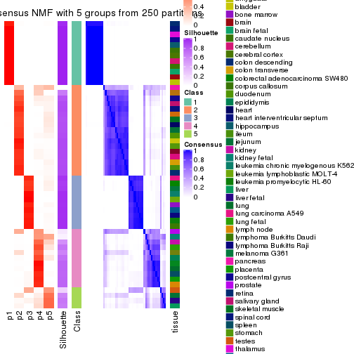
consensus_heatmap(res, k = 6)
Heatmaps for the membership of samples in all partitions to see how consistent they are:
membership_heatmap(res, k = 2)
membership_heatmap(res, k = 3)
membership_heatmap(res, k = 4)
membership_heatmap(res, k = 5)
membership_heatmap(res, k = 6)

As soon as we have had the classes for columns, we can look for signatures which are significantly different between classes which can be candidate marks for certain classes. Following are the heatmaps for signatures.
Signature heatmaps where rows are scaled:
get_signatures(res, k = 2)
get_signatures(res, k = 3)
get_signatures(res, k = 4)
get_signatures(res, k = 5)
get_signatures(res, k = 6)
Signature heatmaps where rows are not scaled:
get_signatures(res, k = 2, scale_rows = FALSE)
get_signatures(res, k = 3, scale_rows = FALSE)
get_signatures(res, k = 4, scale_rows = FALSE)
get_signatures(res, k = 5, scale_rows = FALSE)
get_signatures(res, k = 6, scale_rows = FALSE)
Compare the overlap of signatures from different k:
compare_signatures(res)

get_signature() returns a data frame invisibly. TO get the list of signatures, the function
call should be assigned to a variable explicitly. In following code, if plot argument is set
to FALSE, no heatmap is plotted while only the differential analysis is performed.
# code only for demonstration
tb = get_signature(res, k = ..., plot = FALSE)
An example of the output of tb is:
#> which_row fdr mean_1 mean_2 scaled_mean_1 scaled_mean_2 km
#> 1 38 0.042760348 8.373488 9.131774 -0.5533452 0.5164555 1
#> 2 40 0.018707592 7.106213 8.469186 -0.6173731 0.5762149 1
#> 3 55 0.019134737 10.221463 11.207825 -0.6159697 0.5749050 1
#> 4 59 0.006059896 5.921854 7.869574 -0.6899429 0.6439467 1
#> 5 60 0.018055526 8.928898 10.211722 -0.6204761 0.5791110 1
#> 6 98 0.009384629 15.714769 14.887706 0.6635654 -0.6193277 2
...
The columns in tb are:
which_row: row indices corresponding to the input matrix.fdr: FDR for the differential test. mean_x: The mean value in group x.scaled_mean_x: The mean value in group x after rows are scaled.km: Row groups if k-means clustering is applied to rows.UMAP plot which shows how samples are separated.
dimension_reduction(res, k = 2, method = "UMAP")
dimension_reduction(res, k = 3, method = "UMAP")
dimension_reduction(res, k = 4, method = "UMAP")

dimension_reduction(res, k = 5, method = "UMAP")

dimension_reduction(res, k = 6, method = "UMAP")
Following heatmap shows how subgroups are split when increasing k:
collect_classes(res)
Test correlation between subgroups and known annotations. If the known annotation is numeric, one-way ANOVA test is applied, and if the known annotation is discrete, chi-squared contingency table test is applied.
test_to_known_factors(res)
#> n tissue(p) k
#> CV:NMF 48 0.432 2
#> CV:NMF 54 0.374 3
#> CV:NMF 51 0.350 4
#> CV:NMF 50 0.525 5
#> CV:NMF 46 0.455 6
If matrix rows can be associated to genes, consider to use GO_Enrichment(res,
...) to perform function enrichment for the signature genes.
The object with results only for a single top-value method and a single partition method can be extracted as:
res = res_list["MAD", "hclust"]
# you can also extract it by
# res = res_list["MAD:hclust"]
A summary of res and all the functions that can be applied to it:
res
#> A 'ConsensusPartition' object with k = 2, 3, 4, 5, 6.
#> On a matrix with 21452 rows and 54 columns.
#> Top rows (1000, 2000, 3000, 4000, 5000) are extracted by 'MAD' method.
#> Subgroups are detected by 'hclust' method.
#> Performed in total 1250 partitions by row resampling.
#> Best k for subgroups seems to be 4.
#>
#> Following methods can be applied to this 'ConsensusPartition' object:
#> [1] "cola_report" "collect_classes" "collect_plots"
#> [4] "collect_stats" "colnames" "compare_signatures"
#> [7] "consensus_heatmap" "dimension_reduction" "functional_enrichment"
#> [10] "get_anno_col" "get_anno" "get_classes"
#> [13] "get_consensus" "get_matrix" "get_membership"
#> [16] "get_param" "get_signatures" "get_stats"
#> [19] "is_best_k" "is_stable_k" "membership_heatmap"
#> [22] "ncol" "nrow" "plot_ecdf"
#> [25] "rownames" "select_partition_number" "show"
#> [28] "suggest_best_k" "test_to_known_factors"
collect_plots() function collects all the plots made from res for all k (number of partitions)
into one single page to provide an easy and fast comparison between different k.
collect_plots(res)
The plots are:
k and the heatmap of
predicted classes for each k.k.k.k.All the plots in panels can be made by individual functions and they are plotted later in this section.
select_partition_number() produces several plots showing different
statistics for choosing “optimized” k. There are following statistics:
k;k, the area increased is defined as \(A_k - A_{k-1}\).The detailed explanations of these statistics can be found in the cola vignette.
Generally speaking, lower PAC score, higher mean silhouette score or higher
concordance corresponds to better partition. Rand index and Jaccard index
measure how similar the current partition is compared to partition with k-1.
If they are too similar, we won't accept k is better than k-1.
select_partition_number(res)
The numeric values for all these statistics can be obtained by get_stats().
get_stats(res)
#> k 1-PAC mean_silhouette concordance area_increased Rand Jaccard
#> 2 2 0.325 0.688 0.864 0.4154 0.648 0.648
#> 3 3 0.536 0.702 0.824 0.4641 0.762 0.632
#> 4 4 0.821 0.792 0.913 0.2008 0.810 0.554
#> 5 5 0.828 0.731 0.811 0.0753 0.969 0.880
#> 6 6 0.809 0.659 0.778 0.0447 0.909 0.626
suggest_best_k() suggests the best \(k\) based on these statistics. The rules are as follows:
NA.suggest_best_k(res)
#> [1] 4
Following shows the table of the partitions (You need to click the show/hide
code output link to see it). The membership matrix (columns with name p*)
is inferred by
clue::cl_consensus()
function with the SE method. Basically the value in the membership matrix
represents the probability to belong to a certain group. The finall class
label for an item is determined with the group with highest probability it
belongs to.
In get_classes() function, the entropy is calculated from the membership
matrix and the silhouette score is calculated from the consensus matrix.
cbind(get_classes(res, k = 2), get_membership(res, k = 2))
#> class entropy silhouette p1 p2
#> GSM28710 2 0.7883 0.629 0.236 0.764
#> GSM28711 2 0.7883 0.629 0.236 0.764
#> GSM28712 2 0.0000 0.799 0.000 1.000
#> GSM11222 1 0.6973 0.690 0.812 0.188
#> GSM28720 2 0.7056 0.703 0.192 0.808
#> GSM11217 2 0.7056 0.703 0.192 0.808
#> GSM28723 2 0.7056 0.703 0.192 0.808
#> GSM11241 2 0.7056 0.703 0.192 0.808
#> GSM28703 2 0.7056 0.703 0.192 0.808
#> GSM11227 2 0.7056 0.703 0.192 0.808
#> GSM28706 2 0.7056 0.703 0.192 0.808
#> GSM11229 2 0.7056 0.703 0.192 0.808
#> GSM11235 2 0.7056 0.703 0.192 0.808
#> GSM28707 2 0.7056 0.703 0.192 0.808
#> GSM11240 2 0.0000 0.799 0.000 1.000
#> GSM28714 2 0.0000 0.799 0.000 1.000
#> GSM11216 1 0.0000 0.865 1.000 0.000
#> GSM28715 2 0.0672 0.797 0.008 0.992
#> GSM11234 2 0.0000 0.799 0.000 1.000
#> GSM28699 2 0.0000 0.799 0.000 1.000
#> GSM11233 2 0.0000 0.799 0.000 1.000
#> GSM28718 2 0.0000 0.799 0.000 1.000
#> GSM11231 2 0.0672 0.797 0.008 0.992
#> GSM11237 2 0.0000 0.799 0.000 1.000
#> GSM11228 2 0.9866 0.217 0.432 0.568
#> GSM28697 2 0.9866 0.217 0.432 0.568
#> GSM28698 1 0.0000 0.865 1.000 0.000
#> GSM11238 1 0.0000 0.865 1.000 0.000
#> GSM11242 1 0.0000 0.865 1.000 0.000
#> GSM28719 2 0.9881 0.206 0.436 0.564
#> GSM28708 2 0.9881 0.206 0.436 0.564
#> GSM28722 2 0.6623 0.698 0.172 0.828
#> GSM11232 2 0.6973 0.683 0.188 0.812
#> GSM28709 1 0.0000 0.865 1.000 0.000
#> GSM11226 1 0.9580 0.398 0.620 0.380
#> GSM11239 1 0.0000 0.865 1.000 0.000
#> GSM11225 1 0.0000 0.865 1.000 0.000
#> GSM11220 1 0.0000 0.865 1.000 0.000
#> GSM28701 2 0.7883 0.629 0.236 0.764
#> GSM28721 2 0.9866 0.217 0.432 0.568
#> GSM28713 2 0.3584 0.772 0.068 0.932
#> GSM28716 2 0.0000 0.799 0.000 1.000
#> GSM11221 2 0.0376 0.798 0.004 0.996
#> GSM28717 2 0.0000 0.799 0.000 1.000
#> GSM11223 2 0.7056 0.703 0.192 0.808
#> GSM11218 1 0.9580 0.398 0.620 0.380
#> GSM11219 2 0.0000 0.799 0.000 1.000
#> GSM11236 2 0.8081 0.612 0.248 0.752
#> GSM28702 1 0.6973 0.690 0.812 0.188
#> GSM28705 2 0.9795 0.261 0.416 0.584
#> GSM11230 2 0.0376 0.798 0.004 0.996
#> GSM28704 2 0.4562 0.757 0.096 0.904
#> GSM28700 2 0.0000 0.799 0.000 1.000
#> GSM11224 2 0.0000 0.799 0.000 1.000
cbind(get_classes(res, k = 3), get_membership(res, k = 3))
#> class entropy silhouette p1 p2 p3
#> GSM28710 2 0.355 0.562 0.000 0.868 0.132
#> GSM28711 2 0.355 0.562 0.000 0.868 0.132
#> GSM28712 2 0.529 0.707 0.268 0.732 0.000
#> GSM11222 3 0.550 0.680 0.000 0.292 0.708
#> GSM28720 1 0.000 1.000 1.000 0.000 0.000
#> GSM11217 1 0.000 1.000 1.000 0.000 0.000
#> GSM28723 1 0.000 1.000 1.000 0.000 0.000
#> GSM11241 1 0.000 1.000 1.000 0.000 0.000
#> GSM28703 1 0.000 1.000 1.000 0.000 0.000
#> GSM11227 1 0.000 1.000 1.000 0.000 0.000
#> GSM28706 1 0.000 1.000 1.000 0.000 0.000
#> GSM11229 1 0.000 1.000 1.000 0.000 0.000
#> GSM11235 1 0.000 1.000 1.000 0.000 0.000
#> GSM28707 1 0.000 1.000 1.000 0.000 0.000
#> GSM11240 2 0.522 0.711 0.260 0.740 0.000
#> GSM28714 2 0.522 0.711 0.260 0.740 0.000
#> GSM11216 3 0.000 0.846 0.000 0.000 1.000
#> GSM28715 2 0.562 0.712 0.260 0.732 0.008
#> GSM11234 2 0.529 0.707 0.268 0.732 0.000
#> GSM28699 2 0.556 0.671 0.300 0.700 0.000
#> GSM11233 2 0.556 0.671 0.300 0.700 0.000
#> GSM28718 2 0.522 0.711 0.260 0.740 0.000
#> GSM11231 2 0.562 0.712 0.260 0.732 0.008
#> GSM11237 2 0.522 0.711 0.260 0.740 0.000
#> GSM11228 2 0.576 0.228 0.000 0.672 0.328
#> GSM28697 2 0.576 0.228 0.000 0.672 0.328
#> GSM28698 3 0.000 0.846 0.000 0.000 1.000
#> GSM11238 3 0.000 0.846 0.000 0.000 1.000
#> GSM11242 3 0.000 0.846 0.000 0.000 1.000
#> GSM28719 2 0.579 0.219 0.000 0.668 0.332
#> GSM28708 2 0.579 0.219 0.000 0.668 0.332
#> GSM28722 2 0.226 0.611 0.000 0.932 0.068
#> GSM11232 2 0.263 0.601 0.000 0.916 0.084
#> GSM28709 3 0.000 0.846 0.000 0.000 1.000
#> GSM11226 3 0.630 0.337 0.000 0.484 0.516
#> GSM11239 3 0.000 0.846 0.000 0.000 1.000
#> GSM11225 3 0.000 0.846 0.000 0.000 1.000
#> GSM11220 3 0.000 0.846 0.000 0.000 1.000
#> GSM28701 2 0.355 0.562 0.000 0.868 0.132
#> GSM28721 2 0.576 0.228 0.000 0.672 0.328
#> GSM28713 2 0.141 0.666 0.036 0.964 0.000
#> GSM28716 2 0.536 0.702 0.276 0.724 0.000
#> GSM11221 2 0.544 0.712 0.260 0.736 0.004
#> GSM28717 2 0.556 0.671 0.300 0.700 0.000
#> GSM11223 1 0.000 1.000 1.000 0.000 0.000
#> GSM11218 3 0.630 0.337 0.000 0.484 0.516
#> GSM11219 2 0.522 0.711 0.260 0.740 0.000
#> GSM11236 2 0.375 0.548 0.000 0.856 0.144
#> GSM28702 3 0.550 0.680 0.000 0.292 0.708
#> GSM28705 2 0.565 0.262 0.000 0.688 0.312
#> GSM11230 2 0.544 0.712 0.260 0.736 0.004
#> GSM28704 2 0.205 0.654 0.028 0.952 0.020
#> GSM28700 2 0.529 0.707 0.268 0.732 0.000
#> GSM11224 2 0.529 0.707 0.268 0.732 0.000
cbind(get_classes(res, k = 4), get_membership(res, k = 4))
#> class entropy silhouette p1 p2 p3 p4
#> GSM28710 4 0.4522 0.620 0.000 0.320 0.000 0.680
#> GSM28711 4 0.4522 0.620 0.000 0.320 0.000 0.680
#> GSM28712 2 0.0000 0.918 0.000 1.000 0.000 0.000
#> GSM11222 3 0.4955 0.238 0.000 0.000 0.556 0.444
#> GSM28720 1 0.0000 1.000 1.000 0.000 0.000 0.000
#> GSM11217 1 0.0000 1.000 1.000 0.000 0.000 0.000
#> GSM28723 1 0.0000 1.000 1.000 0.000 0.000 0.000
#> GSM11241 1 0.0000 1.000 1.000 0.000 0.000 0.000
#> GSM28703 1 0.0000 1.000 1.000 0.000 0.000 0.000
#> GSM11227 1 0.0000 1.000 1.000 0.000 0.000 0.000
#> GSM28706 1 0.0000 1.000 1.000 0.000 0.000 0.000
#> GSM11229 1 0.0000 1.000 1.000 0.000 0.000 0.000
#> GSM11235 1 0.0000 1.000 1.000 0.000 0.000 0.000
#> GSM28707 1 0.0000 1.000 1.000 0.000 0.000 0.000
#> GSM11240 2 0.0336 0.919 0.000 0.992 0.000 0.008
#> GSM28714 2 0.0336 0.919 0.000 0.992 0.000 0.008
#> GSM11216 3 0.0000 0.887 0.000 0.000 1.000 0.000
#> GSM28715 2 0.1302 0.894 0.000 0.956 0.000 0.044
#> GSM11234 2 0.0000 0.918 0.000 1.000 0.000 0.000
#> GSM28699 2 0.1022 0.897 0.032 0.968 0.000 0.000
#> GSM11233 2 0.1022 0.897 0.032 0.968 0.000 0.000
#> GSM28718 2 0.0336 0.919 0.000 0.992 0.000 0.008
#> GSM11231 2 0.2081 0.856 0.000 0.916 0.000 0.084
#> GSM11237 2 0.0336 0.919 0.000 0.992 0.000 0.008
#> GSM11228 4 0.1022 0.727 0.000 0.032 0.000 0.968
#> GSM28697 4 0.1022 0.727 0.000 0.032 0.000 0.968
#> GSM28698 3 0.0000 0.887 0.000 0.000 1.000 0.000
#> GSM11238 3 0.0000 0.887 0.000 0.000 1.000 0.000
#> GSM11242 3 0.0000 0.887 0.000 0.000 1.000 0.000
#> GSM28719 4 0.0000 0.711 0.000 0.000 0.000 1.000
#> GSM28708 4 0.0000 0.711 0.000 0.000 0.000 1.000
#> GSM28722 4 0.4961 0.385 0.000 0.448 0.000 0.552
#> GSM11232 4 0.4925 0.434 0.000 0.428 0.000 0.572
#> GSM28709 3 0.0000 0.887 0.000 0.000 1.000 0.000
#> GSM11226 4 0.3710 0.510 0.000 0.004 0.192 0.804
#> GSM11239 3 0.0000 0.887 0.000 0.000 1.000 0.000
#> GSM11225 3 0.0000 0.887 0.000 0.000 1.000 0.000
#> GSM11220 3 0.0000 0.887 0.000 0.000 1.000 0.000
#> GSM28701 4 0.4522 0.620 0.000 0.320 0.000 0.680
#> GSM28721 4 0.1022 0.727 0.000 0.032 0.000 0.968
#> GSM28713 2 0.4761 0.179 0.000 0.628 0.000 0.372
#> GSM28716 2 0.0336 0.916 0.008 0.992 0.000 0.000
#> GSM11221 2 0.0469 0.918 0.000 0.988 0.000 0.012
#> GSM28717 2 0.1022 0.897 0.032 0.968 0.000 0.000
#> GSM11223 1 0.0000 1.000 1.000 0.000 0.000 0.000
#> GSM11218 4 0.3710 0.510 0.000 0.004 0.192 0.804
#> GSM11219 2 0.0592 0.916 0.000 0.984 0.000 0.016
#> GSM11236 4 0.4222 0.663 0.000 0.272 0.000 0.728
#> GSM28702 3 0.4955 0.238 0.000 0.000 0.556 0.444
#> GSM28705 4 0.1474 0.729 0.000 0.052 0.000 0.948
#> GSM11230 2 0.0592 0.917 0.000 0.984 0.000 0.016
#> GSM28704 2 0.4961 -0.108 0.000 0.552 0.000 0.448
#> GSM28700 2 0.0000 0.918 0.000 1.000 0.000 0.000
#> GSM11224 2 0.0336 0.918 0.000 0.992 0.000 0.008
cbind(get_classes(res, k = 5), get_membership(res, k = 5))
#> class entropy silhouette p1 p2 p3 p4 p5
#> GSM28710 4 0.5661 0.6243 0.000 0.272 0.000 0.608 0.120
#> GSM28711 4 0.5661 0.6243 0.000 0.272 0.000 0.608 0.120
#> GSM28712 2 0.3999 0.6891 0.000 0.656 0.000 0.000 0.344
#> GSM11222 5 0.6153 0.5241 0.000 0.000 0.380 0.136 0.484
#> GSM28720 1 0.0000 1.0000 1.000 0.000 0.000 0.000 0.000
#> GSM11217 1 0.0000 1.0000 1.000 0.000 0.000 0.000 0.000
#> GSM28723 1 0.0000 1.0000 1.000 0.000 0.000 0.000 0.000
#> GSM11241 1 0.0000 1.0000 1.000 0.000 0.000 0.000 0.000
#> GSM28703 1 0.0000 1.0000 1.000 0.000 0.000 0.000 0.000
#> GSM11227 1 0.0000 1.0000 1.000 0.000 0.000 0.000 0.000
#> GSM28706 1 0.0000 1.0000 1.000 0.000 0.000 0.000 0.000
#> GSM11229 1 0.0000 1.0000 1.000 0.000 0.000 0.000 0.000
#> GSM11235 1 0.0000 1.0000 1.000 0.000 0.000 0.000 0.000
#> GSM28707 1 0.0000 1.0000 1.000 0.000 0.000 0.000 0.000
#> GSM11240 2 0.0000 0.7420 0.000 1.000 0.000 0.000 0.000
#> GSM28714 2 0.0000 0.7420 0.000 1.000 0.000 0.000 0.000
#> GSM11216 3 0.0290 0.9766 0.000 0.000 0.992 0.000 0.008
#> GSM28715 2 0.1106 0.7170 0.000 0.964 0.000 0.012 0.024
#> GSM11234 2 0.3999 0.6891 0.000 0.656 0.000 0.000 0.344
#> GSM28699 2 0.4201 0.6553 0.000 0.592 0.000 0.000 0.408
#> GSM11233 2 0.4201 0.6553 0.000 0.592 0.000 0.000 0.408
#> GSM28718 2 0.0000 0.7420 0.000 1.000 0.000 0.000 0.000
#> GSM11231 2 0.1992 0.6900 0.000 0.924 0.000 0.044 0.032
#> GSM11237 2 0.0000 0.7420 0.000 1.000 0.000 0.000 0.000
#> GSM11228 4 0.1168 0.5687 0.000 0.032 0.000 0.960 0.008
#> GSM28697 4 0.1168 0.5687 0.000 0.032 0.000 0.960 0.008
#> GSM28698 3 0.0000 0.9785 0.000 0.000 1.000 0.000 0.000
#> GSM11238 3 0.0703 0.9789 0.000 0.000 0.976 0.000 0.024
#> GSM11242 3 0.0703 0.9789 0.000 0.000 0.976 0.000 0.024
#> GSM28719 4 0.1608 0.4852 0.000 0.000 0.000 0.928 0.072
#> GSM28708 4 0.1608 0.4852 0.000 0.000 0.000 0.928 0.072
#> GSM28722 4 0.5604 0.4513 0.000 0.456 0.000 0.472 0.072
#> GSM11232 4 0.5594 0.4868 0.000 0.436 0.000 0.492 0.072
#> GSM28709 3 0.0290 0.9766 0.000 0.000 0.992 0.000 0.008
#> GSM11226 5 0.4886 0.5634 0.000 0.004 0.016 0.468 0.512
#> GSM11239 3 0.0703 0.9789 0.000 0.000 0.976 0.000 0.024
#> GSM11225 3 0.0703 0.9789 0.000 0.000 0.976 0.000 0.024
#> GSM11220 3 0.0290 0.9766 0.000 0.000 0.992 0.000 0.008
#> GSM28701 4 0.5661 0.6243 0.000 0.272 0.000 0.608 0.120
#> GSM28721 4 0.2712 0.5386 0.000 0.032 0.000 0.880 0.088
#> GSM28713 2 0.6824 0.0528 0.000 0.344 0.000 0.328 0.328
#> GSM28716 2 0.4298 0.6823 0.008 0.640 0.000 0.000 0.352
#> GSM11221 2 0.0324 0.7409 0.000 0.992 0.000 0.004 0.004
#> GSM28717 2 0.4201 0.6553 0.000 0.592 0.000 0.000 0.408
#> GSM11223 1 0.0000 1.0000 1.000 0.000 0.000 0.000 0.000
#> GSM11218 5 0.4886 0.5634 0.000 0.004 0.016 0.468 0.512
#> GSM11219 2 0.0609 0.7413 0.000 0.980 0.000 0.000 0.020
#> GSM11236 4 0.5150 0.6238 0.000 0.272 0.000 0.652 0.076
#> GSM28702 5 0.6153 0.5241 0.000 0.000 0.380 0.136 0.484
#> GSM28705 4 0.2790 0.5612 0.000 0.052 0.000 0.880 0.068
#> GSM11230 2 0.0290 0.7394 0.000 0.992 0.000 0.008 0.000
#> GSM28704 2 0.5480 -0.2523 0.000 0.560 0.000 0.368 0.072
#> GSM28700 2 0.3999 0.6891 0.000 0.656 0.000 0.000 0.344
#> GSM11224 2 0.1544 0.7393 0.000 0.932 0.000 0.000 0.068
cbind(get_classes(res, k = 6), get_membership(res, k = 6))
#> class entropy silhouette p1 p2 p3 p4 p5 p6
#> GSM28710 4 0.5697 0.58251 0.000 0.164 0.000 0.636 0.052 0.148
#> GSM28711 4 0.5697 0.58251 0.000 0.164 0.000 0.636 0.052 0.148
#> GSM28712 5 0.1863 0.81313 0.000 0.104 0.000 0.000 0.896 0.000
#> GSM11222 6 0.3240 0.54894 0.000 0.000 0.244 0.004 0.000 0.752
#> GSM28720 1 0.0000 1.00000 1.000 0.000 0.000 0.000 0.000 0.000
#> GSM11217 1 0.0000 1.00000 1.000 0.000 0.000 0.000 0.000 0.000
#> GSM28723 1 0.0000 1.00000 1.000 0.000 0.000 0.000 0.000 0.000
#> GSM11241 1 0.0000 1.00000 1.000 0.000 0.000 0.000 0.000 0.000
#> GSM28703 1 0.0000 1.00000 1.000 0.000 0.000 0.000 0.000 0.000
#> GSM11227 1 0.0000 1.00000 1.000 0.000 0.000 0.000 0.000 0.000
#> GSM28706 1 0.0000 1.00000 1.000 0.000 0.000 0.000 0.000 0.000
#> GSM11229 1 0.0000 1.00000 1.000 0.000 0.000 0.000 0.000 0.000
#> GSM11235 1 0.0000 1.00000 1.000 0.000 0.000 0.000 0.000 0.000
#> GSM28707 1 0.0000 1.00000 1.000 0.000 0.000 0.000 0.000 0.000
#> GSM11240 2 0.4482 0.52027 0.000 0.580 0.000 0.000 0.384 0.036
#> GSM28714 2 0.4482 0.52027 0.000 0.580 0.000 0.000 0.384 0.036
#> GSM11216 3 0.0146 0.87101 0.000 0.000 0.996 0.000 0.000 0.004
#> GSM28715 2 0.5004 0.50619 0.000 0.568 0.000 0.008 0.364 0.060
#> GSM11234 5 0.1863 0.81313 0.000 0.104 0.000 0.000 0.896 0.000
#> GSM28699 5 0.0146 0.79358 0.000 0.000 0.000 0.000 0.996 0.004
#> GSM11233 5 0.0146 0.79358 0.000 0.000 0.000 0.000 0.996 0.004
#> GSM28718 2 0.4482 0.52027 0.000 0.580 0.000 0.000 0.384 0.036
#> GSM11231 2 0.5719 0.47543 0.000 0.524 0.000 0.040 0.364 0.072
#> GSM11237 2 0.4482 0.52027 0.000 0.580 0.000 0.000 0.384 0.036
#> GSM11228 4 0.3421 0.52685 0.000 0.256 0.000 0.736 0.000 0.008
#> GSM28697 4 0.3421 0.52685 0.000 0.256 0.000 0.736 0.000 0.008
#> GSM28698 3 0.2092 0.90956 0.000 0.000 0.876 0.000 0.000 0.124
#> GSM11238 3 0.2416 0.91240 0.000 0.000 0.844 0.000 0.000 0.156
#> GSM11242 3 0.2416 0.91240 0.000 0.000 0.844 0.000 0.000 0.156
#> GSM28719 4 0.0632 0.52310 0.000 0.000 0.000 0.976 0.000 0.024
#> GSM28708 4 0.0713 0.52187 0.000 0.000 0.000 0.972 0.000 0.028
#> GSM28722 2 0.3854 0.00195 0.000 0.772 0.000 0.136 0.000 0.092
#> GSM11232 2 0.4085 -0.05429 0.000 0.748 0.000 0.156 0.000 0.096
#> GSM28709 3 0.0146 0.87101 0.000 0.000 0.996 0.000 0.000 0.004
#> GSM11226 6 0.3601 0.58378 0.000 0.004 0.000 0.312 0.000 0.684
#> GSM11239 3 0.2416 0.91240 0.000 0.000 0.844 0.000 0.000 0.156
#> GSM11225 3 0.2416 0.91240 0.000 0.000 0.844 0.000 0.000 0.156
#> GSM11220 3 0.0146 0.87101 0.000 0.000 0.996 0.000 0.000 0.004
#> GSM28701 4 0.5697 0.58251 0.000 0.164 0.000 0.636 0.052 0.148
#> GSM28721 4 0.5217 0.37272 0.000 0.392 0.000 0.512 0.000 0.096
#> GSM28713 2 0.4314 -0.15891 0.000 0.536 0.000 0.020 0.444 0.000
#> GSM28716 5 0.1866 0.81541 0.008 0.084 0.000 0.000 0.908 0.000
#> GSM11221 2 0.4419 0.52428 0.000 0.584 0.000 0.000 0.384 0.032
#> GSM28717 5 0.0146 0.79358 0.000 0.000 0.000 0.000 0.996 0.004
#> GSM11223 1 0.0000 1.00000 1.000 0.000 0.000 0.000 0.000 0.000
#> GSM11218 6 0.3601 0.58378 0.000 0.004 0.000 0.312 0.000 0.684
#> GSM11219 2 0.4224 0.44011 0.000 0.552 0.000 0.000 0.432 0.016
#> GSM11236 4 0.4767 0.58411 0.000 0.168 0.000 0.676 0.000 0.156
#> GSM28702 6 0.3240 0.54894 0.000 0.000 0.244 0.004 0.000 0.752
#> GSM28705 4 0.4967 0.39610 0.000 0.420 0.000 0.512 0.000 0.068
#> GSM11230 2 0.4473 0.52685 0.000 0.584 0.000 0.000 0.380 0.036
#> GSM28704 2 0.2487 0.22079 0.000 0.876 0.000 0.032 0.000 0.092
#> GSM28700 5 0.1863 0.81313 0.000 0.104 0.000 0.000 0.896 0.000
#> GSM11224 5 0.4234 -0.24091 0.000 0.440 0.000 0.000 0.544 0.016
Heatmaps for the consensus matrix. It visualizes the probability of two samples to be in a same group.
consensus_heatmap(res, k = 2)
consensus_heatmap(res, k = 3)

consensus_heatmap(res, k = 4)
consensus_heatmap(res, k = 5)
consensus_heatmap(res, k = 6)
Heatmaps for the membership of samples in all partitions to see how consistent they are:
membership_heatmap(res, k = 2)
membership_heatmap(res, k = 3)

membership_heatmap(res, k = 4)
membership_heatmap(res, k = 5)
membership_heatmap(res, k = 6)
As soon as we have had the classes for columns, we can look for signatures which are significantly different between classes which can be candidate marks for certain classes. Following are the heatmaps for signatures.
Signature heatmaps where rows are scaled:
get_signatures(res, k = 2)
get_signatures(res, k = 3)
get_signatures(res, k = 4)
get_signatures(res, k = 5)
get_signatures(res, k = 6)
Signature heatmaps where rows are not scaled:
get_signatures(res, k = 2, scale_rows = FALSE)
get_signatures(res, k = 3, scale_rows = FALSE)
get_signatures(res, k = 4, scale_rows = FALSE)

get_signatures(res, k = 5, scale_rows = FALSE)
get_signatures(res, k = 6, scale_rows = FALSE)
Compare the overlap of signatures from different k:
compare_signatures(res)
get_signature() returns a data frame invisibly. TO get the list of signatures, the function
call should be assigned to a variable explicitly. In following code, if plot argument is set
to FALSE, no heatmap is plotted while only the differential analysis is performed.
# code only for demonstration
tb = get_signature(res, k = ..., plot = FALSE)
An example of the output of tb is:
#> which_row fdr mean_1 mean_2 scaled_mean_1 scaled_mean_2 km
#> 1 38 0.042760348 8.373488 9.131774 -0.5533452 0.5164555 1
#> 2 40 0.018707592 7.106213 8.469186 -0.6173731 0.5762149 1
#> 3 55 0.019134737 10.221463 11.207825 -0.6159697 0.5749050 1
#> 4 59 0.006059896 5.921854 7.869574 -0.6899429 0.6439467 1
#> 5 60 0.018055526 8.928898 10.211722 -0.6204761 0.5791110 1
#> 6 98 0.009384629 15.714769 14.887706 0.6635654 -0.6193277 2
...
The columns in tb are:
which_row: row indices corresponding to the input matrix.fdr: FDR for the differential test. mean_x: The mean value in group x.scaled_mean_x: The mean value in group x after rows are scaled.km: Row groups if k-means clustering is applied to rows.UMAP plot which shows how samples are separated.
dimension_reduction(res, k = 2, method = "UMAP")
dimension_reduction(res, k = 3, method = "UMAP")
dimension_reduction(res, k = 4, method = "UMAP")
dimension_reduction(res, k = 5, method = "UMAP")

dimension_reduction(res, k = 6, method = "UMAP")
Following heatmap shows how subgroups are split when increasing k:
collect_classes(res)
Test correlation between subgroups and known annotations. If the known annotation is numeric, one-way ANOVA test is applied, and if the known annotation is discrete, chi-squared contingency table test is applied.
test_to_known_factors(res)
#> n tissue(p) k
#> MAD:hclust 46 0.389 2
#> MAD:hclust 46 0.364 3
#> MAD:hclust 48 0.346 4
#> MAD:hclust 48 0.328 5
#> MAD:hclust 45 0.394 6
If matrix rows can be associated to genes, consider to use GO_Enrichment(res,
...) to perform function enrichment for the signature genes.
The object with results only for a single top-value method and a single partition method can be extracted as:
res = res_list["MAD", "kmeans"]
# you can also extract it by
# res = res_list["MAD:kmeans"]
A summary of res and all the functions that can be applied to it:
res
#> A 'ConsensusPartition' object with k = 2, 3, 4, 5, 6.
#> On a matrix with 21452 rows and 54 columns.
#> Top rows (1000, 2000, 3000, 4000, 5000) are extracted by 'MAD' method.
#> Subgroups are detected by 'kmeans' method.
#> Performed in total 1250 partitions by row resampling.
#> Best k for subgroups seems to be 3.
#>
#> Following methods can be applied to this 'ConsensusPartition' object:
#> [1] "cola_report" "collect_classes" "collect_plots"
#> [4] "collect_stats" "colnames" "compare_signatures"
#> [7] "consensus_heatmap" "dimension_reduction" "functional_enrichment"
#> [10] "get_anno_col" "get_anno" "get_classes"
#> [13] "get_consensus" "get_matrix" "get_membership"
#> [16] "get_param" "get_signatures" "get_stats"
#> [19] "is_best_k" "is_stable_k" "membership_heatmap"
#> [22] "ncol" "nrow" "plot_ecdf"
#> [25] "rownames" "select_partition_number" "show"
#> [28] "suggest_best_k" "test_to_known_factors"
collect_plots() function collects all the plots made from res for all k (number of partitions)
into one single page to provide an easy and fast comparison between different k.
collect_plots(res)
The plots are:
k and the heatmap of
predicted classes for each k.k.k.k.All the plots in panels can be made by individual functions and they are plotted later in this section.
select_partition_number() produces several plots showing different
statistics for choosing “optimized” k. There are following statistics:
k;k, the area increased is defined as \(A_k - A_{k-1}\).The detailed explanations of these statistics can be found in the cola vignette.
Generally speaking, lower PAC score, higher mean silhouette score or higher
concordance corresponds to better partition. Rand index and Jaccard index
measure how similar the current partition is compared to partition with k-1.
If they are too similar, we won't accept k is better than k-1.
select_partition_number(res)
The numeric values for all these statistics can be obtained by get_stats().
get_stats(res)
#> k 1-PAC mean_silhouette concordance area_increased Rand Jaccard
#> 2 2 0.353 0.457 0.716 0.4144 0.628 0.628
#> 3 3 0.997 0.938 0.968 0.4016 0.725 0.590
#> 4 4 0.798 0.905 0.920 0.2507 0.818 0.586
#> 5 5 0.777 0.691 0.840 0.0858 0.929 0.734
#> 6 6 0.766 0.673 0.783 0.0470 0.945 0.759
suggest_best_k() suggests the best \(k\) based on these statistics. The rules are as follows:
NA.suggest_best_k(res)
#> [1] 3
Following shows the table of the partitions (You need to click the show/hide
code output link to see it). The membership matrix (columns with name p*)
is inferred by
clue::cl_consensus()
function with the SE method. Basically the value in the membership matrix
represents the probability to belong to a certain group. The finall class
label for an item is determined with the group with highest probability it
belongs to.
In get_classes() function, the entropy is calculated from the membership
matrix and the silhouette score is calculated from the consensus matrix.
cbind(get_classes(res, k = 2), get_membership(res, k = 2))
#> class entropy silhouette p1 p2
#> GSM28710 2 0.971 0.584 0.400 0.600
#> GSM28711 2 0.971 0.584 0.400 0.600
#> GSM28712 2 0.971 0.584 0.400 0.600
#> GSM11222 2 0.981 -0.148 0.420 0.580
#> GSM28720 1 0.000 0.864 1.000 0.000
#> GSM11217 1 0.000 0.864 1.000 0.000
#> GSM28723 1 0.000 0.864 1.000 0.000
#> GSM11241 1 0.000 0.864 1.000 0.000
#> GSM28703 1 0.000 0.864 1.000 0.000
#> GSM11227 1 0.000 0.864 1.000 0.000
#> GSM28706 1 0.000 0.864 1.000 0.000
#> GSM11229 1 0.000 0.864 1.000 0.000
#> GSM11235 1 0.000 0.864 1.000 0.000
#> GSM28707 1 0.000 0.864 1.000 0.000
#> GSM11240 2 0.971 0.584 0.400 0.600
#> GSM28714 2 0.971 0.584 0.400 0.600
#> GSM11216 2 0.981 -0.148 0.420 0.580
#> GSM28715 2 0.971 0.584 0.400 0.600
#> GSM11234 2 0.971 0.584 0.400 0.600
#> GSM28699 2 0.971 0.584 0.400 0.600
#> GSM11233 2 0.971 0.584 0.400 0.600
#> GSM28718 2 0.971 0.584 0.400 0.600
#> GSM11231 2 0.971 0.584 0.400 0.600
#> GSM11237 2 0.971 0.584 0.400 0.600
#> GSM11228 2 0.971 0.584 0.400 0.600
#> GSM28697 2 0.971 0.584 0.400 0.600
#> GSM28698 2 0.981 -0.148 0.420 0.580
#> GSM11238 2 0.981 -0.148 0.420 0.580
#> GSM11242 2 0.981 -0.148 0.420 0.580
#> GSM28719 2 0.971 0.584 0.400 0.600
#> GSM28708 2 0.595 0.365 0.144 0.856
#> GSM28722 2 0.971 0.584 0.400 0.600
#> GSM11232 2 0.971 0.584 0.400 0.600
#> GSM28709 2 0.981 -0.148 0.420 0.580
#> GSM11226 2 0.584 0.362 0.140 0.860
#> GSM11239 2 0.981 -0.148 0.420 0.580
#> GSM11225 2 0.981 -0.148 0.420 0.580
#> GSM11220 2 0.981 -0.148 0.420 0.580
#> GSM28701 2 0.971 0.584 0.400 0.600
#> GSM28721 2 0.584 0.362 0.140 0.860
#> GSM28713 2 0.971 0.584 0.400 0.600
#> GSM28716 1 0.981 -0.222 0.580 0.420
#> GSM11221 2 0.971 0.584 0.400 0.600
#> GSM28717 2 0.971 0.584 0.400 0.600
#> GSM11223 1 0.000 0.864 1.000 0.000
#> GSM11218 2 0.456 0.323 0.096 0.904
#> GSM11219 2 0.971 0.584 0.400 0.600
#> GSM11236 1 0.994 -0.330 0.544 0.456
#> GSM28702 2 0.981 -0.148 0.420 0.580
#> GSM28705 2 0.971 0.584 0.400 0.600
#> GSM11230 2 0.971 0.584 0.400 0.600
#> GSM28704 2 0.971 0.584 0.400 0.600
#> GSM28700 2 0.971 0.584 0.400 0.600
#> GSM11224 2 0.971 0.584 0.400 0.600
cbind(get_classes(res, k = 3), get_membership(res, k = 3))
#> class entropy silhouette p1 p2 p3
#> GSM28710 2 0.0000 0.953 0.000 1.000 0.000
#> GSM28711 2 0.0747 0.951 0.000 0.984 0.016
#> GSM28712 2 0.0000 0.953 0.000 1.000 0.000
#> GSM11222 3 0.0237 0.981 0.004 0.000 0.996
#> GSM28720 1 0.0000 1.000 1.000 0.000 0.000
#> GSM11217 1 0.0000 1.000 1.000 0.000 0.000
#> GSM28723 1 0.0000 1.000 1.000 0.000 0.000
#> GSM11241 1 0.0000 1.000 1.000 0.000 0.000
#> GSM28703 1 0.0000 1.000 1.000 0.000 0.000
#> GSM11227 1 0.0000 1.000 1.000 0.000 0.000
#> GSM28706 1 0.0000 1.000 1.000 0.000 0.000
#> GSM11229 1 0.0000 1.000 1.000 0.000 0.000
#> GSM11235 1 0.0000 1.000 1.000 0.000 0.000
#> GSM28707 1 0.0000 1.000 1.000 0.000 0.000
#> GSM11240 2 0.0000 0.953 0.000 1.000 0.000
#> GSM28714 2 0.0000 0.953 0.000 1.000 0.000
#> GSM11216 3 0.0892 0.995 0.020 0.000 0.980
#> GSM28715 2 0.0000 0.953 0.000 1.000 0.000
#> GSM11234 2 0.0000 0.953 0.000 1.000 0.000
#> GSM28699 2 0.0237 0.952 0.000 0.996 0.004
#> GSM11233 2 0.0237 0.952 0.000 0.996 0.004
#> GSM28718 2 0.0000 0.953 0.000 1.000 0.000
#> GSM11231 2 0.0000 0.953 0.000 1.000 0.000
#> GSM11237 2 0.0000 0.953 0.000 1.000 0.000
#> GSM11228 2 0.1289 0.943 0.000 0.968 0.032
#> GSM28697 2 0.0747 0.951 0.000 0.984 0.016
#> GSM28698 3 0.0892 0.995 0.020 0.000 0.980
#> GSM11238 3 0.0892 0.995 0.020 0.000 0.980
#> GSM11242 3 0.0892 0.995 0.020 0.000 0.980
#> GSM28719 2 0.1289 0.943 0.000 0.968 0.032
#> GSM28708 2 0.6095 0.436 0.000 0.608 0.392
#> GSM28722 2 0.0747 0.951 0.000 0.984 0.016
#> GSM11232 2 0.0747 0.951 0.000 0.984 0.016
#> GSM28709 3 0.0892 0.995 0.020 0.000 0.980
#> GSM11226 2 0.2878 0.888 0.000 0.904 0.096
#> GSM11239 3 0.0892 0.995 0.020 0.000 0.980
#> GSM11225 3 0.0892 0.995 0.020 0.000 0.980
#> GSM11220 3 0.0892 0.995 0.020 0.000 0.980
#> GSM28701 2 0.0747 0.951 0.000 0.984 0.016
#> GSM28721 2 0.5905 0.520 0.000 0.648 0.352
#> GSM28713 2 0.0000 0.953 0.000 1.000 0.000
#> GSM28716 2 0.0237 0.952 0.000 0.996 0.004
#> GSM11221 2 0.0747 0.951 0.000 0.984 0.016
#> GSM28717 2 0.0237 0.952 0.000 0.996 0.004
#> GSM11223 1 0.0000 1.000 1.000 0.000 0.000
#> GSM11218 2 0.6235 0.324 0.000 0.564 0.436
#> GSM11219 2 0.0000 0.953 0.000 1.000 0.000
#> GSM11236 2 0.1525 0.941 0.004 0.964 0.032
#> GSM28702 3 0.0237 0.981 0.004 0.000 0.996
#> GSM28705 2 0.1289 0.943 0.000 0.968 0.032
#> GSM11230 2 0.0747 0.951 0.000 0.984 0.016
#> GSM28704 2 0.0747 0.951 0.000 0.984 0.016
#> GSM28700 2 0.0000 0.953 0.000 1.000 0.000
#> GSM11224 2 0.0000 0.953 0.000 1.000 0.000
cbind(get_classes(res, k = 4), get_membership(res, k = 4))
#> class entropy silhouette p1 p2 p3 p4
#> GSM28710 2 0.4193 0.7396 0.000 0.732 0.000 0.268
#> GSM28711 4 0.2704 0.8821 0.000 0.124 0.000 0.876
#> GSM28712 2 0.1792 0.8939 0.000 0.932 0.000 0.068
#> GSM11222 3 0.0000 0.9864 0.000 0.000 1.000 0.000
#> GSM28720 1 0.0000 0.9956 1.000 0.000 0.000 0.000
#> GSM11217 1 0.0000 0.9956 1.000 0.000 0.000 0.000
#> GSM28723 1 0.0000 0.9956 1.000 0.000 0.000 0.000
#> GSM11241 1 0.0469 0.9917 0.988 0.000 0.000 0.012
#> GSM28703 1 0.0000 0.9956 1.000 0.000 0.000 0.000
#> GSM11227 1 0.0000 0.9956 1.000 0.000 0.000 0.000
#> GSM28706 1 0.0469 0.9908 0.988 0.000 0.000 0.012
#> GSM11229 1 0.0000 0.9956 1.000 0.000 0.000 0.000
#> GSM11235 1 0.0000 0.9956 1.000 0.000 0.000 0.000
#> GSM28707 1 0.0469 0.9917 0.988 0.000 0.000 0.012
#> GSM11240 2 0.2469 0.8969 0.000 0.892 0.000 0.108
#> GSM28714 2 0.2469 0.8969 0.000 0.892 0.000 0.108
#> GSM11216 3 0.1305 0.9811 0.004 0.000 0.960 0.036
#> GSM28715 2 0.2469 0.8969 0.000 0.892 0.000 0.108
#> GSM11234 2 0.3649 0.8182 0.000 0.796 0.000 0.204
#> GSM28699 2 0.0336 0.8573 0.000 0.992 0.000 0.008
#> GSM11233 2 0.0188 0.8558 0.000 0.996 0.000 0.004
#> GSM28718 2 0.2469 0.8969 0.000 0.892 0.000 0.108
#> GSM11231 2 0.3837 0.7852 0.000 0.776 0.000 0.224
#> GSM11237 2 0.2469 0.8969 0.000 0.892 0.000 0.108
#> GSM11228 4 0.1716 0.9306 0.000 0.064 0.000 0.936
#> GSM28697 4 0.1716 0.9306 0.000 0.064 0.000 0.936
#> GSM28698 3 0.1004 0.9842 0.004 0.000 0.972 0.024
#> GSM11238 3 0.0188 0.9874 0.004 0.000 0.996 0.000
#> GSM11242 3 0.0376 0.9875 0.004 0.000 0.992 0.004
#> GSM28719 4 0.1716 0.9306 0.000 0.064 0.000 0.936
#> GSM28708 4 0.2124 0.9182 0.000 0.040 0.028 0.932
#> GSM28722 4 0.5105 0.0766 0.000 0.432 0.004 0.564
#> GSM11232 4 0.1978 0.9296 0.000 0.068 0.004 0.928
#> GSM28709 3 0.1305 0.9811 0.004 0.000 0.960 0.036
#> GSM11226 4 0.2142 0.9261 0.000 0.056 0.016 0.928
#> GSM11239 3 0.0376 0.9875 0.004 0.000 0.992 0.004
#> GSM11225 3 0.0376 0.9875 0.004 0.000 0.992 0.004
#> GSM11220 3 0.1305 0.9811 0.004 0.000 0.960 0.036
#> GSM28701 4 0.2647 0.8887 0.000 0.120 0.000 0.880
#> GSM28721 4 0.2214 0.9183 0.000 0.044 0.028 0.928
#> GSM28713 2 0.2011 0.8953 0.000 0.920 0.000 0.080
#> GSM28716 2 0.1389 0.8484 0.000 0.952 0.000 0.048
#> GSM11221 2 0.3975 0.7810 0.000 0.760 0.000 0.240
#> GSM28717 2 0.0336 0.8573 0.000 0.992 0.000 0.008
#> GSM11223 1 0.0817 0.9860 0.976 0.000 0.000 0.024
#> GSM11218 4 0.2142 0.8887 0.000 0.016 0.056 0.928
#> GSM11219 2 0.2469 0.8969 0.000 0.892 0.000 0.108
#> GSM11236 4 0.1716 0.9306 0.000 0.064 0.000 0.936
#> GSM28702 3 0.0000 0.9864 0.000 0.000 1.000 0.000
#> GSM28705 4 0.1978 0.9296 0.000 0.068 0.004 0.928
#> GSM11230 2 0.4372 0.7585 0.000 0.728 0.004 0.268
#> GSM28704 2 0.4222 0.7591 0.000 0.728 0.000 0.272
#> GSM28700 2 0.1792 0.8939 0.000 0.932 0.000 0.068
#> GSM11224 2 0.1867 0.8948 0.000 0.928 0.000 0.072
cbind(get_classes(res, k = 5), get_membership(res, k = 5))
#> class entropy silhouette p1 p2 p3 p4 p5
#> GSM28710 5 0.6526 0.4227 0.000 0.260 0.000 0.256 0.484
#> GSM28711 4 0.4394 0.7122 0.000 0.048 0.000 0.732 0.220
#> GSM28712 2 0.1608 0.5362 0.000 0.928 0.000 0.000 0.072
#> GSM11222 3 0.2338 0.8722 0.000 0.000 0.884 0.004 0.112
#> GSM28720 1 0.0000 0.9863 1.000 0.000 0.000 0.000 0.000
#> GSM11217 1 0.0000 0.9863 1.000 0.000 0.000 0.000 0.000
#> GSM28723 1 0.0000 0.9863 1.000 0.000 0.000 0.000 0.000
#> GSM11241 1 0.0794 0.9780 0.972 0.000 0.000 0.000 0.028
#> GSM28703 1 0.0000 0.9863 1.000 0.000 0.000 0.000 0.000
#> GSM11227 1 0.0000 0.9863 1.000 0.000 0.000 0.000 0.000
#> GSM28706 1 0.1341 0.9609 0.944 0.000 0.000 0.000 0.056
#> GSM11229 1 0.0000 0.9863 1.000 0.000 0.000 0.000 0.000
#> GSM11235 1 0.0000 0.9863 1.000 0.000 0.000 0.000 0.000
#> GSM28707 1 0.0794 0.9780 0.972 0.000 0.000 0.000 0.028
#> GSM11240 2 0.0451 0.5980 0.000 0.988 0.000 0.008 0.004
#> GSM28714 2 0.0451 0.5980 0.000 0.988 0.000 0.008 0.004
#> GSM11216 3 0.2997 0.9016 0.000 0.000 0.840 0.012 0.148
#> GSM28715 2 0.0807 0.5979 0.000 0.976 0.000 0.012 0.012
#> GSM11234 5 0.5992 0.4014 0.000 0.416 0.000 0.112 0.472
#> GSM28699 5 0.4300 0.5862 0.000 0.476 0.000 0.000 0.524
#> GSM11233 2 0.4171 -0.3472 0.000 0.604 0.000 0.000 0.396
#> GSM28718 2 0.0451 0.5980 0.000 0.988 0.000 0.008 0.004
#> GSM11231 2 0.1952 0.5383 0.000 0.912 0.000 0.084 0.004
#> GSM11237 2 0.0451 0.5980 0.000 0.988 0.000 0.008 0.004
#> GSM11228 4 0.1211 0.8942 0.000 0.016 0.000 0.960 0.024
#> GSM28697 4 0.1211 0.8942 0.000 0.016 0.000 0.960 0.024
#> GSM28698 3 0.2771 0.9065 0.000 0.000 0.860 0.012 0.128
#> GSM11238 3 0.0162 0.9208 0.000 0.000 0.996 0.004 0.000
#> GSM11242 3 0.0451 0.9210 0.000 0.000 0.988 0.004 0.008
#> GSM28719 4 0.1117 0.8921 0.000 0.016 0.000 0.964 0.020
#> GSM28708 4 0.1549 0.8885 0.000 0.016 0.000 0.944 0.040
#> GSM28722 2 0.5889 0.0877 0.000 0.504 0.000 0.392 0.104
#> GSM11232 4 0.2208 0.8892 0.000 0.020 0.000 0.908 0.072
#> GSM28709 3 0.2997 0.9016 0.000 0.000 0.840 0.012 0.148
#> GSM11226 4 0.3343 0.8650 0.000 0.016 0.000 0.812 0.172
#> GSM11239 3 0.0451 0.9210 0.000 0.000 0.988 0.004 0.008
#> GSM11225 3 0.0451 0.9210 0.000 0.000 0.988 0.004 0.008
#> GSM11220 3 0.3039 0.9015 0.000 0.000 0.836 0.012 0.152
#> GSM28701 4 0.3359 0.7701 0.000 0.020 0.000 0.816 0.164
#> GSM28721 4 0.3492 0.8629 0.000 0.016 0.000 0.796 0.188
#> GSM28713 2 0.4977 -0.0981 0.000 0.604 0.000 0.040 0.356
#> GSM28716 5 0.4436 0.6012 0.000 0.396 0.000 0.008 0.596
#> GSM11221 2 0.6047 -0.2467 0.000 0.500 0.000 0.124 0.376
#> GSM28717 5 0.4300 0.5862 0.000 0.476 0.000 0.000 0.524
#> GSM11223 1 0.1671 0.9526 0.924 0.000 0.000 0.000 0.076
#> GSM11218 4 0.3412 0.8602 0.000 0.008 0.008 0.812 0.172
#> GSM11219 2 0.0898 0.5966 0.000 0.972 0.000 0.008 0.020
#> GSM11236 4 0.1469 0.8881 0.000 0.016 0.000 0.948 0.036
#> GSM28702 3 0.2338 0.8722 0.000 0.000 0.884 0.004 0.112
#> GSM28705 4 0.2777 0.8848 0.000 0.016 0.000 0.864 0.120
#> GSM11230 2 0.4386 0.4052 0.000 0.764 0.000 0.140 0.096
#> GSM28704 2 0.5954 0.1301 0.000 0.576 0.000 0.152 0.272
#> GSM28700 2 0.4161 -0.3532 0.000 0.608 0.000 0.000 0.392
#> GSM11224 2 0.2966 0.3875 0.000 0.816 0.000 0.000 0.184
cbind(get_classes(res, k = 6), get_membership(res, k = 6))
#> class entropy silhouette p1 p2 p3 p4 p5 p6
#> GSM28710 5 0.6697 0.491 0.000 0.056 0.000 0.200 0.456 NA
#> GSM28711 4 0.5978 0.296 0.000 0.016 0.000 0.532 0.200 NA
#> GSM28712 2 0.2537 0.646 0.000 0.872 0.000 0.000 0.096 NA
#> GSM11222 3 0.2442 0.839 0.000 0.000 0.852 0.000 0.004 NA
#> GSM28720 1 0.0000 0.948 1.000 0.000 0.000 0.000 0.000 NA
#> GSM11217 1 0.0000 0.948 1.000 0.000 0.000 0.000 0.000 NA
#> GSM28723 1 0.0000 0.948 1.000 0.000 0.000 0.000 0.000 NA
#> GSM11241 1 0.2631 0.909 0.876 0.004 0.000 0.000 0.044 NA
#> GSM28703 1 0.0000 0.948 1.000 0.000 0.000 0.000 0.000 NA
#> GSM11227 1 0.0000 0.948 1.000 0.000 0.000 0.000 0.000 NA
#> GSM28706 1 0.3307 0.871 0.820 0.000 0.000 0.000 0.072 NA
#> GSM11229 1 0.0000 0.948 1.000 0.000 0.000 0.000 0.000 NA
#> GSM11235 1 0.0000 0.948 1.000 0.000 0.000 0.000 0.000 NA
#> GSM28707 1 0.2631 0.909 0.876 0.004 0.000 0.000 0.044 NA
#> GSM11240 2 0.0405 0.731 0.000 0.988 0.000 0.004 0.008 NA
#> GSM28714 2 0.0405 0.731 0.000 0.988 0.000 0.004 0.008 NA
#> GSM11216 3 0.3408 0.867 0.000 0.000 0.800 0.000 0.048 NA
#> GSM28715 2 0.0692 0.726 0.000 0.976 0.000 0.004 0.020 NA
#> GSM11234 5 0.7342 0.543 0.000 0.188 0.000 0.152 0.404 NA
#> GSM28699 5 0.2994 0.528 0.000 0.208 0.000 0.004 0.788 NA
#> GSM11233 5 0.3499 0.374 0.000 0.320 0.000 0.000 0.680 NA
#> GSM28718 2 0.0405 0.731 0.000 0.988 0.000 0.004 0.008 NA
#> GSM11231 2 0.1536 0.690 0.000 0.940 0.000 0.040 0.004 NA
#> GSM11237 2 0.0405 0.731 0.000 0.988 0.000 0.004 0.008 NA
#> GSM11228 4 0.2994 0.705 0.000 0.000 0.000 0.788 0.004 NA
#> GSM28697 4 0.3023 0.705 0.000 0.000 0.000 0.784 0.004 NA
#> GSM28698 3 0.2554 0.887 0.000 0.000 0.876 0.000 0.048 NA
#> GSM11238 3 0.0000 0.897 0.000 0.000 1.000 0.000 0.000 NA
#> GSM11242 3 0.0713 0.896 0.000 0.000 0.972 0.000 0.000 NA
#> GSM28719 4 0.3468 0.697 0.000 0.000 0.000 0.728 0.008 NA
#> GSM28708 4 0.3713 0.693 0.000 0.000 0.004 0.704 0.008 NA
#> GSM28722 4 0.6445 -0.115 0.000 0.292 0.000 0.480 0.040 NA
#> GSM11232 4 0.0622 0.706 0.000 0.000 0.000 0.980 0.012 NA
#> GSM28709 3 0.3408 0.867 0.000 0.000 0.800 0.000 0.048 NA
#> GSM11226 4 0.3011 0.682 0.000 0.000 0.004 0.800 0.004 NA
#> GSM11239 3 0.0713 0.896 0.000 0.000 0.972 0.000 0.000 NA
#> GSM11225 3 0.0713 0.896 0.000 0.000 0.972 0.000 0.000 NA
#> GSM11220 3 0.3408 0.867 0.000 0.000 0.800 0.000 0.048 NA
#> GSM28701 4 0.5688 0.442 0.000 0.004 0.000 0.472 0.140 NA
#> GSM28721 4 0.2773 0.676 0.000 0.000 0.004 0.836 0.008 NA
#> GSM28713 5 0.7463 0.434 0.000 0.284 0.000 0.140 0.348 NA
#> GSM28716 5 0.5132 0.577 0.000 0.112 0.000 0.020 0.664 NA
#> GSM11221 5 0.7432 0.512 0.000 0.212 0.000 0.152 0.380 NA
#> GSM28717 5 0.2994 0.528 0.000 0.208 0.000 0.004 0.788 NA
#> GSM11223 1 0.4008 0.842 0.768 0.004 0.000 0.000 0.100 NA
#> GSM11218 4 0.3011 0.682 0.000 0.000 0.004 0.800 0.004 NA
#> GSM11219 2 0.0858 0.724 0.000 0.968 0.000 0.004 0.028 NA
#> GSM11236 4 0.4107 0.665 0.000 0.000 0.000 0.684 0.036 NA
#> GSM28702 3 0.2442 0.839 0.000 0.000 0.852 0.000 0.004 NA
#> GSM28705 4 0.1196 0.704 0.000 0.000 0.000 0.952 0.008 NA
#> GSM11230 2 0.5992 0.214 0.000 0.560 0.000 0.260 0.036 NA
#> GSM28704 2 0.7455 -0.223 0.000 0.340 0.000 0.284 0.132 NA
#> GSM28700 2 0.5689 -0.248 0.000 0.468 0.000 0.008 0.400 NA
#> GSM11224 2 0.4520 0.436 0.000 0.716 0.000 0.004 0.156 NA
Heatmaps for the consensus matrix. It visualizes the probability of two samples to be in a same group.
consensus_heatmap(res, k = 2)
consensus_heatmap(res, k = 3)
consensus_heatmap(res, k = 4)
consensus_heatmap(res, k = 5)
consensus_heatmap(res, k = 6)
Heatmaps for the membership of samples in all partitions to see how consistent they are:
membership_heatmap(res, k = 2)
membership_heatmap(res, k = 3)
membership_heatmap(res, k = 4)
membership_heatmap(res, k = 5)
membership_heatmap(res, k = 6)
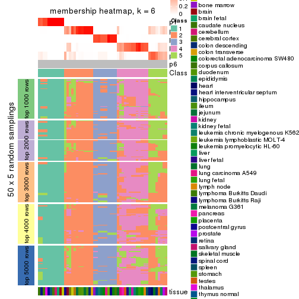
As soon as we have had the classes for columns, we can look for signatures which are significantly different between classes which can be candidate marks for certain classes. Following are the heatmaps for signatures.
Signature heatmaps where rows are scaled:
get_signatures(res, k = 2)
get_signatures(res, k = 3)
get_signatures(res, k = 4)
get_signatures(res, k = 5)
get_signatures(res, k = 6)
Signature heatmaps where rows are not scaled:
get_signatures(res, k = 2, scale_rows = FALSE)
get_signatures(res, k = 3, scale_rows = FALSE)
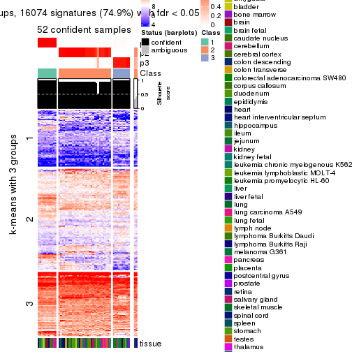
get_signatures(res, k = 4, scale_rows = FALSE)

get_signatures(res, k = 5, scale_rows = FALSE)
get_signatures(res, k = 6, scale_rows = FALSE)
Compare the overlap of signatures from different k:
compare_signatures(res)
get_signature() returns a data frame invisibly. TO get the list of signatures, the function
call should be assigned to a variable explicitly. In following code, if plot argument is set
to FALSE, no heatmap is plotted while only the differential analysis is performed.
# code only for demonstration
tb = get_signature(res, k = ..., plot = FALSE)
An example of the output of tb is:
#> which_row fdr mean_1 mean_2 scaled_mean_1 scaled_mean_2 km
#> 1 38 0.042760348 8.373488 9.131774 -0.5533452 0.5164555 1
#> 2 40 0.018707592 7.106213 8.469186 -0.6173731 0.5762149 1
#> 3 55 0.019134737 10.221463 11.207825 -0.6159697 0.5749050 1
#> 4 59 0.006059896 5.921854 7.869574 -0.6899429 0.6439467 1
#> 5 60 0.018055526 8.928898 10.211722 -0.6204761 0.5791110 1
#> 6 98 0.009384629 15.714769 14.887706 0.6635654 -0.6193277 2
...
The columns in tb are:
which_row: row indices corresponding to the input matrix.fdr: FDR for the differential test. mean_x: The mean value in group x.scaled_mean_x: The mean value in group x after rows are scaled.km: Row groups if k-means clustering is applied to rows.UMAP plot which shows how samples are separated.
dimension_reduction(res, k = 2, method = "UMAP")
dimension_reduction(res, k = 3, method = "UMAP")
dimension_reduction(res, k = 4, method = "UMAP")
dimension_reduction(res, k = 5, method = "UMAP")
dimension_reduction(res, k = 6, method = "UMAP")
Following heatmap shows how subgroups are split when increasing k:
collect_classes(res)
Test correlation between subgroups and known annotations. If the known annotation is numeric, one-way ANOVA test is applied, and if the known annotation is discrete, chi-squared contingency table test is applied.
test_to_known_factors(res)
#> n tissue(p) k
#> MAD:kmeans 38 0.378 2
#> MAD:kmeans 52 0.372 3
#> MAD:kmeans 53 0.353 4
#> MAD:kmeans 44 0.321 5
#> MAD:kmeans 44 0.321 6
If matrix rows can be associated to genes, consider to use GO_Enrichment(res,
...) to perform function enrichment for the signature genes.
The object with results only for a single top-value method and a single partition method can be extracted as:
res = res_list["MAD", "skmeans"]
# you can also extract it by
# res = res_list["MAD:skmeans"]
A summary of res and all the functions that can be applied to it:
res
#> A 'ConsensusPartition' object with k = 2, 3, 4, 5, 6.
#> On a matrix with 21452 rows and 54 columns.
#> Top rows (1000, 2000, 3000, 4000, 5000) are extracted by 'MAD' method.
#> Subgroups are detected by 'skmeans' method.
#> Performed in total 1250 partitions by row resampling.
#> Best k for subgroups seems to be 4.
#>
#> Following methods can be applied to this 'ConsensusPartition' object:
#> [1] "cola_report" "collect_classes" "collect_plots"
#> [4] "collect_stats" "colnames" "compare_signatures"
#> [7] "consensus_heatmap" "dimension_reduction" "functional_enrichment"
#> [10] "get_anno_col" "get_anno" "get_classes"
#> [13] "get_consensus" "get_matrix" "get_membership"
#> [16] "get_param" "get_signatures" "get_stats"
#> [19] "is_best_k" "is_stable_k" "membership_heatmap"
#> [22] "ncol" "nrow" "plot_ecdf"
#> [25] "rownames" "select_partition_number" "show"
#> [28] "suggest_best_k" "test_to_known_factors"
collect_plots() function collects all the plots made from res for all k (number of partitions)
into one single page to provide an easy and fast comparison between different k.
collect_plots(res)
The plots are:
k and the heatmap of
predicted classes for each k.k.k.k.All the plots in panels can be made by individual functions and they are plotted later in this section.
select_partition_number() produces several plots showing different
statistics for choosing “optimized” k. There are following statistics:
k;k, the area increased is defined as \(A_k - A_{k-1}\).The detailed explanations of these statistics can be found in the cola vignette.
Generally speaking, lower PAC score, higher mean silhouette score or higher
concordance corresponds to better partition. Rand index and Jaccard index
measure how similar the current partition is compared to partition with k-1.
If they are too similar, we won't accept k is better than k-1.
select_partition_number(res)
The numeric values for all these statistics can be obtained by get_stats().
get_stats(res)
#> k 1-PAC mean_silhouette concordance area_increased Rand Jaccard
#> 2 2 1.000 0.998 0.999 0.4928 0.508 0.508
#> 3 3 0.999 0.959 0.983 0.3188 0.715 0.499
#> 4 4 0.973 0.945 0.972 0.1414 0.871 0.646
#> 5 5 0.821 0.728 0.861 0.0792 0.914 0.681
#> 6 6 0.826 0.671 0.820 0.0357 0.924 0.652
suggest_best_k() suggests the best \(k\) based on these statistics. The rules are as follows:
NA.suggest_best_k(res)
#> [1] 4
#> attr(,"optional")
#> [1] 2 3
There is also optional best \(k\) = 2 3 that is worth to check.
Following shows the table of the partitions (You need to click the show/hide
code output link to see it). The membership matrix (columns with name p*)
is inferred by
clue::cl_consensus()
function with the SE method. Basically the value in the membership matrix
represents the probability to belong to a certain group. The finall class
label for an item is determined with the group with highest probability it
belongs to.
In get_classes() function, the entropy is calculated from the membership
matrix and the silhouette score is calculated from the consensus matrix.
cbind(get_classes(res, k = 2), get_membership(res, k = 2))
#> class entropy silhouette p1 p2
#> GSM28710 2 0.000 0.998 0.000 1.000
#> GSM28711 2 0.000 0.998 0.000 1.000
#> GSM28712 2 0.000 0.998 0.000 1.000
#> GSM11222 1 0.000 1.000 1.000 0.000
#> GSM28720 1 0.000 1.000 1.000 0.000
#> GSM11217 1 0.000 1.000 1.000 0.000
#> GSM28723 1 0.000 1.000 1.000 0.000
#> GSM11241 1 0.000 1.000 1.000 0.000
#> GSM28703 1 0.000 1.000 1.000 0.000
#> GSM11227 1 0.000 1.000 1.000 0.000
#> GSM28706 1 0.000 1.000 1.000 0.000
#> GSM11229 1 0.000 1.000 1.000 0.000
#> GSM11235 1 0.000 1.000 1.000 0.000
#> GSM28707 1 0.000 1.000 1.000 0.000
#> GSM11240 2 0.000 0.998 0.000 1.000
#> GSM28714 2 0.000 0.998 0.000 1.000
#> GSM11216 1 0.000 1.000 1.000 0.000
#> GSM28715 2 0.000 0.998 0.000 1.000
#> GSM11234 2 0.000 0.998 0.000 1.000
#> GSM28699 2 0.000 0.998 0.000 1.000
#> GSM11233 2 0.000 0.998 0.000 1.000
#> GSM28718 2 0.000 0.998 0.000 1.000
#> GSM11231 2 0.000 0.998 0.000 1.000
#> GSM11237 2 0.000 0.998 0.000 1.000
#> GSM11228 2 0.000 0.998 0.000 1.000
#> GSM28697 2 0.000 0.998 0.000 1.000
#> GSM28698 1 0.000 1.000 1.000 0.000
#> GSM11238 1 0.000 1.000 1.000 0.000
#> GSM11242 1 0.000 1.000 1.000 0.000
#> GSM28719 2 0.000 0.998 0.000 1.000
#> GSM28708 2 0.224 0.963 0.036 0.964
#> GSM28722 2 0.000 0.998 0.000 1.000
#> GSM11232 2 0.000 0.998 0.000 1.000
#> GSM28709 1 0.000 1.000 1.000 0.000
#> GSM11226 2 0.000 0.998 0.000 1.000
#> GSM11239 1 0.000 1.000 1.000 0.000
#> GSM11225 1 0.000 1.000 1.000 0.000
#> GSM11220 1 0.000 1.000 1.000 0.000
#> GSM28701 2 0.000 0.998 0.000 1.000
#> GSM28721 2 0.000 0.998 0.000 1.000
#> GSM28713 2 0.000 0.998 0.000 1.000
#> GSM28716 2 0.000 0.998 0.000 1.000
#> GSM11221 2 0.000 0.998 0.000 1.000
#> GSM28717 2 0.000 0.998 0.000 1.000
#> GSM11223 1 0.000 1.000 1.000 0.000
#> GSM11218 2 0.163 0.976 0.024 0.976
#> GSM11219 2 0.000 0.998 0.000 1.000
#> GSM11236 1 0.000 1.000 1.000 0.000
#> GSM28702 1 0.000 1.000 1.000 0.000
#> GSM28705 2 0.000 0.998 0.000 1.000
#> GSM11230 2 0.000 0.998 0.000 1.000
#> GSM28704 2 0.000 0.998 0.000 1.000
#> GSM28700 2 0.000 0.998 0.000 1.000
#> GSM11224 2 0.000 0.998 0.000 1.000
cbind(get_classes(res, k = 3), get_membership(res, k = 3))
#> class entropy silhouette p1 p2 p3
#> GSM28710 2 0.000 0.994 0 1.000 0.000
#> GSM28711 2 0.000 0.994 0 1.000 0.000
#> GSM28712 2 0.000 0.994 0 1.000 0.000
#> GSM11222 3 0.000 0.942 0 0.000 1.000
#> GSM28720 1 0.000 1.000 1 0.000 0.000
#> GSM11217 1 0.000 1.000 1 0.000 0.000
#> GSM28723 1 0.000 1.000 1 0.000 0.000
#> GSM11241 1 0.000 1.000 1 0.000 0.000
#> GSM28703 1 0.000 1.000 1 0.000 0.000
#> GSM11227 1 0.000 1.000 1 0.000 0.000
#> GSM28706 1 0.000 1.000 1 0.000 0.000
#> GSM11229 1 0.000 1.000 1 0.000 0.000
#> GSM11235 1 0.000 1.000 1 0.000 0.000
#> GSM28707 1 0.000 1.000 1 0.000 0.000
#> GSM11240 2 0.000 0.994 0 1.000 0.000
#> GSM28714 2 0.000 0.994 0 1.000 0.000
#> GSM11216 3 0.000 0.942 0 0.000 1.000
#> GSM28715 2 0.000 0.994 0 1.000 0.000
#> GSM11234 2 0.000 0.994 0 1.000 0.000
#> GSM28699 2 0.000 0.994 0 1.000 0.000
#> GSM11233 2 0.000 0.994 0 1.000 0.000
#> GSM28718 2 0.000 0.994 0 1.000 0.000
#> GSM11231 2 0.000 0.994 0 1.000 0.000
#> GSM11237 2 0.000 0.994 0 1.000 0.000
#> GSM11228 3 0.546 0.629 0 0.288 0.712
#> GSM28697 2 0.186 0.942 0 0.948 0.052
#> GSM28698 3 0.000 0.942 0 0.000 1.000
#> GSM11238 3 0.000 0.942 0 0.000 1.000
#> GSM11242 3 0.000 0.942 0 0.000 1.000
#> GSM28719 3 0.581 0.537 0 0.336 0.664
#> GSM28708 3 0.000 0.942 0 0.000 1.000
#> GSM28722 2 0.000 0.994 0 1.000 0.000
#> GSM11232 2 0.000 0.994 0 1.000 0.000
#> GSM28709 3 0.000 0.942 0 0.000 1.000
#> GSM11226 3 0.000 0.942 0 0.000 1.000
#> GSM11239 3 0.000 0.942 0 0.000 1.000
#> GSM11225 3 0.000 0.942 0 0.000 1.000
#> GSM11220 3 0.000 0.942 0 0.000 1.000
#> GSM28701 2 0.236 0.918 0 0.928 0.072
#> GSM28721 3 0.000 0.942 0 0.000 1.000
#> GSM28713 2 0.000 0.994 0 1.000 0.000
#> GSM28716 1 0.000 1.000 1 0.000 0.000
#> GSM11221 2 0.000 0.994 0 1.000 0.000
#> GSM28717 2 0.000 0.994 0 1.000 0.000
#> GSM11223 1 0.000 1.000 1 0.000 0.000
#> GSM11218 3 0.000 0.942 0 0.000 1.000
#> GSM11219 2 0.000 0.994 0 1.000 0.000
#> GSM11236 3 0.000 0.942 0 0.000 1.000
#> GSM28702 3 0.000 0.942 0 0.000 1.000
#> GSM28705 3 0.450 0.760 0 0.196 0.804
#> GSM11230 2 0.000 0.994 0 1.000 0.000
#> GSM28704 2 0.000 0.994 0 1.000 0.000
#> GSM28700 2 0.000 0.994 0 1.000 0.000
#> GSM11224 2 0.000 0.994 0 1.000 0.000
cbind(get_classes(res, k = 4), get_membership(res, k = 4))
#> class entropy silhouette p1 p2 p3 p4
#> GSM28710 2 0.0707 0.971 0.000 0.980 0.000 0.020
#> GSM28711 2 0.3942 0.667 0.000 0.764 0.000 0.236
#> GSM28712 2 0.0000 0.977 0.000 1.000 0.000 0.000
#> GSM11222 3 0.0000 0.998 0.000 0.000 1.000 0.000
#> GSM28720 1 0.0000 0.999 1.000 0.000 0.000 0.000
#> GSM11217 1 0.0000 0.999 1.000 0.000 0.000 0.000
#> GSM28723 1 0.0000 0.999 1.000 0.000 0.000 0.000
#> GSM11241 1 0.0000 0.999 1.000 0.000 0.000 0.000
#> GSM28703 1 0.0000 0.999 1.000 0.000 0.000 0.000
#> GSM11227 1 0.0000 0.999 1.000 0.000 0.000 0.000
#> GSM28706 1 0.0000 0.999 1.000 0.000 0.000 0.000
#> GSM11229 1 0.0000 0.999 1.000 0.000 0.000 0.000
#> GSM11235 1 0.0000 0.999 1.000 0.000 0.000 0.000
#> GSM28707 1 0.0000 0.999 1.000 0.000 0.000 0.000
#> GSM11240 2 0.0336 0.977 0.000 0.992 0.000 0.008
#> GSM28714 2 0.0336 0.977 0.000 0.992 0.000 0.008
#> GSM11216 3 0.0000 0.998 0.000 0.000 1.000 0.000
#> GSM28715 2 0.0336 0.977 0.000 0.992 0.000 0.008
#> GSM11234 2 0.0817 0.970 0.000 0.976 0.000 0.024
#> GSM28699 2 0.0469 0.974 0.000 0.988 0.000 0.012
#> GSM11233 2 0.0469 0.974 0.000 0.988 0.000 0.012
#> GSM28718 2 0.0336 0.977 0.000 0.992 0.000 0.008
#> GSM11231 2 0.0707 0.971 0.000 0.980 0.000 0.020
#> GSM11237 2 0.0336 0.977 0.000 0.992 0.000 0.008
#> GSM11228 4 0.0469 0.892 0.000 0.000 0.012 0.988
#> GSM28697 4 0.0469 0.888 0.000 0.012 0.000 0.988
#> GSM28698 3 0.0000 0.998 0.000 0.000 1.000 0.000
#> GSM11238 3 0.0000 0.998 0.000 0.000 1.000 0.000
#> GSM11242 3 0.0000 0.998 0.000 0.000 1.000 0.000
#> GSM28719 4 0.0469 0.892 0.000 0.000 0.012 0.988
#> GSM28708 4 0.0707 0.891 0.000 0.000 0.020 0.980
#> GSM28722 4 0.4888 0.320 0.000 0.412 0.000 0.588
#> GSM11232 4 0.0469 0.888 0.000 0.012 0.000 0.988
#> GSM28709 3 0.0000 0.998 0.000 0.000 1.000 0.000
#> GSM11226 4 0.2647 0.830 0.000 0.000 0.120 0.880
#> GSM11239 3 0.0000 0.998 0.000 0.000 1.000 0.000
#> GSM11225 3 0.0000 0.998 0.000 0.000 1.000 0.000
#> GSM11220 3 0.0000 0.998 0.000 0.000 1.000 0.000
#> GSM28701 4 0.3688 0.714 0.000 0.208 0.000 0.792
#> GSM28721 4 0.0817 0.891 0.000 0.000 0.024 0.976
#> GSM28713 2 0.0188 0.976 0.000 0.996 0.000 0.004
#> GSM28716 1 0.0657 0.985 0.984 0.004 0.000 0.012
#> GSM11221 2 0.0336 0.976 0.000 0.992 0.000 0.008
#> GSM28717 2 0.0469 0.974 0.000 0.988 0.000 0.012
#> GSM11223 1 0.0000 0.999 1.000 0.000 0.000 0.000
#> GSM11218 4 0.3172 0.790 0.000 0.000 0.160 0.840
#> GSM11219 2 0.0336 0.977 0.000 0.992 0.000 0.008
#> GSM11236 3 0.0707 0.979 0.000 0.000 0.980 0.020
#> GSM28702 3 0.0000 0.998 0.000 0.000 1.000 0.000
#> GSM28705 4 0.0817 0.891 0.000 0.000 0.024 0.976
#> GSM11230 2 0.0469 0.976 0.000 0.988 0.000 0.012
#> GSM28704 2 0.0707 0.971 0.000 0.980 0.000 0.020
#> GSM28700 2 0.0469 0.974 0.000 0.988 0.000 0.012
#> GSM11224 2 0.0000 0.977 0.000 1.000 0.000 0.000
cbind(get_classes(res, k = 5), get_membership(res, k = 5))
#> class entropy silhouette p1 p2 p3 p4 p5
#> GSM28710 5 0.2813 0.5210 0.000 0.108 0.000 0.024 0.868
#> GSM28711 5 0.5575 0.3951 0.000 0.280 0.000 0.108 0.612
#> GSM28712 2 0.2377 0.6687 0.000 0.872 0.000 0.000 0.128
#> GSM11222 3 0.0000 0.9939 0.000 0.000 1.000 0.000 0.000
#> GSM28720 1 0.0000 0.9624 1.000 0.000 0.000 0.000 0.000
#> GSM11217 1 0.0000 0.9624 1.000 0.000 0.000 0.000 0.000
#> GSM28723 1 0.0000 0.9624 1.000 0.000 0.000 0.000 0.000
#> GSM11241 1 0.0000 0.9624 1.000 0.000 0.000 0.000 0.000
#> GSM28703 1 0.0000 0.9624 1.000 0.000 0.000 0.000 0.000
#> GSM11227 1 0.0000 0.9624 1.000 0.000 0.000 0.000 0.000
#> GSM28706 1 0.0000 0.9624 1.000 0.000 0.000 0.000 0.000
#> GSM11229 1 0.0000 0.9624 1.000 0.000 0.000 0.000 0.000
#> GSM11235 1 0.0000 0.9624 1.000 0.000 0.000 0.000 0.000
#> GSM28707 1 0.0000 0.9624 1.000 0.000 0.000 0.000 0.000
#> GSM11240 2 0.0000 0.7507 0.000 1.000 0.000 0.000 0.000
#> GSM28714 2 0.0000 0.7507 0.000 1.000 0.000 0.000 0.000
#> GSM11216 3 0.0000 0.9939 0.000 0.000 1.000 0.000 0.000
#> GSM28715 2 0.0000 0.7507 0.000 1.000 0.000 0.000 0.000
#> GSM11234 5 0.4774 0.0582 0.000 0.424 0.000 0.020 0.556
#> GSM28699 5 0.3816 0.4600 0.000 0.304 0.000 0.000 0.696
#> GSM11233 2 0.4297 -0.1659 0.000 0.528 0.000 0.000 0.472
#> GSM28718 2 0.0000 0.7507 0.000 1.000 0.000 0.000 0.000
#> GSM11231 2 0.0609 0.7384 0.000 0.980 0.000 0.020 0.000
#> GSM11237 2 0.0000 0.7507 0.000 1.000 0.000 0.000 0.000
#> GSM11228 4 0.1197 0.8614 0.000 0.000 0.000 0.952 0.048
#> GSM28697 4 0.1270 0.8604 0.000 0.000 0.000 0.948 0.052
#> GSM28698 3 0.0000 0.9939 0.000 0.000 1.000 0.000 0.000
#> GSM11238 3 0.0000 0.9939 0.000 0.000 1.000 0.000 0.000
#> GSM11242 3 0.0000 0.9939 0.000 0.000 1.000 0.000 0.000
#> GSM28719 4 0.1608 0.8526 0.000 0.000 0.000 0.928 0.072
#> GSM28708 4 0.1478 0.8563 0.000 0.000 0.000 0.936 0.064
#> GSM28722 2 0.5804 0.2494 0.000 0.576 0.000 0.304 0.120
#> GSM11232 4 0.1981 0.8437 0.000 0.016 0.000 0.920 0.064
#> GSM28709 3 0.0000 0.9939 0.000 0.000 1.000 0.000 0.000
#> GSM11226 4 0.4199 0.7423 0.000 0.000 0.180 0.764 0.056
#> GSM11239 3 0.0000 0.9939 0.000 0.000 1.000 0.000 0.000
#> GSM11225 3 0.0000 0.9939 0.000 0.000 1.000 0.000 0.000
#> GSM11220 3 0.0000 0.9939 0.000 0.000 1.000 0.000 0.000
#> GSM28701 5 0.4748 -0.2019 0.000 0.016 0.000 0.492 0.492
#> GSM28721 4 0.2236 0.8523 0.000 0.000 0.024 0.908 0.068
#> GSM28713 2 0.4451 0.3975 0.000 0.644 0.000 0.016 0.340
#> GSM28716 1 0.4171 0.3868 0.604 0.000 0.000 0.000 0.396
#> GSM11221 5 0.4644 0.0148 0.000 0.460 0.000 0.012 0.528
#> GSM28717 5 0.3816 0.4600 0.000 0.304 0.000 0.000 0.696
#> GSM11223 1 0.0000 0.9624 1.000 0.000 0.000 0.000 0.000
#> GSM11218 4 0.4477 0.6699 0.000 0.000 0.252 0.708 0.040
#> GSM11219 2 0.0290 0.7491 0.000 0.992 0.000 0.000 0.008
#> GSM11236 3 0.1557 0.9363 0.000 0.000 0.940 0.052 0.008
#> GSM28702 3 0.0000 0.9939 0.000 0.000 1.000 0.000 0.000
#> GSM28705 4 0.1956 0.8541 0.000 0.000 0.008 0.916 0.076
#> GSM11230 2 0.3197 0.6256 0.000 0.836 0.000 0.024 0.140
#> GSM28704 2 0.4269 0.5383 0.000 0.732 0.000 0.036 0.232
#> GSM28700 2 0.4210 0.1091 0.000 0.588 0.000 0.000 0.412
#> GSM11224 2 0.2329 0.6826 0.000 0.876 0.000 0.000 0.124
cbind(get_classes(res, k = 6), get_membership(res, k = 6))
#> class entropy silhouette p1 p2 p3 p4 p5 p6
#> GSM28710 5 0.4733 0.3940 0.000 0.072 0.000 0.276 0.648 0.004
#> GSM28711 4 0.7141 -0.1411 0.000 0.136 0.000 0.408 0.312 0.144
#> GSM28712 2 0.3284 0.6108 0.000 0.800 0.000 0.032 0.168 0.000
#> GSM11222 3 0.1387 0.9230 0.000 0.000 0.932 0.000 0.000 0.068
#> GSM28720 1 0.0000 1.0000 1.000 0.000 0.000 0.000 0.000 0.000
#> GSM11217 1 0.0000 1.0000 1.000 0.000 0.000 0.000 0.000 0.000
#> GSM28723 1 0.0000 1.0000 1.000 0.000 0.000 0.000 0.000 0.000
#> GSM11241 1 0.0000 1.0000 1.000 0.000 0.000 0.000 0.000 0.000
#> GSM28703 1 0.0000 1.0000 1.000 0.000 0.000 0.000 0.000 0.000
#> GSM11227 1 0.0000 1.0000 1.000 0.000 0.000 0.000 0.000 0.000
#> GSM28706 1 0.0000 1.0000 1.000 0.000 0.000 0.000 0.000 0.000
#> GSM11229 1 0.0000 1.0000 1.000 0.000 0.000 0.000 0.000 0.000
#> GSM11235 1 0.0000 1.0000 1.000 0.000 0.000 0.000 0.000 0.000
#> GSM28707 1 0.0000 1.0000 1.000 0.000 0.000 0.000 0.000 0.000
#> GSM11240 2 0.0260 0.7731 0.000 0.992 0.000 0.000 0.008 0.000
#> GSM28714 2 0.0260 0.7731 0.000 0.992 0.000 0.000 0.008 0.000
#> GSM11216 3 0.0146 0.9659 0.000 0.000 0.996 0.004 0.000 0.000
#> GSM28715 2 0.0363 0.7718 0.000 0.988 0.000 0.000 0.012 0.000
#> GSM11234 5 0.6145 0.3715 0.000 0.216 0.000 0.136 0.580 0.068
#> GSM28699 5 0.2704 0.5818 0.000 0.140 0.000 0.016 0.844 0.000
#> GSM11233 5 0.3695 0.3876 0.000 0.376 0.000 0.000 0.624 0.000
#> GSM28718 2 0.0260 0.7731 0.000 0.992 0.000 0.000 0.008 0.000
#> GSM11231 2 0.1349 0.7378 0.000 0.940 0.000 0.056 0.004 0.000
#> GSM11237 2 0.0260 0.7731 0.000 0.992 0.000 0.000 0.008 0.000
#> GSM11228 4 0.4169 0.4905 0.000 0.000 0.000 0.532 0.012 0.456
#> GSM28697 4 0.4305 0.4928 0.000 0.000 0.000 0.544 0.020 0.436
#> GSM28698 3 0.0000 0.9665 0.000 0.000 1.000 0.000 0.000 0.000
#> GSM11238 3 0.0000 0.9665 0.000 0.000 1.000 0.000 0.000 0.000
#> GSM11242 3 0.0000 0.9665 0.000 0.000 1.000 0.000 0.000 0.000
#> GSM28719 4 0.3706 0.5366 0.000 0.000 0.000 0.620 0.000 0.380
#> GSM28708 4 0.4045 0.5171 0.000 0.000 0.008 0.564 0.000 0.428
#> GSM28722 6 0.7284 -0.1122 0.000 0.332 0.000 0.192 0.120 0.356
#> GSM11232 6 0.4887 0.2815 0.000 0.052 0.000 0.180 0.060 0.708
#> GSM28709 3 0.0146 0.9659 0.000 0.000 0.996 0.004 0.000 0.000
#> GSM11226 6 0.2213 0.5351 0.000 0.000 0.100 0.008 0.004 0.888
#> GSM11239 3 0.0000 0.9665 0.000 0.000 1.000 0.000 0.000 0.000
#> GSM11225 3 0.0000 0.9665 0.000 0.000 1.000 0.000 0.000 0.000
#> GSM11220 3 0.0146 0.9659 0.000 0.000 0.996 0.004 0.000 0.000
#> GSM28701 4 0.3694 0.3691 0.000 0.016 0.000 0.804 0.124 0.056
#> GSM28721 6 0.0146 0.5437 0.000 0.000 0.004 0.000 0.000 0.996
#> GSM28713 2 0.6647 0.0191 0.000 0.420 0.000 0.148 0.368 0.064
#> GSM28716 5 0.3774 0.2134 0.408 0.000 0.000 0.000 0.592 0.000
#> GSM11221 5 0.6688 0.1293 0.000 0.280 0.000 0.240 0.436 0.044
#> GSM28717 5 0.2704 0.5818 0.000 0.140 0.000 0.016 0.844 0.000
#> GSM11223 1 0.0000 1.0000 1.000 0.000 0.000 0.000 0.000 0.000
#> GSM11218 6 0.2703 0.4677 0.000 0.000 0.172 0.004 0.000 0.824
#> GSM11219 2 0.1245 0.7620 0.000 0.952 0.000 0.016 0.032 0.000
#> GSM11236 3 0.3290 0.8032 0.000 0.000 0.820 0.132 0.004 0.044
#> GSM28702 3 0.1501 0.9170 0.000 0.000 0.924 0.000 0.000 0.076
#> GSM28705 6 0.0806 0.5275 0.000 0.000 0.000 0.020 0.008 0.972
#> GSM11230 2 0.4843 0.5712 0.000 0.732 0.000 0.108 0.100 0.060
#> GSM28704 2 0.6844 0.3196 0.000 0.508 0.000 0.204 0.148 0.140
#> GSM28700 5 0.5064 0.2540 0.000 0.392 0.000 0.060 0.540 0.008
#> GSM11224 2 0.4257 0.5549 0.000 0.728 0.000 0.060 0.204 0.008
Heatmaps for the consensus matrix. It visualizes the probability of two samples to be in a same group.
consensus_heatmap(res, k = 2)
consensus_heatmap(res, k = 3)
consensus_heatmap(res, k = 4)
consensus_heatmap(res, k = 5)
consensus_heatmap(res, k = 6)
Heatmaps for the membership of samples in all partitions to see how consistent they are:
membership_heatmap(res, k = 2)
membership_heatmap(res, k = 3)
membership_heatmap(res, k = 4)
membership_heatmap(res, k = 5)
membership_heatmap(res, k = 6)
As soon as we have had the classes for columns, we can look for signatures which are significantly different between classes which can be candidate marks for certain classes. Following are the heatmaps for signatures.
Signature heatmaps where rows are scaled:
get_signatures(res, k = 2)
get_signatures(res, k = 3)
get_signatures(res, k = 4)
get_signatures(res, k = 5)
get_signatures(res, k = 6)
Signature heatmaps where rows are not scaled:
get_signatures(res, k = 2, scale_rows = FALSE)
get_signatures(res, k = 3, scale_rows = FALSE)
get_signatures(res, k = 4, scale_rows = FALSE)
get_signatures(res, k = 5, scale_rows = FALSE)
get_signatures(res, k = 6, scale_rows = FALSE)
Compare the overlap of signatures from different k:
compare_signatures(res)
get_signature() returns a data frame invisibly. TO get the list of signatures, the function
call should be assigned to a variable explicitly. In following code, if plot argument is set
to FALSE, no heatmap is plotted while only the differential analysis is performed.
# code only for demonstration
tb = get_signature(res, k = ..., plot = FALSE)
An example of the output of tb is:
#> which_row fdr mean_1 mean_2 scaled_mean_1 scaled_mean_2 km
#> 1 38 0.042760348 8.373488 9.131774 -0.5533452 0.5164555 1
#> 2 40 0.018707592 7.106213 8.469186 -0.6173731 0.5762149 1
#> 3 55 0.019134737 10.221463 11.207825 -0.6159697 0.5749050 1
#> 4 59 0.006059896 5.921854 7.869574 -0.6899429 0.6439467 1
#> 5 60 0.018055526 8.928898 10.211722 -0.6204761 0.5791110 1
#> 6 98 0.009384629 15.714769 14.887706 0.6635654 -0.6193277 2
...
The columns in tb are:
which_row: row indices corresponding to the input matrix.fdr: FDR for the differential test. mean_x: The mean value in group x.scaled_mean_x: The mean value in group x after rows are scaled.km: Row groups if k-means clustering is applied to rows.UMAP plot which shows how samples are separated.
dimension_reduction(res, k = 2, method = "UMAP")
dimension_reduction(res, k = 3, method = "UMAP")
dimension_reduction(res, k = 4, method = "UMAP")
dimension_reduction(res, k = 5, method = "UMAP")
dimension_reduction(res, k = 6, method = "UMAP")
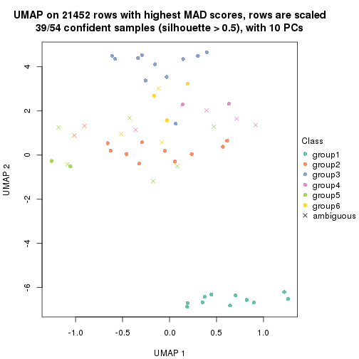
Following heatmap shows how subgroups are split when increasing k:
collect_classes(res)
Test correlation between subgroups and known annotations. If the known annotation is numeric, one-way ANOVA test is applied, and if the known annotation is discrete, chi-squared contingency table test is applied.
test_to_known_factors(res)
#> n tissue(p) k
#> MAD:skmeans 54 0.398 2
#> MAD:skmeans 54 0.374 3
#> MAD:skmeans 53 0.353 4
#> MAD:skmeans 43 0.319 5
#> MAD:skmeans 39 0.293 6
If matrix rows can be associated to genes, consider to use GO_Enrichment(res,
...) to perform function enrichment for the signature genes.
The object with results only for a single top-value method and a single partition method can be extracted as:
res = res_list["MAD", "pam"]
# you can also extract it by
# res = res_list["MAD:pam"]
A summary of res and all the functions that can be applied to it:
res
#> A 'ConsensusPartition' object with k = 2, 3, 4, 5, 6.
#> On a matrix with 21452 rows and 54 columns.
#> Top rows (1000, 2000, 3000, 4000, 5000) are extracted by 'MAD' method.
#> Subgroups are detected by 'pam' method.
#> Performed in total 1250 partitions by row resampling.
#> Best k for subgroups seems to be 2.
#>
#> Following methods can be applied to this 'ConsensusPartition' object:
#> [1] "cola_report" "collect_classes" "collect_plots"
#> [4] "collect_stats" "colnames" "compare_signatures"
#> [7] "consensus_heatmap" "dimension_reduction" "functional_enrichment"
#> [10] "get_anno_col" "get_anno" "get_classes"
#> [13] "get_consensus" "get_matrix" "get_membership"
#> [16] "get_param" "get_signatures" "get_stats"
#> [19] "is_best_k" "is_stable_k" "membership_heatmap"
#> [22] "ncol" "nrow" "plot_ecdf"
#> [25] "rownames" "select_partition_number" "show"
#> [28] "suggest_best_k" "test_to_known_factors"
collect_plots() function collects all the plots made from res for all k (number of partitions)
into one single page to provide an easy and fast comparison between different k.
collect_plots(res)
The plots are:
k and the heatmap of
predicted classes for each k.k.k.k.All the plots in panels can be made by individual functions and they are plotted later in this section.
select_partition_number() produces several plots showing different
statistics for choosing “optimized” k. There are following statistics:
k;k, the area increased is defined as \(A_k - A_{k-1}\).The detailed explanations of these statistics can be found in the cola vignette.
Generally speaking, lower PAC score, higher mean silhouette score or higher
concordance corresponds to better partition. Rand index and Jaccard index
measure how similar the current partition is compared to partition with k-1.
If they are too similar, we won't accept k is better than k-1.
select_partition_number(res)
The numeric values for all these statistics can be obtained by get_stats().
get_stats(res)
#> k 1-PAC mean_silhouette concordance area_increased Rand Jaccard
#> 2 2 0.762 0.942 0.972 0.4573 0.535 0.535
#> 3 3 0.866 0.891 0.958 0.3331 0.770 0.596
#> 4 4 0.892 0.902 0.944 0.1848 0.865 0.658
#> 5 5 0.830 0.735 0.878 0.0855 0.864 0.560
#> 6 6 0.844 0.704 0.856 0.0306 0.897 0.607
suggest_best_k() suggests the best \(k\) based on these statistics. The rules are as follows:
NA.suggest_best_k(res)
#> [1] 2
Following shows the table of the partitions (You need to click the show/hide
code output link to see it). The membership matrix (columns with name p*)
is inferred by
clue::cl_consensus()
function with the SE method. Basically the value in the membership matrix
represents the probability to belong to a certain group. The finall class
label for an item is determined with the group with highest probability it
belongs to.
In get_classes() function, the entropy is calculated from the membership
matrix and the silhouette score is calculated from the consensus matrix.
cbind(get_classes(res, k = 2), get_membership(res, k = 2))
#> class entropy silhouette p1 p2
#> GSM28710 2 0.0000 0.9816 0.000 1.000
#> GSM28711 2 0.0000 0.9816 0.000 1.000
#> GSM28712 2 0.0000 0.9816 0.000 1.000
#> GSM11222 2 0.0000 0.9816 0.000 1.000
#> GSM28720 1 0.0000 0.9436 1.000 0.000
#> GSM11217 1 0.0000 0.9436 1.000 0.000
#> GSM28723 1 0.0000 0.9436 1.000 0.000
#> GSM11241 1 0.0000 0.9436 1.000 0.000
#> GSM28703 1 0.0000 0.9436 1.000 0.000
#> GSM11227 1 0.0000 0.9436 1.000 0.000
#> GSM28706 1 0.0000 0.9436 1.000 0.000
#> GSM11229 1 0.0000 0.9436 1.000 0.000
#> GSM11235 1 0.0000 0.9436 1.000 0.000
#> GSM28707 1 0.0000 0.9436 1.000 0.000
#> GSM11240 2 0.0000 0.9816 0.000 1.000
#> GSM28714 2 0.0000 0.9816 0.000 1.000
#> GSM11216 1 0.5737 0.8925 0.864 0.136
#> GSM28715 2 0.0000 0.9816 0.000 1.000
#> GSM11234 2 0.0000 0.9816 0.000 1.000
#> GSM28699 2 0.5629 0.8318 0.132 0.868
#> GSM11233 2 0.0000 0.9816 0.000 1.000
#> GSM28718 2 0.0000 0.9816 0.000 1.000
#> GSM11231 2 0.0000 0.9816 0.000 1.000
#> GSM11237 2 0.0000 0.9816 0.000 1.000
#> GSM11228 2 0.0000 0.9816 0.000 1.000
#> GSM28697 2 0.0000 0.9816 0.000 1.000
#> GSM28698 1 0.5737 0.8925 0.864 0.136
#> GSM11238 1 0.5737 0.8925 0.864 0.136
#> GSM11242 1 0.5737 0.8925 0.864 0.136
#> GSM28719 2 0.0000 0.9816 0.000 1.000
#> GSM28708 2 0.0000 0.9816 0.000 1.000
#> GSM28722 2 0.0000 0.9816 0.000 1.000
#> GSM11232 2 0.0000 0.9816 0.000 1.000
#> GSM28709 2 0.9909 0.0912 0.444 0.556
#> GSM11226 2 0.0000 0.9816 0.000 1.000
#> GSM11239 1 0.5737 0.8925 0.864 0.136
#> GSM11225 1 0.5737 0.8925 0.864 0.136
#> GSM11220 1 0.5737 0.8925 0.864 0.136
#> GSM28701 2 0.0000 0.9816 0.000 1.000
#> GSM28721 2 0.0000 0.9816 0.000 1.000
#> GSM28713 2 0.0000 0.9816 0.000 1.000
#> GSM28716 1 0.0376 0.9420 0.996 0.004
#> GSM11221 2 0.0000 0.9816 0.000 1.000
#> GSM28717 2 0.0000 0.9816 0.000 1.000
#> GSM11223 1 0.0000 0.9436 1.000 0.000
#> GSM11218 2 0.0000 0.9816 0.000 1.000
#> GSM11219 2 0.0000 0.9816 0.000 1.000
#> GSM11236 2 0.0000 0.9816 0.000 1.000
#> GSM28702 2 0.0000 0.9816 0.000 1.000
#> GSM28705 2 0.0000 0.9816 0.000 1.000
#> GSM11230 2 0.0000 0.9816 0.000 1.000
#> GSM28704 2 0.0000 0.9816 0.000 1.000
#> GSM28700 2 0.0000 0.9816 0.000 1.000
#> GSM11224 2 0.0000 0.9816 0.000 1.000
cbind(get_classes(res, k = 3), get_membership(res, k = 3))
#> class entropy silhouette p1 p2 p3
#> GSM28710 2 0.000 0.975 0.00 1.000 0.000
#> GSM28711 2 0.000 0.975 0.00 1.000 0.000
#> GSM28712 2 0.000 0.975 0.00 1.000 0.000
#> GSM11222 3 0.000 0.829 0.00 0.000 1.000
#> GSM28720 1 0.000 0.993 1.00 0.000 0.000
#> GSM11217 1 0.000 0.993 1.00 0.000 0.000
#> GSM28723 1 0.000 0.993 1.00 0.000 0.000
#> GSM11241 1 0.000 0.993 1.00 0.000 0.000
#> GSM28703 1 0.000 0.993 1.00 0.000 0.000
#> GSM11227 1 0.000 0.993 1.00 0.000 0.000
#> GSM28706 1 0.000 0.993 1.00 0.000 0.000
#> GSM11229 1 0.000 0.993 1.00 0.000 0.000
#> GSM11235 1 0.000 0.993 1.00 0.000 0.000
#> GSM28707 1 0.000 0.993 1.00 0.000 0.000
#> GSM11240 2 0.000 0.975 0.00 1.000 0.000
#> GSM28714 2 0.000 0.975 0.00 1.000 0.000
#> GSM11216 3 0.000 0.829 0.00 0.000 1.000
#> GSM28715 2 0.000 0.975 0.00 1.000 0.000
#> GSM11234 2 0.000 0.975 0.00 1.000 0.000
#> GSM28699 2 0.000 0.975 0.00 1.000 0.000
#> GSM11233 2 0.000 0.975 0.00 1.000 0.000
#> GSM28718 2 0.000 0.975 0.00 1.000 0.000
#> GSM11231 2 0.000 0.975 0.00 1.000 0.000
#> GSM11237 2 0.000 0.975 0.00 1.000 0.000
#> GSM11228 2 0.445 0.708 0.00 0.808 0.192
#> GSM28697 2 0.000 0.975 0.00 1.000 0.000
#> GSM28698 3 0.000 0.829 0.00 0.000 1.000
#> GSM11238 3 0.000 0.829 0.00 0.000 1.000
#> GSM11242 3 0.000 0.829 0.00 0.000 1.000
#> GSM28719 2 0.000 0.975 0.00 1.000 0.000
#> GSM28708 3 0.619 0.409 0.00 0.420 0.580
#> GSM28722 2 0.000 0.975 0.00 1.000 0.000
#> GSM11232 2 0.000 0.975 0.00 1.000 0.000
#> GSM28709 3 0.000 0.829 0.00 0.000 1.000
#> GSM11226 3 0.619 0.409 0.00 0.420 0.580
#> GSM11239 3 0.000 0.829 0.00 0.000 1.000
#> GSM11225 3 0.000 0.829 0.00 0.000 1.000
#> GSM11220 3 0.000 0.829 0.00 0.000 1.000
#> GSM28701 2 0.000 0.975 0.00 1.000 0.000
#> GSM28721 3 0.619 0.409 0.00 0.420 0.580
#> GSM28713 2 0.000 0.975 0.00 1.000 0.000
#> GSM28716 1 0.207 0.916 0.94 0.060 0.000
#> GSM11221 2 0.000 0.975 0.00 1.000 0.000
#> GSM28717 2 0.000 0.975 0.00 1.000 0.000
#> GSM11223 1 0.000 0.993 1.00 0.000 0.000
#> GSM11218 3 0.613 0.447 0.00 0.400 0.600
#> GSM11219 2 0.000 0.975 0.00 1.000 0.000
#> GSM11236 2 0.000 0.975 0.00 1.000 0.000
#> GSM28702 3 0.000 0.829 0.00 0.000 1.000
#> GSM28705 2 0.599 0.277 0.00 0.632 0.368
#> GSM11230 2 0.000 0.975 0.00 1.000 0.000
#> GSM28704 2 0.000 0.975 0.00 1.000 0.000
#> GSM28700 2 0.000 0.975 0.00 1.000 0.000
#> GSM11224 2 0.000 0.975 0.00 1.000 0.000
cbind(get_classes(res, k = 4), get_membership(res, k = 4))
#> class entropy silhouette p1 p2 p3 p4
#> GSM28710 2 0.1716 0.917 0.000 0.936 0.000 0.064
#> GSM28711 4 0.2408 0.806 0.000 0.104 0.000 0.896
#> GSM28712 2 0.0469 0.934 0.000 0.988 0.000 0.012
#> GSM11222 4 0.4277 0.616 0.000 0.000 0.280 0.720
#> GSM28720 1 0.0000 0.990 1.000 0.000 0.000 0.000
#> GSM11217 1 0.0000 0.990 1.000 0.000 0.000 0.000
#> GSM28723 1 0.0000 0.990 1.000 0.000 0.000 0.000
#> GSM11241 1 0.0000 0.990 1.000 0.000 0.000 0.000
#> GSM28703 1 0.0000 0.990 1.000 0.000 0.000 0.000
#> GSM11227 1 0.0000 0.990 1.000 0.000 0.000 0.000
#> GSM28706 1 0.0000 0.990 1.000 0.000 0.000 0.000
#> GSM11229 1 0.0000 0.990 1.000 0.000 0.000 0.000
#> GSM11235 1 0.0000 0.990 1.000 0.000 0.000 0.000
#> GSM28707 1 0.0000 0.990 1.000 0.000 0.000 0.000
#> GSM11240 2 0.1118 0.926 0.000 0.964 0.000 0.036
#> GSM28714 2 0.1118 0.926 0.000 0.964 0.000 0.036
#> GSM11216 3 0.0000 1.000 0.000 0.000 1.000 0.000
#> GSM28715 2 0.1118 0.926 0.000 0.964 0.000 0.036
#> GSM11234 2 0.2868 0.869 0.000 0.864 0.000 0.136
#> GSM28699 2 0.0817 0.932 0.000 0.976 0.000 0.024
#> GSM11233 2 0.1118 0.926 0.000 0.964 0.000 0.036
#> GSM28718 2 0.1118 0.926 0.000 0.964 0.000 0.036
#> GSM11231 2 0.1118 0.926 0.000 0.964 0.000 0.036
#> GSM11237 2 0.1118 0.926 0.000 0.964 0.000 0.036
#> GSM11228 4 0.1302 0.847 0.000 0.044 0.000 0.956
#> GSM28697 4 0.4948 0.042 0.000 0.440 0.000 0.560
#> GSM28698 3 0.0000 1.000 0.000 0.000 1.000 0.000
#> GSM11238 3 0.0000 1.000 0.000 0.000 1.000 0.000
#> GSM11242 3 0.0000 1.000 0.000 0.000 1.000 0.000
#> GSM28719 4 0.1118 0.850 0.000 0.036 0.000 0.964
#> GSM28708 4 0.1474 0.853 0.000 0.000 0.052 0.948
#> GSM28722 2 0.3311 0.836 0.000 0.828 0.000 0.172
#> GSM11232 2 0.3528 0.816 0.000 0.808 0.000 0.192
#> GSM28709 3 0.0000 1.000 0.000 0.000 1.000 0.000
#> GSM11226 4 0.1807 0.856 0.000 0.008 0.052 0.940
#> GSM11239 3 0.0000 1.000 0.000 0.000 1.000 0.000
#> GSM11225 3 0.0000 1.000 0.000 0.000 1.000 0.000
#> GSM11220 3 0.0000 1.000 0.000 0.000 1.000 0.000
#> GSM28701 2 0.2345 0.897 0.000 0.900 0.000 0.100
#> GSM28721 4 0.1807 0.856 0.000 0.008 0.052 0.940
#> GSM28713 2 0.0817 0.932 0.000 0.976 0.000 0.024
#> GSM28716 1 0.2670 0.882 0.904 0.072 0.000 0.024
#> GSM11221 2 0.0817 0.932 0.000 0.976 0.000 0.024
#> GSM28717 2 0.0469 0.934 0.000 0.988 0.000 0.012
#> GSM11223 1 0.0000 0.990 1.000 0.000 0.000 0.000
#> GSM11218 4 0.1807 0.856 0.000 0.008 0.052 0.940
#> GSM11219 2 0.0469 0.934 0.000 0.988 0.000 0.012
#> GSM11236 2 0.5195 0.656 0.000 0.692 0.032 0.276
#> GSM28702 4 0.3311 0.755 0.000 0.000 0.172 0.828
#> GSM28705 4 0.1118 0.850 0.000 0.036 0.000 0.964
#> GSM11230 2 0.2081 0.914 0.000 0.916 0.000 0.084
#> GSM28704 2 0.2345 0.897 0.000 0.900 0.000 0.100
#> GSM28700 2 0.0469 0.934 0.000 0.988 0.000 0.012
#> GSM11224 2 0.0469 0.934 0.000 0.988 0.000 0.012
cbind(get_classes(res, k = 5), get_membership(res, k = 5))
#> class entropy silhouette p1 p2 p3 p4 p5
#> GSM28710 2 0.0000 0.711 0.000 1.000 0.000 0.000 0.000
#> GSM28711 4 0.0880 0.871 0.000 0.032 0.000 0.968 0.000
#> GSM28712 2 0.1043 0.690 0.000 0.960 0.000 0.000 0.040
#> GSM11222 4 0.3452 0.628 0.000 0.000 0.244 0.756 0.000
#> GSM28720 1 0.0000 1.000 1.000 0.000 0.000 0.000 0.000
#> GSM11217 1 0.0000 1.000 1.000 0.000 0.000 0.000 0.000
#> GSM28723 1 0.0000 1.000 1.000 0.000 0.000 0.000 0.000
#> GSM11241 1 0.0000 1.000 1.000 0.000 0.000 0.000 0.000
#> GSM28703 1 0.0000 1.000 1.000 0.000 0.000 0.000 0.000
#> GSM11227 1 0.0000 1.000 1.000 0.000 0.000 0.000 0.000
#> GSM28706 1 0.0000 1.000 1.000 0.000 0.000 0.000 0.000
#> GSM11229 1 0.0000 1.000 1.000 0.000 0.000 0.000 0.000
#> GSM11235 1 0.0000 1.000 1.000 0.000 0.000 0.000 0.000
#> GSM28707 1 0.0000 1.000 1.000 0.000 0.000 0.000 0.000
#> GSM11240 5 0.4304 0.673 0.000 0.484 0.000 0.000 0.516
#> GSM28714 5 0.4304 0.673 0.000 0.484 0.000 0.000 0.516
#> GSM11216 3 0.0000 1.000 0.000 0.000 1.000 0.000 0.000
#> GSM28715 5 0.4304 0.673 0.000 0.484 0.000 0.000 0.516
#> GSM11234 2 0.0290 0.710 0.000 0.992 0.000 0.008 0.000
#> GSM28699 2 0.4304 0.162 0.000 0.516 0.000 0.000 0.484
#> GSM11233 5 0.0162 0.302 0.000 0.004 0.000 0.000 0.996
#> GSM28718 5 0.4304 0.673 0.000 0.484 0.000 0.000 0.516
#> GSM11231 5 0.4304 0.673 0.000 0.484 0.000 0.000 0.516
#> GSM11237 5 0.4297 0.666 0.000 0.472 0.000 0.000 0.528
#> GSM11228 4 0.3395 0.622 0.000 0.236 0.000 0.764 0.000
#> GSM28697 2 0.5406 0.236 0.000 0.572 0.000 0.360 0.068
#> GSM28698 3 0.0000 1.000 0.000 0.000 1.000 0.000 0.000
#> GSM11238 3 0.0000 1.000 0.000 0.000 1.000 0.000 0.000
#> GSM11242 3 0.0000 1.000 0.000 0.000 1.000 0.000 0.000
#> GSM28719 4 0.0290 0.882 0.000 0.008 0.000 0.992 0.000
#> GSM28708 4 0.0000 0.885 0.000 0.000 0.000 1.000 0.000
#> GSM28722 2 0.1197 0.686 0.000 0.952 0.000 0.048 0.000
#> GSM11232 2 0.3366 0.418 0.000 0.768 0.000 0.232 0.000
#> GSM28709 3 0.0000 1.000 0.000 0.000 1.000 0.000 0.000
#> GSM11226 4 0.0000 0.885 0.000 0.000 0.000 1.000 0.000
#> GSM11239 3 0.0000 1.000 0.000 0.000 1.000 0.000 0.000
#> GSM11225 3 0.0000 1.000 0.000 0.000 1.000 0.000 0.000
#> GSM11220 3 0.0000 1.000 0.000 0.000 1.000 0.000 0.000
#> GSM28701 2 0.0162 0.710 0.000 0.996 0.000 0.004 0.000
#> GSM28721 4 0.0000 0.885 0.000 0.000 0.000 1.000 0.000
#> GSM28713 2 0.0000 0.711 0.000 1.000 0.000 0.000 0.000
#> GSM28716 2 0.6229 0.180 0.164 0.516 0.000 0.000 0.320
#> GSM11221 2 0.0000 0.711 0.000 1.000 0.000 0.000 0.000
#> GSM28717 5 0.4150 -0.129 0.000 0.388 0.000 0.000 0.612
#> GSM11223 1 0.0000 1.000 1.000 0.000 0.000 0.000 0.000
#> GSM11218 4 0.0000 0.885 0.000 0.000 0.000 1.000 0.000
#> GSM11219 2 0.1270 0.677 0.000 0.948 0.000 0.000 0.052
#> GSM11236 4 0.4192 0.165 0.000 0.404 0.000 0.596 0.000
#> GSM28702 4 0.0794 0.870 0.000 0.000 0.028 0.972 0.000
#> GSM28705 4 0.0000 0.885 0.000 0.000 0.000 1.000 0.000
#> GSM11230 2 0.4305 -0.690 0.000 0.512 0.000 0.000 0.488
#> GSM28704 2 0.0000 0.711 0.000 1.000 0.000 0.000 0.000
#> GSM28700 2 0.0794 0.699 0.000 0.972 0.000 0.000 0.028
#> GSM11224 2 0.1043 0.690 0.000 0.960 0.000 0.000 0.040
cbind(get_classes(res, k = 6), get_membership(res, k = 6))
#> class entropy silhouette p1 p2 p3 p4 p5 p6
#> GSM28710 2 0.0260 0.6428 0.00 0.992 0.000 0.000 0.008 0.000
#> GSM28711 6 0.0260 0.7828 0.00 0.008 0.000 0.000 0.000 0.992
#> GSM28712 2 0.0790 0.6482 0.00 0.968 0.000 0.000 0.032 0.000
#> GSM11222 6 0.3101 0.5342 0.00 0.000 0.244 0.000 0.000 0.756
#> GSM28720 1 0.0000 1.0000 1.00 0.000 0.000 0.000 0.000 0.000
#> GSM11217 1 0.0000 1.0000 1.00 0.000 0.000 0.000 0.000 0.000
#> GSM28723 1 0.0000 1.0000 1.00 0.000 0.000 0.000 0.000 0.000
#> GSM11241 1 0.0000 1.0000 1.00 0.000 0.000 0.000 0.000 0.000
#> GSM28703 1 0.0000 1.0000 1.00 0.000 0.000 0.000 0.000 0.000
#> GSM11227 1 0.0000 1.0000 1.00 0.000 0.000 0.000 0.000 0.000
#> GSM28706 1 0.0000 1.0000 1.00 0.000 0.000 0.000 0.000 0.000
#> GSM11229 1 0.0000 1.0000 1.00 0.000 0.000 0.000 0.000 0.000
#> GSM11235 1 0.0000 1.0000 1.00 0.000 0.000 0.000 0.000 0.000
#> GSM28707 1 0.0000 1.0000 1.00 0.000 0.000 0.000 0.000 0.000
#> GSM11240 2 0.5747 0.4767 0.00 0.500 0.000 0.200 0.300 0.000
#> GSM28714 2 0.5861 0.4317 0.00 0.444 0.000 0.200 0.356 0.000
#> GSM11216 3 0.0146 0.9969 0.00 0.000 0.996 0.000 0.000 0.004
#> GSM28715 2 0.5747 0.4767 0.00 0.500 0.000 0.200 0.300 0.000
#> GSM11234 2 0.0260 0.6428 0.00 0.992 0.000 0.000 0.008 0.000
#> GSM28699 5 0.3634 0.5537 0.00 0.356 0.000 0.000 0.644 0.000
#> GSM11233 5 0.0405 0.5139 0.00 0.004 0.000 0.008 0.988 0.000
#> GSM28718 2 0.5861 0.4317 0.00 0.444 0.000 0.200 0.356 0.000
#> GSM11231 2 0.5861 0.4317 0.00 0.444 0.000 0.200 0.356 0.000
#> GSM11237 2 0.5873 0.4149 0.00 0.432 0.000 0.200 0.368 0.000
#> GSM11228 4 0.3588 0.7051 0.00 0.152 0.000 0.788 0.000 0.060
#> GSM28697 4 0.3428 0.5642 0.00 0.304 0.000 0.696 0.000 0.000
#> GSM28698 3 0.0000 0.9982 0.00 0.000 1.000 0.000 0.000 0.000
#> GSM11238 3 0.0146 0.9969 0.00 0.000 0.996 0.000 0.000 0.004
#> GSM11242 3 0.0000 0.9982 0.00 0.000 1.000 0.000 0.000 0.000
#> GSM28719 4 0.2823 0.5514 0.00 0.000 0.000 0.796 0.000 0.204
#> GSM28708 6 0.3823 0.0906 0.00 0.000 0.000 0.436 0.000 0.564
#> GSM28722 2 0.1434 0.6409 0.00 0.940 0.000 0.048 0.000 0.012
#> GSM11232 2 0.3835 0.5178 0.00 0.748 0.000 0.048 0.000 0.204
#> GSM28709 3 0.0146 0.9969 0.00 0.000 0.996 0.000 0.000 0.004
#> GSM11226 6 0.0000 0.7878 0.00 0.000 0.000 0.000 0.000 1.000
#> GSM11239 3 0.0000 0.9982 0.00 0.000 1.000 0.000 0.000 0.000
#> GSM11225 3 0.0000 0.9982 0.00 0.000 1.000 0.000 0.000 0.000
#> GSM11220 3 0.0000 0.9982 0.00 0.000 1.000 0.000 0.000 0.000
#> GSM28701 2 0.3288 0.4677 0.00 0.724 0.000 0.276 0.000 0.000
#> GSM28721 6 0.0000 0.7878 0.00 0.000 0.000 0.000 0.000 1.000
#> GSM28713 2 0.0146 0.6453 0.00 0.996 0.000 0.004 0.000 0.000
#> GSM28716 2 0.5808 -0.3704 0.22 0.492 0.000 0.000 0.288 0.000
#> GSM11221 2 0.0603 0.6505 0.00 0.980 0.000 0.004 0.016 0.000
#> GSM28717 5 0.2941 0.6760 0.00 0.220 0.000 0.000 0.780 0.000
#> GSM11223 1 0.0000 1.0000 1.00 0.000 0.000 0.000 0.000 0.000
#> GSM11218 6 0.0000 0.7878 0.00 0.000 0.000 0.000 0.000 1.000
#> GSM11219 2 0.1584 0.6500 0.00 0.928 0.000 0.008 0.064 0.000
#> GSM11236 6 0.4695 -0.0715 0.00 0.448 0.000 0.044 0.000 0.508
#> GSM28702 6 0.0000 0.7878 0.00 0.000 0.000 0.000 0.000 1.000
#> GSM28705 6 0.0146 0.7855 0.00 0.000 0.000 0.004 0.000 0.996
#> GSM11230 2 0.5662 0.4789 0.00 0.524 0.000 0.196 0.280 0.000
#> GSM28704 2 0.0937 0.6436 0.00 0.960 0.000 0.040 0.000 0.000
#> GSM28700 2 0.0632 0.6483 0.00 0.976 0.000 0.000 0.024 0.000
#> GSM11224 2 0.0713 0.6489 0.00 0.972 0.000 0.000 0.028 0.000
Heatmaps for the consensus matrix. It visualizes the probability of two samples to be in a same group.
consensus_heatmap(res, k = 2)
consensus_heatmap(res, k = 3)
consensus_heatmap(res, k = 4)
consensus_heatmap(res, k = 5)
consensus_heatmap(res, k = 6)
Heatmaps for the membership of samples in all partitions to see how consistent they are:
membership_heatmap(res, k = 2)
membership_heatmap(res, k = 3)
membership_heatmap(res, k = 4)
membership_heatmap(res, k = 5)
membership_heatmap(res, k = 6)
As soon as we have had the classes for columns, we can look for signatures which are significantly different between classes which can be candidate marks for certain classes. Following are the heatmaps for signatures.
Signature heatmaps where rows are scaled:
get_signatures(res, k = 2)
get_signatures(res, k = 3)
get_signatures(res, k = 4)
get_signatures(res, k = 5)

get_signatures(res, k = 6)
Signature heatmaps where rows are not scaled:
get_signatures(res, k = 2, scale_rows = FALSE)
get_signatures(res, k = 3, scale_rows = FALSE)
get_signatures(res, k = 4, scale_rows = FALSE)
get_signatures(res, k = 5, scale_rows = FALSE)
get_signatures(res, k = 6, scale_rows = FALSE)
Compare the overlap of signatures from different k:
compare_signatures(res)
get_signature() returns a data frame invisibly. TO get the list of signatures, the function
call should be assigned to a variable explicitly. In following code, if plot argument is set
to FALSE, no heatmap is plotted while only the differential analysis is performed.
# code only for demonstration
tb = get_signature(res, k = ..., plot = FALSE)
An example of the output of tb is:
#> which_row fdr mean_1 mean_2 scaled_mean_1 scaled_mean_2 km
#> 1 38 0.042760348 8.373488 9.131774 -0.5533452 0.5164555 1
#> 2 40 0.018707592 7.106213 8.469186 -0.6173731 0.5762149 1
#> 3 55 0.019134737 10.221463 11.207825 -0.6159697 0.5749050 1
#> 4 59 0.006059896 5.921854 7.869574 -0.6899429 0.6439467 1
#> 5 60 0.018055526 8.928898 10.211722 -0.6204761 0.5791110 1
#> 6 98 0.009384629 15.714769 14.887706 0.6635654 -0.6193277 2
...
The columns in tb are:
which_row: row indices corresponding to the input matrix.fdr: FDR for the differential test. mean_x: The mean value in group x.scaled_mean_x: The mean value in group x after rows are scaled.km: Row groups if k-means clustering is applied to rows.UMAP plot which shows how samples are separated.
dimension_reduction(res, k = 2, method = "UMAP")

dimension_reduction(res, k = 3, method = "UMAP")
dimension_reduction(res, k = 4, method = "UMAP")
dimension_reduction(res, k = 5, method = "UMAP")
dimension_reduction(res, k = 6, method = "UMAP")
Following heatmap shows how subgroups are split when increasing k:
collect_classes(res)
Test correlation between subgroups and known annotations. If the known annotation is numeric, one-way ANOVA test is applied, and if the known annotation is discrete, chi-squared contingency table test is applied.
test_to_known_factors(res)
#> n tissue(p) k
#> MAD:pam 53 0.397 2
#> MAD:pam 49 0.368 3
#> MAD:pam 53 0.353 4
#> MAD:pam 46 0.324 5
#> MAD:pam 43 0.392 6
If matrix rows can be associated to genes, consider to use GO_Enrichment(res,
...) to perform function enrichment for the signature genes.
The object with results only for a single top-value method and a single partition method can be extracted as:
res = res_list["MAD", "mclust"]
# you can also extract it by
# res = res_list["MAD:mclust"]
A summary of res and all the functions that can be applied to it:
res
#> A 'ConsensusPartition' object with k = 2, 3, 4, 5, 6.
#> On a matrix with 21452 rows and 54 columns.
#> Top rows (1000, 2000, 3000, 4000, 5000) are extracted by 'MAD' method.
#> Subgroups are detected by 'mclust' method.
#> Performed in total 1250 partitions by row resampling.
#> Best k for subgroups seems to be 3.
#>
#> Following methods can be applied to this 'ConsensusPartition' object:
#> [1] "cola_report" "collect_classes" "collect_plots"
#> [4] "collect_stats" "colnames" "compare_signatures"
#> [7] "consensus_heatmap" "dimension_reduction" "functional_enrichment"
#> [10] "get_anno_col" "get_anno" "get_classes"
#> [13] "get_consensus" "get_matrix" "get_membership"
#> [16] "get_param" "get_signatures" "get_stats"
#> [19] "is_best_k" "is_stable_k" "membership_heatmap"
#> [22] "ncol" "nrow" "plot_ecdf"
#> [25] "rownames" "select_partition_number" "show"
#> [28] "suggest_best_k" "test_to_known_factors"
collect_plots() function collects all the plots made from res for all k (number of partitions)
into one single page to provide an easy and fast comparison between different k.
collect_plots(res)
The plots are:
k and the heatmap of
predicted classes for each k.k.k.k.All the plots in panels can be made by individual functions and they are plotted later in this section.
select_partition_number() produces several plots showing different
statistics for choosing “optimized” k. There are following statistics:
k;k, the area increased is defined as \(A_k - A_{k-1}\).The detailed explanations of these statistics can be found in the cola vignette.
Generally speaking, lower PAC score, higher mean silhouette score or higher
concordance corresponds to better partition. Rand index and Jaccard index
measure how similar the current partition is compared to partition with k-1.
If they are too similar, we won't accept k is better than k-1.
select_partition_number(res)
The numeric values for all these statistics can be obtained by get_stats().
get_stats(res)
#> k 1-PAC mean_silhouette concordance area_increased Rand Jaccard
#> 2 2 0.523 0.898 0.938 0.3562 0.669 0.669
#> 3 3 1.000 0.951 0.980 0.5248 0.804 0.708
#> 4 4 0.819 0.780 0.890 0.3234 0.795 0.566
#> 5 5 0.749 0.714 0.844 0.0717 0.905 0.674
#> 6 6 0.818 0.784 0.812 0.0489 0.929 0.702
suggest_best_k() suggests the best \(k\) based on these statistics. The rules are as follows:
NA.suggest_best_k(res)
#> [1] 3
Following shows the table of the partitions (You need to click the show/hide
code output link to see it). The membership matrix (columns with name p*)
is inferred by
clue::cl_consensus()
function with the SE method. Basically the value in the membership matrix
represents the probability to belong to a certain group. The finall class
label for an item is determined with the group with highest probability it
belongs to.
In get_classes() function, the entropy is calculated from the membership
matrix and the silhouette score is calculated from the consensus matrix.
cbind(get_classes(res, k = 2), get_membership(res, k = 2))
#> class entropy silhouette p1 p2
#> GSM28710 2 0.7056 0.831 0.192 0.808
#> GSM28711 2 0.0000 0.920 0.000 1.000
#> GSM28712 2 0.7056 0.831 0.192 0.808
#> GSM11222 2 0.0000 0.920 0.000 1.000
#> GSM28720 1 0.0000 0.953 1.000 0.000
#> GSM11217 1 0.0000 0.953 1.000 0.000
#> GSM28723 1 0.4690 0.909 0.900 0.100
#> GSM11241 1 0.4690 0.909 0.900 0.100
#> GSM28703 1 0.0000 0.953 1.000 0.000
#> GSM11227 1 0.0000 0.953 1.000 0.000
#> GSM28706 1 0.0000 0.953 1.000 0.000
#> GSM11229 1 0.0000 0.953 1.000 0.000
#> GSM11235 1 0.0000 0.953 1.000 0.000
#> GSM28707 1 0.4690 0.909 0.900 0.100
#> GSM11240 2 0.7056 0.831 0.192 0.808
#> GSM28714 2 0.7056 0.831 0.192 0.808
#> GSM11216 2 0.0000 0.920 0.000 1.000
#> GSM28715 2 0.7056 0.831 0.192 0.808
#> GSM11234 2 0.0376 0.918 0.004 0.996
#> GSM28699 2 0.7139 0.827 0.196 0.804
#> GSM11233 2 0.7056 0.831 0.192 0.808
#> GSM28718 2 0.7056 0.831 0.192 0.808
#> GSM11231 2 0.7056 0.831 0.192 0.808
#> GSM11237 2 0.7056 0.831 0.192 0.808
#> GSM11228 2 0.0000 0.920 0.000 1.000
#> GSM28697 2 0.0000 0.920 0.000 1.000
#> GSM28698 2 0.0000 0.920 0.000 1.000
#> GSM11238 2 0.0000 0.920 0.000 1.000
#> GSM11242 2 0.0000 0.920 0.000 1.000
#> GSM28719 2 0.0000 0.920 0.000 1.000
#> GSM28708 2 0.0000 0.920 0.000 1.000
#> GSM28722 2 0.0000 0.920 0.000 1.000
#> GSM11232 2 0.0000 0.920 0.000 1.000
#> GSM28709 2 0.0000 0.920 0.000 1.000
#> GSM11226 2 0.0000 0.920 0.000 1.000
#> GSM11239 2 0.0000 0.920 0.000 1.000
#> GSM11225 2 0.0000 0.920 0.000 1.000
#> GSM11220 2 0.0000 0.920 0.000 1.000
#> GSM28701 2 0.0000 0.920 0.000 1.000
#> GSM28721 2 0.0000 0.920 0.000 1.000
#> GSM28713 2 0.0000 0.920 0.000 1.000
#> GSM28716 2 0.7674 0.796 0.224 0.776
#> GSM11221 2 0.7056 0.831 0.192 0.808
#> GSM28717 2 0.7139 0.827 0.196 0.804
#> GSM11223 1 0.4690 0.909 0.900 0.100
#> GSM11218 2 0.0000 0.920 0.000 1.000
#> GSM11219 2 0.7056 0.831 0.192 0.808
#> GSM11236 2 0.0000 0.920 0.000 1.000
#> GSM28702 2 0.0000 0.920 0.000 1.000
#> GSM28705 2 0.0000 0.920 0.000 1.000
#> GSM11230 2 0.7056 0.831 0.192 0.808
#> GSM28704 2 0.0000 0.920 0.000 1.000
#> GSM28700 2 0.0672 0.917 0.008 0.992
#> GSM11224 2 0.0000 0.920 0.000 1.000
cbind(get_classes(res, k = 3), get_membership(res, k = 3))
#> class entropy silhouette p1 p2 p3
#> GSM28710 2 0.0000 0.968 0.000 1.000 0.000
#> GSM28711 2 0.0424 0.968 0.000 0.992 0.008
#> GSM28712 2 0.0000 0.968 0.000 1.000 0.000
#> GSM11222 2 0.6252 0.242 0.000 0.556 0.444
#> GSM28720 1 0.0000 0.997 1.000 0.000 0.000
#> GSM11217 1 0.0000 0.997 1.000 0.000 0.000
#> GSM28723 1 0.0000 0.997 1.000 0.000 0.000
#> GSM11241 1 0.0424 0.992 0.992 0.008 0.000
#> GSM28703 1 0.0000 0.997 1.000 0.000 0.000
#> GSM11227 1 0.0000 0.997 1.000 0.000 0.000
#> GSM28706 1 0.0000 0.997 1.000 0.000 0.000
#> GSM11229 1 0.0000 0.997 1.000 0.000 0.000
#> GSM11235 1 0.0000 0.997 1.000 0.000 0.000
#> GSM28707 1 0.0424 0.992 0.992 0.008 0.000
#> GSM11240 2 0.0000 0.968 0.000 1.000 0.000
#> GSM28714 2 0.0000 0.968 0.000 1.000 0.000
#> GSM11216 3 0.0000 1.000 0.000 0.000 1.000
#> GSM28715 2 0.0000 0.968 0.000 1.000 0.000
#> GSM11234 2 0.0424 0.968 0.000 0.992 0.008
#> GSM28699 2 0.0000 0.968 0.000 1.000 0.000
#> GSM11233 2 0.0000 0.968 0.000 1.000 0.000
#> GSM28718 2 0.0000 0.968 0.000 1.000 0.000
#> GSM11231 2 0.0000 0.968 0.000 1.000 0.000
#> GSM11237 2 0.0000 0.968 0.000 1.000 0.000
#> GSM11228 2 0.0424 0.968 0.000 0.992 0.008
#> GSM28697 2 0.0424 0.968 0.000 0.992 0.008
#> GSM28698 3 0.0000 1.000 0.000 0.000 1.000
#> GSM11238 3 0.0000 1.000 0.000 0.000 1.000
#> GSM11242 3 0.0000 1.000 0.000 0.000 1.000
#> GSM28719 2 0.0424 0.968 0.000 0.992 0.008
#> GSM28708 2 0.1753 0.933 0.000 0.952 0.048
#> GSM28722 2 0.0424 0.968 0.000 0.992 0.008
#> GSM11232 2 0.0424 0.968 0.000 0.992 0.008
#> GSM28709 3 0.0000 1.000 0.000 0.000 1.000
#> GSM11226 2 0.0424 0.968 0.000 0.992 0.008
#> GSM11239 3 0.0000 1.000 0.000 0.000 1.000
#> GSM11225 3 0.0000 1.000 0.000 0.000 1.000
#> GSM11220 3 0.0000 1.000 0.000 0.000 1.000
#> GSM28701 2 0.0000 0.968 0.000 1.000 0.000
#> GSM28721 2 0.0424 0.968 0.000 0.992 0.008
#> GSM28713 2 0.0424 0.968 0.000 0.992 0.008
#> GSM28716 2 0.0000 0.968 0.000 1.000 0.000
#> GSM11221 2 0.0000 0.968 0.000 1.000 0.000
#> GSM28717 2 0.0000 0.968 0.000 1.000 0.000
#> GSM11223 1 0.0424 0.992 0.992 0.008 0.000
#> GSM11218 2 0.0424 0.968 0.000 0.992 0.008
#> GSM11219 2 0.0000 0.968 0.000 1.000 0.000
#> GSM11236 2 0.0424 0.968 0.000 0.992 0.008
#> GSM28702 2 0.6252 0.242 0.000 0.556 0.444
#> GSM28705 2 0.0424 0.968 0.000 0.992 0.008
#> GSM11230 2 0.0000 0.968 0.000 1.000 0.000
#> GSM28704 2 0.0424 0.968 0.000 0.992 0.008
#> GSM28700 2 0.0424 0.968 0.000 0.992 0.008
#> GSM11224 2 0.0424 0.968 0.000 0.992 0.008
cbind(get_classes(res, k = 4), get_membership(res, k = 4))
#> class entropy silhouette p1 p2 p3 p4
#> GSM28710 2 0.4933 0.5089 0.000 0.568 0.000 0.432
#> GSM28711 2 0.4994 0.3944 0.000 0.520 0.000 0.480
#> GSM28712 2 0.1118 0.7368 0.000 0.964 0.000 0.036
#> GSM11222 4 0.4624 0.5294 0.000 0.000 0.340 0.660
#> GSM28720 1 0.0000 0.9988 1.000 0.000 0.000 0.000
#> GSM11217 1 0.0000 0.9988 1.000 0.000 0.000 0.000
#> GSM28723 1 0.0188 0.9979 0.996 0.000 0.000 0.004
#> GSM11241 1 0.0188 0.9979 0.996 0.000 0.000 0.004
#> GSM28703 1 0.0000 0.9988 1.000 0.000 0.000 0.000
#> GSM11227 1 0.0000 0.9988 1.000 0.000 0.000 0.000
#> GSM28706 1 0.0000 0.9988 1.000 0.000 0.000 0.000
#> GSM11229 1 0.0000 0.9988 1.000 0.000 0.000 0.000
#> GSM11235 1 0.0000 0.9988 1.000 0.000 0.000 0.000
#> GSM28707 1 0.0188 0.9979 0.996 0.000 0.000 0.004
#> GSM11240 2 0.0000 0.7217 0.000 1.000 0.000 0.000
#> GSM28714 2 0.0000 0.7217 0.000 1.000 0.000 0.000
#> GSM11216 3 0.0000 0.9994 0.000 0.000 1.000 0.000
#> GSM28715 2 0.1716 0.7396 0.000 0.936 0.000 0.064
#> GSM11234 2 0.4933 0.5089 0.000 0.568 0.000 0.432
#> GSM28699 2 0.1474 0.7394 0.000 0.948 0.000 0.052
#> GSM11233 2 0.1118 0.7368 0.000 0.964 0.000 0.036
#> GSM28718 2 0.0000 0.7217 0.000 1.000 0.000 0.000
#> GSM11231 2 0.1716 0.7396 0.000 0.936 0.000 0.064
#> GSM11237 2 0.0000 0.7217 0.000 1.000 0.000 0.000
#> GSM11228 4 0.0336 0.8558 0.000 0.008 0.000 0.992
#> GSM28697 4 0.0469 0.8537 0.000 0.012 0.000 0.988
#> GSM28698 3 0.0000 0.9994 0.000 0.000 1.000 0.000
#> GSM11238 3 0.0000 0.9994 0.000 0.000 1.000 0.000
#> GSM11242 3 0.0000 0.9994 0.000 0.000 1.000 0.000
#> GSM28719 4 0.0336 0.8558 0.000 0.008 0.000 0.992
#> GSM28708 4 0.0376 0.8536 0.000 0.004 0.004 0.992
#> GSM28722 4 0.4746 0.0874 0.000 0.368 0.000 0.632
#> GSM11232 4 0.0336 0.8558 0.000 0.008 0.000 0.992
#> GSM28709 3 0.0000 0.9994 0.000 0.000 1.000 0.000
#> GSM11226 4 0.0188 0.8542 0.000 0.004 0.000 0.996
#> GSM11239 3 0.0000 0.9994 0.000 0.000 1.000 0.000
#> GSM11225 3 0.0000 0.9994 0.000 0.000 1.000 0.000
#> GSM11220 3 0.0188 0.9959 0.000 0.000 0.996 0.004
#> GSM28701 4 0.4624 0.2244 0.000 0.340 0.000 0.660
#> GSM28721 4 0.0336 0.8558 0.000 0.008 0.000 0.992
#> GSM28713 2 0.4933 0.5089 0.000 0.568 0.000 0.432
#> GSM28716 2 0.4933 0.5089 0.000 0.568 0.000 0.432
#> GSM11221 2 0.4933 0.5089 0.000 0.568 0.000 0.432
#> GSM28717 2 0.1474 0.7394 0.000 0.948 0.000 0.052
#> GSM11223 1 0.0188 0.9979 0.996 0.000 0.000 0.004
#> GSM11218 4 0.0188 0.8542 0.000 0.004 0.000 0.996
#> GSM11219 2 0.0921 0.7320 0.000 0.972 0.000 0.028
#> GSM11236 4 0.1302 0.8260 0.000 0.044 0.000 0.956
#> GSM28702 4 0.4624 0.5294 0.000 0.000 0.340 0.660
#> GSM28705 4 0.0336 0.8558 0.000 0.008 0.000 0.992
#> GSM11230 2 0.1716 0.7396 0.000 0.936 0.000 0.064
#> GSM28704 2 0.4941 0.5009 0.000 0.564 0.000 0.436
#> GSM28700 2 0.4933 0.5089 0.000 0.568 0.000 0.432
#> GSM11224 2 0.4933 0.5089 0.000 0.568 0.000 0.432
cbind(get_classes(res, k = 5), get_membership(res, k = 5))
#> class entropy silhouette p1 p2 p3 p4 p5
#> GSM28710 2 0.2077 0.5790 0.000 0.908 0.000 0.084 0.008
#> GSM28711 2 0.4088 0.2348 0.000 0.632 0.000 0.368 0.000
#> GSM28712 2 0.3796 0.1107 0.000 0.700 0.000 0.000 0.300
#> GSM11222 3 0.6080 0.6138 0.000 0.000 0.528 0.140 0.332
#> GSM28720 1 0.0000 0.9675 1.000 0.000 0.000 0.000 0.000
#> GSM11217 1 0.0000 0.9675 1.000 0.000 0.000 0.000 0.000
#> GSM28723 1 0.0794 0.9605 0.972 0.000 0.000 0.028 0.000
#> GSM11241 1 0.2989 0.9195 0.868 0.000 0.000 0.060 0.072
#> GSM28703 1 0.0000 0.9675 1.000 0.000 0.000 0.000 0.000
#> GSM11227 1 0.0000 0.9675 1.000 0.000 0.000 0.000 0.000
#> GSM28706 1 0.0162 0.9669 0.996 0.000 0.000 0.004 0.000
#> GSM11229 1 0.0000 0.9675 1.000 0.000 0.000 0.000 0.000
#> GSM11235 1 0.0000 0.9675 1.000 0.000 0.000 0.000 0.000
#> GSM28707 1 0.2989 0.9195 0.868 0.000 0.000 0.060 0.072
#> GSM11240 5 0.4219 0.9935 0.000 0.416 0.000 0.000 0.584
#> GSM28714 5 0.4210 0.9978 0.000 0.412 0.000 0.000 0.588
#> GSM11216 3 0.0000 0.9146 0.000 0.000 1.000 0.000 0.000
#> GSM28715 2 0.3336 0.3122 0.000 0.772 0.000 0.000 0.228
#> GSM11234 2 0.3196 0.5352 0.000 0.804 0.000 0.192 0.004
#> GSM28699 2 0.3774 0.1481 0.000 0.704 0.000 0.000 0.296
#> GSM11233 2 0.3857 0.0829 0.000 0.688 0.000 0.000 0.312
#> GSM28718 5 0.4210 0.9978 0.000 0.412 0.000 0.000 0.588
#> GSM11231 2 0.1732 0.5290 0.000 0.920 0.000 0.000 0.080
#> GSM11237 5 0.4210 0.9978 0.000 0.412 0.000 0.000 0.588
#> GSM11228 4 0.1410 0.9033 0.000 0.060 0.000 0.940 0.000
#> GSM28697 4 0.3074 0.7945 0.000 0.196 0.000 0.804 0.000
#> GSM28698 3 0.0000 0.9146 0.000 0.000 1.000 0.000 0.000
#> GSM11238 3 0.0000 0.9146 0.000 0.000 1.000 0.000 0.000
#> GSM11242 3 0.0000 0.9146 0.000 0.000 1.000 0.000 0.000
#> GSM28719 4 0.1410 0.9033 0.000 0.060 0.000 0.940 0.000
#> GSM28708 4 0.1571 0.9013 0.000 0.060 0.004 0.936 0.000
#> GSM28722 2 0.4118 0.2995 0.000 0.660 0.000 0.336 0.004
#> GSM11232 4 0.2424 0.8596 0.000 0.132 0.000 0.868 0.000
#> GSM28709 3 0.0510 0.9103 0.000 0.000 0.984 0.000 0.016
#> GSM11226 4 0.1410 0.9033 0.000 0.060 0.000 0.940 0.000
#> GSM11239 3 0.0000 0.9146 0.000 0.000 1.000 0.000 0.000
#> GSM11225 3 0.0000 0.9146 0.000 0.000 1.000 0.000 0.000
#> GSM11220 3 0.0798 0.9073 0.000 0.000 0.976 0.008 0.016
#> GSM28701 4 0.4367 0.4419 0.000 0.372 0.000 0.620 0.008
#> GSM28721 4 0.1410 0.9033 0.000 0.060 0.000 0.940 0.000
#> GSM28713 2 0.0324 0.5784 0.000 0.992 0.000 0.004 0.004
#> GSM28716 2 0.0451 0.5787 0.000 0.988 0.000 0.004 0.008
#> GSM11221 2 0.2806 0.5559 0.000 0.844 0.000 0.152 0.004
#> GSM28717 2 0.3774 0.1481 0.000 0.704 0.000 0.000 0.296
#> GSM11223 1 0.2989 0.9195 0.868 0.000 0.000 0.060 0.072
#> GSM11218 4 0.1410 0.9033 0.000 0.060 0.000 0.940 0.000
#> GSM11219 2 0.4074 -0.2714 0.000 0.636 0.000 0.000 0.364
#> GSM11236 4 0.3452 0.7200 0.000 0.244 0.000 0.756 0.000
#> GSM28702 3 0.6080 0.6138 0.000 0.000 0.528 0.140 0.332
#> GSM28705 4 0.1410 0.9033 0.000 0.060 0.000 0.940 0.000
#> GSM11230 2 0.3370 0.4610 0.000 0.824 0.000 0.028 0.148
#> GSM28704 2 0.3969 0.3736 0.000 0.692 0.000 0.304 0.004
#> GSM28700 2 0.0324 0.5791 0.000 0.992 0.000 0.004 0.004
#> GSM11224 2 0.0324 0.5784 0.000 0.992 0.000 0.004 0.004
cbind(get_classes(res, k = 6), get_membership(res, k = 6))
#> class entropy silhouette p1 p2 p3 p4 p5 p6
#> GSM28710 2 0.0291 0.7044 0.000 0.992 0.000 0.004 0.000 0.004
#> GSM28711 2 0.1983 0.6716 0.000 0.908 0.000 0.020 0.000 0.072
#> GSM28712 5 0.5481 0.9265 0.000 0.436 0.000 0.000 0.440 0.124
#> GSM11222 3 0.6583 0.5401 0.000 0.000 0.484 0.052 0.204 0.260
#> GSM28720 1 0.0000 0.9495 1.000 0.000 0.000 0.000 0.000 0.000
#> GSM11217 1 0.0000 0.9495 1.000 0.000 0.000 0.000 0.000 0.000
#> GSM28723 1 0.0000 0.9495 1.000 0.000 0.000 0.000 0.000 0.000
#> GSM11241 1 0.2793 0.8567 0.800 0.000 0.000 0.000 0.200 0.000
#> GSM28703 1 0.0000 0.9495 1.000 0.000 0.000 0.000 0.000 0.000
#> GSM11227 1 0.0000 0.9495 1.000 0.000 0.000 0.000 0.000 0.000
#> GSM28706 1 0.0000 0.9495 1.000 0.000 0.000 0.000 0.000 0.000
#> GSM11229 1 0.0000 0.9495 1.000 0.000 0.000 0.000 0.000 0.000
#> GSM11235 1 0.0000 0.9495 1.000 0.000 0.000 0.000 0.000 0.000
#> GSM28707 1 0.2793 0.8567 0.800 0.000 0.000 0.000 0.200 0.000
#> GSM11240 6 0.4513 1.0000 0.000 0.032 0.000 0.000 0.440 0.528
#> GSM28714 6 0.4513 1.0000 0.000 0.032 0.000 0.000 0.440 0.528
#> GSM11216 3 0.0000 0.8983 0.000 0.000 1.000 0.000 0.000 0.000
#> GSM28715 2 0.3707 0.3489 0.000 0.680 0.000 0.008 0.312 0.000
#> GSM11234 2 0.0865 0.7039 0.000 0.964 0.000 0.036 0.000 0.000
#> GSM28699 5 0.5436 0.9753 0.000 0.404 0.000 0.000 0.476 0.120
#> GSM11233 5 0.5436 0.9753 0.000 0.404 0.000 0.000 0.476 0.120
#> GSM28718 6 0.4513 1.0000 0.000 0.032 0.000 0.000 0.440 0.528
#> GSM11231 2 0.3390 0.3864 0.000 0.704 0.000 0.000 0.296 0.000
#> GSM11237 6 0.4513 1.0000 0.000 0.032 0.000 0.000 0.440 0.528
#> GSM11228 4 0.1285 0.8253 0.000 0.004 0.000 0.944 0.000 0.052
#> GSM28697 4 0.2631 0.7547 0.000 0.152 0.000 0.840 0.000 0.008
#> GSM28698 3 0.0000 0.8983 0.000 0.000 1.000 0.000 0.000 0.000
#> GSM11238 3 0.0000 0.8983 0.000 0.000 1.000 0.000 0.000 0.000
#> GSM11242 3 0.0146 0.8986 0.000 0.000 0.996 0.004 0.000 0.000
#> GSM28719 4 0.3939 0.8557 0.000 0.068 0.000 0.752 0.000 0.180
#> GSM28708 4 0.3221 0.8628 0.000 0.020 0.000 0.792 0.000 0.188
#> GSM28722 2 0.0937 0.7036 0.000 0.960 0.000 0.040 0.000 0.000
#> GSM11232 4 0.2454 0.7758 0.000 0.160 0.000 0.840 0.000 0.000
#> GSM28709 3 0.0458 0.8946 0.000 0.000 0.984 0.000 0.000 0.016
#> GSM11226 4 0.3221 0.8628 0.000 0.020 0.000 0.792 0.000 0.188
#> GSM11239 3 0.0146 0.8986 0.000 0.000 0.996 0.004 0.000 0.000
#> GSM11225 3 0.0146 0.8986 0.000 0.000 0.996 0.004 0.000 0.000
#> GSM11220 3 0.0777 0.8899 0.000 0.000 0.972 0.004 0.000 0.024
#> GSM28701 2 0.5265 0.3510 0.000 0.604 0.000 0.220 0.000 0.176
#> GSM28721 4 0.2491 0.8655 0.000 0.020 0.000 0.868 0.000 0.112
#> GSM28713 2 0.0458 0.7024 0.000 0.984 0.000 0.016 0.000 0.000
#> GSM28716 2 0.1490 0.6932 0.008 0.948 0.000 0.024 0.016 0.004
#> GSM11221 2 0.0291 0.7044 0.000 0.992 0.000 0.004 0.000 0.004
#> GSM28717 5 0.5436 0.9753 0.000 0.404 0.000 0.000 0.476 0.120
#> GSM11223 1 0.2793 0.8567 0.800 0.000 0.000 0.000 0.200 0.000
#> GSM11218 4 0.3221 0.8628 0.000 0.020 0.000 0.792 0.000 0.188
#> GSM11219 2 0.5569 -0.0554 0.000 0.520 0.000 0.000 0.320 0.160
#> GSM11236 2 0.5843 0.2569 0.000 0.512 0.008 0.308 0.000 0.172
#> GSM28702 3 0.6622 0.5285 0.000 0.000 0.472 0.052 0.204 0.272
#> GSM28705 4 0.1285 0.8253 0.000 0.004 0.000 0.944 0.000 0.052
#> GSM11230 2 0.3888 0.3541 0.000 0.672 0.000 0.016 0.312 0.000
#> GSM28704 2 0.0865 0.7037 0.000 0.964 0.000 0.036 0.000 0.000
#> GSM28700 2 0.2446 0.6652 0.000 0.864 0.000 0.012 0.124 0.000
#> GSM11224 2 0.2494 0.6671 0.000 0.864 0.000 0.016 0.120 0.000
Heatmaps for the consensus matrix. It visualizes the probability of two samples to be in a same group.
consensus_heatmap(res, k = 2)
consensus_heatmap(res, k = 3)
consensus_heatmap(res, k = 4)
consensus_heatmap(res, k = 5)
consensus_heatmap(res, k = 6)
Heatmaps for the membership of samples in all partitions to see how consistent they are:
membership_heatmap(res, k = 2)
membership_heatmap(res, k = 3)
membership_heatmap(res, k = 4)
membership_heatmap(res, k = 5)
membership_heatmap(res, k = 6)
As soon as we have had the classes for columns, we can look for signatures which are significantly different between classes which can be candidate marks for certain classes. Following are the heatmaps for signatures.
Signature heatmaps where rows are scaled:
get_signatures(res, k = 2)
get_signatures(res, k = 3)
get_signatures(res, k = 4)
get_signatures(res, k = 5)
get_signatures(res, k = 6)
Signature heatmaps where rows are not scaled:
get_signatures(res, k = 2, scale_rows = FALSE)
get_signatures(res, k = 3, scale_rows = FALSE)
get_signatures(res, k = 4, scale_rows = FALSE)
get_signatures(res, k = 5, scale_rows = FALSE)
get_signatures(res, k = 6, scale_rows = FALSE)
Compare the overlap of signatures from different k:
compare_signatures(res)
get_signature() returns a data frame invisibly. TO get the list of signatures, the function
call should be assigned to a variable explicitly. In following code, if plot argument is set
to FALSE, no heatmap is plotted while only the differential analysis is performed.
# code only for demonstration
tb = get_signature(res, k = ..., plot = FALSE)
An example of the output of tb is:
#> which_row fdr mean_1 mean_2 scaled_mean_1 scaled_mean_2 km
#> 1 38 0.042760348 8.373488 9.131774 -0.5533452 0.5164555 1
#> 2 40 0.018707592 7.106213 8.469186 -0.6173731 0.5762149 1
#> 3 55 0.019134737 10.221463 11.207825 -0.6159697 0.5749050 1
#> 4 59 0.006059896 5.921854 7.869574 -0.6899429 0.6439467 1
#> 5 60 0.018055526 8.928898 10.211722 -0.6204761 0.5791110 1
#> 6 98 0.009384629 15.714769 14.887706 0.6635654 -0.6193277 2
...
The columns in tb are:
which_row: row indices corresponding to the input matrix.fdr: FDR for the differential test. mean_x: The mean value in group x.scaled_mean_x: The mean value in group x after rows are scaled.km: Row groups if k-means clustering is applied to rows.UMAP plot which shows how samples are separated.
dimension_reduction(res, k = 2, method = "UMAP")
dimension_reduction(res, k = 3, method = "UMAP")
dimension_reduction(res, k = 4, method = "UMAP")
dimension_reduction(res, k = 5, method = "UMAP")
dimension_reduction(res, k = 6, method = "UMAP")
Following heatmap shows how subgroups are split when increasing k:
collect_classes(res)
Test correlation between subgroups and known annotations. If the known annotation is numeric, one-way ANOVA test is applied, and if the known annotation is discrete, chi-squared contingency table test is applied.
test_to_known_factors(res)
#> n tissue(p) k
#> MAD:mclust 54 0.398 2
#> MAD:mclust 52 0.372 3
#> MAD:mclust 51 0.350 4
#> MAD:mclust 43 0.487 5
#> MAD:mclust 48 0.398 6
If matrix rows can be associated to genes, consider to use GO_Enrichment(res,
...) to perform function enrichment for the signature genes.
The object with results only for a single top-value method and a single partition method can be extracted as:
res = res_list["MAD", "NMF"]
# you can also extract it by
# res = res_list["MAD:NMF"]
A summary of res and all the functions that can be applied to it:
res
#> A 'ConsensusPartition' object with k = 2, 3, 4, 5, 6.
#> On a matrix with 21452 rows and 54 columns.
#> Top rows (1000, 2000, 3000, 4000, 5000) are extracted by 'MAD' method.
#> Subgroups are detected by 'NMF' method.
#> Performed in total 1250 partitions by row resampling.
#> Best k for subgroups seems to be 4.
#>
#> Following methods can be applied to this 'ConsensusPartition' object:
#> [1] "cola_report" "collect_classes" "collect_plots"
#> [4] "collect_stats" "colnames" "compare_signatures"
#> [7] "consensus_heatmap" "dimension_reduction" "functional_enrichment"
#> [10] "get_anno_col" "get_anno" "get_classes"
#> [13] "get_consensus" "get_matrix" "get_membership"
#> [16] "get_param" "get_signatures" "get_stats"
#> [19] "is_best_k" "is_stable_k" "membership_heatmap"
#> [22] "ncol" "nrow" "plot_ecdf"
#> [25] "rownames" "select_partition_number" "show"
#> [28] "suggest_best_k" "test_to_known_factors"
collect_plots() function collects all the plots made from res for all k (number of partitions)
into one single page to provide an easy and fast comparison between different k.
collect_plots(res)
The plots are:
k and the heatmap of
predicted classes for each k.k.k.k.All the plots in panels can be made by individual functions and they are plotted later in this section.
select_partition_number() produces several plots showing different
statistics for choosing “optimized” k. There are following statistics:
k;k, the area increased is defined as \(A_k - A_{k-1}\).The detailed explanations of these statistics can be found in the cola vignette.
Generally speaking, lower PAC score, higher mean silhouette score or higher
concordance corresponds to better partition. Rand index and Jaccard index
measure how similar the current partition is compared to partition with k-1.
If they are too similar, we won't accept k is better than k-1.
select_partition_number(res)
The numeric values for all these statistics can be obtained by get_stats().
get_stats(res)
#> k 1-PAC mean_silhouette concordance area_increased Rand Jaccard
#> 2 2 0.634 0.766 0.907 0.4307 0.575 0.575
#> 3 3 0.970 0.957 0.981 0.4444 0.743 0.574
#> 4 4 0.931 0.898 0.947 0.2010 0.830 0.570
#> 5 5 0.842 0.752 0.885 0.0566 0.941 0.769
#> 6 6 0.805 0.792 0.864 0.0341 0.964 0.829
suggest_best_k() suggests the best \(k\) based on these statistics. The rules are as follows:
NA.suggest_best_k(res)
#> [1] 4
#> attr(,"optional")
#> [1] 3
There is also optional best \(k\) = 3 that is worth to check.
Following shows the table of the partitions (You need to click the show/hide
code output link to see it). The membership matrix (columns with name p*)
is inferred by
clue::cl_consensus()
function with the SE method. Basically the value in the membership matrix
represents the probability to belong to a certain group. The finall class
label for an item is determined with the group with highest probability it
belongs to.
In get_classes() function, the entropy is calculated from the membership
matrix and the silhouette score is calculated from the consensus matrix.
cbind(get_classes(res, k = 2), get_membership(res, k = 2))
#> class entropy silhouette p1 p2
#> GSM28710 2 0.0376 0.8958 0.004 0.996
#> GSM28711 2 0.0000 0.8984 0.000 1.000
#> GSM28712 2 0.0000 0.8984 0.000 1.000
#> GSM11222 2 0.9170 0.5005 0.332 0.668
#> GSM28720 1 0.1184 0.8562 0.984 0.016
#> GSM11217 1 0.1184 0.8562 0.984 0.016
#> GSM28723 1 0.1184 0.8562 0.984 0.016
#> GSM11241 1 0.1184 0.8562 0.984 0.016
#> GSM28703 1 0.1184 0.8562 0.984 0.016
#> GSM11227 1 0.1184 0.8562 0.984 0.016
#> GSM28706 1 0.1184 0.8562 0.984 0.016
#> GSM11229 1 0.1184 0.8562 0.984 0.016
#> GSM11235 1 0.1184 0.8562 0.984 0.016
#> GSM28707 1 0.1184 0.8562 0.984 0.016
#> GSM11240 2 0.0000 0.8984 0.000 1.000
#> GSM28714 2 0.0000 0.8984 0.000 1.000
#> GSM11216 1 0.9087 0.4899 0.676 0.324
#> GSM28715 2 0.0000 0.8984 0.000 1.000
#> GSM11234 2 0.0000 0.8984 0.000 1.000
#> GSM28699 2 0.9996 -0.1183 0.488 0.512
#> GSM11233 2 0.0000 0.8984 0.000 1.000
#> GSM28718 2 0.0000 0.8984 0.000 1.000
#> GSM11231 2 0.0000 0.8984 0.000 1.000
#> GSM11237 2 0.0000 0.8984 0.000 1.000
#> GSM11228 2 0.0000 0.8984 0.000 1.000
#> GSM28697 2 0.0000 0.8984 0.000 1.000
#> GSM28698 2 0.9552 0.3979 0.376 0.624
#> GSM11238 1 0.9983 0.0525 0.524 0.476
#> GSM11242 2 0.9170 0.5005 0.332 0.668
#> GSM28719 2 0.0672 0.8942 0.008 0.992
#> GSM28708 2 0.1633 0.8857 0.024 0.976
#> GSM28722 2 0.0000 0.8984 0.000 1.000
#> GSM11232 2 0.0000 0.8984 0.000 1.000
#> GSM28709 2 0.9170 0.5005 0.332 0.668
#> GSM11226 2 0.1184 0.8892 0.016 0.984
#> GSM11239 2 0.9170 0.5005 0.332 0.668
#> GSM11225 1 0.9909 0.1710 0.556 0.444
#> GSM11220 1 0.8661 0.5545 0.712 0.288
#> GSM28701 2 0.0000 0.8984 0.000 1.000
#> GSM28721 2 0.1184 0.8892 0.016 0.984
#> GSM28713 2 0.0000 0.8984 0.000 1.000
#> GSM28716 1 0.8386 0.5741 0.732 0.268
#> GSM11221 2 0.0000 0.8984 0.000 1.000
#> GSM28717 2 0.5629 0.7602 0.132 0.868
#> GSM11223 1 0.1184 0.8562 0.984 0.016
#> GSM11218 2 0.1184 0.8892 0.016 0.984
#> GSM11219 2 0.0000 0.8984 0.000 1.000
#> GSM11236 2 0.8713 0.5611 0.292 0.708
#> GSM28702 2 0.9170 0.5005 0.332 0.668
#> GSM28705 2 0.0000 0.8984 0.000 1.000
#> GSM11230 2 0.0672 0.8942 0.008 0.992
#> GSM28704 2 0.0000 0.8984 0.000 1.000
#> GSM28700 2 0.0000 0.8984 0.000 1.000
#> GSM11224 2 0.0000 0.8984 0.000 1.000
cbind(get_classes(res, k = 3), get_membership(res, k = 3))
#> class entropy silhouette p1 p2 p3
#> GSM28710 2 0.0000 0.987 0.000 1.000 0.000
#> GSM28711 2 0.0000 0.987 0.000 1.000 0.000
#> GSM28712 2 0.0000 0.987 0.000 1.000 0.000
#> GSM11222 3 0.0000 0.937 0.000 0.000 1.000
#> GSM28720 1 0.0000 0.997 1.000 0.000 0.000
#> GSM11217 1 0.0000 0.997 1.000 0.000 0.000
#> GSM28723 1 0.0000 0.997 1.000 0.000 0.000
#> GSM11241 1 0.0000 0.997 1.000 0.000 0.000
#> GSM28703 1 0.0000 0.997 1.000 0.000 0.000
#> GSM11227 1 0.0000 0.997 1.000 0.000 0.000
#> GSM28706 1 0.0000 0.997 1.000 0.000 0.000
#> GSM11229 1 0.0000 0.997 1.000 0.000 0.000
#> GSM11235 1 0.0000 0.997 1.000 0.000 0.000
#> GSM28707 1 0.0000 0.997 1.000 0.000 0.000
#> GSM11240 2 0.0000 0.987 0.000 1.000 0.000
#> GSM28714 2 0.0000 0.987 0.000 1.000 0.000
#> GSM11216 3 0.0000 0.937 0.000 0.000 1.000
#> GSM28715 2 0.0000 0.987 0.000 1.000 0.000
#> GSM11234 2 0.0000 0.987 0.000 1.000 0.000
#> GSM28699 2 0.2165 0.923 0.064 0.936 0.000
#> GSM11233 2 0.0000 0.987 0.000 1.000 0.000
#> GSM28718 2 0.0000 0.987 0.000 1.000 0.000
#> GSM11231 2 0.0000 0.987 0.000 1.000 0.000
#> GSM11237 2 0.0000 0.987 0.000 1.000 0.000
#> GSM11228 2 0.0000 0.987 0.000 1.000 0.000
#> GSM28697 2 0.0000 0.987 0.000 1.000 0.000
#> GSM28698 3 0.0000 0.937 0.000 0.000 1.000
#> GSM11238 3 0.0000 0.937 0.000 0.000 1.000
#> GSM11242 3 0.0000 0.937 0.000 0.000 1.000
#> GSM28719 2 0.0000 0.987 0.000 1.000 0.000
#> GSM28708 3 0.3686 0.827 0.000 0.140 0.860
#> GSM28722 2 0.0000 0.987 0.000 1.000 0.000
#> GSM11232 2 0.0000 0.987 0.000 1.000 0.000
#> GSM28709 3 0.0000 0.937 0.000 0.000 1.000
#> GSM11226 2 0.5138 0.631 0.000 0.748 0.252
#> GSM11239 3 0.0000 0.937 0.000 0.000 1.000
#> GSM11225 3 0.0000 0.937 0.000 0.000 1.000
#> GSM11220 3 0.0000 0.937 0.000 0.000 1.000
#> GSM28701 2 0.0000 0.987 0.000 1.000 0.000
#> GSM28721 3 0.5216 0.684 0.000 0.260 0.740
#> GSM28713 2 0.0000 0.987 0.000 1.000 0.000
#> GSM28716 1 0.1031 0.969 0.976 0.024 0.000
#> GSM11221 2 0.0000 0.987 0.000 1.000 0.000
#> GSM28717 2 0.0592 0.976 0.012 0.988 0.000
#> GSM11223 1 0.0000 0.997 1.000 0.000 0.000
#> GSM11218 3 0.1860 0.903 0.000 0.052 0.948
#> GSM11219 2 0.0000 0.987 0.000 1.000 0.000
#> GSM11236 3 0.4504 0.767 0.000 0.196 0.804
#> GSM28702 3 0.0000 0.937 0.000 0.000 1.000
#> GSM28705 2 0.0000 0.987 0.000 1.000 0.000
#> GSM11230 2 0.0000 0.987 0.000 1.000 0.000
#> GSM28704 2 0.0000 0.987 0.000 1.000 0.000
#> GSM28700 2 0.0000 0.987 0.000 1.000 0.000
#> GSM11224 2 0.0000 0.987 0.000 1.000 0.000
cbind(get_classes(res, k = 4), get_membership(res, k = 4))
#> class entropy silhouette p1 p2 p3 p4
#> GSM28710 2 0.0817 0.9353 0.000 0.976 0.000 0.024
#> GSM28711 2 0.2589 0.8753 0.000 0.884 0.000 0.116
#> GSM28712 2 0.0817 0.9351 0.000 0.976 0.000 0.024
#> GSM11222 3 0.0188 0.9895 0.000 0.000 0.996 0.004
#> GSM28720 1 0.0000 0.9994 1.000 0.000 0.000 0.000
#> GSM11217 1 0.0000 0.9994 1.000 0.000 0.000 0.000
#> GSM28723 1 0.0000 0.9994 1.000 0.000 0.000 0.000
#> GSM11241 1 0.0000 0.9994 1.000 0.000 0.000 0.000
#> GSM28703 1 0.0000 0.9994 1.000 0.000 0.000 0.000
#> GSM11227 1 0.0000 0.9994 1.000 0.000 0.000 0.000
#> GSM28706 1 0.0000 0.9994 1.000 0.000 0.000 0.000
#> GSM11229 1 0.0000 0.9994 1.000 0.000 0.000 0.000
#> GSM11235 1 0.0000 0.9994 1.000 0.000 0.000 0.000
#> GSM28707 1 0.0000 0.9994 1.000 0.000 0.000 0.000
#> GSM11240 2 0.0817 0.9351 0.000 0.976 0.000 0.024
#> GSM28714 2 0.0707 0.9320 0.000 0.980 0.000 0.020
#> GSM11216 3 0.0469 0.9861 0.000 0.000 0.988 0.012
#> GSM28715 2 0.1389 0.9314 0.000 0.952 0.000 0.048
#> GSM11234 4 0.1022 0.8846 0.000 0.032 0.000 0.968
#> GSM28699 2 0.0469 0.9171 0.000 0.988 0.000 0.012
#> GSM11233 2 0.0592 0.9145 0.000 0.984 0.000 0.016
#> GSM28718 2 0.0707 0.9345 0.000 0.980 0.000 0.020
#> GSM11231 2 0.1940 0.9136 0.000 0.924 0.000 0.076
#> GSM11237 2 0.0592 0.9334 0.000 0.984 0.000 0.016
#> GSM11228 4 0.0817 0.8834 0.000 0.024 0.000 0.976
#> GSM28697 4 0.1022 0.8846 0.000 0.032 0.000 0.968
#> GSM28698 3 0.0000 0.9890 0.000 0.000 1.000 0.000
#> GSM11238 3 0.0188 0.9895 0.000 0.000 0.996 0.004
#> GSM11242 3 0.0188 0.9895 0.000 0.000 0.996 0.004
#> GSM28719 4 0.4331 0.6006 0.000 0.288 0.000 0.712
#> GSM28708 4 0.4193 0.6149 0.000 0.000 0.268 0.732
#> GSM28722 4 0.1474 0.8778 0.000 0.052 0.000 0.948
#> GSM11232 4 0.1118 0.8840 0.000 0.036 0.000 0.964
#> GSM28709 3 0.0469 0.9861 0.000 0.000 0.988 0.012
#> GSM11226 4 0.1388 0.8745 0.000 0.012 0.028 0.960
#> GSM11239 3 0.0188 0.9895 0.000 0.000 0.996 0.004
#> GSM11225 3 0.0188 0.9895 0.000 0.000 0.996 0.004
#> GSM11220 3 0.0804 0.9826 0.008 0.000 0.980 0.012
#> GSM28701 2 0.4992 0.0111 0.000 0.524 0.000 0.476
#> GSM28721 4 0.1284 0.8718 0.000 0.012 0.024 0.964
#> GSM28713 4 0.4985 0.0930 0.000 0.468 0.000 0.532
#> GSM28716 1 0.0336 0.9931 0.992 0.008 0.000 0.000
#> GSM11221 2 0.1557 0.9276 0.000 0.944 0.000 0.056
#> GSM28717 2 0.0592 0.9145 0.000 0.984 0.000 0.016
#> GSM11223 1 0.0000 0.9994 1.000 0.000 0.000 0.000
#> GSM11218 4 0.1557 0.8533 0.000 0.000 0.056 0.944
#> GSM11219 2 0.1211 0.9341 0.000 0.960 0.000 0.040
#> GSM11236 3 0.1059 0.9744 0.000 0.016 0.972 0.012
#> GSM28702 3 0.1022 0.9673 0.000 0.000 0.968 0.032
#> GSM28705 4 0.0921 0.8844 0.000 0.028 0.000 0.972
#> GSM11230 2 0.1302 0.9329 0.000 0.956 0.000 0.044
#> GSM28704 4 0.2973 0.8068 0.000 0.144 0.000 0.856
#> GSM28700 2 0.1211 0.9343 0.000 0.960 0.000 0.040
#> GSM11224 2 0.2868 0.8521 0.000 0.864 0.000 0.136
cbind(get_classes(res, k = 5), get_membership(res, k = 5))
#> class entropy silhouette p1 p2 p3 p4 p5
#> GSM28710 2 0.1043 0.9297 0.000 0.960 0.000 0.000 0.040
#> GSM28711 2 0.3452 0.8050 0.000 0.820 0.000 0.148 0.032
#> GSM28712 2 0.0290 0.9402 0.000 0.992 0.000 0.008 0.000
#> GSM11222 3 0.0510 0.8387 0.000 0.000 0.984 0.000 0.016
#> GSM28720 1 0.0000 0.9971 1.000 0.000 0.000 0.000 0.000
#> GSM11217 1 0.0000 0.9971 1.000 0.000 0.000 0.000 0.000
#> GSM28723 1 0.0000 0.9971 1.000 0.000 0.000 0.000 0.000
#> GSM11241 1 0.0000 0.9971 1.000 0.000 0.000 0.000 0.000
#> GSM28703 1 0.0000 0.9971 1.000 0.000 0.000 0.000 0.000
#> GSM11227 1 0.0000 0.9971 1.000 0.000 0.000 0.000 0.000
#> GSM28706 1 0.0000 0.9971 1.000 0.000 0.000 0.000 0.000
#> GSM11229 1 0.0000 0.9971 1.000 0.000 0.000 0.000 0.000
#> GSM11235 1 0.0000 0.9971 1.000 0.000 0.000 0.000 0.000
#> GSM28707 1 0.0000 0.9971 1.000 0.000 0.000 0.000 0.000
#> GSM11240 2 0.0290 0.9402 0.000 0.992 0.000 0.008 0.000
#> GSM28714 2 0.0162 0.9397 0.000 0.996 0.000 0.004 0.000
#> GSM11216 3 0.4278 0.3298 0.000 0.000 0.548 0.000 0.452
#> GSM28715 2 0.1571 0.9187 0.000 0.936 0.000 0.060 0.004
#> GSM11234 4 0.3724 0.6319 0.000 0.028 0.000 0.788 0.184
#> GSM28699 2 0.1197 0.9250 0.000 0.952 0.000 0.000 0.048
#> GSM11233 2 0.0703 0.9337 0.000 0.976 0.000 0.000 0.024
#> GSM28718 2 0.0290 0.9402 0.000 0.992 0.000 0.008 0.000
#> GSM11231 5 0.5858 0.0176 0.000 0.452 0.000 0.096 0.452
#> GSM11237 2 0.0404 0.9377 0.000 0.988 0.000 0.000 0.012
#> GSM11228 4 0.2516 0.6868 0.000 0.000 0.000 0.860 0.140
#> GSM28697 4 0.4251 0.3259 0.000 0.004 0.000 0.624 0.372
#> GSM28698 3 0.1043 0.8322 0.000 0.000 0.960 0.000 0.040
#> GSM11238 3 0.0609 0.8434 0.000 0.000 0.980 0.000 0.020
#> GSM11242 3 0.0000 0.8469 0.000 0.000 1.000 0.000 0.000
#> GSM28719 5 0.5026 0.3052 0.000 0.028 0.012 0.328 0.632
#> GSM28708 5 0.5592 0.3253 0.000 0.004 0.084 0.312 0.600
#> GSM28722 4 0.0798 0.7601 0.000 0.016 0.000 0.976 0.008
#> GSM11232 4 0.1124 0.7556 0.000 0.004 0.000 0.960 0.036
#> GSM28709 5 0.4227 -0.1555 0.000 0.000 0.420 0.000 0.580
#> GSM11226 4 0.2917 0.7294 0.000 0.028 0.052 0.888 0.032
#> GSM11239 3 0.0162 0.8468 0.000 0.000 0.996 0.000 0.004
#> GSM11225 3 0.0162 0.8468 0.000 0.000 0.996 0.000 0.004
#> GSM11220 3 0.4452 0.2275 0.000 0.000 0.500 0.004 0.496
#> GSM28701 5 0.3719 0.4441 0.000 0.068 0.000 0.116 0.816
#> GSM28721 4 0.0000 0.7594 0.000 0.000 0.000 1.000 0.000
#> GSM28713 4 0.5459 0.0109 0.000 0.468 0.000 0.472 0.060
#> GSM28716 1 0.0932 0.9680 0.972 0.020 0.000 0.004 0.004
#> GSM11221 2 0.1981 0.9259 0.000 0.924 0.000 0.048 0.028
#> GSM28717 2 0.1544 0.9122 0.000 0.932 0.000 0.000 0.068
#> GSM11223 1 0.0000 0.9971 1.000 0.000 0.000 0.000 0.000
#> GSM11218 4 0.4114 0.6076 0.000 0.004 0.176 0.776 0.044
#> GSM11219 2 0.0963 0.9339 0.000 0.964 0.000 0.036 0.000
#> GSM11236 5 0.4934 -0.0305 0.000 0.020 0.432 0.004 0.544
#> GSM28702 3 0.0798 0.8401 0.000 0.000 0.976 0.016 0.008
#> GSM28705 4 0.0162 0.7602 0.000 0.004 0.000 0.996 0.000
#> GSM11230 2 0.2206 0.9047 0.000 0.912 0.004 0.068 0.016
#> GSM28704 4 0.2953 0.6652 0.000 0.144 0.000 0.844 0.012
#> GSM28700 2 0.1168 0.9371 0.000 0.960 0.000 0.032 0.008
#> GSM11224 2 0.2891 0.8030 0.000 0.824 0.000 0.176 0.000
cbind(get_classes(res, k = 6), get_membership(res, k = 6))
#> class entropy silhouette p1 p2 p3 p4 p5 p6
#> GSM28710 2 0.4314 0.76370 0.000 0.736 0.000 0.068 0.184 0.012
#> GSM28711 2 0.3611 0.79677 0.000 0.812 0.000 0.104 0.012 0.072
#> GSM28712 2 0.1180 0.86845 0.000 0.960 0.000 0.012 0.016 0.012
#> GSM11222 3 0.1367 0.90359 0.000 0.000 0.944 0.012 0.044 0.000
#> GSM28720 1 0.0000 0.99468 1.000 0.000 0.000 0.000 0.000 0.000
#> GSM11217 1 0.0000 0.99468 1.000 0.000 0.000 0.000 0.000 0.000
#> GSM28723 1 0.0000 0.99468 1.000 0.000 0.000 0.000 0.000 0.000
#> GSM11241 1 0.0000 0.99468 1.000 0.000 0.000 0.000 0.000 0.000
#> GSM28703 1 0.0000 0.99468 1.000 0.000 0.000 0.000 0.000 0.000
#> GSM11227 1 0.0000 0.99468 1.000 0.000 0.000 0.000 0.000 0.000
#> GSM28706 1 0.0000 0.99468 1.000 0.000 0.000 0.000 0.000 0.000
#> GSM11229 1 0.0000 0.99468 1.000 0.000 0.000 0.000 0.000 0.000
#> GSM11235 1 0.0000 0.99468 1.000 0.000 0.000 0.000 0.000 0.000
#> GSM28707 1 0.0000 0.99468 1.000 0.000 0.000 0.000 0.000 0.000
#> GSM11240 2 0.0951 0.86934 0.000 0.968 0.000 0.008 0.004 0.020
#> GSM28714 2 0.1275 0.86768 0.000 0.956 0.000 0.016 0.012 0.016
#> GSM11216 5 0.4352 0.75986 0.000 0.000 0.280 0.052 0.668 0.000
#> GSM28715 2 0.1857 0.86235 0.000 0.928 0.000 0.032 0.012 0.028
#> GSM11234 6 0.3930 0.62361 0.000 0.028 0.000 0.012 0.216 0.744
#> GSM28699 2 0.3765 0.79013 0.000 0.780 0.000 0.060 0.156 0.004
#> GSM11233 2 0.2937 0.82782 0.000 0.852 0.000 0.044 0.100 0.004
#> GSM28718 2 0.1275 0.86768 0.000 0.956 0.000 0.016 0.012 0.016
#> GSM11231 4 0.3510 0.53886 0.000 0.204 0.000 0.772 0.008 0.016
#> GSM11237 2 0.1471 0.85361 0.000 0.932 0.000 0.064 0.004 0.000
#> GSM11228 4 0.4482 0.45800 0.000 0.000 0.000 0.580 0.036 0.384
#> GSM28697 4 0.4616 0.61402 0.000 0.000 0.004 0.684 0.084 0.228
#> GSM28698 3 0.2768 0.73051 0.000 0.000 0.832 0.012 0.156 0.000
#> GSM11238 3 0.1500 0.89526 0.000 0.000 0.936 0.012 0.052 0.000
#> GSM11242 3 0.0291 0.91291 0.000 0.000 0.992 0.004 0.004 0.000
#> GSM28719 4 0.2125 0.65092 0.000 0.016 0.004 0.908 0.004 0.068
#> GSM28708 4 0.2369 0.63337 0.000 0.008 0.032 0.904 0.008 0.048
#> GSM28722 6 0.0858 0.77034 0.000 0.028 0.000 0.004 0.000 0.968
#> GSM11232 6 0.1625 0.74465 0.000 0.012 0.000 0.060 0.000 0.928
#> GSM28709 5 0.5153 0.75653 0.000 0.000 0.288 0.120 0.592 0.000
#> GSM11226 6 0.3844 0.68726 0.000 0.024 0.152 0.008 0.024 0.792
#> GSM11239 3 0.0909 0.90625 0.000 0.000 0.968 0.012 0.020 0.000
#> GSM11225 3 0.1320 0.89302 0.000 0.000 0.948 0.016 0.036 0.000
#> GSM11220 5 0.4239 0.72631 0.000 0.000 0.156 0.088 0.748 0.008
#> GSM28701 4 0.5191 -0.00313 0.000 0.028 0.000 0.480 0.456 0.036
#> GSM28721 6 0.0551 0.76583 0.000 0.008 0.000 0.004 0.004 0.984
#> GSM28713 6 0.4554 0.29293 0.000 0.360 0.000 0.004 0.036 0.600
#> GSM28716 1 0.1375 0.94351 0.952 0.028 0.000 0.008 0.004 0.008
#> GSM11221 2 0.4378 0.80918 0.000 0.764 0.000 0.036 0.088 0.112
#> GSM28717 2 0.4230 0.75090 0.000 0.728 0.000 0.068 0.200 0.004
#> GSM11223 1 0.0146 0.99195 0.996 0.000 0.000 0.000 0.000 0.004
#> GSM11218 6 0.4812 0.53094 0.000 0.024 0.300 0.008 0.024 0.644
#> GSM11219 2 0.0972 0.87018 0.000 0.964 0.000 0.008 0.000 0.028
#> GSM11236 5 0.6002 0.54017 0.000 0.008 0.192 0.328 0.472 0.000
#> GSM28702 3 0.1767 0.90051 0.000 0.000 0.932 0.012 0.036 0.020
#> GSM28705 6 0.0603 0.76913 0.000 0.016 0.000 0.000 0.004 0.980
#> GSM11230 2 0.2872 0.83608 0.000 0.868 0.016 0.004 0.024 0.088
#> GSM28704 6 0.2278 0.72097 0.000 0.128 0.000 0.004 0.000 0.868
#> GSM28700 2 0.3316 0.84407 0.000 0.840 0.000 0.020 0.056 0.084
#> GSM11224 2 0.3314 0.67646 0.000 0.740 0.000 0.000 0.004 0.256
Heatmaps for the consensus matrix. It visualizes the probability of two samples to be in a same group.
consensus_heatmap(res, k = 2)
consensus_heatmap(res, k = 3)
consensus_heatmap(res, k = 4)
consensus_heatmap(res, k = 5)
consensus_heatmap(res, k = 6)
Heatmaps for the membership of samples in all partitions to see how consistent they are:
membership_heatmap(res, k = 2)
membership_heatmap(res, k = 3)
membership_heatmap(res, k = 4)
membership_heatmap(res, k = 5)
membership_heatmap(res, k = 6)
As soon as we have had the classes for columns, we can look for signatures which are significantly different between classes which can be candidate marks for certain classes. Following are the heatmaps for signatures.
Signature heatmaps where rows are scaled:
get_signatures(res, k = 2)
get_signatures(res, k = 3)
get_signatures(res, k = 4)
get_signatures(res, k = 5)
get_signatures(res, k = 6)
Signature heatmaps where rows are not scaled:
get_signatures(res, k = 2, scale_rows = FALSE)
get_signatures(res, k = 3, scale_rows = FALSE)
get_signatures(res, k = 4, scale_rows = FALSE)
get_signatures(res, k = 5, scale_rows = FALSE)
get_signatures(res, k = 6, scale_rows = FALSE)
Compare the overlap of signatures from different k:
compare_signatures(res)

get_signature() returns a data frame invisibly. TO get the list of signatures, the function
call should be assigned to a variable explicitly. In following code, if plot argument is set
to FALSE, no heatmap is plotted while only the differential analysis is performed.
# code only for demonstration
tb = get_signature(res, k = ..., plot = FALSE)
An example of the output of tb is:
#> which_row fdr mean_1 mean_2 scaled_mean_1 scaled_mean_2 km
#> 1 38 0.042760348 8.373488 9.131774 -0.5533452 0.5164555 1
#> 2 40 0.018707592 7.106213 8.469186 -0.6173731 0.5762149 1
#> 3 55 0.019134737 10.221463 11.207825 -0.6159697 0.5749050 1
#> 4 59 0.006059896 5.921854 7.869574 -0.6899429 0.6439467 1
#> 5 60 0.018055526 8.928898 10.211722 -0.6204761 0.5791110 1
#> 6 98 0.009384629 15.714769 14.887706 0.6635654 -0.6193277 2
...
The columns in tb are:
which_row: row indices corresponding to the input matrix.fdr: FDR for the differential test. mean_x: The mean value in group x.scaled_mean_x: The mean value in group x after rows are scaled.km: Row groups if k-means clustering is applied to rows.UMAP plot which shows how samples are separated.
dimension_reduction(res, k = 2, method = "UMAP")
dimension_reduction(res, k = 3, method = "UMAP")
dimension_reduction(res, k = 4, method = "UMAP")
dimension_reduction(res, k = 5, method = "UMAP")
dimension_reduction(res, k = 6, method = "UMAP")
Following heatmap shows how subgroups are split when increasing k:
collect_classes(res)
Test correlation between subgroups and known annotations. If the known annotation is numeric, one-way ANOVA test is applied, and if the known annotation is discrete, chi-squared contingency table test is applied.
test_to_known_factors(res)
#> n tissue(p) k
#> MAD:NMF 49 0.393 2
#> MAD:NMF 54 0.374 3
#> MAD:NMF 52 0.352 4
#> MAD:NMF 44 0.410 5
#> MAD:NMF 51 0.452 6
If matrix rows can be associated to genes, consider to use GO_Enrichment(res,
...) to perform function enrichment for the signature genes.
The object with results only for a single top-value method and a single partition method can be extracted as:
res = res_list["ATC", "hclust"]
# you can also extract it by
# res = res_list["ATC:hclust"]
A summary of res and all the functions that can be applied to it:
res
#> A 'ConsensusPartition' object with k = 2, 3, 4, 5, 6.
#> On a matrix with 21452 rows and 54 columns.
#> Top rows (1000, 2000, 3000, 4000, 5000) are extracted by 'ATC' method.
#> Subgroups are detected by 'hclust' method.
#> Performed in total 1250 partitions by row resampling.
#> Best k for subgroups seems to be 5.
#>
#> Following methods can be applied to this 'ConsensusPartition' object:
#> [1] "cola_report" "collect_classes" "collect_plots"
#> [4] "collect_stats" "colnames" "compare_signatures"
#> [7] "consensus_heatmap" "dimension_reduction" "functional_enrichment"
#> [10] "get_anno_col" "get_anno" "get_classes"
#> [13] "get_consensus" "get_matrix" "get_membership"
#> [16] "get_param" "get_signatures" "get_stats"
#> [19] "is_best_k" "is_stable_k" "membership_heatmap"
#> [22] "ncol" "nrow" "plot_ecdf"
#> [25] "rownames" "select_partition_number" "show"
#> [28] "suggest_best_k" "test_to_known_factors"
collect_plots() function collects all the plots made from res for all k (number of partitions)
into one single page to provide an easy and fast comparison between different k.
collect_plots(res)
The plots are:
k and the heatmap of
predicted classes for each k.k.k.k.All the plots in panels can be made by individual functions and they are plotted later in this section.
select_partition_number() produces several plots showing different
statistics for choosing “optimized” k. There are following statistics:
k;k, the area increased is defined as \(A_k - A_{k-1}\).The detailed explanations of these statistics can be found in the cola vignette.
Generally speaking, lower PAC score, higher mean silhouette score or higher
concordance corresponds to better partition. Rand index and Jaccard index
measure how similar the current partition is compared to partition with k-1.
If they are too similar, we won't accept k is better than k-1.
select_partition_number(res)
The numeric values for all these statistics can be obtained by get_stats().
get_stats(res)
#> k 1-PAC mean_silhouette concordance area_increased Rand Jaccard
#> 2 2 1.000 1.000 1.000 0.30802 0.693 0.693
#> 3 3 1.000 0.981 0.993 0.84115 0.746 0.634
#> 4 4 0.803 0.916 0.931 0.26231 0.839 0.634
#> 5 5 0.961 0.947 0.976 0.08340 0.947 0.809
#> 6 6 0.925 0.913 0.963 0.00707 0.994 0.972
suggest_best_k() suggests the best \(k\) based on these statistics. The rules are as follows:
NA.suggest_best_k(res)
#> [1] 5
#> attr(,"optional")
#> [1] 2 3
There is also optional best \(k\) = 2 3 that is worth to check.
Following shows the table of the partitions (You need to click the show/hide
code output link to see it). The membership matrix (columns with name p*)
is inferred by
clue::cl_consensus()
function with the SE method. Basically the value in the membership matrix
represents the probability to belong to a certain group. The finall class
label for an item is determined with the group with highest probability it
belongs to.
In get_classes() function, the entropy is calculated from the membership
matrix and the silhouette score is calculated from the consensus matrix.
cbind(get_classes(res, k = 2), get_membership(res, k = 2))
#> class entropy silhouette p1 p2
#> GSM28710 2 0.0000 1.000 0.000 1.000
#> GSM28711 2 0.0000 1.000 0.000 1.000
#> GSM28712 2 0.0000 1.000 0.000 1.000
#> GSM11222 1 0.0376 0.996 0.996 0.004
#> GSM28720 2 0.0000 1.000 0.000 1.000
#> GSM11217 2 0.0000 1.000 0.000 1.000
#> GSM28723 2 0.0000 1.000 0.000 1.000
#> GSM11241 2 0.0000 1.000 0.000 1.000
#> GSM28703 2 0.0000 1.000 0.000 1.000
#> GSM11227 2 0.0000 1.000 0.000 1.000
#> GSM28706 2 0.0000 1.000 0.000 1.000
#> GSM11229 2 0.0000 1.000 0.000 1.000
#> GSM11235 2 0.0000 1.000 0.000 1.000
#> GSM28707 2 0.0000 1.000 0.000 1.000
#> GSM11240 2 0.0000 1.000 0.000 1.000
#> GSM28714 2 0.0000 1.000 0.000 1.000
#> GSM11216 1 0.0000 0.999 1.000 0.000
#> GSM28715 2 0.0000 1.000 0.000 1.000
#> GSM11234 2 0.0000 1.000 0.000 1.000
#> GSM28699 2 0.0000 1.000 0.000 1.000
#> GSM11233 2 0.0000 1.000 0.000 1.000
#> GSM28718 2 0.0000 1.000 0.000 1.000
#> GSM11231 2 0.0000 1.000 0.000 1.000
#> GSM11237 2 0.0000 1.000 0.000 1.000
#> GSM11228 2 0.0000 1.000 0.000 1.000
#> GSM28697 2 0.0000 1.000 0.000 1.000
#> GSM28698 1 0.0000 0.999 1.000 0.000
#> GSM11238 1 0.0000 0.999 1.000 0.000
#> GSM11242 1 0.0000 0.999 1.000 0.000
#> GSM28719 2 0.0000 1.000 0.000 1.000
#> GSM28708 2 0.0000 1.000 0.000 1.000
#> GSM28722 2 0.0000 1.000 0.000 1.000
#> GSM11232 2 0.0000 1.000 0.000 1.000
#> GSM28709 1 0.0000 0.999 1.000 0.000
#> GSM11226 2 0.0000 1.000 0.000 1.000
#> GSM11239 1 0.0000 0.999 1.000 0.000
#> GSM11225 1 0.0000 0.999 1.000 0.000
#> GSM11220 1 0.0000 0.999 1.000 0.000
#> GSM28701 2 0.0000 1.000 0.000 1.000
#> GSM28721 2 0.0000 1.000 0.000 1.000
#> GSM28713 2 0.0000 1.000 0.000 1.000
#> GSM28716 2 0.0000 1.000 0.000 1.000
#> GSM11221 2 0.0000 1.000 0.000 1.000
#> GSM28717 2 0.0000 1.000 0.000 1.000
#> GSM11223 2 0.0000 1.000 0.000 1.000
#> GSM11218 2 0.0000 1.000 0.000 1.000
#> GSM11219 2 0.0000 1.000 0.000 1.000
#> GSM11236 2 0.0000 1.000 0.000 1.000
#> GSM28702 1 0.0376 0.996 0.996 0.004
#> GSM28705 2 0.0000 1.000 0.000 1.000
#> GSM11230 2 0.0000 1.000 0.000 1.000
#> GSM28704 2 0.0000 1.000 0.000 1.000
#> GSM28700 2 0.0000 1.000 0.000 1.000
#> GSM11224 2 0.0000 1.000 0.000 1.000
cbind(get_classes(res, k = 3), get_membership(res, k = 3))
#> class entropy silhouette p1 p2 p3
#> GSM28710 2 0.0000 0.988 0.000 1.000 0.000
#> GSM28711 2 0.0000 0.988 0.000 1.000 0.000
#> GSM28712 2 0.0000 0.988 0.000 1.000 0.000
#> GSM11222 3 0.0237 0.995 0.000 0.004 0.996
#> GSM28720 1 0.0000 1.000 1.000 0.000 0.000
#> GSM11217 1 0.0000 1.000 1.000 0.000 0.000
#> GSM28723 1 0.0000 1.000 1.000 0.000 0.000
#> GSM11241 1 0.0000 1.000 1.000 0.000 0.000
#> GSM28703 1 0.0000 1.000 1.000 0.000 0.000
#> GSM11227 1 0.0000 1.000 1.000 0.000 0.000
#> GSM28706 1 0.0000 1.000 1.000 0.000 0.000
#> GSM11229 1 0.0000 1.000 1.000 0.000 0.000
#> GSM11235 1 0.0000 1.000 1.000 0.000 0.000
#> GSM28707 1 0.0000 1.000 1.000 0.000 0.000
#> GSM11240 2 0.0000 0.988 0.000 1.000 0.000
#> GSM28714 2 0.0000 0.988 0.000 1.000 0.000
#> GSM11216 3 0.0000 0.999 0.000 0.000 1.000
#> GSM28715 2 0.0000 0.988 0.000 1.000 0.000
#> GSM11234 2 0.0000 0.988 0.000 1.000 0.000
#> GSM28699 2 0.0000 0.988 0.000 1.000 0.000
#> GSM11233 2 0.0000 0.988 0.000 1.000 0.000
#> GSM28718 2 0.0000 0.988 0.000 1.000 0.000
#> GSM11231 2 0.0000 0.988 0.000 1.000 0.000
#> GSM11237 2 0.0000 0.988 0.000 1.000 0.000
#> GSM11228 2 0.0000 0.988 0.000 1.000 0.000
#> GSM28697 2 0.0000 0.988 0.000 1.000 0.000
#> GSM28698 3 0.0000 0.999 0.000 0.000 1.000
#> GSM11238 3 0.0000 0.999 0.000 0.000 1.000
#> GSM11242 3 0.0000 0.999 0.000 0.000 1.000
#> GSM28719 2 0.0000 0.988 0.000 1.000 0.000
#> GSM28708 2 0.0000 0.988 0.000 1.000 0.000
#> GSM28722 2 0.0000 0.988 0.000 1.000 0.000
#> GSM11232 2 0.0000 0.988 0.000 1.000 0.000
#> GSM28709 3 0.0000 0.999 0.000 0.000 1.000
#> GSM11226 2 0.0000 0.988 0.000 1.000 0.000
#> GSM11239 3 0.0000 0.999 0.000 0.000 1.000
#> GSM11225 3 0.0000 0.999 0.000 0.000 1.000
#> GSM11220 3 0.0000 0.999 0.000 0.000 1.000
#> GSM28701 2 0.0000 0.988 0.000 1.000 0.000
#> GSM28721 2 0.0000 0.988 0.000 1.000 0.000
#> GSM28713 2 0.0000 0.988 0.000 1.000 0.000
#> GSM28716 2 0.6062 0.377 0.384 0.616 0.000
#> GSM11221 2 0.0000 0.988 0.000 1.000 0.000
#> GSM28717 2 0.0000 0.988 0.000 1.000 0.000
#> GSM11223 1 0.0000 1.000 1.000 0.000 0.000
#> GSM11218 2 0.0000 0.988 0.000 1.000 0.000
#> GSM11219 2 0.0000 0.988 0.000 1.000 0.000
#> GSM11236 2 0.0000 0.988 0.000 1.000 0.000
#> GSM28702 3 0.0237 0.995 0.000 0.004 0.996
#> GSM28705 2 0.0000 0.988 0.000 1.000 0.000
#> GSM11230 2 0.0000 0.988 0.000 1.000 0.000
#> GSM28704 2 0.0000 0.988 0.000 1.000 0.000
#> GSM28700 2 0.0000 0.988 0.000 1.000 0.000
#> GSM11224 2 0.0000 0.988 0.000 1.000 0.000
cbind(get_classes(res, k = 4), get_membership(res, k = 4))
#> class entropy silhouette p1 p2 p3 p4
#> GSM28710 2 0.4804 0.683 0.000 0.616 0.000 0.384
#> GSM28711 2 0.4804 0.683 0.000 0.616 0.000 0.384
#> GSM28712 2 0.3356 0.891 0.000 0.824 0.000 0.176
#> GSM11222 3 0.0188 0.996 0.000 0.000 0.996 0.004
#> GSM28720 1 0.0000 1.000 1.000 0.000 0.000 0.000
#> GSM11217 1 0.0000 1.000 1.000 0.000 0.000 0.000
#> GSM28723 1 0.0000 1.000 1.000 0.000 0.000 0.000
#> GSM11241 1 0.0000 1.000 1.000 0.000 0.000 0.000
#> GSM28703 1 0.0000 1.000 1.000 0.000 0.000 0.000
#> GSM11227 1 0.0000 1.000 1.000 0.000 0.000 0.000
#> GSM28706 1 0.0000 1.000 1.000 0.000 0.000 0.000
#> GSM11229 1 0.0000 1.000 1.000 0.000 0.000 0.000
#> GSM11235 1 0.0000 1.000 1.000 0.000 0.000 0.000
#> GSM28707 1 0.0000 1.000 1.000 0.000 0.000 0.000
#> GSM11240 2 0.3356 0.891 0.000 0.824 0.000 0.176
#> GSM28714 2 0.3356 0.891 0.000 0.824 0.000 0.176
#> GSM11216 3 0.0000 0.999 0.000 0.000 1.000 0.000
#> GSM28715 2 0.3356 0.891 0.000 0.824 0.000 0.176
#> GSM11234 2 0.3356 0.891 0.000 0.824 0.000 0.176
#> GSM28699 2 0.0000 0.758 0.000 1.000 0.000 0.000
#> GSM11233 2 0.0000 0.758 0.000 1.000 0.000 0.000
#> GSM28718 2 0.3356 0.891 0.000 0.824 0.000 0.176
#> GSM11231 2 0.3356 0.891 0.000 0.824 0.000 0.176
#> GSM11237 2 0.3356 0.891 0.000 0.824 0.000 0.176
#> GSM11228 4 0.0000 1.000 0.000 0.000 0.000 1.000
#> GSM28697 4 0.0000 1.000 0.000 0.000 0.000 1.000
#> GSM28698 3 0.0000 0.999 0.000 0.000 1.000 0.000
#> GSM11238 3 0.0000 0.999 0.000 0.000 1.000 0.000
#> GSM11242 3 0.0000 0.999 0.000 0.000 1.000 0.000
#> GSM28719 4 0.0000 1.000 0.000 0.000 0.000 1.000
#> GSM28708 4 0.0000 1.000 0.000 0.000 0.000 1.000
#> GSM28722 2 0.3356 0.891 0.000 0.824 0.000 0.176
#> GSM11232 2 0.3356 0.891 0.000 0.824 0.000 0.176
#> GSM28709 3 0.0000 0.999 0.000 0.000 1.000 0.000
#> GSM11226 4 0.0000 1.000 0.000 0.000 0.000 1.000
#> GSM11239 3 0.0000 0.999 0.000 0.000 1.000 0.000
#> GSM11225 3 0.0000 0.999 0.000 0.000 1.000 0.000
#> GSM11220 3 0.0000 0.999 0.000 0.000 1.000 0.000
#> GSM28701 4 0.0000 1.000 0.000 0.000 0.000 1.000
#> GSM28721 4 0.0000 1.000 0.000 0.000 0.000 1.000
#> GSM28713 2 0.3942 0.848 0.000 0.764 0.000 0.236
#> GSM28716 2 0.4804 0.129 0.384 0.616 0.000 0.000
#> GSM11221 2 0.4761 0.701 0.000 0.628 0.000 0.372
#> GSM28717 2 0.0000 0.758 0.000 1.000 0.000 0.000
#> GSM11223 1 0.0000 1.000 1.000 0.000 0.000 0.000
#> GSM11218 4 0.0000 1.000 0.000 0.000 0.000 1.000
#> GSM11219 2 0.3356 0.891 0.000 0.824 0.000 0.176
#> GSM11236 4 0.0000 1.000 0.000 0.000 0.000 1.000
#> GSM28702 3 0.0188 0.996 0.000 0.000 0.996 0.004
#> GSM28705 4 0.0000 1.000 0.000 0.000 0.000 1.000
#> GSM11230 2 0.3356 0.891 0.000 0.824 0.000 0.176
#> GSM28704 2 0.4761 0.701 0.000 0.628 0.000 0.372
#> GSM28700 2 0.3356 0.891 0.000 0.824 0.000 0.176
#> GSM11224 2 0.3356 0.891 0.000 0.824 0.000 0.176
cbind(get_classes(res, k = 5), get_membership(res, k = 5))
#> class entropy silhouette p1 p2 p3 p4 p5
#> GSM28710 2 0.3177 0.781 0.000 0.792 0.000 0.208 0.000
#> GSM28711 2 0.3177 0.781 0.000 0.792 0.000 0.208 0.000
#> GSM28712 2 0.0000 0.944 0.000 1.000 0.000 0.000 0.000
#> GSM11222 3 0.0162 0.997 0.000 0.000 0.996 0.000 0.004
#> GSM28720 1 0.0000 1.000 1.000 0.000 0.000 0.000 0.000
#> GSM11217 1 0.0000 1.000 1.000 0.000 0.000 0.000 0.000
#> GSM28723 1 0.0000 1.000 1.000 0.000 0.000 0.000 0.000
#> GSM11241 1 0.0000 1.000 1.000 0.000 0.000 0.000 0.000
#> GSM28703 1 0.0000 1.000 1.000 0.000 0.000 0.000 0.000
#> GSM11227 1 0.0000 1.000 1.000 0.000 0.000 0.000 0.000
#> GSM28706 1 0.0000 1.000 1.000 0.000 0.000 0.000 0.000
#> GSM11229 1 0.0000 1.000 1.000 0.000 0.000 0.000 0.000
#> GSM11235 1 0.0000 1.000 1.000 0.000 0.000 0.000 0.000
#> GSM28707 1 0.0000 1.000 1.000 0.000 0.000 0.000 0.000
#> GSM11240 2 0.0000 0.944 0.000 1.000 0.000 0.000 0.000
#> GSM28714 2 0.0000 0.944 0.000 1.000 0.000 0.000 0.000
#> GSM11216 3 0.0000 0.999 0.000 0.000 1.000 0.000 0.000
#> GSM28715 2 0.0000 0.944 0.000 1.000 0.000 0.000 0.000
#> GSM11234 2 0.0000 0.944 0.000 1.000 0.000 0.000 0.000
#> GSM28699 5 0.0162 0.851 0.000 0.004 0.000 0.000 0.996
#> GSM11233 5 0.0963 0.837 0.000 0.036 0.000 0.000 0.964
#> GSM28718 2 0.0000 0.944 0.000 1.000 0.000 0.000 0.000
#> GSM11231 2 0.0000 0.944 0.000 1.000 0.000 0.000 0.000
#> GSM11237 2 0.0000 0.944 0.000 1.000 0.000 0.000 0.000
#> GSM11228 4 0.0000 0.999 0.000 0.000 0.000 1.000 0.000
#> GSM28697 4 0.0000 0.999 0.000 0.000 0.000 1.000 0.000
#> GSM28698 3 0.0000 0.999 0.000 0.000 1.000 0.000 0.000
#> GSM11238 3 0.0000 0.999 0.000 0.000 1.000 0.000 0.000
#> GSM11242 3 0.0000 0.999 0.000 0.000 1.000 0.000 0.000
#> GSM28719 4 0.0000 0.999 0.000 0.000 0.000 1.000 0.000
#> GSM28708 4 0.0000 0.999 0.000 0.000 0.000 1.000 0.000
#> GSM28722 2 0.0000 0.944 0.000 1.000 0.000 0.000 0.000
#> GSM11232 2 0.0000 0.944 0.000 1.000 0.000 0.000 0.000
#> GSM28709 3 0.0000 0.999 0.000 0.000 1.000 0.000 0.000
#> GSM11226 4 0.0162 0.996 0.000 0.000 0.000 0.996 0.004
#> GSM11239 3 0.0000 0.999 0.000 0.000 1.000 0.000 0.000
#> GSM11225 3 0.0000 0.999 0.000 0.000 1.000 0.000 0.000
#> GSM11220 3 0.0000 0.999 0.000 0.000 1.000 0.000 0.000
#> GSM28701 4 0.0000 0.999 0.000 0.000 0.000 1.000 0.000
#> GSM28721 4 0.0000 0.999 0.000 0.000 0.000 1.000 0.000
#> GSM28713 2 0.1410 0.904 0.000 0.940 0.000 0.060 0.000
#> GSM28716 5 0.4138 0.373 0.384 0.000 0.000 0.000 0.616
#> GSM11221 2 0.3074 0.794 0.000 0.804 0.000 0.196 0.000
#> GSM28717 5 0.0162 0.851 0.000 0.004 0.000 0.000 0.996
#> GSM11223 1 0.0000 1.000 1.000 0.000 0.000 0.000 0.000
#> GSM11218 4 0.0162 0.996 0.000 0.000 0.000 0.996 0.004
#> GSM11219 2 0.0000 0.944 0.000 1.000 0.000 0.000 0.000
#> GSM11236 4 0.0000 0.999 0.000 0.000 0.000 1.000 0.000
#> GSM28702 3 0.0162 0.997 0.000 0.000 0.996 0.000 0.004
#> GSM28705 4 0.0000 0.999 0.000 0.000 0.000 1.000 0.000
#> GSM11230 2 0.0000 0.944 0.000 1.000 0.000 0.000 0.000
#> GSM28704 2 0.3074 0.794 0.000 0.804 0.000 0.196 0.000
#> GSM28700 2 0.0000 0.944 0.000 1.000 0.000 0.000 0.000
#> GSM11224 2 0.0000 0.944 0.000 1.000 0.000 0.000 0.000
cbind(get_classes(res, k = 6), get_membership(res, k = 6))
#> class entropy silhouette p1 p2 p3 p4 p5 p6
#> GSM28710 2 0.2854 0.768 0.000 0.792 0.000 0.208 0.000 0.000
#> GSM28711 2 0.2854 0.768 0.000 0.792 0.000 0.208 0.000 0.000
#> GSM28712 2 0.0000 0.943 0.000 1.000 0.000 0.000 0.000 0.000
#> GSM11222 3 0.0146 0.996 0.000 0.000 0.996 0.000 0.000 0.004
#> GSM28720 1 0.0000 1.000 1.000 0.000 0.000 0.000 0.000 0.000
#> GSM11217 1 0.0000 1.000 1.000 0.000 0.000 0.000 0.000 0.000
#> GSM28723 1 0.0000 1.000 1.000 0.000 0.000 0.000 0.000 0.000
#> GSM11241 1 0.0000 1.000 1.000 0.000 0.000 0.000 0.000 0.000
#> GSM28703 1 0.0000 1.000 1.000 0.000 0.000 0.000 0.000 0.000
#> GSM11227 1 0.0000 1.000 1.000 0.000 0.000 0.000 0.000 0.000
#> GSM28706 1 0.0000 1.000 1.000 0.000 0.000 0.000 0.000 0.000
#> GSM11229 1 0.0000 1.000 1.000 0.000 0.000 0.000 0.000 0.000
#> GSM11235 1 0.0000 1.000 1.000 0.000 0.000 0.000 0.000 0.000
#> GSM28707 1 0.0000 1.000 1.000 0.000 0.000 0.000 0.000 0.000
#> GSM11240 2 0.0000 0.943 0.000 1.000 0.000 0.000 0.000 0.000
#> GSM28714 2 0.0000 0.943 0.000 1.000 0.000 0.000 0.000 0.000
#> GSM11216 3 0.0000 0.999 0.000 0.000 1.000 0.000 0.000 0.000
#> GSM28715 2 0.0000 0.943 0.000 1.000 0.000 0.000 0.000 0.000
#> GSM11234 2 0.0000 0.943 0.000 1.000 0.000 0.000 0.000 0.000
#> GSM28699 5 0.0000 0.648 0.000 0.000 0.000 0.000 1.000 0.000
#> GSM11233 5 0.0790 0.643 0.000 0.032 0.000 0.000 0.968 0.000
#> GSM28718 2 0.0000 0.943 0.000 1.000 0.000 0.000 0.000 0.000
#> GSM11231 2 0.0000 0.943 0.000 1.000 0.000 0.000 0.000 0.000
#> GSM11237 2 0.0000 0.943 0.000 1.000 0.000 0.000 0.000 0.000
#> GSM11228 4 0.0000 0.998 0.000 0.000 0.000 1.000 0.000 0.000
#> GSM28697 4 0.0000 0.998 0.000 0.000 0.000 1.000 0.000 0.000
#> GSM28698 3 0.0000 0.999 0.000 0.000 1.000 0.000 0.000 0.000
#> GSM11238 3 0.0000 0.999 0.000 0.000 1.000 0.000 0.000 0.000
#> GSM11242 3 0.0000 0.999 0.000 0.000 1.000 0.000 0.000 0.000
#> GSM28719 4 0.0000 0.998 0.000 0.000 0.000 1.000 0.000 0.000
#> GSM28708 4 0.0000 0.998 0.000 0.000 0.000 1.000 0.000 0.000
#> GSM28722 2 0.0000 0.943 0.000 1.000 0.000 0.000 0.000 0.000
#> GSM11232 2 0.0000 0.943 0.000 1.000 0.000 0.000 0.000 0.000
#> GSM28709 3 0.0000 0.999 0.000 0.000 1.000 0.000 0.000 0.000
#> GSM11226 4 0.0146 0.993 0.000 0.000 0.000 0.996 0.000 0.004
#> GSM11239 3 0.0000 0.999 0.000 0.000 1.000 0.000 0.000 0.000
#> GSM11225 3 0.0000 0.999 0.000 0.000 1.000 0.000 0.000 0.000
#> GSM11220 3 0.0000 0.999 0.000 0.000 1.000 0.000 0.000 0.000
#> GSM28701 4 0.0000 0.998 0.000 0.000 0.000 1.000 0.000 0.000
#> GSM28721 4 0.0000 0.998 0.000 0.000 0.000 1.000 0.000 0.000
#> GSM28713 2 0.1267 0.903 0.000 0.940 0.000 0.060 0.000 0.000
#> GSM28716 5 0.3717 0.333 0.384 0.000 0.000 0.000 0.616 0.000
#> GSM11221 2 0.2762 0.783 0.000 0.804 0.000 0.196 0.000 0.000
#> GSM28717 5 0.3620 0.492 0.000 0.000 0.000 0.000 0.648 0.352
#> GSM11223 1 0.0000 1.000 1.000 0.000 0.000 0.000 0.000 0.000
#> GSM11218 4 0.0146 0.993 0.000 0.000 0.000 0.996 0.000 0.004
#> GSM11219 2 0.0000 0.943 0.000 1.000 0.000 0.000 0.000 0.000
#> GSM11236 6 0.3634 0.000 0.000 0.000 0.000 0.356 0.000 0.644
#> GSM28702 3 0.0146 0.996 0.000 0.000 0.996 0.000 0.000 0.004
#> GSM28705 4 0.0000 0.998 0.000 0.000 0.000 1.000 0.000 0.000
#> GSM11230 2 0.0000 0.943 0.000 1.000 0.000 0.000 0.000 0.000
#> GSM28704 2 0.2762 0.783 0.000 0.804 0.000 0.196 0.000 0.000
#> GSM28700 2 0.0000 0.943 0.000 1.000 0.000 0.000 0.000 0.000
#> GSM11224 2 0.0000 0.943 0.000 1.000 0.000 0.000 0.000 0.000
Heatmaps for the consensus matrix. It visualizes the probability of two samples to be in a same group.
consensus_heatmap(res, k = 2)
consensus_heatmap(res, k = 3)
consensus_heatmap(res, k = 4)
consensus_heatmap(res, k = 5)
consensus_heatmap(res, k = 6)
Heatmaps for the membership of samples in all partitions to see how consistent they are:
membership_heatmap(res, k = 2)
membership_heatmap(res, k = 3)
membership_heatmap(res, k = 4)
membership_heatmap(res, k = 5)
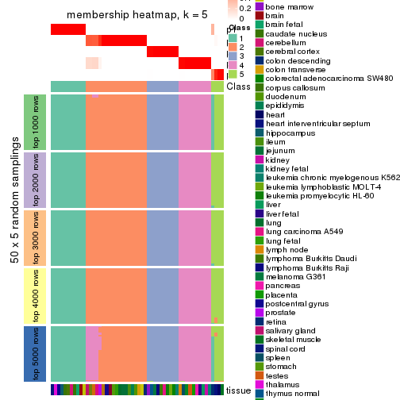
membership_heatmap(res, k = 6)
As soon as we have had the classes for columns, we can look for signatures which are significantly different between classes which can be candidate marks for certain classes. Following are the heatmaps for signatures.
Signature heatmaps where rows are scaled:
get_signatures(res, k = 2)
get_signatures(res, k = 3)
get_signatures(res, k = 4)
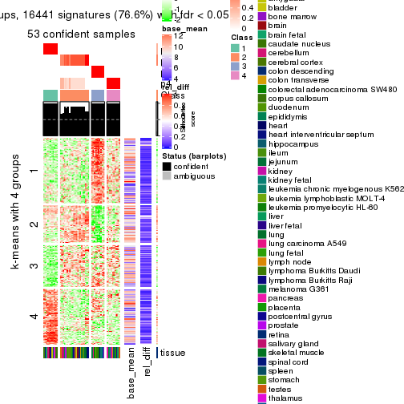
get_signatures(res, k = 5)
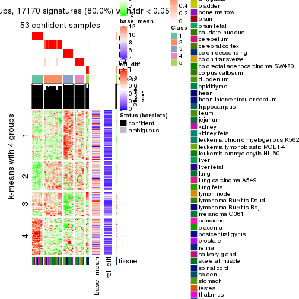
get_signatures(res, k = 6)
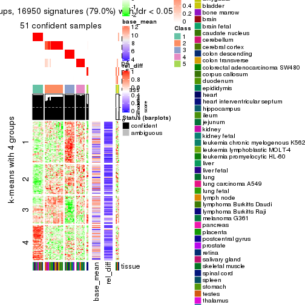
Signature heatmaps where rows are not scaled:
get_signatures(res, k = 2, scale_rows = FALSE)
get_signatures(res, k = 3, scale_rows = FALSE)
get_signatures(res, k = 4, scale_rows = FALSE)
get_signatures(res, k = 5, scale_rows = FALSE)
get_signatures(res, k = 6, scale_rows = FALSE)
Compare the overlap of signatures from different k:
compare_signatures(res)
get_signature() returns a data frame invisibly. TO get the list of signatures, the function
call should be assigned to a variable explicitly. In following code, if plot argument is set
to FALSE, no heatmap is plotted while only the differential analysis is performed.
# code only for demonstration
tb = get_signature(res, k = ..., plot = FALSE)
An example of the output of tb is:
#> which_row fdr mean_1 mean_2 scaled_mean_1 scaled_mean_2 km
#> 1 38 0.042760348 8.373488 9.131774 -0.5533452 0.5164555 1
#> 2 40 0.018707592 7.106213 8.469186 -0.6173731 0.5762149 1
#> 3 55 0.019134737 10.221463 11.207825 -0.6159697 0.5749050 1
#> 4 59 0.006059896 5.921854 7.869574 -0.6899429 0.6439467 1
#> 5 60 0.018055526 8.928898 10.211722 -0.6204761 0.5791110 1
#> 6 98 0.009384629 15.714769 14.887706 0.6635654 -0.6193277 2
...
The columns in tb are:
which_row: row indices corresponding to the input matrix.fdr: FDR for the differential test. mean_x: The mean value in group x.scaled_mean_x: The mean value in group x after rows are scaled.km: Row groups if k-means clustering is applied to rows.UMAP plot which shows how samples are separated.
dimension_reduction(res, k = 2, method = "UMAP")

dimension_reduction(res, k = 3, method = "UMAP")
dimension_reduction(res, k = 4, method = "UMAP")
dimension_reduction(res, k = 5, method = "UMAP")
dimension_reduction(res, k = 6, method = "UMAP")
Following heatmap shows how subgroups are split when increasing k:
collect_classes(res)
Test correlation between subgroups and known annotations. If the known annotation is numeric, one-way ANOVA test is applied, and if the known annotation is discrete, chi-squared contingency table test is applied.
test_to_known_factors(res)
#> n tissue(p) k
#> ATC:hclust 54 0.398 2
#> ATC:hclust 53 0.373 3
#> ATC:hclust 53 0.353 4
#> ATC:hclust 53 0.336 5
#> ATC:hclust 51 0.333 6
If matrix rows can be associated to genes, consider to use GO_Enrichment(res,
...) to perform function enrichment for the signature genes.
The object with results only for a single top-value method and a single partition method can be extracted as:
res = res_list["ATC", "kmeans"]
# you can also extract it by
# res = res_list["ATC:kmeans"]
A summary of res and all the functions that can be applied to it:
res
#> A 'ConsensusPartition' object with k = 2, 3, 4, 5, 6.
#> On a matrix with 21452 rows and 54 columns.
#> Top rows (1000, 2000, 3000, 4000, 5000) are extracted by 'ATC' method.
#> Subgroups are detected by 'kmeans' method.
#> Performed in total 1250 partitions by row resampling.
#> Best k for subgroups seems to be 3.
#>
#> Following methods can be applied to this 'ConsensusPartition' object:
#> [1] "cola_report" "collect_classes" "collect_plots"
#> [4] "collect_stats" "colnames" "compare_signatures"
#> [7] "consensus_heatmap" "dimension_reduction" "functional_enrichment"
#> [10] "get_anno_col" "get_anno" "get_classes"
#> [13] "get_consensus" "get_matrix" "get_membership"
#> [16] "get_param" "get_signatures" "get_stats"
#> [19] "is_best_k" "is_stable_k" "membership_heatmap"
#> [22] "ncol" "nrow" "plot_ecdf"
#> [25] "rownames" "select_partition_number" "show"
#> [28] "suggest_best_k" "test_to_known_factors"
collect_plots() function collects all the plots made from res for all k (number of partitions)
into one single page to provide an easy and fast comparison between different k.
collect_plots(res)
The plots are:
k and the heatmap of
predicted classes for each k.k.k.k.All the plots in panels can be made by individual functions and they are plotted later in this section.
select_partition_number() produces several plots showing different
statistics for choosing “optimized” k. There are following statistics:
k;k, the area increased is defined as \(A_k - A_{k-1}\).The detailed explanations of these statistics can be found in the cola vignette.
Generally speaking, lower PAC score, higher mean silhouette score or higher
concordance corresponds to better partition. Rand index and Jaccard index
measure how similar the current partition is compared to partition with k-1.
If they are too similar, we won't accept k is better than k-1.
select_partition_number(res)
The numeric values for all these statistics can be obtained by get_stats().
get_stats(res)
#> k 1-PAC mean_silhouette concordance area_increased Rand Jaccard
#> 2 2 0.484 0.750 0.820 0.3479 0.693 0.693
#> 3 3 1.000 1.000 1.000 0.6565 0.732 0.613
#> 4 4 0.780 0.918 0.932 0.2546 0.806 0.558
#> 5 5 0.795 0.722 0.878 0.0714 0.987 0.948
#> 6 6 0.766 0.762 0.851 0.0400 0.915 0.685
suggest_best_k() suggests the best \(k\) based on these statistics. The rules are as follows:
NA.suggest_best_k(res)
#> [1] 3
Following shows the table of the partitions (You need to click the show/hide
code output link to see it). The membership matrix (columns with name p*)
is inferred by
clue::cl_consensus()
function with the SE method. Basically the value in the membership matrix
represents the probability to belong to a certain group. The finall class
label for an item is determined with the group with highest probability it
belongs to.
In get_classes() function, the entropy is calculated from the membership
matrix and the silhouette score is calculated from the consensus matrix.
cbind(get_classes(res, k = 2), get_membership(res, k = 2))
#> class entropy silhouette p1 p2
#> GSM28710 2 0.9580 0.779 0.380 0.620
#> GSM28711 2 0.9580 0.779 0.380 0.620
#> GSM28712 2 0.9580 0.779 0.380 0.620
#> GSM11222 1 0.0376 0.994 0.996 0.004
#> GSM28720 2 0.3584 0.504 0.068 0.932
#> GSM11217 2 0.3584 0.504 0.068 0.932
#> GSM28723 2 0.3584 0.504 0.068 0.932
#> GSM11241 2 0.3584 0.504 0.068 0.932
#> GSM28703 2 0.3584 0.504 0.068 0.932
#> GSM11227 2 0.3584 0.504 0.068 0.932
#> GSM28706 2 0.3584 0.504 0.068 0.932
#> GSM11229 2 0.3584 0.504 0.068 0.932
#> GSM11235 2 0.3584 0.504 0.068 0.932
#> GSM28707 2 0.3584 0.504 0.068 0.932
#> GSM11240 2 0.9580 0.779 0.380 0.620
#> GSM28714 2 0.9580 0.779 0.380 0.620
#> GSM11216 1 0.0000 0.998 1.000 0.000
#> GSM28715 2 0.9580 0.779 0.380 0.620
#> GSM11234 2 0.9580 0.779 0.380 0.620
#> GSM28699 2 0.6438 0.638 0.164 0.836
#> GSM11233 2 0.9000 0.742 0.316 0.684
#> GSM28718 2 0.9580 0.779 0.380 0.620
#> GSM11231 2 0.9580 0.779 0.380 0.620
#> GSM11237 2 0.9580 0.779 0.380 0.620
#> GSM11228 2 0.9580 0.779 0.380 0.620
#> GSM28697 2 0.9580 0.779 0.380 0.620
#> GSM28698 1 0.0000 0.998 1.000 0.000
#> GSM11238 1 0.0000 0.998 1.000 0.000
#> GSM11242 1 0.0000 0.998 1.000 0.000
#> GSM28719 2 0.9732 0.758 0.404 0.596
#> GSM28708 2 0.9815 0.738 0.420 0.580
#> GSM28722 2 0.9580 0.779 0.380 0.620
#> GSM11232 2 0.9580 0.779 0.380 0.620
#> GSM28709 1 0.0000 0.998 1.000 0.000
#> GSM11226 2 0.9815 0.738 0.420 0.580
#> GSM11239 1 0.0000 0.998 1.000 0.000
#> GSM11225 1 0.0000 0.998 1.000 0.000
#> GSM11220 1 0.0000 0.998 1.000 0.000
#> GSM28701 2 0.9732 0.758 0.404 0.596
#> GSM28721 2 0.9732 0.758 0.404 0.596
#> GSM28713 2 0.9580 0.779 0.380 0.620
#> GSM28716 2 0.0000 0.537 0.000 1.000
#> GSM11221 2 0.9580 0.779 0.380 0.620
#> GSM28717 2 0.9580 0.779 0.380 0.620
#> GSM11223 2 0.3584 0.504 0.068 0.932
#> GSM11218 2 0.9815 0.738 0.420 0.580
#> GSM11219 2 0.9580 0.779 0.380 0.620
#> GSM11236 2 0.9970 0.696 0.468 0.532
#> GSM28702 1 0.0376 0.994 0.996 0.004
#> GSM28705 2 0.9732 0.758 0.404 0.596
#> GSM11230 2 0.9732 0.758 0.404 0.596
#> GSM28704 2 0.9580 0.779 0.380 0.620
#> GSM28700 2 0.9580 0.779 0.380 0.620
#> GSM11224 2 0.9580 0.779 0.380 0.620
cbind(get_classes(res, k = 3), get_membership(res, k = 3))
#> class entropy silhouette p1 p2 p3
#> GSM28710 2 0 1 0 1 0
#> GSM28711 2 0 1 0 1 0
#> GSM28712 2 0 1 0 1 0
#> GSM11222 3 0 1 0 0 1
#> GSM28720 1 0 1 1 0 0
#> GSM11217 1 0 1 1 0 0
#> GSM28723 1 0 1 1 0 0
#> GSM11241 1 0 1 1 0 0
#> GSM28703 1 0 1 1 0 0
#> GSM11227 1 0 1 1 0 0
#> GSM28706 1 0 1 1 0 0
#> GSM11229 1 0 1 1 0 0
#> GSM11235 1 0 1 1 0 0
#> GSM28707 1 0 1 1 0 0
#> GSM11240 2 0 1 0 1 0
#> GSM28714 2 0 1 0 1 0
#> GSM11216 3 0 1 0 0 1
#> GSM28715 2 0 1 0 1 0
#> GSM11234 2 0 1 0 1 0
#> GSM28699 2 0 1 0 1 0
#> GSM11233 2 0 1 0 1 0
#> GSM28718 2 0 1 0 1 0
#> GSM11231 2 0 1 0 1 0
#> GSM11237 2 0 1 0 1 0
#> GSM11228 2 0 1 0 1 0
#> GSM28697 2 0 1 0 1 0
#> GSM28698 3 0 1 0 0 1
#> GSM11238 3 0 1 0 0 1
#> GSM11242 3 0 1 0 0 1
#> GSM28719 2 0 1 0 1 0
#> GSM28708 2 0 1 0 1 0
#> GSM28722 2 0 1 0 1 0
#> GSM11232 2 0 1 0 1 0
#> GSM28709 3 0 1 0 0 1
#> GSM11226 2 0 1 0 1 0
#> GSM11239 3 0 1 0 0 1
#> GSM11225 3 0 1 0 0 1
#> GSM11220 3 0 1 0 0 1
#> GSM28701 2 0 1 0 1 0
#> GSM28721 2 0 1 0 1 0
#> GSM28713 2 0 1 0 1 0
#> GSM28716 1 0 1 1 0 0
#> GSM11221 2 0 1 0 1 0
#> GSM28717 2 0 1 0 1 0
#> GSM11223 1 0 1 1 0 0
#> GSM11218 2 0 1 0 1 0
#> GSM11219 2 0 1 0 1 0
#> GSM11236 2 0 1 0 1 0
#> GSM28702 3 0 1 0 0 1
#> GSM28705 2 0 1 0 1 0
#> GSM11230 2 0 1 0 1 0
#> GSM28704 2 0 1 0 1 0
#> GSM28700 2 0 1 0 1 0
#> GSM11224 2 0 1 0 1 0
cbind(get_classes(res, k = 4), get_membership(res, k = 4))
#> class entropy silhouette p1 p2 p3 p4
#> GSM28710 2 0.3172 0.780 0.000 0.840 0.000 0.160
#> GSM28711 4 0.4989 0.320 0.000 0.472 0.000 0.528
#> GSM28712 2 0.0000 0.951 0.000 1.000 0.000 0.000
#> GSM11222 3 0.3975 0.796 0.000 0.000 0.760 0.240
#> GSM28720 1 0.0000 0.985 1.000 0.000 0.000 0.000
#> GSM11217 1 0.0000 0.985 1.000 0.000 0.000 0.000
#> GSM28723 1 0.1716 0.959 0.936 0.000 0.000 0.064
#> GSM11241 1 0.0000 0.985 1.000 0.000 0.000 0.000
#> GSM28703 1 0.0000 0.985 1.000 0.000 0.000 0.000
#> GSM11227 1 0.0000 0.985 1.000 0.000 0.000 0.000
#> GSM28706 1 0.1716 0.959 0.936 0.000 0.000 0.064
#> GSM11229 1 0.0000 0.985 1.000 0.000 0.000 0.000
#> GSM11235 1 0.0000 0.985 1.000 0.000 0.000 0.000
#> GSM28707 1 0.0000 0.985 1.000 0.000 0.000 0.000
#> GSM11240 2 0.0592 0.953 0.000 0.984 0.000 0.016
#> GSM28714 2 0.0592 0.953 0.000 0.984 0.000 0.016
#> GSM11216 3 0.1557 0.934 0.000 0.000 0.944 0.056
#> GSM28715 2 0.0592 0.953 0.000 0.984 0.000 0.016
#> GSM11234 2 0.0592 0.953 0.000 0.984 0.000 0.016
#> GSM28699 2 0.0000 0.951 0.000 1.000 0.000 0.000
#> GSM11233 2 0.0000 0.951 0.000 1.000 0.000 0.000
#> GSM28718 2 0.0000 0.951 0.000 1.000 0.000 0.000
#> GSM11231 2 0.0592 0.953 0.000 0.984 0.000 0.016
#> GSM11237 2 0.0000 0.951 0.000 1.000 0.000 0.000
#> GSM11228 4 0.2647 0.942 0.000 0.120 0.000 0.880
#> GSM28697 4 0.2647 0.942 0.000 0.120 0.000 0.880
#> GSM28698 3 0.0000 0.942 0.000 0.000 1.000 0.000
#> GSM11238 3 0.0000 0.942 0.000 0.000 1.000 0.000
#> GSM11242 3 0.0000 0.942 0.000 0.000 1.000 0.000
#> GSM28719 4 0.2647 0.942 0.000 0.120 0.000 0.880
#> GSM28708 4 0.2647 0.942 0.000 0.120 0.000 0.880
#> GSM28722 2 0.0921 0.945 0.000 0.972 0.000 0.028
#> GSM11232 4 0.4431 0.707 0.000 0.304 0.000 0.696
#> GSM28709 3 0.1118 0.938 0.000 0.000 0.964 0.036
#> GSM11226 4 0.2647 0.942 0.000 0.120 0.000 0.880
#> GSM11239 3 0.0000 0.942 0.000 0.000 1.000 0.000
#> GSM11225 3 0.0000 0.942 0.000 0.000 1.000 0.000
#> GSM11220 3 0.1557 0.934 0.000 0.000 0.944 0.056
#> GSM28701 4 0.2647 0.942 0.000 0.120 0.000 0.880
#> GSM28721 4 0.2647 0.942 0.000 0.120 0.000 0.880
#> GSM28713 2 0.0469 0.953 0.000 0.988 0.000 0.012
#> GSM28716 2 0.5464 0.581 0.228 0.708 0.000 0.064
#> GSM11221 2 0.3074 0.793 0.000 0.848 0.000 0.152
#> GSM28717 2 0.0000 0.951 0.000 1.000 0.000 0.000
#> GSM11223 1 0.1716 0.959 0.936 0.000 0.000 0.064
#> GSM11218 4 0.2647 0.942 0.000 0.120 0.000 0.880
#> GSM11219 2 0.0592 0.953 0.000 0.984 0.000 0.016
#> GSM11236 4 0.2647 0.942 0.000 0.120 0.000 0.880
#> GSM28702 3 0.3975 0.796 0.000 0.000 0.760 0.240
#> GSM28705 4 0.2647 0.942 0.000 0.120 0.000 0.880
#> GSM11230 4 0.2647 0.942 0.000 0.120 0.000 0.880
#> GSM28704 2 0.0921 0.945 0.000 0.972 0.000 0.028
#> GSM28700 2 0.0000 0.951 0.000 1.000 0.000 0.000
#> GSM11224 2 0.0469 0.953 0.000 0.988 0.000 0.012
cbind(get_classes(res, k = 5), get_membership(res, k = 5))
#> class entropy silhouette p1 p2 p3 p4 p5
#> GSM28710 2 0.3980 0.3892 0.000 0.708 0.000 0.284 0.008
#> GSM28711 4 0.4434 0.2371 0.000 0.460 0.000 0.536 0.004
#> GSM28712 2 0.2020 0.7392 0.000 0.900 0.000 0.000 0.100
#> GSM11222 3 0.6229 0.6099 0.000 0.000 0.516 0.164 0.320
#> GSM28720 1 0.0000 0.9239 1.000 0.000 0.000 0.000 0.000
#> GSM11217 1 0.0000 0.9239 1.000 0.000 0.000 0.000 0.000
#> GSM28723 1 0.3508 0.7662 0.748 0.000 0.000 0.000 0.252
#> GSM11241 1 0.0000 0.9239 1.000 0.000 0.000 0.000 0.000
#> GSM28703 1 0.0000 0.9239 1.000 0.000 0.000 0.000 0.000
#> GSM11227 1 0.0000 0.9239 1.000 0.000 0.000 0.000 0.000
#> GSM28706 1 0.3508 0.7662 0.748 0.000 0.000 0.000 0.252
#> GSM11229 1 0.0000 0.9239 1.000 0.000 0.000 0.000 0.000
#> GSM11235 1 0.0000 0.9239 1.000 0.000 0.000 0.000 0.000
#> GSM28707 1 0.0000 0.9239 1.000 0.000 0.000 0.000 0.000
#> GSM11240 2 0.2068 0.7503 0.000 0.904 0.000 0.004 0.092
#> GSM28714 2 0.2068 0.7503 0.000 0.904 0.000 0.004 0.092
#> GSM11216 3 0.3086 0.8287 0.000 0.000 0.816 0.004 0.180
#> GSM28715 2 0.0162 0.7730 0.000 0.996 0.000 0.004 0.000
#> GSM11234 2 0.0451 0.7717 0.000 0.988 0.000 0.004 0.008
#> GSM28699 2 0.4227 -0.0552 0.000 0.580 0.000 0.000 0.420
#> GSM11233 2 0.4219 -0.0297 0.000 0.584 0.000 0.000 0.416
#> GSM28718 2 0.1965 0.7437 0.000 0.904 0.000 0.000 0.096
#> GSM11231 2 0.0324 0.7730 0.000 0.992 0.000 0.004 0.004
#> GSM11237 2 0.2020 0.7397 0.000 0.900 0.000 0.000 0.100
#> GSM11228 4 0.1341 0.8638 0.000 0.056 0.000 0.944 0.000
#> GSM28697 4 0.1341 0.8638 0.000 0.056 0.000 0.944 0.000
#> GSM28698 3 0.0162 0.8612 0.000 0.000 0.996 0.004 0.000
#> GSM11238 3 0.0000 0.8614 0.000 0.000 1.000 0.000 0.000
#> GSM11242 3 0.0000 0.8614 0.000 0.000 1.000 0.000 0.000
#> GSM28719 4 0.0898 0.8616 0.000 0.020 0.000 0.972 0.008
#> GSM28708 4 0.0579 0.8573 0.000 0.008 0.000 0.984 0.008
#> GSM28722 2 0.0324 0.7730 0.000 0.992 0.000 0.004 0.004
#> GSM11232 4 0.4060 0.4911 0.000 0.360 0.000 0.640 0.000
#> GSM28709 3 0.2179 0.8491 0.000 0.000 0.896 0.004 0.100
#> GSM11226 4 0.2612 0.7841 0.000 0.008 0.000 0.868 0.124
#> GSM11239 3 0.0000 0.8614 0.000 0.000 1.000 0.000 0.000
#> GSM11225 3 0.0162 0.8612 0.000 0.000 0.996 0.004 0.000
#> GSM11220 3 0.3086 0.8287 0.000 0.000 0.816 0.004 0.180
#> GSM28701 4 0.1341 0.8638 0.000 0.056 0.000 0.944 0.000
#> GSM28721 4 0.0579 0.8573 0.000 0.008 0.000 0.984 0.008
#> GSM28713 2 0.0451 0.7717 0.000 0.988 0.000 0.004 0.008
#> GSM28716 5 0.4836 0.0000 0.044 0.304 0.000 0.000 0.652
#> GSM11221 2 0.3835 0.4305 0.000 0.732 0.000 0.260 0.008
#> GSM28717 2 0.4227 -0.0552 0.000 0.580 0.000 0.000 0.420
#> GSM11223 1 0.3508 0.7662 0.748 0.000 0.000 0.000 0.252
#> GSM11218 4 0.2612 0.7841 0.000 0.008 0.000 0.868 0.124
#> GSM11219 2 0.0324 0.7730 0.000 0.992 0.000 0.004 0.004
#> GSM11236 4 0.0290 0.8592 0.000 0.008 0.000 0.992 0.000
#> GSM28702 3 0.6229 0.6099 0.000 0.000 0.516 0.164 0.320
#> GSM28705 4 0.1341 0.8638 0.000 0.056 0.000 0.944 0.000
#> GSM11230 4 0.2286 0.8253 0.000 0.108 0.000 0.888 0.004
#> GSM28704 2 0.2077 0.6883 0.000 0.908 0.000 0.084 0.008
#> GSM28700 2 0.1544 0.7555 0.000 0.932 0.000 0.000 0.068
#> GSM11224 2 0.0324 0.7726 0.000 0.992 0.000 0.004 0.004
cbind(get_classes(res, k = 6), get_membership(res, k = 6))
#> class entropy silhouette p1 p2 p3 p4 p5 p6
#> GSM28710 2 0.4047 0.587 0.000 0.720 0.000 0.244 0.016 0.020
#> GSM28711 2 0.4495 0.456 0.000 0.624 0.000 0.340 0.016 0.020
#> GSM28712 2 0.2859 0.682 0.000 0.828 0.000 0.000 0.156 0.016
#> GSM11222 6 0.5808 1.000 0.000 0.000 0.316 0.204 0.000 0.480
#> GSM28720 1 0.0632 0.885 0.976 0.000 0.000 0.000 0.000 0.024
#> GSM11217 1 0.0000 0.890 1.000 0.000 0.000 0.000 0.000 0.000
#> GSM28723 1 0.4687 0.671 0.632 0.000 0.000 0.000 0.072 0.296
#> GSM11241 1 0.0000 0.890 1.000 0.000 0.000 0.000 0.000 0.000
#> GSM28703 1 0.0632 0.885 0.976 0.000 0.000 0.000 0.000 0.024
#> GSM11227 1 0.0000 0.890 1.000 0.000 0.000 0.000 0.000 0.000
#> GSM28706 1 0.4775 0.669 0.632 0.000 0.000 0.000 0.084 0.284
#> GSM11229 1 0.0000 0.890 1.000 0.000 0.000 0.000 0.000 0.000
#> GSM11235 1 0.0000 0.890 1.000 0.000 0.000 0.000 0.000 0.000
#> GSM28707 1 0.0000 0.890 1.000 0.000 0.000 0.000 0.000 0.000
#> GSM11240 2 0.4209 0.620 0.000 0.736 0.000 0.000 0.160 0.104
#> GSM28714 2 0.4243 0.616 0.000 0.732 0.000 0.000 0.164 0.104
#> GSM11216 3 0.3651 0.737 0.000 0.000 0.772 0.000 0.048 0.180
#> GSM28715 2 0.0146 0.779 0.000 0.996 0.000 0.004 0.000 0.000
#> GSM11234 2 0.0665 0.777 0.000 0.980 0.000 0.008 0.008 0.004
#> GSM28699 5 0.2697 0.858 0.000 0.188 0.000 0.000 0.812 0.000
#> GSM11233 5 0.2631 0.853 0.000 0.180 0.000 0.000 0.820 0.000
#> GSM28718 2 0.4243 0.616 0.000 0.732 0.000 0.000 0.164 0.104
#> GSM11231 2 0.0551 0.779 0.000 0.984 0.000 0.004 0.008 0.004
#> GSM11237 2 0.4276 0.610 0.000 0.728 0.000 0.000 0.168 0.104
#> GSM11228 4 0.1787 0.814 0.000 0.068 0.000 0.920 0.008 0.004
#> GSM28697 4 0.1787 0.814 0.000 0.068 0.000 0.920 0.008 0.004
#> GSM28698 3 0.0260 0.878 0.000 0.000 0.992 0.000 0.008 0.000
#> GSM11238 3 0.0000 0.879 0.000 0.000 1.000 0.000 0.000 0.000
#> GSM11242 3 0.0000 0.879 0.000 0.000 1.000 0.000 0.000 0.000
#> GSM28719 4 0.0909 0.811 0.000 0.000 0.000 0.968 0.012 0.020
#> GSM28708 4 0.1334 0.805 0.000 0.000 0.000 0.948 0.020 0.032
#> GSM28722 2 0.1078 0.776 0.000 0.964 0.000 0.012 0.008 0.016
#> GSM11232 2 0.4321 0.497 0.000 0.652 0.000 0.316 0.012 0.020
#> GSM28709 3 0.3044 0.796 0.000 0.000 0.836 0.000 0.048 0.116
#> GSM11226 4 0.3802 0.455 0.000 0.000 0.000 0.676 0.012 0.312
#> GSM11239 3 0.0000 0.879 0.000 0.000 1.000 0.000 0.000 0.000
#> GSM11225 3 0.0260 0.878 0.000 0.000 0.992 0.000 0.008 0.000
#> GSM11220 3 0.3651 0.737 0.000 0.000 0.772 0.000 0.048 0.180
#> GSM28701 4 0.1787 0.814 0.000 0.068 0.000 0.920 0.008 0.004
#> GSM28721 4 0.1245 0.805 0.000 0.000 0.000 0.952 0.016 0.032
#> GSM28713 2 0.0665 0.777 0.000 0.980 0.000 0.004 0.008 0.008
#> GSM28716 5 0.5264 0.567 0.012 0.104 0.000 0.000 0.612 0.272
#> GSM11221 2 0.3801 0.605 0.000 0.740 0.000 0.232 0.016 0.012
#> GSM28717 5 0.3014 0.857 0.000 0.184 0.000 0.000 0.804 0.012
#> GSM11223 1 0.4775 0.669 0.632 0.000 0.000 0.000 0.084 0.284
#> GSM11218 4 0.3802 0.455 0.000 0.000 0.000 0.676 0.012 0.312
#> GSM11219 2 0.0405 0.778 0.000 0.988 0.000 0.000 0.004 0.008
#> GSM11236 4 0.1924 0.800 0.000 0.004 0.000 0.920 0.028 0.048
#> GSM28702 6 0.5808 1.000 0.000 0.000 0.316 0.204 0.000 0.480
#> GSM28705 4 0.1584 0.816 0.000 0.064 0.000 0.928 0.008 0.000
#> GSM11230 4 0.4796 0.616 0.000 0.176 0.000 0.708 0.024 0.092
#> GSM28704 2 0.1692 0.757 0.000 0.932 0.000 0.048 0.008 0.012
#> GSM28700 2 0.2070 0.726 0.000 0.892 0.000 0.000 0.100 0.008
#> GSM11224 2 0.0405 0.777 0.000 0.988 0.000 0.000 0.004 0.008
Heatmaps for the consensus matrix. It visualizes the probability of two samples to be in a same group.
consensus_heatmap(res, k = 2)
consensus_heatmap(res, k = 3)
consensus_heatmap(res, k = 4)
consensus_heatmap(res, k = 5)
consensus_heatmap(res, k = 6)
Heatmaps for the membership of samples in all partitions to see how consistent they are:
membership_heatmap(res, k = 2)
membership_heatmap(res, k = 3)
membership_heatmap(res, k = 4)
membership_heatmap(res, k = 5)
membership_heatmap(res, k = 6)
As soon as we have had the classes for columns, we can look for signatures which are significantly different between classes which can be candidate marks for certain classes. Following are the heatmaps for signatures.
Signature heatmaps where rows are scaled:
get_signatures(res, k = 2)
get_signatures(res, k = 3)
get_signatures(res, k = 4)
get_signatures(res, k = 5)
get_signatures(res, k = 6)
Signature heatmaps where rows are not scaled:
get_signatures(res, k = 2, scale_rows = FALSE)
get_signatures(res, k = 3, scale_rows = FALSE)
get_signatures(res, k = 4, scale_rows = FALSE)
get_signatures(res, k = 5, scale_rows = FALSE)
get_signatures(res, k = 6, scale_rows = FALSE)
Compare the overlap of signatures from different k:
compare_signatures(res)
get_signature() returns a data frame invisibly. TO get the list of signatures, the function
call should be assigned to a variable explicitly. In following code, if plot argument is set
to FALSE, no heatmap is plotted while only the differential analysis is performed.
# code only for demonstration
tb = get_signature(res, k = ..., plot = FALSE)
An example of the output of tb is:
#> which_row fdr mean_1 mean_2 scaled_mean_1 scaled_mean_2 km
#> 1 38 0.042760348 8.373488 9.131774 -0.5533452 0.5164555 1
#> 2 40 0.018707592 7.106213 8.469186 -0.6173731 0.5762149 1
#> 3 55 0.019134737 10.221463 11.207825 -0.6159697 0.5749050 1
#> 4 59 0.006059896 5.921854 7.869574 -0.6899429 0.6439467 1
#> 5 60 0.018055526 8.928898 10.211722 -0.6204761 0.5791110 1
#> 6 98 0.009384629 15.714769 14.887706 0.6635654 -0.6193277 2
...
The columns in tb are:
which_row: row indices corresponding to the input matrix.fdr: FDR for the differential test. mean_x: The mean value in group x.scaled_mean_x: The mean value in group x after rows are scaled.km: Row groups if k-means clustering is applied to rows.UMAP plot which shows how samples are separated.
dimension_reduction(res, k = 2, method = "UMAP")
dimension_reduction(res, k = 3, method = "UMAP")
dimension_reduction(res, k = 4, method = "UMAP")
dimension_reduction(res, k = 5, method = "UMAP")
dimension_reduction(res, k = 6, method = "UMAP")
Following heatmap shows how subgroups are split when increasing k:
collect_classes(res)

Test correlation between subgroups and known annotations. If the known annotation is numeric, one-way ANOVA test is applied, and if the known annotation is discrete, chi-squared contingency table test is applied.
test_to_known_factors(res)
#> n tissue(p) k
#> ATC:kmeans 54 0.398 2
#> ATC:kmeans 54 0.374 3
#> ATC:kmeans 53 0.353 4
#> ATC:kmeans 46 0.343 5
#> ATC:kmeans 50 0.315 6
If matrix rows can be associated to genes, consider to use GO_Enrichment(res,
...) to perform function enrichment for the signature genes.
The object with results only for a single top-value method and a single partition method can be extracted as:
res = res_list["ATC", "skmeans"]
# you can also extract it by
# res = res_list["ATC:skmeans"]
A summary of res and all the functions that can be applied to it:
res
#> A 'ConsensusPartition' object with k = 2, 3, 4, 5, 6.
#> On a matrix with 21452 rows and 54 columns.
#> Top rows (1000, 2000, 3000, 4000, 5000) are extracted by 'ATC' method.
#> Subgroups are detected by 'skmeans' method.
#> Performed in total 1250 partitions by row resampling.
#> Best k for subgroups seems to be 4.
#>
#> Following methods can be applied to this 'ConsensusPartition' object:
#> [1] "cola_report" "collect_classes" "collect_plots"
#> [4] "collect_stats" "colnames" "compare_signatures"
#> [7] "consensus_heatmap" "dimension_reduction" "functional_enrichment"
#> [10] "get_anno_col" "get_anno" "get_classes"
#> [13] "get_consensus" "get_matrix" "get_membership"
#> [16] "get_param" "get_signatures" "get_stats"
#> [19] "is_best_k" "is_stable_k" "membership_heatmap"
#> [22] "ncol" "nrow" "plot_ecdf"
#> [25] "rownames" "select_partition_number" "show"
#> [28] "suggest_best_k" "test_to_known_factors"
collect_plots() function collects all the plots made from res for all k (number of partitions)
into one single page to provide an easy and fast comparison between different k.
collect_plots(res)
The plots are:
k and the heatmap of
predicted classes for each k.k.k.k.All the plots in panels can be made by individual functions and they are plotted later in this section.
select_partition_number() produces several plots showing different
statistics for choosing “optimized” k. There are following statistics:
k;k, the area increased is defined as \(A_k - A_{k-1}\).The detailed explanations of these statistics can be found in the cola vignette.
Generally speaking, lower PAC score, higher mean silhouette score or higher
concordance corresponds to better partition. Rand index and Jaccard index
measure how similar the current partition is compared to partition with k-1.
If they are too similar, we won't accept k is better than k-1.
select_partition_number(res)
The numeric values for all these statistics can be obtained by get_stats().
get_stats(res)
#> k 1-PAC mean_silhouette concordance area_increased Rand Jaccard
#> 2 2 1.000 0.993 0.997 0.4862 0.516 0.516
#> 3 3 1.000 0.959 0.982 0.3647 0.795 0.614
#> 4 4 0.941 0.921 0.964 0.1062 0.931 0.797
#> 5 5 0.881 0.838 0.861 0.0701 0.950 0.814
#> 6 6 0.868 0.772 0.866 0.0375 0.973 0.879
suggest_best_k() suggests the best \(k\) based on these statistics. The rules are as follows:
NA.suggest_best_k(res)
#> [1] 4
#> attr(,"optional")
#> [1] 2 3
There is also optional best \(k\) = 2 3 that is worth to check.
Following shows the table of the partitions (You need to click the show/hide
code output link to see it). The membership matrix (columns with name p*)
is inferred by
clue::cl_consensus()
function with the SE method. Basically the value in the membership matrix
represents the probability to belong to a certain group. The finall class
label for an item is determined with the group with highest probability it
belongs to.
In get_classes() function, the entropy is calculated from the membership
matrix and the silhouette score is calculated from the consensus matrix.
cbind(get_classes(res, k = 2), get_membership(res, k = 2))
#> class entropy silhouette p1 p2
#> GSM28710 2 0.00 0.994 0.00 1.00
#> GSM28711 2 0.00 0.994 0.00 1.00
#> GSM28712 2 0.00 0.994 0.00 1.00
#> GSM11222 1 0.00 1.000 1.00 0.00
#> GSM28720 2 0.00 0.994 0.00 1.00
#> GSM11217 2 0.00 0.994 0.00 1.00
#> GSM28723 2 0.00 0.994 0.00 1.00
#> GSM11241 2 0.00 0.994 0.00 1.00
#> GSM28703 2 0.00 0.994 0.00 1.00
#> GSM11227 2 0.00 0.994 0.00 1.00
#> GSM28706 2 0.00 0.994 0.00 1.00
#> GSM11229 2 0.00 0.994 0.00 1.00
#> GSM11235 2 0.00 0.994 0.00 1.00
#> GSM28707 2 0.00 0.994 0.00 1.00
#> GSM11240 2 0.00 0.994 0.00 1.00
#> GSM28714 2 0.00 0.994 0.00 1.00
#> GSM11216 1 0.00 1.000 1.00 0.00
#> GSM28715 2 0.00 0.994 0.00 1.00
#> GSM11234 2 0.00 0.994 0.00 1.00
#> GSM28699 2 0.00 0.994 0.00 1.00
#> GSM11233 2 0.00 0.994 0.00 1.00
#> GSM28718 2 0.00 0.994 0.00 1.00
#> GSM11231 2 0.00 0.994 0.00 1.00
#> GSM11237 2 0.00 0.994 0.00 1.00
#> GSM11228 1 0.00 1.000 1.00 0.00
#> GSM28697 1 0.00 1.000 1.00 0.00
#> GSM28698 1 0.00 1.000 1.00 0.00
#> GSM11238 1 0.00 1.000 1.00 0.00
#> GSM11242 1 0.00 1.000 1.00 0.00
#> GSM28719 1 0.00 1.000 1.00 0.00
#> GSM28708 1 0.00 1.000 1.00 0.00
#> GSM28722 2 0.00 0.994 0.00 1.00
#> GSM11232 2 0.68 0.780 0.18 0.82
#> GSM28709 1 0.00 1.000 1.00 0.00
#> GSM11226 1 0.00 1.000 1.00 0.00
#> GSM11239 1 0.00 1.000 1.00 0.00
#> GSM11225 1 0.00 1.000 1.00 0.00
#> GSM11220 1 0.00 1.000 1.00 0.00
#> GSM28701 1 0.00 1.000 1.00 0.00
#> GSM28721 1 0.00 1.000 1.00 0.00
#> GSM28713 2 0.00 0.994 0.00 1.00
#> GSM28716 2 0.00 0.994 0.00 1.00
#> GSM11221 2 0.00 0.994 0.00 1.00
#> GSM28717 2 0.00 0.994 0.00 1.00
#> GSM11223 2 0.00 0.994 0.00 1.00
#> GSM11218 1 0.00 1.000 1.00 0.00
#> GSM11219 2 0.00 0.994 0.00 1.00
#> GSM11236 1 0.00 1.000 1.00 0.00
#> GSM28702 1 0.00 1.000 1.00 0.00
#> GSM28705 1 0.00 1.000 1.00 0.00
#> GSM11230 1 0.00 1.000 1.00 0.00
#> GSM28704 2 0.00 0.994 0.00 1.00
#> GSM28700 2 0.00 0.994 0.00 1.00
#> GSM11224 2 0.00 0.994 0.00 1.00
cbind(get_classes(res, k = 3), get_membership(res, k = 3))
#> class entropy silhouette p1 p2 p3
#> GSM28710 2 0.000 0.953 0.000 1.000 0.000
#> GSM28711 2 0.000 0.953 0.000 1.000 0.000
#> GSM28712 2 0.000 0.953 0.000 1.000 0.000
#> GSM11222 3 0.000 1.000 0.000 0.000 1.000
#> GSM28720 1 0.000 1.000 1.000 0.000 0.000
#> GSM11217 1 0.000 1.000 1.000 0.000 0.000
#> GSM28723 1 0.000 1.000 1.000 0.000 0.000
#> GSM11241 1 0.000 1.000 1.000 0.000 0.000
#> GSM28703 1 0.000 1.000 1.000 0.000 0.000
#> GSM11227 1 0.000 1.000 1.000 0.000 0.000
#> GSM28706 1 0.000 1.000 1.000 0.000 0.000
#> GSM11229 1 0.000 1.000 1.000 0.000 0.000
#> GSM11235 1 0.000 1.000 1.000 0.000 0.000
#> GSM28707 1 0.000 1.000 1.000 0.000 0.000
#> GSM11240 2 0.000 0.953 0.000 1.000 0.000
#> GSM28714 2 0.000 0.953 0.000 1.000 0.000
#> GSM11216 3 0.000 1.000 0.000 0.000 1.000
#> GSM28715 2 0.000 0.953 0.000 1.000 0.000
#> GSM11234 2 0.000 0.953 0.000 1.000 0.000
#> GSM28699 2 0.588 0.498 0.348 0.652 0.000
#> GSM11233 2 0.000 0.953 0.000 1.000 0.000
#> GSM28718 2 0.000 0.953 0.000 1.000 0.000
#> GSM11231 2 0.000 0.953 0.000 1.000 0.000
#> GSM11237 2 0.000 0.953 0.000 1.000 0.000
#> GSM11228 3 0.000 1.000 0.000 0.000 1.000
#> GSM28697 3 0.000 1.000 0.000 0.000 1.000
#> GSM28698 3 0.000 1.000 0.000 0.000 1.000
#> GSM11238 3 0.000 1.000 0.000 0.000 1.000
#> GSM11242 3 0.000 1.000 0.000 0.000 1.000
#> GSM28719 3 0.000 1.000 0.000 0.000 1.000
#> GSM28708 3 0.000 1.000 0.000 0.000 1.000
#> GSM28722 2 0.000 0.953 0.000 1.000 0.000
#> GSM11232 2 0.000 0.953 0.000 1.000 0.000
#> GSM28709 3 0.000 1.000 0.000 0.000 1.000
#> GSM11226 3 0.000 1.000 0.000 0.000 1.000
#> GSM11239 3 0.000 1.000 0.000 0.000 1.000
#> GSM11225 3 0.000 1.000 0.000 0.000 1.000
#> GSM11220 3 0.000 1.000 0.000 0.000 1.000
#> GSM28701 3 0.000 1.000 0.000 0.000 1.000
#> GSM28721 3 0.000 1.000 0.000 0.000 1.000
#> GSM28713 2 0.000 0.953 0.000 1.000 0.000
#> GSM28716 1 0.000 1.000 1.000 0.000 0.000
#> GSM11221 2 0.000 0.953 0.000 1.000 0.000
#> GSM28717 2 0.543 0.618 0.284 0.716 0.000
#> GSM11223 1 0.000 1.000 1.000 0.000 0.000
#> GSM11218 3 0.000 1.000 0.000 0.000 1.000
#> GSM11219 2 0.000 0.953 0.000 1.000 0.000
#> GSM11236 3 0.000 1.000 0.000 0.000 1.000
#> GSM28702 3 0.000 1.000 0.000 0.000 1.000
#> GSM28705 3 0.000 1.000 0.000 0.000 1.000
#> GSM11230 2 0.568 0.549 0.000 0.684 0.316
#> GSM28704 2 0.000 0.953 0.000 1.000 0.000
#> GSM28700 2 0.000 0.953 0.000 1.000 0.000
#> GSM11224 2 0.000 0.953 0.000 1.000 0.000
cbind(get_classes(res, k = 4), get_membership(res, k = 4))
#> class entropy silhouette p1 p2 p3 p4
#> GSM28710 2 0.0000 0.942 0.000 1.000 0.000 0.000
#> GSM28711 2 0.0000 0.942 0.000 1.000 0.000 0.000
#> GSM28712 2 0.0000 0.942 0.000 1.000 0.000 0.000
#> GSM11222 3 0.0000 1.000 0.000 0.000 1.000 0.000
#> GSM28720 1 0.0000 1.000 1.000 0.000 0.000 0.000
#> GSM11217 1 0.0000 1.000 1.000 0.000 0.000 0.000
#> GSM28723 1 0.0000 1.000 1.000 0.000 0.000 0.000
#> GSM11241 1 0.0000 1.000 1.000 0.000 0.000 0.000
#> GSM28703 1 0.0000 1.000 1.000 0.000 0.000 0.000
#> GSM11227 1 0.0000 1.000 1.000 0.000 0.000 0.000
#> GSM28706 1 0.0000 1.000 1.000 0.000 0.000 0.000
#> GSM11229 1 0.0000 1.000 1.000 0.000 0.000 0.000
#> GSM11235 1 0.0000 1.000 1.000 0.000 0.000 0.000
#> GSM28707 1 0.0000 1.000 1.000 0.000 0.000 0.000
#> GSM11240 2 0.0000 0.942 0.000 1.000 0.000 0.000
#> GSM28714 2 0.0000 0.942 0.000 1.000 0.000 0.000
#> GSM11216 3 0.0000 1.000 0.000 0.000 1.000 0.000
#> GSM28715 2 0.0000 0.942 0.000 1.000 0.000 0.000
#> GSM11234 2 0.0000 0.942 0.000 1.000 0.000 0.000
#> GSM28699 2 0.4917 0.514 0.336 0.656 0.000 0.008
#> GSM11233 2 0.0336 0.937 0.000 0.992 0.000 0.008
#> GSM28718 2 0.0000 0.942 0.000 1.000 0.000 0.000
#> GSM11231 2 0.0000 0.942 0.000 1.000 0.000 0.000
#> GSM11237 2 0.0000 0.942 0.000 1.000 0.000 0.000
#> GSM11228 4 0.0336 0.906 0.000 0.000 0.008 0.992
#> GSM28697 4 0.0336 0.906 0.000 0.000 0.008 0.992
#> GSM28698 3 0.0000 1.000 0.000 0.000 1.000 0.000
#> GSM11238 3 0.0000 1.000 0.000 0.000 1.000 0.000
#> GSM11242 3 0.0000 1.000 0.000 0.000 1.000 0.000
#> GSM28719 4 0.0336 0.906 0.000 0.000 0.008 0.992
#> GSM28708 4 0.2345 0.856 0.000 0.000 0.100 0.900
#> GSM28722 2 0.0000 0.942 0.000 1.000 0.000 0.000
#> GSM11232 2 0.1867 0.880 0.000 0.928 0.000 0.072
#> GSM28709 3 0.0000 1.000 0.000 0.000 1.000 0.000
#> GSM11226 4 0.4543 0.613 0.000 0.000 0.324 0.676
#> GSM11239 3 0.0000 1.000 0.000 0.000 1.000 0.000
#> GSM11225 3 0.0000 1.000 0.000 0.000 1.000 0.000
#> GSM11220 3 0.0000 1.000 0.000 0.000 1.000 0.000
#> GSM28701 4 0.0336 0.906 0.000 0.000 0.008 0.992
#> GSM28721 4 0.0336 0.906 0.000 0.000 0.008 0.992
#> GSM28713 2 0.0000 0.942 0.000 1.000 0.000 0.000
#> GSM28716 1 0.0000 1.000 1.000 0.000 0.000 0.000
#> GSM11221 2 0.0000 0.942 0.000 1.000 0.000 0.000
#> GSM28717 2 0.4567 0.624 0.276 0.716 0.000 0.008
#> GSM11223 1 0.0000 1.000 1.000 0.000 0.000 0.000
#> GSM11218 4 0.4543 0.613 0.000 0.000 0.324 0.676
#> GSM11219 2 0.0000 0.942 0.000 1.000 0.000 0.000
#> GSM11236 3 0.0000 1.000 0.000 0.000 1.000 0.000
#> GSM28702 3 0.0000 1.000 0.000 0.000 1.000 0.000
#> GSM28705 4 0.0336 0.906 0.000 0.000 0.008 0.992
#> GSM11230 2 0.6574 0.239 0.000 0.548 0.088 0.364
#> GSM28704 2 0.0000 0.942 0.000 1.000 0.000 0.000
#> GSM28700 2 0.0000 0.942 0.000 1.000 0.000 0.000
#> GSM11224 2 0.0000 0.942 0.000 1.000 0.000 0.000
cbind(get_classes(res, k = 5), get_membership(res, k = 5))
#> class entropy silhouette p1 p2 p3 p4 p5
#> GSM28710 2 0.2069 0.807 0.000 0.912 0.000 0.012 0.076
#> GSM28711 2 0.4086 0.665 0.000 0.736 0.000 0.024 0.240
#> GSM28712 2 0.3210 0.719 0.000 0.788 0.000 0.000 0.212
#> GSM11222 3 0.0000 1.000 0.000 0.000 1.000 0.000 0.000
#> GSM28720 1 0.0000 1.000 1.000 0.000 0.000 0.000 0.000
#> GSM11217 1 0.0000 1.000 1.000 0.000 0.000 0.000 0.000
#> GSM28723 1 0.0000 1.000 1.000 0.000 0.000 0.000 0.000
#> GSM11241 1 0.0000 1.000 1.000 0.000 0.000 0.000 0.000
#> GSM28703 1 0.0000 1.000 1.000 0.000 0.000 0.000 0.000
#> GSM11227 1 0.0000 1.000 1.000 0.000 0.000 0.000 0.000
#> GSM28706 1 0.0000 1.000 1.000 0.000 0.000 0.000 0.000
#> GSM11229 1 0.0000 1.000 1.000 0.000 0.000 0.000 0.000
#> GSM11235 1 0.0000 1.000 1.000 0.000 0.000 0.000 0.000
#> GSM28707 1 0.0000 1.000 1.000 0.000 0.000 0.000 0.000
#> GSM11240 2 0.3837 0.568 0.000 0.692 0.000 0.000 0.308
#> GSM28714 2 0.3913 0.544 0.000 0.676 0.000 0.000 0.324
#> GSM11216 3 0.0000 1.000 0.000 0.000 1.000 0.000 0.000
#> GSM28715 2 0.0162 0.833 0.000 0.996 0.000 0.000 0.004
#> GSM11234 2 0.0880 0.830 0.000 0.968 0.000 0.000 0.032
#> GSM28699 5 0.2769 0.774 0.032 0.092 0.000 0.000 0.876
#> GSM11233 5 0.2127 0.757 0.000 0.108 0.000 0.000 0.892
#> GSM28718 2 0.4192 0.407 0.000 0.596 0.000 0.000 0.404
#> GSM11231 2 0.0963 0.833 0.000 0.964 0.000 0.000 0.036
#> GSM11237 2 0.4192 0.407 0.000 0.596 0.000 0.000 0.404
#> GSM11228 4 0.0510 0.809 0.000 0.000 0.000 0.984 0.016
#> GSM28697 4 0.0912 0.805 0.000 0.012 0.000 0.972 0.016
#> GSM28698 3 0.0000 1.000 0.000 0.000 1.000 0.000 0.000
#> GSM11238 3 0.0000 1.000 0.000 0.000 1.000 0.000 0.000
#> GSM11242 3 0.0000 1.000 0.000 0.000 1.000 0.000 0.000
#> GSM28719 4 0.1043 0.808 0.000 0.000 0.000 0.960 0.040
#> GSM28708 4 0.3641 0.743 0.000 0.000 0.120 0.820 0.060
#> GSM28722 2 0.1341 0.829 0.000 0.944 0.000 0.000 0.056
#> GSM11232 2 0.1444 0.814 0.000 0.948 0.000 0.012 0.040
#> GSM28709 3 0.0000 1.000 0.000 0.000 1.000 0.000 0.000
#> GSM11226 4 0.5518 0.440 0.000 0.000 0.384 0.544 0.072
#> GSM11239 3 0.0000 1.000 0.000 0.000 1.000 0.000 0.000
#> GSM11225 3 0.0000 1.000 0.000 0.000 1.000 0.000 0.000
#> GSM11220 3 0.0000 1.000 0.000 0.000 1.000 0.000 0.000
#> GSM28701 4 0.0912 0.805 0.000 0.012 0.000 0.972 0.016
#> GSM28721 4 0.1502 0.804 0.000 0.000 0.004 0.940 0.056
#> GSM28713 2 0.0794 0.830 0.000 0.972 0.000 0.000 0.028
#> GSM28716 1 0.0000 1.000 1.000 0.000 0.000 0.000 0.000
#> GSM11221 2 0.1478 0.816 0.000 0.936 0.000 0.000 0.064
#> GSM28717 5 0.2654 0.775 0.032 0.084 0.000 0.000 0.884
#> GSM11223 1 0.0000 1.000 1.000 0.000 0.000 0.000 0.000
#> GSM11218 4 0.5510 0.449 0.000 0.000 0.380 0.548 0.072
#> GSM11219 2 0.0963 0.832 0.000 0.964 0.000 0.000 0.036
#> GSM11236 3 0.0162 0.996 0.000 0.000 0.996 0.000 0.004
#> GSM28702 3 0.0000 1.000 0.000 0.000 1.000 0.000 0.000
#> GSM28705 4 0.0162 0.812 0.000 0.000 0.000 0.996 0.004
#> GSM11230 5 0.8172 0.244 0.000 0.280 0.112 0.248 0.360
#> GSM28704 2 0.0880 0.827 0.000 0.968 0.000 0.000 0.032
#> GSM28700 2 0.1341 0.831 0.000 0.944 0.000 0.000 0.056
#> GSM11224 2 0.1043 0.833 0.000 0.960 0.000 0.000 0.040
cbind(get_classes(res, k = 6), get_membership(res, k = 6))
#> class entropy silhouette p1 p2 p3 p4 p5 p6
#> GSM28710 2 0.3927 0.653 0.000 0.776 0.000 0.028 0.032 0.164
#> GSM28711 6 0.5959 -0.336 0.000 0.396 0.000 0.032 0.104 0.468
#> GSM28712 2 0.3136 0.654 0.000 0.768 0.000 0.000 0.228 0.004
#> GSM11222 3 0.0713 0.968 0.000 0.000 0.972 0.000 0.000 0.028
#> GSM28720 1 0.0000 0.999 1.000 0.000 0.000 0.000 0.000 0.000
#> GSM11217 1 0.0000 0.999 1.000 0.000 0.000 0.000 0.000 0.000
#> GSM28723 1 0.0000 0.999 1.000 0.000 0.000 0.000 0.000 0.000
#> GSM11241 1 0.0000 0.999 1.000 0.000 0.000 0.000 0.000 0.000
#> GSM28703 1 0.0000 0.999 1.000 0.000 0.000 0.000 0.000 0.000
#> GSM11227 1 0.0000 0.999 1.000 0.000 0.000 0.000 0.000 0.000
#> GSM28706 1 0.0000 0.999 1.000 0.000 0.000 0.000 0.000 0.000
#> GSM11229 1 0.0000 0.999 1.000 0.000 0.000 0.000 0.000 0.000
#> GSM11235 1 0.0000 0.999 1.000 0.000 0.000 0.000 0.000 0.000
#> GSM28707 1 0.0000 0.999 1.000 0.000 0.000 0.000 0.000 0.000
#> GSM11240 2 0.5767 0.375 0.000 0.484 0.000 0.000 0.192 0.324
#> GSM28714 2 0.5942 0.305 0.000 0.424 0.000 0.000 0.220 0.356
#> GSM11216 3 0.0000 0.989 0.000 0.000 1.000 0.000 0.000 0.000
#> GSM28715 2 0.1168 0.749 0.000 0.956 0.000 0.000 0.016 0.028
#> GSM11234 2 0.0972 0.748 0.000 0.964 0.000 0.000 0.008 0.028
#> GSM28699 5 0.0914 0.972 0.016 0.016 0.000 0.000 0.968 0.000
#> GSM11233 5 0.0547 0.978 0.000 0.020 0.000 0.000 0.980 0.000
#> GSM28718 2 0.6076 0.251 0.000 0.384 0.000 0.000 0.272 0.344
#> GSM11231 2 0.1745 0.748 0.000 0.924 0.000 0.000 0.020 0.056
#> GSM11237 2 0.6083 0.253 0.000 0.388 0.000 0.000 0.280 0.332
#> GSM11228 4 0.0458 0.814 0.000 0.000 0.000 0.984 0.000 0.016
#> GSM28697 4 0.0603 0.808 0.000 0.004 0.000 0.980 0.000 0.016
#> GSM28698 3 0.0000 0.989 0.000 0.000 1.000 0.000 0.000 0.000
#> GSM11238 3 0.0000 0.989 0.000 0.000 1.000 0.000 0.000 0.000
#> GSM11242 3 0.0000 0.989 0.000 0.000 1.000 0.000 0.000 0.000
#> GSM28719 4 0.3101 0.733 0.000 0.000 0.000 0.756 0.000 0.244
#> GSM28708 4 0.5121 0.525 0.000 0.000 0.124 0.604 0.000 0.272
#> GSM28722 2 0.3104 0.692 0.000 0.800 0.000 0.000 0.016 0.184
#> GSM11232 2 0.2376 0.723 0.000 0.884 0.000 0.012 0.008 0.096
#> GSM28709 3 0.0000 0.989 0.000 0.000 1.000 0.000 0.000 0.000
#> GSM11226 6 0.6031 0.170 0.000 0.000 0.296 0.280 0.000 0.424
#> GSM11239 3 0.0000 0.989 0.000 0.000 1.000 0.000 0.000 0.000
#> GSM11225 3 0.0000 0.989 0.000 0.000 1.000 0.000 0.000 0.000
#> GSM11220 3 0.0000 0.989 0.000 0.000 1.000 0.000 0.000 0.000
#> GSM28701 4 0.0458 0.811 0.000 0.000 0.000 0.984 0.000 0.016
#> GSM28721 4 0.3215 0.726 0.000 0.000 0.004 0.756 0.000 0.240
#> GSM28713 2 0.0547 0.747 0.000 0.980 0.000 0.000 0.000 0.020
#> GSM28716 1 0.0363 0.988 0.988 0.000 0.000 0.000 0.012 0.000
#> GSM11221 2 0.3092 0.697 0.000 0.852 0.000 0.016 0.044 0.088
#> GSM28717 5 0.0692 0.983 0.004 0.020 0.000 0.000 0.976 0.000
#> GSM11223 1 0.0000 0.999 1.000 0.000 0.000 0.000 0.000 0.000
#> GSM11218 6 0.6032 0.160 0.000 0.000 0.288 0.288 0.000 0.424
#> GSM11219 2 0.2088 0.743 0.000 0.904 0.000 0.000 0.028 0.068
#> GSM11236 3 0.1082 0.953 0.000 0.000 0.956 0.000 0.004 0.040
#> GSM28702 3 0.0790 0.965 0.000 0.000 0.968 0.000 0.000 0.032
#> GSM28705 4 0.0713 0.816 0.000 0.000 0.000 0.972 0.000 0.028
#> GSM11230 6 0.4304 0.205 0.000 0.072 0.040 0.040 0.048 0.800
#> GSM28704 2 0.1668 0.730 0.000 0.928 0.000 0.004 0.008 0.060
#> GSM28700 2 0.2145 0.744 0.000 0.900 0.000 0.000 0.072 0.028
#> GSM11224 2 0.1572 0.751 0.000 0.936 0.000 0.000 0.036 0.028
Heatmaps for the consensus matrix. It visualizes the probability of two samples to be in a same group.
consensus_heatmap(res, k = 2)
consensus_heatmap(res, k = 3)
consensus_heatmap(res, k = 4)
consensus_heatmap(res, k = 5)
consensus_heatmap(res, k = 6)
Heatmaps for the membership of samples in all partitions to see how consistent they are:
membership_heatmap(res, k = 2)
membership_heatmap(res, k = 3)
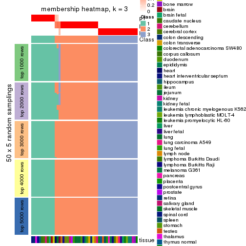
membership_heatmap(res, k = 4)
membership_heatmap(res, k = 5)
membership_heatmap(res, k = 6)
As soon as we have had the classes for columns, we can look for signatures which are significantly different between classes which can be candidate marks for certain classes. Following are the heatmaps for signatures.
Signature heatmaps where rows are scaled:
get_signatures(res, k = 2)
get_signatures(res, k = 3)
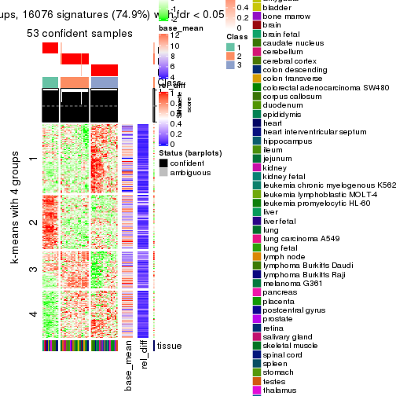
get_signatures(res, k = 4)
get_signatures(res, k = 5)
get_signatures(res, k = 6)
Signature heatmaps where rows are not scaled:
get_signatures(res, k = 2, scale_rows = FALSE)
get_signatures(res, k = 3, scale_rows = FALSE)
get_signatures(res, k = 4, scale_rows = FALSE)

get_signatures(res, k = 5, scale_rows = FALSE)
get_signatures(res, k = 6, scale_rows = FALSE)
Compare the overlap of signatures from different k:
compare_signatures(res)
get_signature() returns a data frame invisibly. TO get the list of signatures, the function
call should be assigned to a variable explicitly. In following code, if plot argument is set
to FALSE, no heatmap is plotted while only the differential analysis is performed.
# code only for demonstration
tb = get_signature(res, k = ..., plot = FALSE)
An example of the output of tb is:
#> which_row fdr mean_1 mean_2 scaled_mean_1 scaled_mean_2 km
#> 1 38 0.042760348 8.373488 9.131774 -0.5533452 0.5164555 1
#> 2 40 0.018707592 7.106213 8.469186 -0.6173731 0.5762149 1
#> 3 55 0.019134737 10.221463 11.207825 -0.6159697 0.5749050 1
#> 4 59 0.006059896 5.921854 7.869574 -0.6899429 0.6439467 1
#> 5 60 0.018055526 8.928898 10.211722 -0.6204761 0.5791110 1
#> 6 98 0.009384629 15.714769 14.887706 0.6635654 -0.6193277 2
...
The columns in tb are:
which_row: row indices corresponding to the input matrix.fdr: FDR for the differential test. mean_x: The mean value in group x.scaled_mean_x: The mean value in group x after rows are scaled.km: Row groups if k-means clustering is applied to rows.UMAP plot which shows how samples are separated.
dimension_reduction(res, k = 2, method = "UMAP")
dimension_reduction(res, k = 3, method = "UMAP")
dimension_reduction(res, k = 4, method = "UMAP")
dimension_reduction(res, k = 5, method = "UMAP")
dimension_reduction(res, k = 6, method = "UMAP")
Following heatmap shows how subgroups are split when increasing k:
collect_classes(res)
Test correlation between subgroups and known annotations. If the known annotation is numeric, one-way ANOVA test is applied, and if the known annotation is discrete, chi-squared contingency table test is applied.
test_to_known_factors(res)
#> n tissue(p) k
#> ATC:skmeans 54 0.398 2
#> ATC:skmeans 53 0.373 3
#> ATC:skmeans 53 0.353 4
#> ATC:skmeans 49 0.406 5
#> ATC:skmeans 46 0.403 6
If matrix rows can be associated to genes, consider to use GO_Enrichment(res,
...) to perform function enrichment for the signature genes.
The object with results only for a single top-value method and a single partition method can be extracted as:
res = res_list["ATC", "pam"]
# you can also extract it by
# res = res_list["ATC:pam"]
A summary of res and all the functions that can be applied to it:
res
#> A 'ConsensusPartition' object with k = 2, 3, 4, 5, 6.
#> On a matrix with 21452 rows and 54 columns.
#> Top rows (1000, 2000, 3000, 4000, 5000) are extracted by 'ATC' method.
#> Subgroups are detected by 'pam' method.
#> Performed in total 1250 partitions by row resampling.
#> Best k for subgroups seems to be 4.
#>
#> Following methods can be applied to this 'ConsensusPartition' object:
#> [1] "cola_report" "collect_classes" "collect_plots"
#> [4] "collect_stats" "colnames" "compare_signatures"
#> [7] "consensus_heatmap" "dimension_reduction" "functional_enrichment"
#> [10] "get_anno_col" "get_anno" "get_classes"
#> [13] "get_consensus" "get_matrix" "get_membership"
#> [16] "get_param" "get_signatures" "get_stats"
#> [19] "is_best_k" "is_stable_k" "membership_heatmap"
#> [22] "ncol" "nrow" "plot_ecdf"
#> [25] "rownames" "select_partition_number" "show"
#> [28] "suggest_best_k" "test_to_known_factors"
collect_plots() function collects all the plots made from res for all k (number of partitions)
into one single page to provide an easy and fast comparison between different k.
collect_plots(res)
The plots are:
k and the heatmap of
predicted classes for each k.k.k.k.All the plots in panels can be made by individual functions and they are plotted later in this section.
select_partition_number() produces several plots showing different
statistics for choosing “optimized” k. There are following statistics:
k;k, the area increased is defined as \(A_k - A_{k-1}\).The detailed explanations of these statistics can be found in the cola vignette.
Generally speaking, lower PAC score, higher mean silhouette score or higher
concordance corresponds to better partition. Rand index and Jaccard index
measure how similar the current partition is compared to partition with k-1.
If they are too similar, we won't accept k is better than k-1.
select_partition_number(res)
The numeric values for all these statistics can be obtained by get_stats().
get_stats(res)
#> k 1-PAC mean_silhouette concordance area_increased Rand Jaccard
#> 2 2 1.000 0.993 0.997 0.3493 0.648 0.648
#> 3 3 1.000 0.991 0.997 0.6426 0.776 0.655
#> 4 4 0.909 0.918 0.964 0.2356 0.798 0.555
#> 5 5 0.784 0.804 0.888 0.0790 0.917 0.717
#> 6 6 0.749 0.770 0.870 0.0448 0.926 0.700
suggest_best_k() suggests the best \(k\) based on these statistics. The rules are as follows:
NA.suggest_best_k(res)
#> [1] 4
#> attr(,"optional")
#> [1] 2 3
There is also optional best \(k\) = 2 3 that is worth to check.
Following shows the table of the partitions (You need to click the show/hide
code output link to see it). The membership matrix (columns with name p*)
is inferred by
clue::cl_consensus()
function with the SE method. Basically the value in the membership matrix
represents the probability to belong to a certain group. The finall class
label for an item is determined with the group with highest probability it
belongs to.
In get_classes() function, the entropy is calculated from the membership
matrix and the silhouette score is calculated from the consensus matrix.
cbind(get_classes(res, k = 2), get_membership(res, k = 2))
#> class entropy silhouette p1 p2
#> GSM28710 2 0.000 1.000 0.000 1.000
#> GSM28711 2 0.000 1.000 0.000 1.000
#> GSM28712 2 0.000 1.000 0.000 1.000
#> GSM11222 2 0.000 1.000 0.000 1.000
#> GSM28720 1 0.000 0.985 1.000 0.000
#> GSM11217 1 0.000 0.985 1.000 0.000
#> GSM28723 1 0.000 0.985 1.000 0.000
#> GSM11241 1 0.000 0.985 1.000 0.000
#> GSM28703 1 0.000 0.985 1.000 0.000
#> GSM11227 1 0.000 0.985 1.000 0.000
#> GSM28706 1 0.000 0.985 1.000 0.000
#> GSM11229 1 0.000 0.985 1.000 0.000
#> GSM11235 1 0.000 0.985 1.000 0.000
#> GSM28707 1 0.000 0.985 1.000 0.000
#> GSM11240 2 0.000 1.000 0.000 1.000
#> GSM28714 2 0.000 1.000 0.000 1.000
#> GSM11216 2 0.000 1.000 0.000 1.000
#> GSM28715 2 0.000 1.000 0.000 1.000
#> GSM11234 2 0.000 1.000 0.000 1.000
#> GSM28699 2 0.000 1.000 0.000 1.000
#> GSM11233 2 0.000 1.000 0.000 1.000
#> GSM28718 2 0.000 1.000 0.000 1.000
#> GSM11231 2 0.000 1.000 0.000 1.000
#> GSM11237 2 0.000 1.000 0.000 1.000
#> GSM11228 2 0.000 1.000 0.000 1.000
#> GSM28697 2 0.000 1.000 0.000 1.000
#> GSM28698 2 0.000 1.000 0.000 1.000
#> GSM11238 2 0.000 1.000 0.000 1.000
#> GSM11242 2 0.000 1.000 0.000 1.000
#> GSM28719 2 0.000 1.000 0.000 1.000
#> GSM28708 2 0.000 1.000 0.000 1.000
#> GSM28722 2 0.000 1.000 0.000 1.000
#> GSM11232 2 0.000 1.000 0.000 1.000
#> GSM28709 2 0.000 1.000 0.000 1.000
#> GSM11226 2 0.000 1.000 0.000 1.000
#> GSM11239 2 0.000 1.000 0.000 1.000
#> GSM11225 2 0.000 1.000 0.000 1.000
#> GSM11220 2 0.000 1.000 0.000 1.000
#> GSM28701 2 0.000 1.000 0.000 1.000
#> GSM28721 2 0.000 1.000 0.000 1.000
#> GSM28713 2 0.000 1.000 0.000 1.000
#> GSM28716 1 0.644 0.804 0.836 0.164
#> GSM11221 2 0.000 1.000 0.000 1.000
#> GSM28717 2 0.000 1.000 0.000 1.000
#> GSM11223 1 0.000 0.985 1.000 0.000
#> GSM11218 2 0.000 1.000 0.000 1.000
#> GSM11219 2 0.000 1.000 0.000 1.000
#> GSM11236 2 0.000 1.000 0.000 1.000
#> GSM28702 2 0.000 1.000 0.000 1.000
#> GSM28705 2 0.000 1.000 0.000 1.000
#> GSM11230 2 0.000 1.000 0.000 1.000
#> GSM28704 2 0.000 1.000 0.000 1.000
#> GSM28700 2 0.000 1.000 0.000 1.000
#> GSM11224 2 0.000 1.000 0.000 1.000
cbind(get_classes(res, k = 3), get_membership(res, k = 3))
#> class entropy silhouette p1 p2 p3
#> GSM28710 2 0.000 1.000 0.000 1.000 0
#> GSM28711 2 0.000 1.000 0.000 1.000 0
#> GSM28712 2 0.000 1.000 0.000 1.000 0
#> GSM11222 3 0.000 1.000 0.000 0.000 1
#> GSM28720 1 0.000 0.978 1.000 0.000 0
#> GSM11217 1 0.000 0.978 1.000 0.000 0
#> GSM28723 1 0.000 0.978 1.000 0.000 0
#> GSM11241 1 0.000 0.978 1.000 0.000 0
#> GSM28703 1 0.000 0.978 1.000 0.000 0
#> GSM11227 1 0.000 0.978 1.000 0.000 0
#> GSM28706 1 0.000 0.978 1.000 0.000 0
#> GSM11229 1 0.000 0.978 1.000 0.000 0
#> GSM11235 1 0.000 0.978 1.000 0.000 0
#> GSM28707 1 0.000 0.978 1.000 0.000 0
#> GSM11240 2 0.000 1.000 0.000 1.000 0
#> GSM28714 2 0.000 1.000 0.000 1.000 0
#> GSM11216 3 0.000 1.000 0.000 0.000 1
#> GSM28715 2 0.000 1.000 0.000 1.000 0
#> GSM11234 2 0.000 1.000 0.000 1.000 0
#> GSM28699 2 0.000 1.000 0.000 1.000 0
#> GSM11233 2 0.000 1.000 0.000 1.000 0
#> GSM28718 2 0.000 1.000 0.000 1.000 0
#> GSM11231 2 0.000 1.000 0.000 1.000 0
#> GSM11237 2 0.000 1.000 0.000 1.000 0
#> GSM11228 2 0.000 1.000 0.000 1.000 0
#> GSM28697 2 0.000 1.000 0.000 1.000 0
#> GSM28698 3 0.000 1.000 0.000 0.000 1
#> GSM11238 3 0.000 1.000 0.000 0.000 1
#> GSM11242 3 0.000 1.000 0.000 0.000 1
#> GSM28719 2 0.000 1.000 0.000 1.000 0
#> GSM28708 2 0.000 1.000 0.000 1.000 0
#> GSM28722 2 0.000 1.000 0.000 1.000 0
#> GSM11232 2 0.000 1.000 0.000 1.000 0
#> GSM28709 3 0.000 1.000 0.000 0.000 1
#> GSM11226 2 0.000 1.000 0.000 1.000 0
#> GSM11239 3 0.000 1.000 0.000 0.000 1
#> GSM11225 3 0.000 1.000 0.000 0.000 1
#> GSM11220 3 0.000 1.000 0.000 0.000 1
#> GSM28701 2 0.000 1.000 0.000 1.000 0
#> GSM28721 2 0.000 1.000 0.000 1.000 0
#> GSM28713 2 0.000 1.000 0.000 1.000 0
#> GSM28716 1 0.412 0.748 0.832 0.168 0
#> GSM11221 2 0.000 1.000 0.000 1.000 0
#> GSM28717 2 0.000 1.000 0.000 1.000 0
#> GSM11223 1 0.000 0.978 1.000 0.000 0
#> GSM11218 2 0.000 1.000 0.000 1.000 0
#> GSM11219 2 0.000 1.000 0.000 1.000 0
#> GSM11236 2 0.000 1.000 0.000 1.000 0
#> GSM28702 3 0.000 1.000 0.000 0.000 1
#> GSM28705 2 0.000 1.000 0.000 1.000 0
#> GSM11230 2 0.000 1.000 0.000 1.000 0
#> GSM28704 2 0.000 1.000 0.000 1.000 0
#> GSM28700 2 0.000 1.000 0.000 1.000 0
#> GSM11224 2 0.000 1.000 0.000 1.000 0
cbind(get_classes(res, k = 4), get_membership(res, k = 4))
#> class entropy silhouette p1 p2 p3 p4
#> GSM28710 2 0.0000 0.972 0.000 1.000 0 0.000
#> GSM28711 2 0.0000 0.972 0.000 1.000 0 0.000
#> GSM28712 2 0.0000 0.972 0.000 1.000 0 0.000
#> GSM11222 4 0.0000 0.825 0.000 0.000 0 1.000
#> GSM28720 1 0.0000 1.000 1.000 0.000 0 0.000
#> GSM11217 1 0.0000 1.000 1.000 0.000 0 0.000
#> GSM28723 1 0.0000 1.000 1.000 0.000 0 0.000
#> GSM11241 1 0.0000 1.000 1.000 0.000 0 0.000
#> GSM28703 1 0.0000 1.000 1.000 0.000 0 0.000
#> GSM11227 1 0.0000 1.000 1.000 0.000 0 0.000
#> GSM28706 1 0.0000 1.000 1.000 0.000 0 0.000
#> GSM11229 1 0.0000 1.000 1.000 0.000 0 0.000
#> GSM11235 1 0.0000 1.000 1.000 0.000 0 0.000
#> GSM28707 1 0.0000 1.000 1.000 0.000 0 0.000
#> GSM11240 2 0.0000 0.972 0.000 1.000 0 0.000
#> GSM28714 2 0.0000 0.972 0.000 1.000 0 0.000
#> GSM11216 3 0.0000 1.000 0.000 0.000 1 0.000
#> GSM28715 2 0.0000 0.972 0.000 1.000 0 0.000
#> GSM11234 2 0.0000 0.972 0.000 1.000 0 0.000
#> GSM28699 2 0.0000 0.972 0.000 1.000 0 0.000
#> GSM11233 2 0.0000 0.972 0.000 1.000 0 0.000
#> GSM28718 2 0.0000 0.972 0.000 1.000 0 0.000
#> GSM11231 2 0.0000 0.972 0.000 1.000 0 0.000
#> GSM11237 2 0.0000 0.972 0.000 1.000 0 0.000
#> GSM11228 2 0.2704 0.812 0.000 0.876 0 0.124
#> GSM28697 4 0.0188 0.824 0.000 0.004 0 0.996
#> GSM28698 3 0.0000 1.000 0.000 0.000 1 0.000
#> GSM11238 3 0.0000 1.000 0.000 0.000 1 0.000
#> GSM11242 3 0.0000 1.000 0.000 0.000 1 0.000
#> GSM28719 4 0.4382 0.669 0.000 0.296 0 0.704
#> GSM28708 4 0.3726 0.744 0.000 0.212 0 0.788
#> GSM28722 2 0.0000 0.972 0.000 1.000 0 0.000
#> GSM11232 2 0.0000 0.972 0.000 1.000 0 0.000
#> GSM28709 3 0.0000 1.000 0.000 0.000 1 0.000
#> GSM11226 4 0.0000 0.825 0.000 0.000 0 1.000
#> GSM11239 3 0.0000 1.000 0.000 0.000 1 0.000
#> GSM11225 3 0.0000 1.000 0.000 0.000 1 0.000
#> GSM11220 3 0.0000 1.000 0.000 0.000 1 0.000
#> GSM28701 4 0.2589 0.792 0.000 0.116 0 0.884
#> GSM28721 4 0.0000 0.825 0.000 0.000 0 1.000
#> GSM28713 2 0.0000 0.972 0.000 1.000 0 0.000
#> GSM28716 2 0.4776 0.382 0.376 0.624 0 0.000
#> GSM11221 2 0.0000 0.972 0.000 1.000 0 0.000
#> GSM28717 2 0.0000 0.972 0.000 1.000 0 0.000
#> GSM11223 1 0.0000 1.000 1.000 0.000 0 0.000
#> GSM11218 4 0.0000 0.825 0.000 0.000 0 1.000
#> GSM11219 2 0.0000 0.972 0.000 1.000 0 0.000
#> GSM11236 4 0.4877 0.479 0.000 0.408 0 0.592
#> GSM28702 4 0.0000 0.825 0.000 0.000 0 1.000
#> GSM28705 4 0.0000 0.825 0.000 0.000 0 1.000
#> GSM11230 4 0.4855 0.497 0.000 0.400 0 0.600
#> GSM28704 2 0.0000 0.972 0.000 1.000 0 0.000
#> GSM28700 2 0.0000 0.972 0.000 1.000 0 0.000
#> GSM11224 2 0.0000 0.972 0.000 1.000 0 0.000
cbind(get_classes(res, k = 5), get_membership(res, k = 5))
#> class entropy silhouette p1 p2 p3 p4 p5
#> GSM28710 2 0.1792 0.794 0.000 0.916 0.000 0.084 0.000
#> GSM28711 2 0.2648 0.769 0.000 0.848 0.000 0.152 0.000
#> GSM28712 2 0.0000 0.807 0.000 1.000 0.000 0.000 0.000
#> GSM11222 4 0.3586 0.615 0.000 0.000 0.000 0.736 0.264
#> GSM28720 1 0.0000 1.000 1.000 0.000 0.000 0.000 0.000
#> GSM11217 1 0.0000 1.000 1.000 0.000 0.000 0.000 0.000
#> GSM28723 1 0.0000 1.000 1.000 0.000 0.000 0.000 0.000
#> GSM11241 1 0.0000 1.000 1.000 0.000 0.000 0.000 0.000
#> GSM28703 1 0.0000 1.000 1.000 0.000 0.000 0.000 0.000
#> GSM11227 1 0.0000 1.000 1.000 0.000 0.000 0.000 0.000
#> GSM28706 1 0.0000 1.000 1.000 0.000 0.000 0.000 0.000
#> GSM11229 1 0.0000 1.000 1.000 0.000 0.000 0.000 0.000
#> GSM11235 1 0.0000 1.000 1.000 0.000 0.000 0.000 0.000
#> GSM28707 1 0.0000 1.000 1.000 0.000 0.000 0.000 0.000
#> GSM11240 2 0.0000 0.807 0.000 1.000 0.000 0.000 0.000
#> GSM28714 2 0.2270 0.755 0.000 0.904 0.000 0.020 0.076
#> GSM11216 3 0.1792 0.918 0.000 0.000 0.916 0.000 0.084
#> GSM28715 2 0.0000 0.807 0.000 1.000 0.000 0.000 0.000
#> GSM11234 2 0.0000 0.807 0.000 1.000 0.000 0.000 0.000
#> GSM28699 5 0.4126 0.877 0.000 0.380 0.000 0.000 0.620
#> GSM11233 5 0.3612 0.850 0.000 0.268 0.000 0.000 0.732
#> GSM28718 2 0.2377 0.670 0.000 0.872 0.000 0.000 0.128
#> GSM11231 2 0.0162 0.807 0.000 0.996 0.000 0.004 0.000
#> GSM11237 5 0.4088 0.819 0.000 0.368 0.000 0.000 0.632
#> GSM11228 2 0.3636 0.677 0.000 0.728 0.000 0.272 0.000
#> GSM28697 4 0.0000 0.769 0.000 0.000 0.000 1.000 0.000
#> GSM28698 3 0.0000 0.963 0.000 0.000 1.000 0.000 0.000
#> GSM11238 3 0.0000 0.963 0.000 0.000 1.000 0.000 0.000
#> GSM11242 3 0.0000 0.963 0.000 0.000 1.000 0.000 0.000
#> GSM28719 4 0.4613 0.336 0.000 0.360 0.000 0.620 0.020
#> GSM28708 4 0.3143 0.635 0.000 0.204 0.000 0.796 0.000
#> GSM28722 2 0.3395 0.723 0.000 0.764 0.000 0.236 0.000
#> GSM11232 2 0.3424 0.718 0.000 0.760 0.000 0.240 0.000
#> GSM28709 3 0.0162 0.961 0.000 0.000 0.996 0.000 0.004
#> GSM11226 4 0.1270 0.766 0.000 0.000 0.000 0.948 0.052
#> GSM11239 3 0.0000 0.963 0.000 0.000 1.000 0.000 0.000
#> GSM11225 3 0.0000 0.963 0.000 0.000 1.000 0.000 0.000
#> GSM11220 3 0.3305 0.807 0.000 0.000 0.776 0.000 0.224
#> GSM28701 4 0.2761 0.730 0.000 0.104 0.000 0.872 0.024
#> GSM28721 4 0.0510 0.770 0.000 0.000 0.000 0.984 0.016
#> GSM28713 2 0.0000 0.807 0.000 1.000 0.000 0.000 0.000
#> GSM28716 5 0.5461 0.833 0.096 0.284 0.000 0.000 0.620
#> GSM11221 2 0.3143 0.742 0.000 0.796 0.000 0.204 0.000
#> GSM28717 5 0.4126 0.877 0.000 0.380 0.000 0.000 0.620
#> GSM11223 1 0.0000 1.000 1.000 0.000 0.000 0.000 0.000
#> GSM11218 4 0.1478 0.762 0.000 0.000 0.000 0.936 0.064
#> GSM11219 2 0.0000 0.807 0.000 1.000 0.000 0.000 0.000
#> GSM11236 2 0.4302 0.169 0.000 0.520 0.000 0.480 0.000
#> GSM28702 4 0.3586 0.615 0.000 0.000 0.000 0.736 0.264
#> GSM28705 4 0.0000 0.769 0.000 0.000 0.000 1.000 0.000
#> GSM11230 4 0.5115 -0.103 0.000 0.480 0.000 0.484 0.036
#> GSM28704 2 0.3395 0.723 0.000 0.764 0.000 0.236 0.000
#> GSM28700 2 0.0000 0.807 0.000 1.000 0.000 0.000 0.000
#> GSM11224 2 0.0000 0.807 0.000 1.000 0.000 0.000 0.000
cbind(get_classes(res, k = 6), get_membership(res, k = 6))
#> class entropy silhouette p1 p2 p3 p4 p5 p6
#> GSM28710 2 0.324 0.651 0.000 0.732 0.000 0.268 0.000 0.000
#> GSM28711 2 0.327 0.681 0.000 0.760 0.000 0.232 0.008 0.000
#> GSM28712 2 0.000 0.821 0.000 1.000 0.000 0.000 0.000 0.000
#> GSM11222 6 0.238 0.748 0.000 0.000 0.000 0.152 0.000 0.848
#> GSM28720 1 0.000 1.000 1.000 0.000 0.000 0.000 0.000 0.000
#> GSM11217 1 0.000 1.000 1.000 0.000 0.000 0.000 0.000 0.000
#> GSM28723 1 0.000 1.000 1.000 0.000 0.000 0.000 0.000 0.000
#> GSM11241 1 0.000 1.000 1.000 0.000 0.000 0.000 0.000 0.000
#> GSM28703 1 0.000 1.000 1.000 0.000 0.000 0.000 0.000 0.000
#> GSM11227 1 0.000 1.000 1.000 0.000 0.000 0.000 0.000 0.000
#> GSM28706 1 0.000 1.000 1.000 0.000 0.000 0.000 0.000 0.000
#> GSM11229 1 0.000 1.000 1.000 0.000 0.000 0.000 0.000 0.000
#> GSM11235 1 0.000 1.000 1.000 0.000 0.000 0.000 0.000 0.000
#> GSM28707 1 0.000 1.000 1.000 0.000 0.000 0.000 0.000 0.000
#> GSM11240 2 0.000 0.821 0.000 1.000 0.000 0.000 0.000 0.000
#> GSM28714 2 0.209 0.753 0.000 0.876 0.000 0.000 0.124 0.000
#> GSM11216 3 0.348 0.642 0.000 0.000 0.684 0.000 0.000 0.316
#> GSM28715 2 0.000 0.821 0.000 1.000 0.000 0.000 0.000 0.000
#> GSM11234 2 0.000 0.821 0.000 1.000 0.000 0.000 0.000 0.000
#> GSM28699 5 0.249 0.810 0.000 0.164 0.000 0.000 0.836 0.000
#> GSM11233 5 0.000 0.697 0.000 0.000 0.000 0.000 1.000 0.000
#> GSM28718 2 0.263 0.691 0.000 0.820 0.000 0.000 0.180 0.000
#> GSM11231 2 0.079 0.815 0.000 0.968 0.000 0.032 0.000 0.000
#> GSM11237 5 0.341 0.542 0.000 0.300 0.000 0.000 0.700 0.000
#> GSM11228 4 0.238 0.743 0.000 0.152 0.000 0.848 0.000 0.000
#> GSM28697 4 0.000 0.716 0.000 0.000 0.000 1.000 0.000 0.000
#> GSM28698 3 0.000 0.925 0.000 0.000 1.000 0.000 0.000 0.000
#> GSM11238 3 0.000 0.925 0.000 0.000 1.000 0.000 0.000 0.000
#> GSM11242 3 0.000 0.925 0.000 0.000 1.000 0.000 0.000 0.000
#> GSM28719 4 0.420 0.542 0.000 0.316 0.000 0.652 0.000 0.032
#> GSM28708 4 0.214 0.758 0.000 0.128 0.000 0.872 0.000 0.000
#> GSM28722 2 0.368 0.517 0.000 0.628 0.000 0.372 0.000 0.000
#> GSM11232 2 0.371 0.502 0.000 0.620 0.000 0.380 0.000 0.000
#> GSM28709 3 0.234 0.837 0.000 0.000 0.852 0.000 0.000 0.148
#> GSM11226 4 0.385 -0.161 0.000 0.000 0.000 0.540 0.000 0.460
#> GSM11239 3 0.000 0.925 0.000 0.000 1.000 0.000 0.000 0.000
#> GSM11225 3 0.000 0.925 0.000 0.000 1.000 0.000 0.000 0.000
#> GSM11220 6 0.294 0.368 0.000 0.000 0.220 0.000 0.000 0.780
#> GSM28701 4 0.370 0.724 0.000 0.112 0.000 0.788 0.000 0.100
#> GSM28721 4 0.171 0.657 0.000 0.000 0.000 0.908 0.000 0.092
#> GSM28713 2 0.000 0.821 0.000 1.000 0.000 0.000 0.000 0.000
#> GSM28716 5 0.297 0.793 0.036 0.128 0.000 0.000 0.836 0.000
#> GSM11221 2 0.196 0.784 0.000 0.888 0.000 0.112 0.000 0.000
#> GSM28717 5 0.249 0.810 0.000 0.164 0.000 0.000 0.836 0.000
#> GSM11223 1 0.000 1.000 1.000 0.000 0.000 0.000 0.000 0.000
#> GSM11218 6 0.362 0.447 0.000 0.000 0.000 0.352 0.000 0.648
#> GSM11219 2 0.000 0.821 0.000 1.000 0.000 0.000 0.000 0.000
#> GSM11236 4 0.226 0.757 0.000 0.140 0.000 0.860 0.000 0.000
#> GSM28702 6 0.238 0.748 0.000 0.000 0.000 0.152 0.000 0.848
#> GSM28705 4 0.000 0.716 0.000 0.000 0.000 1.000 0.000 0.000
#> GSM11230 2 0.514 0.546 0.000 0.640 0.000 0.260 0.024 0.076
#> GSM28704 2 0.358 0.564 0.000 0.660 0.000 0.340 0.000 0.000
#> GSM28700 2 0.000 0.821 0.000 1.000 0.000 0.000 0.000 0.000
#> GSM11224 2 0.000 0.821 0.000 1.000 0.000 0.000 0.000 0.000
Heatmaps for the consensus matrix. It visualizes the probability of two samples to be in a same group.
consensus_heatmap(res, k = 2)
consensus_heatmap(res, k = 3)
consensus_heatmap(res, k = 4)
consensus_heatmap(res, k = 5)
consensus_heatmap(res, k = 6)
Heatmaps for the membership of samples in all partitions to see how consistent they are:
membership_heatmap(res, k = 2)
membership_heatmap(res, k = 3)
membership_heatmap(res, k = 4)
membership_heatmap(res, k = 5)
membership_heatmap(res, k = 6)
As soon as we have had the classes for columns, we can look for signatures which are significantly different between classes which can be candidate marks for certain classes. Following are the heatmaps for signatures.
Signature heatmaps where rows are scaled:
get_signatures(res, k = 2)
get_signatures(res, k = 3)
get_signatures(res, k = 4)
get_signatures(res, k = 5)
get_signatures(res, k = 6)
Signature heatmaps where rows are not scaled:
get_signatures(res, k = 2, scale_rows = FALSE)
get_signatures(res, k = 3, scale_rows = FALSE)
get_signatures(res, k = 4, scale_rows = FALSE)
get_signatures(res, k = 5, scale_rows = FALSE)
get_signatures(res, k = 6, scale_rows = FALSE)
Compare the overlap of signatures from different k:
compare_signatures(res)

get_signature() returns a data frame invisibly. TO get the list of signatures, the function
call should be assigned to a variable explicitly. In following code, if plot argument is set
to FALSE, no heatmap is plotted while only the differential analysis is performed.
# code only for demonstration
tb = get_signature(res, k = ..., plot = FALSE)
An example of the output of tb is:
#> which_row fdr mean_1 mean_2 scaled_mean_1 scaled_mean_2 km
#> 1 38 0.042760348 8.373488 9.131774 -0.5533452 0.5164555 1
#> 2 40 0.018707592 7.106213 8.469186 -0.6173731 0.5762149 1
#> 3 55 0.019134737 10.221463 11.207825 -0.6159697 0.5749050 1
#> 4 59 0.006059896 5.921854 7.869574 -0.6899429 0.6439467 1
#> 5 60 0.018055526 8.928898 10.211722 -0.6204761 0.5791110 1
#> 6 98 0.009384629 15.714769 14.887706 0.6635654 -0.6193277 2
...
The columns in tb are:
which_row: row indices corresponding to the input matrix.fdr: FDR for the differential test. mean_x: The mean value in group x.scaled_mean_x: The mean value in group x after rows are scaled.km: Row groups if k-means clustering is applied to rows.UMAP plot which shows how samples are separated.
dimension_reduction(res, k = 2, method = "UMAP")
dimension_reduction(res, k = 3, method = "UMAP")

dimension_reduction(res, k = 4, method = "UMAP")
dimension_reduction(res, k = 5, method = "UMAP")
dimension_reduction(res, k = 6, method = "UMAP")
Following heatmap shows how subgroups are split when increasing k:
collect_classes(res)
Test correlation between subgroups and known annotations. If the known annotation is numeric, one-way ANOVA test is applied, and if the known annotation is discrete, chi-squared contingency table test is applied.
test_to_known_factors(res)
#> n tissue(p) k
#> ATC:pam 54 0.398 2
#> ATC:pam 54 0.374 3
#> ATC:pam 51 0.350 4
#> ATC:pam 51 0.457 5
#> ATC:pam 51 0.426 6
If matrix rows can be associated to genes, consider to use GO_Enrichment(res,
...) to perform function enrichment for the signature genes.
The object with results only for a single top-value method and a single partition method can be extracted as:
res = res_list["ATC", "mclust"]
# you can also extract it by
# res = res_list["ATC:mclust"]
A summary of res and all the functions that can be applied to it:
res
#> A 'ConsensusPartition' object with k = 2, 3, 4, 5, 6.
#> On a matrix with 21452 rows and 54 columns.
#> Top rows (1000, 2000, 3000, 4000, 5000) are extracted by 'ATC' method.
#> Subgroups are detected by 'mclust' method.
#> Performed in total 1250 partitions by row resampling.
#> Best k for subgroups seems to be 3.
#>
#> Following methods can be applied to this 'ConsensusPartition' object:
#> [1] "cola_report" "collect_classes" "collect_plots"
#> [4] "collect_stats" "colnames" "compare_signatures"
#> [7] "consensus_heatmap" "dimension_reduction" "functional_enrichment"
#> [10] "get_anno_col" "get_anno" "get_classes"
#> [13] "get_consensus" "get_matrix" "get_membership"
#> [16] "get_param" "get_signatures" "get_stats"
#> [19] "is_best_k" "is_stable_k" "membership_heatmap"
#> [22] "ncol" "nrow" "plot_ecdf"
#> [25] "rownames" "select_partition_number" "show"
#> [28] "suggest_best_k" "test_to_known_factors"
collect_plots() function collects all the plots made from res for all k (number of partitions)
into one single page to provide an easy and fast comparison between different k.
collect_plots(res)
The plots are:
k and the heatmap of
predicted classes for each k.k.k.k.All the plots in panels can be made by individual functions and they are plotted later in this section.
select_partition_number() produces several plots showing different
statistics for choosing “optimized” k. There are following statistics:
k;k, the area increased is defined as \(A_k - A_{k-1}\).The detailed explanations of these statistics can be found in the cola vignette.
Generally speaking, lower PAC score, higher mean silhouette score or higher
concordance corresponds to better partition. Rand index and Jaccard index
measure how similar the current partition is compared to partition with k-1.
If they are too similar, we won't accept k is better than k-1.
select_partition_number(res)
The numeric values for all these statistics can be obtained by get_stats().
get_stats(res)
#> k 1-PAC mean_silhouette concordance area_increased Rand Jaccard
#> 2 2 0.788 0.856 0.935 0.4322 0.535 0.535
#> 3 3 1.000 0.989 0.994 0.3661 0.835 0.703
#> 4 4 0.752 0.808 0.876 0.1404 0.901 0.769
#> 5 5 0.758 0.819 0.881 0.1521 0.824 0.530
#> 6 6 0.785 0.737 0.877 0.0628 0.889 0.560
suggest_best_k() suggests the best \(k\) based on these statistics. The rules are as follows:
NA.suggest_best_k(res)
#> [1] 3
Following shows the table of the partitions (You need to click the show/hide
code output link to see it). The membership matrix (columns with name p*)
is inferred by
clue::cl_consensus()
function with the SE method. Basically the value in the membership matrix
represents the probability to belong to a certain group. The finall class
label for an item is determined with the group with highest probability it
belongs to.
In get_classes() function, the entropy is calculated from the membership
matrix and the silhouette score is calculated from the consensus matrix.
cbind(get_classes(res, k = 2), get_membership(res, k = 2))
#> class entropy silhouette p1 p2
#> GSM28710 2 0.0000 0.969 0.000 1.000
#> GSM28711 2 0.0000 0.969 0.000 1.000
#> GSM28712 2 0.0000 0.969 0.000 1.000
#> GSM11222 2 0.0000 0.969 0.000 1.000
#> GSM28720 1 0.0000 0.836 1.000 0.000
#> GSM11217 1 0.0000 0.836 1.000 0.000
#> GSM28723 1 0.0000 0.836 1.000 0.000
#> GSM11241 1 0.0000 0.836 1.000 0.000
#> GSM28703 1 0.0000 0.836 1.000 0.000
#> GSM11227 1 0.0000 0.836 1.000 0.000
#> GSM28706 1 0.0000 0.836 1.000 0.000
#> GSM11229 1 0.0000 0.836 1.000 0.000
#> GSM11235 1 0.0000 0.836 1.000 0.000
#> GSM28707 1 0.0000 0.836 1.000 0.000
#> GSM11240 2 0.0000 0.969 0.000 1.000
#> GSM28714 2 0.1843 0.941 0.028 0.972
#> GSM11216 2 0.9996 -0.253 0.488 0.512
#> GSM28715 2 0.0000 0.969 0.000 1.000
#> GSM11234 2 0.0000 0.969 0.000 1.000
#> GSM28699 2 0.2603 0.923 0.044 0.956
#> GSM11233 2 0.1184 0.954 0.016 0.984
#> GSM28718 2 0.0938 0.958 0.012 0.988
#> GSM11231 2 0.0000 0.969 0.000 1.000
#> GSM11237 2 0.0000 0.969 0.000 1.000
#> GSM11228 2 0.0000 0.969 0.000 1.000
#> GSM28697 2 0.0000 0.969 0.000 1.000
#> GSM28698 1 0.9522 0.588 0.628 0.372
#> GSM11238 1 0.9522 0.588 0.628 0.372
#> GSM11242 1 0.9522 0.588 0.628 0.372
#> GSM28719 2 0.0000 0.969 0.000 1.000
#> GSM28708 2 0.0000 0.969 0.000 1.000
#> GSM28722 2 0.0000 0.969 0.000 1.000
#> GSM11232 2 0.0000 0.969 0.000 1.000
#> GSM28709 1 0.9522 0.588 0.628 0.372
#> GSM11226 2 0.0000 0.969 0.000 1.000
#> GSM11239 1 0.9522 0.588 0.628 0.372
#> GSM11225 1 0.9522 0.588 0.628 0.372
#> GSM11220 1 0.9608 0.564 0.616 0.384
#> GSM28701 2 0.0000 0.969 0.000 1.000
#> GSM28721 2 0.0000 0.969 0.000 1.000
#> GSM28713 2 0.0000 0.969 0.000 1.000
#> GSM28716 1 0.2778 0.811 0.952 0.048
#> GSM11221 2 0.0000 0.969 0.000 1.000
#> GSM28717 2 0.0000 0.969 0.000 1.000
#> GSM11223 1 0.0000 0.836 1.000 0.000
#> GSM11218 2 0.0000 0.969 0.000 1.000
#> GSM11219 2 0.0000 0.969 0.000 1.000
#> GSM11236 2 0.8386 0.520 0.268 0.732
#> GSM28702 2 0.0000 0.969 0.000 1.000
#> GSM28705 2 0.0000 0.969 0.000 1.000
#> GSM11230 2 0.0000 0.969 0.000 1.000
#> GSM28704 2 0.0000 0.969 0.000 1.000
#> GSM28700 2 0.0000 0.969 0.000 1.000
#> GSM11224 2 0.0000 0.969 0.000 1.000
cbind(get_classes(res, k = 3), get_membership(res, k = 3))
#> class entropy silhouette p1 p2 p3
#> GSM28710 2 0.0000 0.997 0.000 1.000 0.000
#> GSM28711 2 0.0000 0.997 0.000 1.000 0.000
#> GSM28712 2 0.0237 0.995 0.004 0.996 0.000
#> GSM11222 2 0.0000 0.997 0.000 1.000 0.000
#> GSM28720 1 0.0000 0.989 1.000 0.000 0.000
#> GSM11217 1 0.0000 0.989 1.000 0.000 0.000
#> GSM28723 1 0.0000 0.989 1.000 0.000 0.000
#> GSM11241 1 0.0000 0.989 1.000 0.000 0.000
#> GSM28703 1 0.0000 0.989 1.000 0.000 0.000
#> GSM11227 1 0.0000 0.989 1.000 0.000 0.000
#> GSM28706 1 0.0000 0.989 1.000 0.000 0.000
#> GSM11229 1 0.0000 0.989 1.000 0.000 0.000
#> GSM11235 1 0.0000 0.989 1.000 0.000 0.000
#> GSM28707 1 0.0000 0.989 1.000 0.000 0.000
#> GSM11240 2 0.0237 0.995 0.004 0.996 0.000
#> GSM28714 2 0.0237 0.995 0.004 0.996 0.000
#> GSM11216 3 0.0000 0.989 0.000 0.000 1.000
#> GSM28715 2 0.0000 0.997 0.000 1.000 0.000
#> GSM11234 2 0.0000 0.997 0.000 1.000 0.000
#> GSM28699 3 0.1620 0.966 0.012 0.024 0.964
#> GSM11233 2 0.2446 0.934 0.012 0.936 0.052
#> GSM28718 2 0.0237 0.995 0.004 0.996 0.000
#> GSM11231 2 0.0000 0.997 0.000 1.000 0.000
#> GSM11237 2 0.0237 0.995 0.004 0.996 0.000
#> GSM11228 2 0.0000 0.997 0.000 1.000 0.000
#> GSM28697 2 0.0000 0.997 0.000 1.000 0.000
#> GSM28698 3 0.0000 0.989 0.000 0.000 1.000
#> GSM11238 3 0.0000 0.989 0.000 0.000 1.000
#> GSM11242 3 0.0000 0.989 0.000 0.000 1.000
#> GSM28719 2 0.0000 0.997 0.000 1.000 0.000
#> GSM28708 2 0.0000 0.997 0.000 1.000 0.000
#> GSM28722 2 0.0000 0.997 0.000 1.000 0.000
#> GSM11232 2 0.0000 0.997 0.000 1.000 0.000
#> GSM28709 3 0.0000 0.989 0.000 0.000 1.000
#> GSM11226 2 0.0000 0.997 0.000 1.000 0.000
#> GSM11239 3 0.0000 0.989 0.000 0.000 1.000
#> GSM11225 3 0.0000 0.989 0.000 0.000 1.000
#> GSM11220 3 0.0000 0.989 0.000 0.000 1.000
#> GSM28701 2 0.0000 0.997 0.000 1.000 0.000
#> GSM28721 2 0.0000 0.997 0.000 1.000 0.000
#> GSM28713 2 0.0000 0.997 0.000 1.000 0.000
#> GSM28716 1 0.3846 0.862 0.876 0.016 0.108
#> GSM11221 2 0.0000 0.997 0.000 1.000 0.000
#> GSM28717 3 0.1267 0.970 0.004 0.024 0.972
#> GSM11223 1 0.0000 0.989 1.000 0.000 0.000
#> GSM11218 2 0.0000 0.997 0.000 1.000 0.000
#> GSM11219 2 0.0000 0.997 0.000 1.000 0.000
#> GSM11236 3 0.1267 0.970 0.004 0.024 0.972
#> GSM28702 2 0.0000 0.997 0.000 1.000 0.000
#> GSM28705 2 0.0000 0.997 0.000 1.000 0.000
#> GSM11230 2 0.0237 0.995 0.004 0.996 0.000
#> GSM28704 2 0.0000 0.997 0.000 1.000 0.000
#> GSM28700 2 0.0000 0.997 0.000 1.000 0.000
#> GSM11224 2 0.0000 0.997 0.000 1.000 0.000
cbind(get_classes(res, k = 4), get_membership(res, k = 4))
#> class entropy silhouette p1 p2 p3 p4
#> GSM28710 2 0.2868 0.813 0.000 0.864 0.000 0.136
#> GSM28711 2 0.3801 0.847 0.000 0.780 0.000 0.220
#> GSM28712 2 0.4134 0.854 0.000 0.740 0.000 0.260
#> GSM11222 3 0.5764 0.318 0.000 0.452 0.520 0.028
#> GSM28720 1 0.0000 0.905 1.000 0.000 0.000 0.000
#> GSM11217 1 0.0000 0.905 1.000 0.000 0.000 0.000
#> GSM28723 1 0.0336 0.902 0.992 0.000 0.000 0.008
#> GSM11241 1 0.0000 0.905 1.000 0.000 0.000 0.000
#> GSM28703 1 0.0000 0.905 1.000 0.000 0.000 0.000
#> GSM11227 1 0.0000 0.905 1.000 0.000 0.000 0.000
#> GSM28706 1 0.0336 0.902 0.992 0.000 0.000 0.008
#> GSM11229 1 0.0000 0.905 1.000 0.000 0.000 0.000
#> GSM11235 1 0.0000 0.905 1.000 0.000 0.000 0.000
#> GSM28707 1 0.0000 0.905 1.000 0.000 0.000 0.000
#> GSM11240 2 0.4072 0.857 0.000 0.748 0.000 0.252
#> GSM28714 2 0.4382 0.822 0.000 0.704 0.000 0.296
#> GSM11216 3 0.0188 0.854 0.000 0.000 0.996 0.004
#> GSM28715 2 0.3942 0.863 0.000 0.764 0.000 0.236
#> GSM11234 2 0.3907 0.863 0.000 0.768 0.000 0.232
#> GSM28699 4 0.0592 0.973 0.000 0.000 0.016 0.984
#> GSM11233 4 0.0188 0.982 0.000 0.004 0.000 0.996
#> GSM28718 2 0.4304 0.834 0.000 0.716 0.000 0.284
#> GSM11231 2 0.3942 0.863 0.000 0.764 0.000 0.236
#> GSM11237 2 0.4304 0.834 0.000 0.716 0.000 0.284
#> GSM11228 2 0.1302 0.762 0.000 0.956 0.000 0.044
#> GSM28697 2 0.1302 0.762 0.000 0.956 0.000 0.044
#> GSM28698 3 0.0000 0.856 0.000 0.000 1.000 0.000
#> GSM11238 3 0.0000 0.856 0.000 0.000 1.000 0.000
#> GSM11242 3 0.0000 0.856 0.000 0.000 1.000 0.000
#> GSM28719 2 0.0188 0.785 0.000 0.996 0.000 0.004
#> GSM28708 2 0.0707 0.777 0.000 0.980 0.000 0.020
#> GSM28722 2 0.3942 0.863 0.000 0.764 0.000 0.236
#> GSM11232 2 0.3528 0.861 0.000 0.808 0.000 0.192
#> GSM28709 3 0.0000 0.856 0.000 0.000 1.000 0.000
#> GSM11226 2 0.0188 0.785 0.000 0.996 0.000 0.004
#> GSM11239 3 0.0000 0.856 0.000 0.000 1.000 0.000
#> GSM11225 3 0.0000 0.856 0.000 0.000 1.000 0.000
#> GSM11220 3 0.0188 0.854 0.000 0.000 0.996 0.004
#> GSM28701 2 0.1302 0.762 0.000 0.956 0.000 0.044
#> GSM28721 2 0.0707 0.776 0.000 0.980 0.000 0.020
#> GSM28713 2 0.3942 0.863 0.000 0.764 0.000 0.236
#> GSM28716 1 0.5392 0.189 0.528 0.012 0.000 0.460
#> GSM11221 2 0.3837 0.850 0.000 0.776 0.000 0.224
#> GSM28717 4 0.0000 0.984 0.000 0.000 0.000 1.000
#> GSM11223 1 0.0336 0.902 0.992 0.000 0.000 0.008
#> GSM11218 2 0.0188 0.785 0.000 0.996 0.000 0.004
#> GSM11219 2 0.3975 0.862 0.000 0.760 0.000 0.240
#> GSM11236 1 0.9425 -0.118 0.360 0.116 0.204 0.320
#> GSM28702 3 0.5764 0.318 0.000 0.452 0.520 0.028
#> GSM28705 2 0.0592 0.778 0.000 0.984 0.000 0.016
#> GSM11230 2 0.4008 0.861 0.000 0.756 0.000 0.244
#> GSM28704 2 0.3837 0.864 0.000 0.776 0.000 0.224
#> GSM28700 2 0.4008 0.860 0.000 0.756 0.000 0.244
#> GSM11224 2 0.3942 0.863 0.000 0.764 0.000 0.236
cbind(get_classes(res, k = 5), get_membership(res, k = 5))
#> class entropy silhouette p1 p2 p3 p4 p5
#> GSM28710 4 0.3508 0.672 0.000 0.252 0.000 0.748 0.000
#> GSM28711 4 0.3452 0.684 0.000 0.244 0.000 0.756 0.000
#> GSM28712 2 0.3980 0.678 0.000 0.796 0.000 0.076 0.128
#> GSM11222 4 0.4308 0.697 0.000 0.012 0.072 0.788 0.128
#> GSM28720 1 0.0000 0.965 1.000 0.000 0.000 0.000 0.000
#> GSM11217 1 0.0000 0.965 1.000 0.000 0.000 0.000 0.000
#> GSM28723 1 0.0000 0.965 1.000 0.000 0.000 0.000 0.000
#> GSM11241 1 0.0000 0.965 1.000 0.000 0.000 0.000 0.000
#> GSM28703 1 0.0000 0.965 1.000 0.000 0.000 0.000 0.000
#> GSM11227 1 0.0000 0.965 1.000 0.000 0.000 0.000 0.000
#> GSM28706 1 0.0162 0.962 0.996 0.000 0.000 0.000 0.004
#> GSM11229 1 0.0000 0.965 1.000 0.000 0.000 0.000 0.000
#> GSM11235 1 0.0000 0.965 1.000 0.000 0.000 0.000 0.000
#> GSM28707 1 0.0000 0.965 1.000 0.000 0.000 0.000 0.000
#> GSM11240 2 0.2732 0.666 0.000 0.840 0.000 0.000 0.160
#> GSM28714 2 0.2773 0.662 0.000 0.836 0.000 0.000 0.164
#> GSM11216 3 0.0609 0.924 0.000 0.000 0.980 0.000 0.020
#> GSM28715 2 0.2516 0.795 0.000 0.860 0.000 0.140 0.000
#> GSM11234 2 0.3508 0.732 0.000 0.748 0.000 0.252 0.000
#> GSM28699 5 0.3691 0.905 0.000 0.156 0.000 0.040 0.804
#> GSM11233 5 0.4000 0.861 0.000 0.228 0.000 0.024 0.748
#> GSM28718 2 0.2732 0.666 0.000 0.840 0.000 0.000 0.160
#> GSM11231 2 0.3242 0.786 0.000 0.784 0.000 0.216 0.000
#> GSM11237 2 0.2677 0.696 0.000 0.872 0.000 0.016 0.112
#> GSM11228 4 0.1410 0.834 0.000 0.060 0.000 0.940 0.000
#> GSM28697 4 0.1410 0.834 0.000 0.060 0.000 0.940 0.000
#> GSM28698 3 0.0000 0.932 0.000 0.000 1.000 0.000 0.000
#> GSM11238 3 0.0290 0.929 0.000 0.000 0.992 0.000 0.008
#> GSM11242 3 0.0000 0.932 0.000 0.000 1.000 0.000 0.000
#> GSM28719 4 0.1671 0.843 0.000 0.076 0.000 0.924 0.000
#> GSM28708 4 0.1671 0.843 0.000 0.076 0.000 0.924 0.000
#> GSM28722 2 0.2690 0.793 0.000 0.844 0.000 0.156 0.000
#> GSM11232 2 0.2966 0.783 0.000 0.816 0.000 0.184 0.000
#> GSM28709 3 0.0000 0.932 0.000 0.000 1.000 0.000 0.000
#> GSM11226 4 0.1671 0.843 0.000 0.076 0.000 0.924 0.000
#> GSM11239 3 0.0000 0.932 0.000 0.000 1.000 0.000 0.000
#> GSM11225 3 0.0000 0.932 0.000 0.000 1.000 0.000 0.000
#> GSM11220 3 0.0609 0.924 0.000 0.000 0.980 0.000 0.020
#> GSM28701 4 0.1410 0.834 0.000 0.060 0.000 0.940 0.000
#> GSM28721 4 0.1732 0.843 0.000 0.080 0.000 0.920 0.000
#> GSM28713 2 0.3796 0.729 0.000 0.700 0.000 0.300 0.000
#> GSM28716 1 0.5996 0.475 0.656 0.040 0.000 0.108 0.196
#> GSM11221 4 0.3508 0.672 0.000 0.252 0.000 0.748 0.000
#> GSM28717 5 0.2377 0.880 0.000 0.128 0.000 0.000 0.872
#> GSM11223 1 0.0290 0.959 0.992 0.000 0.000 0.000 0.008
#> GSM11218 4 0.1671 0.843 0.000 0.076 0.000 0.924 0.000
#> GSM11219 2 0.3289 0.791 0.000 0.844 0.000 0.108 0.048
#> GSM11236 3 0.7172 0.284 0.024 0.020 0.536 0.236 0.184
#> GSM28702 4 0.4308 0.697 0.000 0.012 0.072 0.788 0.128
#> GSM28705 4 0.1851 0.845 0.000 0.088 0.000 0.912 0.000
#> GSM11230 2 0.3093 0.655 0.000 0.824 0.000 0.008 0.168
#> GSM28704 2 0.3143 0.780 0.000 0.796 0.000 0.204 0.000
#> GSM28700 2 0.4752 0.768 0.000 0.724 0.000 0.184 0.092
#> GSM11224 2 0.2732 0.791 0.000 0.840 0.000 0.160 0.000
cbind(get_classes(res, k = 6), get_membership(res, k = 6))
#> class entropy silhouette p1 p2 p3 p4 p5 p6
#> GSM28710 2 0.0291 0.8972 0.000 0.992 0.000 0.004 0.000 0.004
#> GSM28711 2 0.0508 0.8938 0.000 0.984 0.000 0.012 0.000 0.004
#> GSM28712 5 0.2402 0.5438 0.000 0.140 0.000 0.000 0.856 0.004
#> GSM11222 4 0.3050 0.6348 0.000 0.000 0.000 0.764 0.000 0.236
#> GSM28720 1 0.0000 0.9716 1.000 0.000 0.000 0.000 0.000 0.000
#> GSM11217 1 0.0260 0.9722 0.992 0.000 0.000 0.000 0.000 0.008
#> GSM28723 1 0.1141 0.9475 0.948 0.000 0.000 0.000 0.000 0.052
#> GSM11241 1 0.0000 0.9716 1.000 0.000 0.000 0.000 0.000 0.000
#> GSM28703 1 0.0000 0.9716 1.000 0.000 0.000 0.000 0.000 0.000
#> GSM11227 1 0.0260 0.9722 0.992 0.000 0.000 0.000 0.000 0.008
#> GSM28706 1 0.1204 0.9451 0.944 0.000 0.000 0.000 0.000 0.056
#> GSM11229 1 0.0260 0.9722 0.992 0.000 0.000 0.000 0.000 0.008
#> GSM11235 1 0.0260 0.9722 0.992 0.000 0.000 0.000 0.000 0.008
#> GSM28707 1 0.0260 0.9722 0.992 0.000 0.000 0.000 0.000 0.008
#> GSM11240 5 0.0458 0.6316 0.000 0.016 0.000 0.000 0.984 0.000
#> GSM28714 5 0.0458 0.6316 0.000 0.016 0.000 0.000 0.984 0.000
#> GSM11216 3 0.2941 0.7934 0.000 0.000 0.780 0.000 0.000 0.220
#> GSM28715 2 0.0858 0.8949 0.000 0.968 0.000 0.004 0.028 0.000
#> GSM11234 2 0.0146 0.8982 0.000 0.996 0.000 0.004 0.000 0.000
#> GSM28699 5 0.3838 -0.1417 0.000 0.000 0.000 0.000 0.552 0.448
#> GSM11233 5 0.4319 0.0269 0.000 0.024 0.000 0.000 0.576 0.400
#> GSM28718 5 0.0458 0.6316 0.000 0.016 0.000 0.000 0.984 0.000
#> GSM11231 2 0.2473 0.7942 0.000 0.856 0.000 0.136 0.008 0.000
#> GSM11237 5 0.2595 0.5101 0.000 0.160 0.000 0.000 0.836 0.004
#> GSM11228 4 0.3584 0.6678 0.000 0.308 0.000 0.688 0.000 0.004
#> GSM28697 4 0.3584 0.6678 0.000 0.308 0.000 0.688 0.000 0.004
#> GSM28698 3 0.0000 0.9351 0.000 0.000 1.000 0.000 0.000 0.000
#> GSM11238 3 0.0000 0.9351 0.000 0.000 1.000 0.000 0.000 0.000
#> GSM11242 3 0.0000 0.9351 0.000 0.000 1.000 0.000 0.000 0.000
#> GSM28719 4 0.0260 0.7680 0.000 0.008 0.000 0.992 0.000 0.000
#> GSM28708 4 0.2088 0.7296 0.000 0.000 0.000 0.904 0.028 0.068
#> GSM28722 2 0.0777 0.8960 0.000 0.972 0.000 0.004 0.024 0.000
#> GSM11232 2 0.0713 0.8943 0.000 0.972 0.000 0.028 0.000 0.000
#> GSM28709 3 0.0260 0.9327 0.000 0.000 0.992 0.000 0.000 0.008
#> GSM11226 4 0.0363 0.7653 0.000 0.000 0.000 0.988 0.012 0.000
#> GSM11239 3 0.0000 0.9351 0.000 0.000 1.000 0.000 0.000 0.000
#> GSM11225 3 0.0146 0.9333 0.000 0.000 0.996 0.000 0.000 0.004
#> GSM11220 3 0.2941 0.7934 0.000 0.000 0.780 0.000 0.000 0.220
#> GSM28701 4 0.3584 0.6678 0.000 0.308 0.000 0.688 0.000 0.004
#> GSM28721 4 0.2048 0.7591 0.000 0.120 0.000 0.880 0.000 0.000
#> GSM28713 2 0.0937 0.8849 0.000 0.960 0.000 0.040 0.000 0.000
#> GSM28716 6 0.5616 0.2651 0.008 0.148 0.000 0.000 0.288 0.556
#> GSM11221 2 0.0291 0.8972 0.000 0.992 0.000 0.004 0.000 0.004
#> GSM28717 6 0.3862 -0.1066 0.000 0.000 0.000 0.000 0.476 0.524
#> GSM11223 1 0.2562 0.8365 0.828 0.000 0.000 0.000 0.000 0.172
#> GSM11218 4 0.0000 0.7648 0.000 0.000 0.000 1.000 0.000 0.000
#> GSM11219 2 0.2100 0.8328 0.000 0.884 0.000 0.004 0.112 0.000
#> GSM11236 6 0.6475 0.1515 0.000 0.056 0.004 0.132 0.308 0.500
#> GSM28702 4 0.3050 0.6348 0.000 0.000 0.000 0.764 0.000 0.236
#> GSM28705 4 0.2730 0.7347 0.000 0.192 0.000 0.808 0.000 0.000
#> GSM11230 5 0.3608 0.3247 0.000 0.012 0.000 0.004 0.736 0.248
#> GSM28704 2 0.3215 0.6734 0.000 0.756 0.000 0.240 0.004 0.000
#> GSM28700 2 0.3482 0.4622 0.000 0.684 0.000 0.000 0.316 0.000
#> GSM11224 2 0.0790 0.8926 0.000 0.968 0.000 0.000 0.032 0.000
Heatmaps for the consensus matrix. It visualizes the probability of two samples to be in a same group.
consensus_heatmap(res, k = 2)
consensus_heatmap(res, k = 3)
consensus_heatmap(res, k = 4)
consensus_heatmap(res, k = 5)
consensus_heatmap(res, k = 6)
Heatmaps for the membership of samples in all partitions to see how consistent they are:
membership_heatmap(res, k = 2)
membership_heatmap(res, k = 3)
membership_heatmap(res, k = 4)
membership_heatmap(res, k = 5)
membership_heatmap(res, k = 6)
As soon as we have had the classes for columns, we can look for signatures which are significantly different between classes which can be candidate marks for certain classes. Following are the heatmaps for signatures.
Signature heatmaps where rows are scaled:
get_signatures(res, k = 2)
get_signatures(res, k = 3)
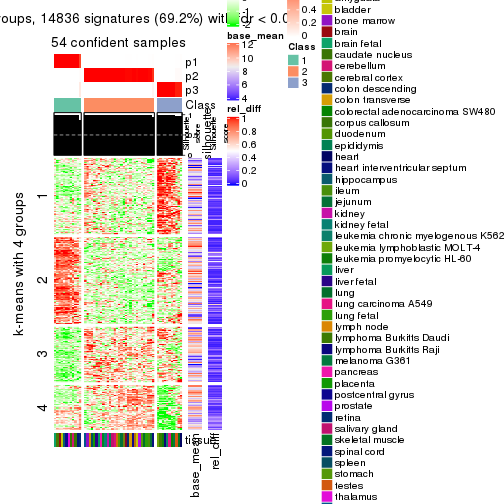
get_signatures(res, k = 4)
get_signatures(res, k = 5)
get_signatures(res, k = 6)
Signature heatmaps where rows are not scaled:
get_signatures(res, k = 2, scale_rows = FALSE)
get_signatures(res, k = 3, scale_rows = FALSE)
get_signatures(res, k = 4, scale_rows = FALSE)
get_signatures(res, k = 5, scale_rows = FALSE)
get_signatures(res, k = 6, scale_rows = FALSE)
Compare the overlap of signatures from different k:
compare_signatures(res)
get_signature() returns a data frame invisibly. TO get the list of signatures, the function
call should be assigned to a variable explicitly. In following code, if plot argument is set
to FALSE, no heatmap is plotted while only the differential analysis is performed.
# code only for demonstration
tb = get_signature(res, k = ..., plot = FALSE)
An example of the output of tb is:
#> which_row fdr mean_1 mean_2 scaled_mean_1 scaled_mean_2 km
#> 1 38 0.042760348 8.373488 9.131774 -0.5533452 0.5164555 1
#> 2 40 0.018707592 7.106213 8.469186 -0.6173731 0.5762149 1
#> 3 55 0.019134737 10.221463 11.207825 -0.6159697 0.5749050 1
#> 4 59 0.006059896 5.921854 7.869574 -0.6899429 0.6439467 1
#> 5 60 0.018055526 8.928898 10.211722 -0.6204761 0.5791110 1
#> 6 98 0.009384629 15.714769 14.887706 0.6635654 -0.6193277 2
...
The columns in tb are:
which_row: row indices corresponding to the input matrix.fdr: FDR for the differential test. mean_x: The mean value in group x.scaled_mean_x: The mean value in group x after rows are scaled.km: Row groups if k-means clustering is applied to rows.UMAP plot which shows how samples are separated.
dimension_reduction(res, k = 2, method = "UMAP")
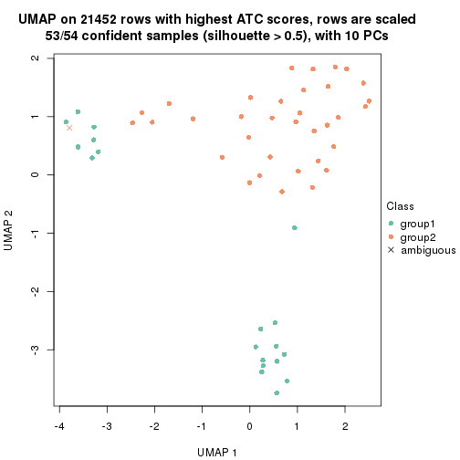
dimension_reduction(res, k = 3, method = "UMAP")
dimension_reduction(res, k = 4, method = "UMAP")
dimension_reduction(res, k = 5, method = "UMAP")

dimension_reduction(res, k = 6, method = "UMAP")
Following heatmap shows how subgroups are split when increasing k:
collect_classes(res)
Test correlation between subgroups and known annotations. If the known annotation is numeric, one-way ANOVA test is applied, and if the known annotation is discrete, chi-squared contingency table test is applied.
test_to_known_factors(res)
#> n tissue(p) k
#> ATC:mclust 53 0.397 2
#> ATC:mclust 54 0.374 3
#> ATC:mclust 50 0.349 4
#> ATC:mclust 52 0.334 5
#> ATC:mclust 47 0.458 6
If matrix rows can be associated to genes, consider to use GO_Enrichment(res,
...) to perform function enrichment for the signature genes.
The object with results only for a single top-value method and a single partition method can be extracted as:
res = res_list["ATC", "NMF"]
# you can also extract it by
# res = res_list["ATC:NMF"]
A summary of res and all the functions that can be applied to it:
res
#> A 'ConsensusPartition' object with k = 2, 3, 4, 5, 6.
#> On a matrix with 21452 rows and 54 columns.
#> Top rows (1000, 2000, 3000, 4000, 5000) are extracted by 'ATC' method.
#> Subgroups are detected by 'NMF' method.
#> Performed in total 1250 partitions by row resampling.
#> Best k for subgroups seems to be 3.
#>
#> Following methods can be applied to this 'ConsensusPartition' object:
#> [1] "cola_report" "collect_classes" "collect_plots"
#> [4] "collect_stats" "colnames" "compare_signatures"
#> [7] "consensus_heatmap" "dimension_reduction" "functional_enrichment"
#> [10] "get_anno_col" "get_anno" "get_classes"
#> [13] "get_consensus" "get_matrix" "get_membership"
#> [16] "get_param" "get_signatures" "get_stats"
#> [19] "is_best_k" "is_stable_k" "membership_heatmap"
#> [22] "ncol" "nrow" "plot_ecdf"
#> [25] "rownames" "select_partition_number" "show"
#> [28] "suggest_best_k" "test_to_known_factors"
collect_plots() function collects all the plots made from res for all k (number of partitions)
into one single page to provide an easy and fast comparison between different k.
collect_plots(res)
The plots are:
k and the heatmap of
predicted classes for each k.k.k.k.All the plots in panels can be made by individual functions and they are plotted later in this section.
select_partition_number() produces several plots showing different
statistics for choosing “optimized” k. There are following statistics:
k;k, the area increased is defined as \(A_k - A_{k-1}\).The detailed explanations of these statistics can be found in the cola vignette.
Generally speaking, lower PAC score, higher mean silhouette score or higher
concordance corresponds to better partition. Rand index and Jaccard index
measure how similar the current partition is compared to partition with k-1.
If they are too similar, we won't accept k is better than k-1.
select_partition_number(res)
The numeric values for all these statistics can be obtained by get_stats().
get_stats(res)
#> k 1-PAC mean_silhouette concordance area_increased Rand Jaccard
#> 2 2 0.859 0.941 0.971 0.4890 0.516 0.516
#> 3 3 0.941 0.937 0.974 0.2831 0.653 0.438
#> 4 4 0.854 0.865 0.934 0.1965 0.837 0.582
#> 5 5 0.746 0.692 0.836 0.0455 0.952 0.811
#> 6 6 0.758 0.627 0.779 0.0312 0.922 0.683
suggest_best_k() suggests the best \(k\) based on these statistics. The rules are as follows:
NA.suggest_best_k(res)
#> [1] 3
Following shows the table of the partitions (You need to click the show/hide
code output link to see it). The membership matrix (columns with name p*)
is inferred by
clue::cl_consensus()
function with the SE method. Basically the value in the membership matrix
represents the probability to belong to a certain group. The finall class
label for an item is determined with the group with highest probability it
belongs to.
In get_classes() function, the entropy is calculated from the membership
matrix and the silhouette score is calculated from the consensus matrix.
cbind(get_classes(res, k = 2), get_membership(res, k = 2))
#> class entropy silhouette p1 p2
#> GSM28710 2 0.2043 0.942 0.032 0.968
#> GSM28711 2 0.7815 0.740 0.232 0.768
#> GSM28712 2 0.0000 0.955 0.000 1.000
#> GSM11222 1 0.0000 0.992 1.000 0.000
#> GSM28720 2 0.0000 0.955 0.000 1.000
#> GSM11217 2 0.0000 0.955 0.000 1.000
#> GSM28723 2 0.0000 0.955 0.000 1.000
#> GSM11241 2 0.0000 0.955 0.000 1.000
#> GSM28703 2 0.0000 0.955 0.000 1.000
#> GSM11227 2 0.0000 0.955 0.000 1.000
#> GSM28706 2 0.0000 0.955 0.000 1.000
#> GSM11229 2 0.0000 0.955 0.000 1.000
#> GSM11235 2 0.0000 0.955 0.000 1.000
#> GSM28707 2 0.0000 0.955 0.000 1.000
#> GSM11240 2 0.3431 0.922 0.064 0.936
#> GSM28714 2 0.6343 0.835 0.160 0.840
#> GSM11216 1 0.0000 0.992 1.000 0.000
#> GSM28715 2 0.5519 0.869 0.128 0.872
#> GSM11234 2 0.0672 0.953 0.008 0.992
#> GSM28699 2 0.0000 0.955 0.000 1.000
#> GSM11233 2 0.0000 0.955 0.000 1.000
#> GSM28718 2 0.0672 0.953 0.008 0.992
#> GSM11231 2 0.2043 0.942 0.032 0.968
#> GSM11237 2 0.0000 0.955 0.000 1.000
#> GSM11228 1 0.4939 0.872 0.892 0.108
#> GSM28697 1 0.2778 0.944 0.952 0.048
#> GSM28698 1 0.0000 0.992 1.000 0.000
#> GSM11238 1 0.0000 0.992 1.000 0.000
#> GSM11242 1 0.0000 0.992 1.000 0.000
#> GSM28719 1 0.0000 0.992 1.000 0.000
#> GSM28708 1 0.0000 0.992 1.000 0.000
#> GSM28722 2 0.5629 0.866 0.132 0.868
#> GSM11232 2 0.9896 0.292 0.440 0.560
#> GSM28709 1 0.0000 0.992 1.000 0.000
#> GSM11226 1 0.0000 0.992 1.000 0.000
#> GSM11239 1 0.0000 0.992 1.000 0.000
#> GSM11225 1 0.0000 0.992 1.000 0.000
#> GSM11220 1 0.0000 0.992 1.000 0.000
#> GSM28701 1 0.0000 0.992 1.000 0.000
#> GSM28721 1 0.0000 0.992 1.000 0.000
#> GSM28713 2 0.0000 0.955 0.000 1.000
#> GSM28716 2 0.0000 0.955 0.000 1.000
#> GSM11221 2 0.2043 0.942 0.032 0.968
#> GSM28717 2 0.0000 0.955 0.000 1.000
#> GSM11223 2 0.0000 0.955 0.000 1.000
#> GSM11218 1 0.0000 0.992 1.000 0.000
#> GSM11219 2 0.5059 0.884 0.112 0.888
#> GSM11236 1 0.0000 0.992 1.000 0.000
#> GSM28702 1 0.0000 0.992 1.000 0.000
#> GSM28705 1 0.0000 0.992 1.000 0.000
#> GSM11230 1 0.0000 0.992 1.000 0.000
#> GSM28704 2 0.3114 0.928 0.056 0.944
#> GSM28700 2 0.0000 0.955 0.000 1.000
#> GSM11224 2 0.0000 0.955 0.000 1.000
cbind(get_classes(res, k = 3), get_membership(res, k = 3))
#> class entropy silhouette p1 p2 p3
#> GSM28710 2 0.0000 0.966 0.000 1.000 0.000
#> GSM28711 2 0.0000 0.966 0.000 1.000 0.000
#> GSM28712 2 0.0000 0.966 0.000 1.000 0.000
#> GSM11222 3 0.0000 0.952 0.000 0.000 1.000
#> GSM28720 1 0.0000 0.995 1.000 0.000 0.000
#> GSM11217 1 0.0000 0.995 1.000 0.000 0.000
#> GSM28723 1 0.0000 0.995 1.000 0.000 0.000
#> GSM11241 1 0.0000 0.995 1.000 0.000 0.000
#> GSM28703 1 0.0000 0.995 1.000 0.000 0.000
#> GSM11227 1 0.0000 0.995 1.000 0.000 0.000
#> GSM28706 1 0.0000 0.995 1.000 0.000 0.000
#> GSM11229 1 0.0000 0.995 1.000 0.000 0.000
#> GSM11235 1 0.0000 0.995 1.000 0.000 0.000
#> GSM28707 1 0.0000 0.995 1.000 0.000 0.000
#> GSM11240 2 0.0000 0.966 0.000 1.000 0.000
#> GSM28714 2 0.0000 0.966 0.000 1.000 0.000
#> GSM11216 3 0.0000 0.952 0.000 0.000 1.000
#> GSM28715 2 0.0000 0.966 0.000 1.000 0.000
#> GSM11234 2 0.0000 0.966 0.000 1.000 0.000
#> GSM28699 2 0.0237 0.963 0.004 0.996 0.000
#> GSM11233 2 0.0000 0.966 0.000 1.000 0.000
#> GSM28718 2 0.0000 0.966 0.000 1.000 0.000
#> GSM11231 2 0.0000 0.966 0.000 1.000 0.000
#> GSM11237 2 0.0000 0.966 0.000 1.000 0.000
#> GSM11228 2 0.1163 0.946 0.000 0.972 0.028
#> GSM28697 2 0.4399 0.765 0.000 0.812 0.188
#> GSM28698 3 0.0000 0.952 0.000 0.000 1.000
#> GSM11238 3 0.0000 0.952 0.000 0.000 1.000
#> GSM11242 3 0.0000 0.952 0.000 0.000 1.000
#> GSM28719 2 0.0747 0.955 0.000 0.984 0.016
#> GSM28708 3 0.4605 0.742 0.000 0.204 0.796
#> GSM28722 2 0.0000 0.966 0.000 1.000 0.000
#> GSM11232 2 0.0000 0.966 0.000 1.000 0.000
#> GSM28709 3 0.0000 0.952 0.000 0.000 1.000
#> GSM11226 3 0.5216 0.649 0.000 0.260 0.740
#> GSM11239 3 0.0000 0.952 0.000 0.000 1.000
#> GSM11225 3 0.0000 0.952 0.000 0.000 1.000
#> GSM11220 3 0.0000 0.952 0.000 0.000 1.000
#> GSM28701 2 0.6095 0.349 0.000 0.608 0.392
#> GSM28721 2 0.4750 0.726 0.000 0.784 0.216
#> GSM28713 2 0.0000 0.966 0.000 1.000 0.000
#> GSM28716 1 0.1753 0.938 0.952 0.048 0.000
#> GSM11221 2 0.0000 0.966 0.000 1.000 0.000
#> GSM28717 2 0.0000 0.966 0.000 1.000 0.000
#> GSM11223 1 0.0000 0.995 1.000 0.000 0.000
#> GSM11218 3 0.1163 0.929 0.000 0.028 0.972
#> GSM11219 2 0.0000 0.966 0.000 1.000 0.000
#> GSM11236 3 0.0000 0.952 0.000 0.000 1.000
#> GSM28702 3 0.0000 0.952 0.000 0.000 1.000
#> GSM28705 2 0.1031 0.949 0.000 0.976 0.024
#> GSM11230 2 0.0000 0.966 0.000 1.000 0.000
#> GSM28704 2 0.0000 0.966 0.000 1.000 0.000
#> GSM28700 2 0.0000 0.966 0.000 1.000 0.000
#> GSM11224 2 0.0000 0.966 0.000 1.000 0.000
cbind(get_classes(res, k = 4), get_membership(res, k = 4))
#> class entropy silhouette p1 p2 p3 p4
#> GSM28710 4 0.3486 0.754 0 0.188 0.000 0.812
#> GSM28711 2 0.4250 0.694 0 0.724 0.000 0.276
#> GSM28712 2 0.0336 0.863 0 0.992 0.000 0.008
#> GSM11222 3 0.0592 0.953 0 0.000 0.984 0.016
#> GSM28720 1 0.0000 1.000 1 0.000 0.000 0.000
#> GSM11217 1 0.0000 1.000 1 0.000 0.000 0.000
#> GSM28723 1 0.0000 1.000 1 0.000 0.000 0.000
#> GSM11241 1 0.0000 1.000 1 0.000 0.000 0.000
#> GSM28703 1 0.0000 1.000 1 0.000 0.000 0.000
#> GSM11227 1 0.0000 1.000 1 0.000 0.000 0.000
#> GSM28706 1 0.0000 1.000 1 0.000 0.000 0.000
#> GSM11229 1 0.0000 1.000 1 0.000 0.000 0.000
#> GSM11235 1 0.0000 1.000 1 0.000 0.000 0.000
#> GSM28707 1 0.0000 1.000 1 0.000 0.000 0.000
#> GSM11240 2 0.0469 0.863 0 0.988 0.000 0.012
#> GSM28714 2 0.0469 0.861 0 0.988 0.000 0.012
#> GSM11216 3 0.0336 0.956 0 0.000 0.992 0.008
#> GSM28715 2 0.4643 0.578 0 0.656 0.000 0.344
#> GSM11234 4 0.3266 0.767 0 0.168 0.000 0.832
#> GSM28699 2 0.0336 0.856 0 0.992 0.000 0.008
#> GSM11233 2 0.0469 0.853 0 0.988 0.000 0.012
#> GSM28718 2 0.0336 0.863 0 0.992 0.000 0.008
#> GSM11231 2 0.4406 0.662 0 0.700 0.000 0.300
#> GSM11237 2 0.0469 0.863 0 0.988 0.000 0.012
#> GSM11228 4 0.0707 0.902 0 0.020 0.000 0.980
#> GSM28697 4 0.0469 0.899 0 0.000 0.012 0.988
#> GSM28698 3 0.0336 0.957 0 0.000 0.992 0.008
#> GSM11238 3 0.0188 0.957 0 0.000 0.996 0.004
#> GSM11242 3 0.0336 0.957 0 0.000 0.992 0.008
#> GSM28719 4 0.0707 0.902 0 0.020 0.000 0.980
#> GSM28708 3 0.4103 0.678 0 0.000 0.744 0.256
#> GSM28722 2 0.4164 0.707 0 0.736 0.000 0.264
#> GSM11232 4 0.1389 0.891 0 0.048 0.000 0.952
#> GSM28709 3 0.0188 0.957 0 0.000 0.996 0.004
#> GSM11226 4 0.0817 0.894 0 0.000 0.024 0.976
#> GSM11239 3 0.0188 0.956 0 0.000 0.996 0.004
#> GSM11225 3 0.0188 0.956 0 0.000 0.996 0.004
#> GSM11220 3 0.0336 0.956 0 0.000 0.992 0.008
#> GSM28701 4 0.0469 0.899 0 0.000 0.012 0.988
#> GSM28721 4 0.0657 0.900 0 0.004 0.012 0.984
#> GSM28713 4 0.4992 -0.120 0 0.476 0.000 0.524
#> GSM28716 1 0.0000 1.000 1 0.000 0.000 0.000
#> GSM11221 2 0.4746 0.478 0 0.632 0.000 0.368
#> GSM28717 2 0.0779 0.849 0 0.980 0.004 0.016
#> GSM11223 1 0.0000 1.000 1 0.000 0.000 0.000
#> GSM11218 4 0.0817 0.894 0 0.000 0.024 0.976
#> GSM11219 2 0.1637 0.852 0 0.940 0.000 0.060
#> GSM11236 3 0.0000 0.955 0 0.000 1.000 0.000
#> GSM28702 3 0.3444 0.796 0 0.000 0.816 0.184
#> GSM28705 4 0.0707 0.902 0 0.020 0.000 0.980
#> GSM11230 2 0.0336 0.863 0 0.992 0.000 0.008
#> GSM28704 4 0.1389 0.891 0 0.048 0.000 0.952
#> GSM28700 2 0.1792 0.848 0 0.932 0.000 0.068
#> GSM11224 2 0.3688 0.760 0 0.792 0.000 0.208
cbind(get_classes(res, k = 5), get_membership(res, k = 5))
#> class entropy silhouette p1 p2 p3 p4 p5
#> GSM28710 4 0.5309 0.454 0.000 0.264 0.000 0.644 0.092
#> GSM28711 5 0.5491 0.239 0.000 0.312 0.000 0.088 0.600
#> GSM28712 2 0.1502 0.728 0.000 0.940 0.000 0.004 0.056
#> GSM11222 3 0.3835 0.653 0.000 0.000 0.732 0.008 0.260
#> GSM28720 1 0.0000 0.999 1.000 0.000 0.000 0.000 0.000
#> GSM11217 1 0.0000 0.999 1.000 0.000 0.000 0.000 0.000
#> GSM28723 1 0.0000 0.999 1.000 0.000 0.000 0.000 0.000
#> GSM11241 1 0.0000 0.999 1.000 0.000 0.000 0.000 0.000
#> GSM28703 1 0.0000 0.999 1.000 0.000 0.000 0.000 0.000
#> GSM11227 1 0.0000 0.999 1.000 0.000 0.000 0.000 0.000
#> GSM28706 1 0.0000 0.999 1.000 0.000 0.000 0.000 0.000
#> GSM11229 1 0.0000 0.999 1.000 0.000 0.000 0.000 0.000
#> GSM11235 1 0.0000 0.999 1.000 0.000 0.000 0.000 0.000
#> GSM28707 1 0.0000 0.999 1.000 0.000 0.000 0.000 0.000
#> GSM11240 2 0.0162 0.739 0.000 0.996 0.000 0.004 0.000
#> GSM28714 2 0.0510 0.741 0.000 0.984 0.000 0.000 0.016
#> GSM11216 3 0.1270 0.891 0.000 0.000 0.948 0.000 0.052
#> GSM28715 2 0.5117 0.568 0.000 0.652 0.000 0.276 0.072
#> GSM11234 4 0.3745 0.500 0.000 0.196 0.000 0.780 0.024
#> GSM28699 2 0.3177 0.637 0.000 0.792 0.000 0.000 0.208
#> GSM11233 2 0.0880 0.730 0.000 0.968 0.000 0.000 0.032
#> GSM28718 2 0.3662 0.648 0.000 0.744 0.000 0.004 0.252
#> GSM11231 2 0.5348 0.555 0.000 0.656 0.000 0.112 0.232
#> GSM11237 2 0.3430 0.678 0.000 0.776 0.000 0.004 0.220
#> GSM11228 4 0.2796 0.625 0.000 0.008 0.008 0.868 0.116
#> GSM28697 4 0.0771 0.592 0.000 0.004 0.000 0.976 0.020
#> GSM28698 3 0.0162 0.907 0.000 0.000 0.996 0.000 0.004
#> GSM11238 3 0.0290 0.907 0.000 0.000 0.992 0.000 0.008
#> GSM11242 3 0.0290 0.907 0.000 0.000 0.992 0.000 0.008
#> GSM28719 4 0.4863 0.361 0.000 0.016 0.008 0.592 0.384
#> GSM28708 5 0.5819 0.205 0.000 0.048 0.336 0.032 0.584
#> GSM28722 2 0.5760 0.247 0.000 0.536 0.000 0.096 0.368
#> GSM11232 4 0.6002 0.373 0.000 0.140 0.000 0.552 0.308
#> GSM28709 3 0.0880 0.904 0.000 0.000 0.968 0.000 0.032
#> GSM11226 4 0.5385 0.238 0.000 0.028 0.016 0.528 0.428
#> GSM11239 3 0.0162 0.907 0.000 0.000 0.996 0.000 0.004
#> GSM11225 3 0.0162 0.907 0.000 0.000 0.996 0.000 0.004
#> GSM11220 3 0.2712 0.842 0.000 0.000 0.880 0.032 0.088
#> GSM28701 4 0.1697 0.553 0.000 0.000 0.008 0.932 0.060
#> GSM28721 4 0.4402 0.460 0.000 0.012 0.000 0.636 0.352
#> GSM28713 2 0.4639 0.478 0.000 0.612 0.000 0.368 0.020
#> GSM28716 1 0.0451 0.986 0.988 0.008 0.000 0.000 0.004
#> GSM11221 2 0.5681 0.534 0.000 0.604 0.000 0.276 0.120
#> GSM28717 2 0.3661 0.577 0.000 0.724 0.000 0.000 0.276
#> GSM11223 1 0.0000 0.999 1.000 0.000 0.000 0.000 0.000
#> GSM11218 5 0.4883 -0.356 0.000 0.016 0.004 0.464 0.516
#> GSM11219 2 0.1981 0.743 0.000 0.924 0.000 0.028 0.048
#> GSM11236 3 0.0865 0.903 0.000 0.004 0.972 0.000 0.024
#> GSM28702 3 0.4874 0.458 0.000 0.000 0.632 0.040 0.328
#> GSM28705 4 0.3203 0.624 0.000 0.012 0.000 0.820 0.168
#> GSM11230 2 0.3488 0.693 0.000 0.808 0.024 0.000 0.168
#> GSM28704 4 0.3888 0.629 0.000 0.076 0.000 0.804 0.120
#> GSM28700 2 0.2359 0.744 0.000 0.904 0.000 0.036 0.060
#> GSM11224 2 0.4255 0.686 0.000 0.776 0.000 0.128 0.096
cbind(get_classes(res, k = 6), get_membership(res, k = 6))
#> class entropy silhouette p1 p2 p3 p4 p5 p6
#> GSM28710 6 0.6155 -0.0413 0.000 0.224 0.000 0.336 0.008 0.432
#> GSM28711 6 0.6221 0.1761 0.000 0.316 0.000 0.060 0.108 0.516
#> GSM28712 2 0.1866 0.7048 0.000 0.908 0.000 0.008 0.084 0.000
#> GSM11222 3 0.5585 0.1314 0.000 0.000 0.456 0.028 0.068 0.448
#> GSM28720 1 0.0000 0.9954 1.000 0.000 0.000 0.000 0.000 0.000
#> GSM11217 1 0.0000 0.9954 1.000 0.000 0.000 0.000 0.000 0.000
#> GSM28723 1 0.0000 0.9954 1.000 0.000 0.000 0.000 0.000 0.000
#> GSM11241 1 0.0000 0.9954 1.000 0.000 0.000 0.000 0.000 0.000
#> GSM28703 1 0.0000 0.9954 1.000 0.000 0.000 0.000 0.000 0.000
#> GSM11227 1 0.0000 0.9954 1.000 0.000 0.000 0.000 0.000 0.000
#> GSM28706 1 0.0260 0.9906 0.992 0.000 0.000 0.000 0.008 0.000
#> GSM11229 1 0.0000 0.9954 1.000 0.000 0.000 0.000 0.000 0.000
#> GSM11235 1 0.0000 0.9954 1.000 0.000 0.000 0.000 0.000 0.000
#> GSM28707 1 0.0000 0.9954 1.000 0.000 0.000 0.000 0.000 0.000
#> GSM11240 2 0.1010 0.7382 0.000 0.960 0.000 0.004 0.036 0.000
#> GSM28714 2 0.1429 0.7451 0.000 0.940 0.000 0.004 0.052 0.004
#> GSM11216 3 0.2633 0.8332 0.000 0.000 0.864 0.104 0.032 0.000
#> GSM28715 2 0.4148 0.6443 0.000 0.748 0.000 0.184 0.012 0.056
#> GSM11234 4 0.5683 0.3280 0.000 0.336 0.000 0.532 0.016 0.116
#> GSM28699 5 0.3684 0.6692 0.000 0.332 0.000 0.004 0.664 0.000
#> GSM11233 2 0.3714 0.0486 0.000 0.656 0.000 0.004 0.340 0.000
#> GSM28718 2 0.2978 0.7324 0.000 0.856 0.000 0.008 0.084 0.052
#> GSM11231 2 0.3920 0.7070 0.000 0.800 0.000 0.036 0.060 0.104
#> GSM11237 2 0.3065 0.7305 0.000 0.848 0.000 0.008 0.096 0.048
#> GSM11228 6 0.4712 0.0314 0.000 0.016 0.000 0.440 0.020 0.524
#> GSM28697 4 0.3769 0.5856 0.000 0.040 0.000 0.780 0.012 0.168
#> GSM28698 3 0.0551 0.8698 0.000 0.000 0.984 0.008 0.004 0.004
#> GSM11238 3 0.0692 0.8679 0.000 0.000 0.976 0.000 0.004 0.020
#> GSM11242 3 0.0508 0.8695 0.000 0.000 0.984 0.004 0.000 0.012
#> GSM28719 6 0.3147 0.3721 0.000 0.008 0.000 0.160 0.016 0.816
#> GSM28708 6 0.6825 0.2559 0.000 0.044 0.260 0.064 0.096 0.536
#> GSM28722 2 0.4378 0.6050 0.000 0.724 0.000 0.020 0.048 0.208
#> GSM11232 6 0.6514 0.0255 0.000 0.308 0.000 0.220 0.032 0.440
#> GSM28709 3 0.1720 0.8581 0.000 0.000 0.928 0.032 0.040 0.000
#> GSM11226 6 0.2842 0.4127 0.000 0.020 0.016 0.048 0.032 0.884
#> GSM11239 3 0.0603 0.8688 0.000 0.000 0.980 0.000 0.004 0.016
#> GSM11225 3 0.1167 0.8655 0.000 0.000 0.960 0.008 0.012 0.020
#> GSM11220 3 0.4038 0.6982 0.000 0.000 0.712 0.244 0.044 0.000
#> GSM28701 4 0.3533 0.5424 0.000 0.004 0.004 0.780 0.020 0.192
#> GSM28721 6 0.4559 0.3516 0.000 0.044 0.000 0.192 0.040 0.724
#> GSM28713 2 0.4286 0.5963 0.000 0.744 0.000 0.156 0.008 0.092
#> GSM28716 1 0.1003 0.9584 0.964 0.020 0.000 0.016 0.000 0.000
#> GSM11221 5 0.7244 0.2699 0.000 0.344 0.000 0.120 0.356 0.180
#> GSM28717 5 0.3767 0.6798 0.000 0.276 0.004 0.012 0.708 0.000
#> GSM11223 1 0.0146 0.9932 0.996 0.000 0.000 0.000 0.004 0.000
#> GSM11218 6 0.1007 0.4125 0.000 0.004 0.004 0.008 0.016 0.968
#> GSM11219 2 0.1275 0.7530 0.000 0.956 0.000 0.016 0.016 0.012
#> GSM11236 3 0.3210 0.8347 0.000 0.016 0.856 0.064 0.056 0.008
#> GSM28702 6 0.4962 0.1849 0.000 0.000 0.292 0.020 0.056 0.632
#> GSM28705 6 0.4872 0.0802 0.000 0.028 0.000 0.400 0.020 0.552
#> GSM11230 2 0.4553 0.6257 0.000 0.776 0.056 0.016 0.072 0.080
#> GSM28704 6 0.6122 -0.1845 0.000 0.308 0.000 0.336 0.000 0.356
#> GSM28700 2 0.2528 0.7319 0.000 0.892 0.000 0.028 0.056 0.024
#> GSM11224 2 0.2865 0.7346 0.000 0.868 0.000 0.056 0.012 0.064
Heatmaps for the consensus matrix. It visualizes the probability of two samples to be in a same group.
consensus_heatmap(res, k = 2)
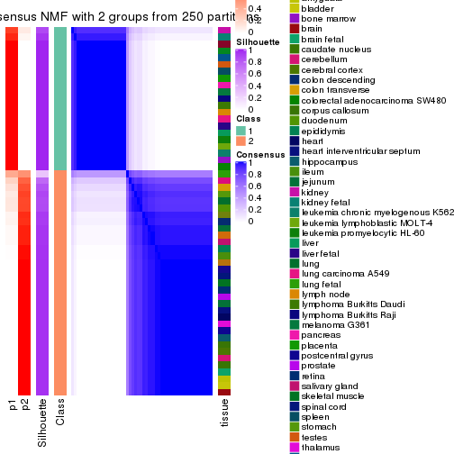
consensus_heatmap(res, k = 3)
consensus_heatmap(res, k = 4)
consensus_heatmap(res, k = 5)

consensus_heatmap(res, k = 6)
Heatmaps for the membership of samples in all partitions to see how consistent they are:
membership_heatmap(res, k = 2)
membership_heatmap(res, k = 3)
membership_heatmap(res, k = 4)
membership_heatmap(res, k = 5)
membership_heatmap(res, k = 6)
As soon as we have had the classes for columns, we can look for signatures which are significantly different between classes which can be candidate marks for certain classes. Following are the heatmaps for signatures.
Signature heatmaps where rows are scaled:
get_signatures(res, k = 2)
get_signatures(res, k = 3)
get_signatures(res, k = 4)
get_signatures(res, k = 5)
get_signatures(res, k = 6)
Signature heatmaps where rows are not scaled:
get_signatures(res, k = 2, scale_rows = FALSE)

get_signatures(res, k = 3, scale_rows = FALSE)
get_signatures(res, k = 4, scale_rows = FALSE)
get_signatures(res, k = 5, scale_rows = FALSE)
get_signatures(res, k = 6, scale_rows = FALSE)
Compare the overlap of signatures from different k:
compare_signatures(res)
get_signature() returns a data frame invisibly. TO get the list of signatures, the function
call should be assigned to a variable explicitly. In following code, if plot argument is set
to FALSE, no heatmap is plotted while only the differential analysis is performed.
# code only for demonstration
tb = get_signature(res, k = ..., plot = FALSE)
An example of the output of tb is:
#> which_row fdr mean_1 mean_2 scaled_mean_1 scaled_mean_2 km
#> 1 38 0.042760348 8.373488 9.131774 -0.5533452 0.5164555 1
#> 2 40 0.018707592 7.106213 8.469186 -0.6173731 0.5762149 1
#> 3 55 0.019134737 10.221463 11.207825 -0.6159697 0.5749050 1
#> 4 59 0.006059896 5.921854 7.869574 -0.6899429 0.6439467 1
#> 5 60 0.018055526 8.928898 10.211722 -0.6204761 0.5791110 1
#> 6 98 0.009384629 15.714769 14.887706 0.6635654 -0.6193277 2
...
The columns in tb are:
which_row: row indices corresponding to the input matrix.fdr: FDR for the differential test. mean_x: The mean value in group x.scaled_mean_x: The mean value in group x after rows are scaled.km: Row groups if k-means clustering is applied to rows.UMAP plot which shows how samples are separated.
dimension_reduction(res, k = 2, method = "UMAP")

dimension_reduction(res, k = 3, method = "UMAP")
dimension_reduction(res, k = 4, method = "UMAP")
dimension_reduction(res, k = 5, method = "UMAP")
dimension_reduction(res, k = 6, method = "UMAP")
Following heatmap shows how subgroups are split when increasing k:
collect_classes(res)
Test correlation between subgroups and known annotations. If the known annotation is numeric, one-way ANOVA test is applied, and if the known annotation is discrete, chi-squared contingency table test is applied.
test_to_known_factors(res)
#> n tissue(p) k
#> ATC:NMF 53 0.397 2
#> ATC:NMF 53 0.373 3
#> ATC:NMF 52 0.352 4
#> ATC:NMF 43 0.338 5
#> ATC:NMF 38 0.308 6
If matrix rows can be associated to genes, consider to use GO_Enrichment(res,
...) to perform function enrichment for the signature genes.
sessionInfo()
#> R version 3.6.0 (2019-04-26)
#> Platform: x86_64-pc-linux-gnu (64-bit)
#> Running under: CentOS Linux 7 (Core)
#>
#> Matrix products: default
#> BLAS: /usr/lib64/libblas.so.3.4.2
#> LAPACK: /usr/lib64/liblapack.so.3.4.2
#>
#> locale:
#> [1] LC_CTYPE=en_GB.UTF-8 LC_NUMERIC=C LC_TIME=en_GB.UTF-8
#> [4] LC_COLLATE=en_GB.UTF-8 LC_MONETARY=en_GB.UTF-8 LC_MESSAGES=en_GB.UTF-8
#> [7] LC_PAPER=en_GB.UTF-8 LC_NAME=C LC_ADDRESS=C
#> [10] LC_TELEPHONE=C LC_MEASUREMENT=en_GB.UTF-8 LC_IDENTIFICATION=C
#>
#> attached base packages:
#> [1] grid parallel stats graphics grDevices utils datasets methods base
#>
#> other attached packages:
#> [1] genefilter_1.66.0 ComplexHeatmap_2.1.1 markdown_1.1 knitr_1.26
#> [5] preprocessCore_1.46.0 cola_1.3.2 GEOquery_2.52.0 Biobase_2.44.0
#> [9] BiocGenerics_0.30.0 GetoptLong_0.1.7
#>
#> loaded via a namespace (and not attached):
#> [1] bitops_1.0-6 matrixStats_0.55.0 bit64_0.9-7 doParallel_1.0.15
#> [5] RColorBrewer_1.1-2 httr_1.4.1 tools_3.6.0 backports_1.1.5
#> [9] R6_2.4.1 DBI_1.0.0 lazyeval_0.2.2 colorspace_1.4-1
#> [13] withr_2.1.2 tidyselect_0.2.5 gridExtra_2.3 bit_1.1-14
#> [17] compiler_3.6.0 xml2_1.2.2 microbenchmark_1.4-7 pkgmaker_0.28
#> [21] slam_0.1-46 scales_1.1.0 readr_1.3.1 NMF_0.23.6
#> [25] stringr_1.4.0 digest_0.6.23 pkgconfig_2.0.3 bibtex_0.4.2
#> [29] highr_0.8 limma_3.40.6 rlang_0.4.2 GlobalOptions_0.1.1
#> [33] RSQLite_2.1.2 impute_1.58.0 shape_1.4.4 mclust_5.4.5
#> [37] dendextend_1.12.0 dplyr_0.8.3 RCurl_1.95-4.12 magrittr_1.5
#> [41] Matrix_1.2-17 Rcpp_1.0.3 munsell_0.5.0 S4Vectors_0.22.1
#> [45] viridis_0.5.1 lifecycle_0.1.0 stringi_1.4.3 plyr_1.8.4
#> [49] blob_1.2.0 crayon_1.3.4 lattice_0.20-38 splines_3.6.0
#> [53] annotate_1.62.0 circlize_0.4.9 hms_0.5.2 zeallot_0.1.0
#> [57] pillar_1.4.2 rjson_0.2.20 rngtools_1.4 reshape2_1.4.3
#> [61] codetools_0.2-16 stats4_3.6.0 XML_3.98-1.20 glue_1.3.1
#> [65] evaluate_0.14 png_0.1-7 vctrs_0.2.0 foreach_1.4.7
#> [69] polyclip_1.10-0 gtable_0.3.0 purrr_0.3.3 tidyr_1.0.0
#> [73] clue_0.3-57 assertthat_0.2.1 ggplot2_3.2.1 xfun_0.11
#> [77] gridBase_0.4-7 eulerr_6.0.0 xtable_1.8-4 skmeans_0.2-11
#> [81] survival_2.44-1.1 viridisLite_0.3.0 tibble_2.1.3 iterators_1.0.12
#> [85] AnnotationDbi_1.46.1 registry_0.5-1 memoise_1.1.0 IRanges_2.18.3
#> [89] cluster_2.1.0 brew_1.0-6